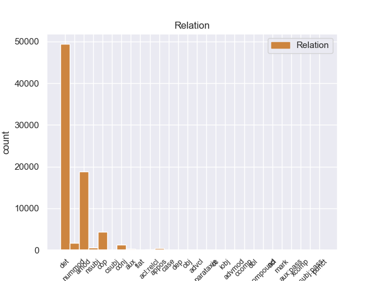
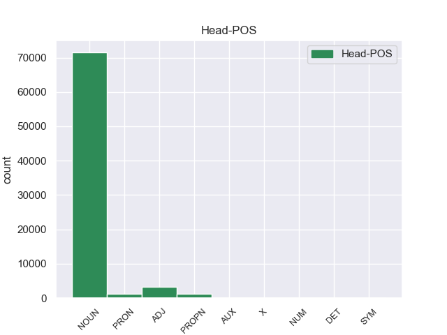
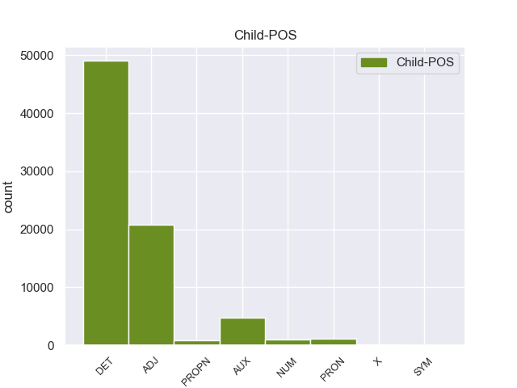

Distribution of features within this leaf



Agreement Rules sorted by frequency.
- When the dependent token is the determiner(det) of the head token, and the head token is NOUN and the dependent token is DET.
1 El _ _ _ _ 0 _ _ _
2 estudio _ _ _ _ 0 _ _ _
3 es _ _ _ _ 0 _ _ _
4 muy _ _ _ _ 0 _ _ _
5 confortable _ _ _ _ 0 _ _ _
6 , _ _ _ _ 0 _ _ _
7 la _ _ _ _ 0 _ _ _
8 música _ _ _ _ 0 _ _ _
9 , _ _ _ _ 0 _ _ _
10 el _ _ _ _ 0 _ _ _
11 sonido _ _ _ _ 0 _ _ _
12 de _ _ _ _ 0 _ _ _
13 el _ _ _ _ 0 _ _ _
14 agua _ _ _ _ 0 _ _ _
15 , _ _ _ _ 0 _ _ _
16 la _ _ _ _ 0 _ _ _
17 luz _ _ _ _ 0 _ _ _
18 tenue _ _ _ _ 0 _ _ _
19 ... _ _ _ _ 0 _ _ _
20 y _ _ _ _ 0 _ _ _
21 lo _ _ _ _ 0 _ _ _
22 mejor _ _ _ _ 0 _ _ _
23 sus su DET _ Number=Plur|Person=3|Poss=Yes|PronType=Prs 24 det _ _
24 manos mano NOUN _ Gender=Fem|Number=Plur 0 _ _ _
25 ! _ _ _ _ 0 _ _ _
1 El _ _ _ _ 0 _ _ _
2 estudio _ _ _ _ 0 _ _ _
3 es _ _ _ _ 0 _ _ _
4 muy _ _ _ _ 0 _ _ _
5 confortable _ _ _ _ 0 _ _ _
6 , _ _ _ _ 0 _ _ _
7 la _ _ _ _ 0 _ _ _
8 música _ _ _ _ 0 _ _ _
9 , _ _ _ _ 0 _ _ _
10 el _ _ _ _ 0 _ _ _
11 sonido _ _ _ _ 0 _ _ _
12 de _ _ _ _ 0 _ _ _
13 el _ _ _ _ 0 _ _ _
14 agua _ _ _ _ 0 _ _ _
15 , _ _ _ _ 0 _ _ _
16 la _ _ _ _ 0 _ _ _
17 luz luz NOUN _ Gender=Fem|Number=Sing 0 _ _ _
18 tenue tenue ADJ _ Number=Sing 17 amod _ SpaceAfter=No
19 ... _ _ _ _ 0 _ _ _
20 y _ _ _ _ 0 _ _ _
21 lo _ _ _ _ 0 _ _ _
22 mejor _ _ _ _ 0 _ _ _
23 sus _ _ _ _ 0 _ _ _
24 manos _ _ _ _ 0 _ _ _
25 ! _ _ _ _ 0 _ _ _
1 La _ _ _ _ 0 _ _ _
2 final _ _ _ _ 0 _ _ _
3 fue _ _ _ _ 0 _ _ _
4 protagonizada _ _ _ _ 0 _ _ _
5 por _ _ _ _ 0 _ _ _
6 Looder _ _ _ _ 0 _ _ _
7 y _ _ _ _ 0 _ _ _
8 Lytos _ _ _ _ 0 _ _ _
9 , _ _ _ _ 0 _ _ _
10 cuyo _ _ _ _ 0 _ _ _
11 vencedor _ _ _ _ 0 _ _ _
12 fue ser AUX _ Mood=Ind|Number=Sing|Person=3|Tense=Past|VerbForm=Fin 14 cop _ _
13 este _ _ _ _ 0 _ _ _
14 último último NOUN _ Gender=Masc|Number=Sing 0 _ _ _
15 por _ _ _ _ 0 _ _ _
16 decisión _ _ _ _ 0 _ _ _
17 de _ _ _ _ 0 _ _ _
18 el _ _ _ _ 0 _ _ _
19 jurado _ _ _ _ 0 _ _ _
20 ( _ _ _ _ 0 _ _ _
21 Eklips _ _ _ _ 0 _ _ _
22 , _ _ _ _ 0 _ _ _
23 Markooz _ _ _ _ 0 _ _ _
24 y _ _ _ _ 0 _ _ _
25 Bee _ _ _ _ 0 _ _ _
26 Low _ _ _ _ 0 _ _ _
27 ) _ _ _ _ 0 _ _ _
28 . _ _ _ _ 0 _ _ _
1 El _ _ _ _ 0 _ _ _
2 estudio _ _ _ _ 0 _ _ _
3 es ser AUX _ Mood=Ind|Number=Sing|Person=3|Tense=Pres|VerbForm=Fin 5 cop _ _
4 muy _ _ _ _ 0 _ _ _
5 confortable confortable ADJ _ Number=Sing 0 _ _ _
6 , _ _ _ _ 0 _ _ _
7 la _ _ _ _ 0 _ _ _
8 música _ _ _ _ 0 _ _ _
9 , _ _ _ _ 0 _ _ _
10 el _ _ _ _ 0 _ _ _
11 sonido _ _ _ _ 0 _ _ _
12 de _ _ _ _ 0 _ _ _
13 el _ _ _ _ 0 _ _ _
14 agua _ _ _ _ 0 _ _ _
15 , _ _ _ _ 0 _ _ _
16 la _ _ _ _ 0 _ _ _
17 luz _ _ _ _ 0 _ _ _
18 tenue _ _ _ _ 0 _ _ _
19 ... _ _ _ _ 0 _ _ _
20 y _ _ _ _ 0 _ _ _
21 lo _ _ _ _ 0 _ _ _
22 mejor _ _ _ _ 0 _ _ _
23 sus _ _ _ _ 0 _ _ _
24 manos _ _ _ _ 0 _ _ _
25 ! _ _ _ _ 0 _ _ _
1 El _ _ _ _ 0 _ _ _
2 estudio _ _ _ _ 0 _ _ _
3 , _ _ _ _ 0 _ _ _
4 publicado _ _ _ _ 0 _ _ _
5 en _ _ _ _ 0 _ _ _
6 la _ _ _ _ 0 _ _ _
7 revista _ _ _ _ 0 _ _ _
8 Environmental _ _ _ _ 0 _ _ _
9 Health _ _ _ _ 0 _ _ _
10 Perspectives _ _ _ _ 0 _ _ _
11 , _ _ _ _ 0 _ _ _
12 precisó _ _ _ _ 0 _ _ _
13 que _ _ _ _ 0 _ _ _
14 el _ _ _ _ 0 _ _ _
15 herbicida _ _ _ _ 0 _ _ _
16 mata _ _ _ _ 0 _ _ _
17 una _ _ _ _ 0 _ _ _
18 gran _ _ _ _ 0 _ _ _
19 proporción _ _ _ _ 0 _ _ _
20 de _ _ _ _ 0 _ _ _
21 esas _ _ _ _ 0 _ _ _
22 células _ _ _ _ 0 _ _ _
23 después _ _ _ _ 0 _ _ _
24 de _ _ _ _ 0 _ _ _
25 sólo _ _ _ _ 0 _ _ _
26 dieciocho dieciocho NUM _ Number=Plur|NumType=Card 27 nummod _ _
27 horas hora NOUN _ Gender=Fem|Number=Plur 0 _ _ _
28 de _ _ _ _ 0 _ _ _
29 exposición _ _ _ _ 0 _ _ _
30 a _ _ _ _ 0 _ _ _
31 concentraciones _ _ _ _ 0 _ _ _
32 menores _ _ _ _ 0 _ _ _
33 que _ _ _ _ 0 _ _ _
34 las _ _ _ _ 0 _ _ _
35 utilizadas _ _ _ _ 0 _ _ _
36 en _ _ _ _ 0 _ _ _
37 el _ _ _ _ 0 _ _ _
38 uso _ _ _ _ 0 _ _ _
39 agrícola _ _ _ _ 0 _ _ _
40 . _ _ _ _ 0 _ _ _
1 Se _ _ _ _ 0 _ _ _
2 dividen _ _ _ _ 0 _ _ _
3 en _ _ _ _ 0 _ _ _
4 dos _ _ _ _ 0 _ _ _
5 subtipos _ _ _ _ 0 _ _ _
6 , _ _ _ _ 0 _ _ _
7 uno _ _ _ _ 0 _ _ _
8 generalmente _ _ _ _ 0 _ _ _
9 compuesto _ _ _ _ 0 _ _ _
10 de _ _ _ _ 0 _ _ _
11 una _ _ _ _ 0 _ _ _
12 tumba _ _ _ _ 0 _ _ _
13 de _ _ _ _ 0 _ _ _
14 corredor _ _ _ _ 0 _ _ _
15 con _ _ _ _ 0 _ _ _
16 bóveda _ _ _ _ 0 _ _ _
17 con _ _ _ _ 0 _ _ _
18 piedras _ _ _ _ 0 _ _ _
19 en _ _ _ _ 0 _ _ _
20 voladizo _ _ _ _ 0 _ _ _
21 con _ _ _ _ 0 _ _ _
22 una _ _ _ _ 0 _ _ _
23 cámara _ _ _ _ 0 _ _ _
24 mortuoria _ _ _ _ 0 _ _ _
25 única _ _ _ _ 0 _ _ _
26 con _ _ _ _ 0 _ _ _
27 vinculación _ _ _ _ 0 _ _ _
28 a _ _ _ _ 0 _ _ _
29 la _ _ _ _ 0 _ _ _
30 entrada _ _ _ _ 0 _ _ _
31 por _ _ _ _ 0 _ _ _
32 un _ _ _ _ 0 _ _ _
33 pasaje _ _ _ _ 0 _ _ _
34 corto corto ADJ _ Gender=Masc|Number=Sing 0 _ _ _
35 y _ _ _ _ 0 _ _ _
36 cubierto cubierto ADJ _ Gender=Masc|Number=Sing|VerbForm=Part 34 conj _ _
37 con _ _ _ _ 0 _ _ _
38 un _ _ _ _ 0 _ _ _
39 túmulo _ _ _ _ 0 _ _ _
40 de _ _ _ _ 0 _ _ _
41 piedras _ _ _ _ 0 _ _ _
42 , _ _ _ _ 0 _ _ _
43 con _ _ _ _ 0 _ _ _
44 las _ _ _ _ 0 _ _ _
45 entradas _ _ _ _ 0 _ _ _
46 orientadas _ _ _ _ 0 _ _ _
47 a _ _ _ _ 0 _ _ _
48 el _ _ _ _ 0 _ _ _
49 suroeste _ _ _ _ 0 _ _ _
50 , _ _ _ _ 0 _ _ _
51 hacia _ _ _ _ 0 _ _ _
52 la _ _ _ _ 0 _ _ _
53 puesta _ _ _ _ 0 _ _ _
54 de _ _ _ _ 0 _ _ _
55 el _ _ _ _ 0 _ _ _
56 sol _ _ _ _ 0 _ _ _
57 en _ _ _ _ 0 _ _ _
58 pleno _ _ _ _ 0 _ _ _
59 invierno _ _ _ _ 0 _ _ _
60 . _ _ _ _ 0 _ _ _
1 Su _ _ _ _ 0 _ _ _
2 última _ _ _ _ 0 _ _ _
3 etapa _ _ _ _ 0 _ _ _
4 como _ _ _ _ 0 _ _ _
5 realizador _ _ _ _ 0 _ _ _
6 se _ _ _ _ 0 _ _ _
7 define _ _ _ _ 0 _ _ _
8 por _ _ _ _ 0 _ _ _
9 otro _ _ _ _ 0 _ _ _
10 reemplazo _ _ _ _ 0 _ _ _
11 en _ _ _ _ 0 _ _ _
12 pleno _ _ _ _ 0 _ _ _
13 rodaje _ _ _ _ 0 _ _ _
14 , _ _ _ _ 0 _ _ _
15 en _ _ _ _ 0 _ _ _
16 este _ _ _ _ 0 _ _ _
17 caso _ _ _ _ 0 _ _ _
18 de _ _ _ _ 0 _ _ _
19 " _ _ _ _ 0 _ _ _
20 El _ _ _ _ 0 _ _ _
21 último _ _ _ _ 0 _ _ _
22 adiós _ _ _ _ 0 _ _ _
23 de _ _ _ _ 0 _ _ _
24 la el DET _ Definite=Def|Gender=Fem|Number=Sing|PronType=Art 25 det _ _
25 sra sra PROPN _ Gender=Fem|Number=Sing 0 _ _ _
26 . _ _ _ _ 0 _ _ _
1 Fue _ _ _ _ 0 _ _ _
2 el _ _ _ _ 0 _ _ _
3 rey _ _ _ _ 0 _ _ _
4 Casimiro _ _ _ _ 0 _ _ _
5 III _ _ _ _ 0 _ _ _
6 el _ _ _ _ 0 _ _ _
7 Grande _ _ _ _ 0 _ _ _
8 , _ _ _ _ 0 _ _ _
9 quién _ _ _ _ 0 _ _ _
10 construyó _ _ _ _ 0 _ _ _
11 el _ _ _ _ 0 _ _ _
12 Sukiennice _ _ _ _ 0 _ _ _
13 original _ _ _ _ 0 _ _ _
14 de _ _ _ _ 0 _ _ _
15 estilo _ _ _ _ 0 _ _ _
16 gótico _ _ _ _ 0 _ _ _
17 y _ _ _ _ 0 _ _ _
18 el _ _ _ _ 0 _ _ _
19 Ayuntamiento _ _ _ _ 0 _ _ _
20 que _ _ _ _ 0 _ _ _
21 ocupó _ _ _ _ 0 _ _ _
22 casi _ _ _ _ 0 _ _ _
23 una _ _ _ _ 0 _ _ _
24 cuarta cuarto ADJ _ Gender=Fem|Number=Sing|NumType=Ord 25 nummod _ _
25 parte parte NOUN _ Gender=Fem|Number=Sing 0 _ _ _
26 de _ _ _ _ 0 _ _ _
27 la _ _ _ _ 0 _ _ _
28 plaza _ _ _ _ 0 _ _ _
29 . _ _ _ _ 0 _ _ _
1 La _ _ _ _ 0 _ _ _
2 identificación _ _ _ _ 0 _ _ _
3 de _ _ _ _ 0 _ _ _
4 pueblo _ _ _ _ 0 _ _ _
5 y _ _ _ _ 0 _ _ _
6 estado _ _ _ _ 0 _ _ _
7 se _ _ _ _ 0 _ _ _
8 hace _ _ _ _ 0 _ _ _
9 en _ _ _ _ 0 _ _ _
10 un uno DET _ Definite=Ind|Gender=Masc|Number=Sing|PronType=Art 11 det _ _
11 todo todo PRON _ Gender=Masc|Number=Sing|PronType=Tot 0 _ _ _
12 orgánico _ _ _ _ 0 _ _ _
13 , _ _ _ _ 0 _ _ _
14 el _ _ _ _ 0 _ _ _
15 de _ _ _ _ 0 _ _ _
16 un _ _ _ _ 0 _ _ _
17 organismo _ _ _ _ 0 _ _ _
18 cuasi _ _ _ _ 0 _ _ _
19 - _ _ _ _ 0 _ _ _
20 biológico _ _ _ _ 0 _ _ _
21 y _ _ _ _ 0 _ _ _
22 autónomo _ _ _ _ 0 _ _ _
23 cuyos _ _ _ _ 0 _ _ _
24 miembros _ _ _ _ 0 _ _ _
25 han _ _ _ _ 0 _ _ _
26 de _ _ _ _ 0 _ _ _
27 responder _ _ _ _ 0 _ _ _
28 a _ _ _ _ 0 _ _ _
29 las _ _ _ _ 0 _ _ _
30 órdenes _ _ _ _ 0 _ _ _
31 de _ _ _ _ 0 _ _ _
32 la _ _ _ _ 0 _ _ _
33 mente _ _ _ _ 0 _ _ _
34 directora _ _ _ _ 0 _ _ _
35 . _ _ _ _ 0 _ _ _
1 Sabía _ _ _ _ 0 _ _ _
2 dónde _ _ _ _ 0 _ _ _
3 había _ _ _ _ 0 _ _ _
4 estado _ _ _ _ 0 _ _ _
5 y _ _ _ _ 0 _ _ _
6 dónde _ _ _ _ 0 _ _ _
7 estaba _ _ _ _ 0 _ _ _
8 , _ _ _ _ 0 _ _ _
9 a _ _ _ _ 0 _ _ _
10 mí _ _ _ _ 0 _ _ _
11 nunca _ _ _ _ 0 _ _ _
12 me _ _ _ _ 0 _ _ _
13 contó _ _ _ _ 0 _ _ _
14 detalles _ _ _ _ 0 _ _ _
15 de _ _ _ _ 0 _ _ _
16 lo _ _ _ _ 0 _ _ _
17 que _ _ _ _ 0 _ _ _
18 había _ _ _ _ 0 _ _ _
19 vivido _ _ _ _ 0 _ _ _
20 ahí _ _ _ _ 0 _ _ _
21 adentro _ _ _ _ 0 _ _ _
22 , _ _ _ _ 0 _ _ _
23 lo él PRON _ Case=Acc|Gender=Masc|Number=Sing|Person=3|PrepCase=Npr|PronType=Prs 0 _ _ _
24 que _ _ _ _ 0 _ _ _
25 sí _ _ _ _ 0 _ _ _
26 me _ _ _ _ 0 _ _ _
27 contó _ _ _ _ 0 _ _ _
28 es ser AUX _ Mood=Ind|Number=Sing|Person=3|Tense=Pres|VerbForm=Fin 23 cop _ _
29 que _ _ _ _ 0 _ _ _
30 lo _ _ _ _ 0 _ _ _
31 habían _ _ _ _ 0 _ _ _
32 torturado _ _ _ _ 0 _ _ _
33 delante _ _ _ _ 0 _ _ _
34 de _ _ _ _ 0 _ _ _
35 su _ _ _ _ 0 _ _ _
36 madre _ _ _ _ 0 _ _ _
37 para _ _ _ _ 0 _ _ _
38 que _ _ _ _ 0 _ _ _
39 ella _ _ _ _ 0 _ _ _
40 diera _ _ _ _ 0 _ _ _
41 los _ _ _ _ 0 _ _ _
42 datos _ _ _ _ 0 _ _ _
43 de _ _ _ _ 0 _ _ _
44 una _ _ _ _ 0 _ _ _
45 hipoteca _ _ _ _ 0 _ _ _
46 o _ _ _ _ 0 _ _ _
47 de _ _ _ _ 0 _ _ _
48 una _ _ _ _ 0 _ _ _
49 casa _ _ _ _ 0 _ _ _
50 que _ _ _ _ 0 _ _ _
51 tenían _ _ _ _ 0 _ _ _
52 . _ _ _ _ 0 _ _ _
1 El _ _ _ _ 0 _ _ _
2 estudio _ _ _ _ 0 _ _ _
3 es _ _ _ _ 0 _ _ _
4 muy _ _ _ _ 0 _ _ _
5 confortable _ _ _ _ 0 _ _ _
6 , _ _ _ _ 0 _ _ _
7 la _ _ _ _ 0 _ _ _
8 música _ _ _ _ 0 _ _ _
9 , _ _ _ _ 0 _ _ _
10 el _ _ _ _ 0 _ _ _
11 sonido _ _ _ _ 0 _ _ _
12 de _ _ _ _ 0 _ _ _
13 el _ _ _ _ 0 _ _ _
14 agua _ _ _ _ 0 _ _ _
15 , _ _ _ _ 0 _ _ _
16 la _ _ _ _ 0 _ _ _
17 luz _ _ _ _ 0 _ _ _
18 tenue _ _ _ _ 0 _ _ _
19 ... _ _ _ _ 0 _ _ _
20 y _ _ _ _ 0 _ _ _
21 lo él PRON _ Case=Acc|Gender=Masc|Number=Sing|Person=3|PrepCase=Npr|PronType=Prs 22 det _ _
22 mejor mejor NOUN _ Number=Sing 0 _ _ _
23 sus _ _ _ _ 0 _ _ _
24 manos _ _ _ _ 0 _ _ _
25 ! _ _ _ _ 0 _ _ _
1 Valoro _ _ _ _ 0 _ _ _
2 de _ _ _ _ 0 _ _ _
3 manera _ _ _ _ 0 _ _ _
4 muy _ _ _ _ 0 _ _ _
5 especial _ _ _ _ 0 _ _ _
6 que _ _ _ _ 0 _ _ _
7 apuesten _ _ _ _ 0 _ _ _
8 por _ _ _ _ 0 _ _ _
9 mí _ _ _ _ 0 _ _ _
10 en _ _ _ _ 0 _ _ _
11 la _ _ _ _ 0 _ _ _
12 candidatura _ _ _ _ 0 _ _ _
13 de _ _ _ _ 0 _ _ _
14 las _ _ _ _ 0 _ _ _
15 próximas _ _ _ _ 0 _ _ _
16 elecciones _ _ _ _ 0 _ _ _
17 municipales _ _ _ _ 0 _ _ _
18 siendo _ _ _ _ 0 _ _ _
19 éste este PRON _ Gender=Masc|Number=Sing|PronType=Dem 21 nsubj _ _
20 un _ _ _ _ 0 _ _ _
21 partido partido NOUN _ Gender=Masc|Number=Sing 0 _ _ _
22 que _ _ _ _ 0 _ _ _
23 actualmente _ _ _ _ 0 _ _ _
24 tiene _ _ _ _ 0 _ _ _
25 responsabilidades _ _ _ _ 0 _ _ _
26 de _ _ _ _ 0 _ _ _
27 gobierno _ _ _ _ 0 _ _ _
28 . _ _ _ _ 0 _ _ _
1 Su _ _ _ _ 0 _ _ _
2 última _ _ _ _ 0 _ _ _
3 etapa _ _ _ _ 0 _ _ _
4 como _ _ _ _ 0 _ _ _
5 realizador _ _ _ _ 0 _ _ _
6 se _ _ _ _ 0 _ _ _
7 define _ _ _ _ 0 _ _ _
8 por _ _ _ _ 0 _ _ _
9 otro _ _ _ _ 0 _ _ _
10 reemplazo _ _ _ _ 0 _ _ _
11 en _ _ _ _ 0 _ _ _
12 pleno _ _ _ _ 0 _ _ _
13 rodaje _ _ _ _ 0 _ _ _
14 , _ _ _ _ 0 _ _ _
15 en _ _ _ _ 0 _ _ _
16 este _ _ _ _ 0 _ _ _
17 caso _ _ _ _ 0 _ _ _
18 de _ _ _ _ 0 _ _ _
19 " _ _ _ _ 0 _ _ _
20 El _ _ _ _ 0 _ _ _
21 último último PROPN _ Gender=Masc|Number=Sing 22 amod _ _
22 adiós adiós PROPN _ Gender=Masc|Number=Sing 0 _ _ _
23 de _ _ _ _ 0 _ _ _
24 la _ _ _ _ 0 _ _ _
25 sra _ _ _ _ 0 _ _ _
26 . _ _ _ _ 0 _ _ _
1 La _ _ _ _ 0 _ _ _
2 identificación _ _ _ _ 0 _ _ _
3 de _ _ _ _ 0 _ _ _
4 pueblo _ _ _ _ 0 _ _ _
5 y _ _ _ _ 0 _ _ _
6 estado _ _ _ _ 0 _ _ _
7 se _ _ _ _ 0 _ _ _
8 hace _ _ _ _ 0 _ _ _
9 en _ _ _ _ 0 _ _ _
10 un _ _ _ _ 0 _ _ _
11 todo todo PRON _ Gender=Masc|Number=Sing|PronType=Tot 0 _ _ _
12 orgánico orgánico ADJ _ Gender=Masc|Number=Sing 11 amod _ SpaceAfter=No
13 , _ _ _ _ 0 _ _ _
14 el _ _ _ _ 0 _ _ _
15 de _ _ _ _ 0 _ _ _
16 un _ _ _ _ 0 _ _ _
17 organismo _ _ _ _ 0 _ _ _
18 cuasi _ _ _ _ 0 _ _ _
19 - _ _ _ _ 0 _ _ _
20 biológico _ _ _ _ 0 _ _ _
21 y _ _ _ _ 0 _ _ _
22 autónomo _ _ _ _ 0 _ _ _
23 cuyos _ _ _ _ 0 _ _ _
24 miembros _ _ _ _ 0 _ _ _
25 han _ _ _ _ 0 _ _ _
26 de _ _ _ _ 0 _ _ _
27 responder _ _ _ _ 0 _ _ _
28 a _ _ _ _ 0 _ _ _
29 las _ _ _ _ 0 _ _ _
30 órdenes _ _ _ _ 0 _ _ _
31 de _ _ _ _ 0 _ _ _
32 la _ _ _ _ 0 _ _ _
33 mente _ _ _ _ 0 _ _ _
34 directora _ _ _ _ 0 _ _ _
35 . _ _ _ _ 0 _ _ _
1 El _ _ _ _ 0 _ _ _
2 atareco atareco PROPN _ Gender=Masc|Number=Sing 9 nsubj _ _
3 ( _ _ _ _ 0 _ _ _
4 localismo _ _ _ _ 0 _ _ _
5 canario _ _ _ _ 0 _ _ _
6 ) _ _ _ _ 0 _ _ _
7 es _ _ _ _ 0 _ _ _
8 un _ _ _ _ 0 _ _ _
9 cencerro cencerro NOUN _ Gender=Masc|Number=Sing 0 _ _ _
10 o _ _ _ _ 0 _ _ _
11 campana _ _ _ _ 0 _ _ _
12 que _ _ _ _ 0 _ _ _
13 se _ _ _ _ 0 _ _ _
14 cuelga _ _ _ _ 0 _ _ _
15 a _ _ _ _ 0 _ _ _
16 el _ _ _ _ 0 _ _ _
17 cuello _ _ _ _ 0 _ _ _
18 a _ _ _ _ 0 _ _ _
19 los _ _ _ _ 0 _ _ _
20 animales _ _ _ _ 0 _ _ _
21 de _ _ _ _ 0 _ _ _
22 granja _ _ _ _ 0 _ _ _
23 , _ _ _ _ 0 _ _ _
24 tales _ _ _ _ 0 _ _ _
25 como _ _ _ _ 0 _ _ _
26 cabras _ _ _ _ 0 _ _ _
27 , _ _ _ _ 0 _ _ _
28 ovejas _ _ _ _ 0 _ _ _
29 y _ _ _ _ 0 _ _ _
30 vacas _ _ _ _ 0 _ _ _
31 . _ _ _ _ 0 _ _ _
1 Yo yo PRON _ Case=Nom|Number=Sing|Person=1|PronType=Prs 3 nsubj _ _
2 soy _ _ _ _ 0 _ _ _
3 asiduo asiduo ADJ _ Gender=Masc|Number=Sing 0 _ _ _
4 a _ _ _ _ 0 _ _ _
5 este _ _ _ _ 0 _ _ _
6 hotel _ _ _ _ 0 _ _ _
7 cada _ _ _ _ 0 _ _ _
8 vez _ _ _ _ 0 _ _ _
9 que _ _ _ _ 0 _ _ _
10 voy _ _ _ _ 0 _ _ _
11 a _ _ _ _ 0 _ _ _
12 Guadix _ _ _ _ 0 _ _ _
13 . _ _ _ _ 0 _ _ _
1 Su _ _ _ _ 0 _ _ _
2 primer _ _ _ _ 0 _ _ _
3 papel _ _ _ _ 0 _ _ _
4 fue _ _ _ _ 0 _ _ _
5 en _ _ _ _ 0 _ _ _
6 la _ _ _ _ 0 _ _ _
7 película película NOUN _ Gender=Fem|Number=Sing 0 _ _ _
8 " _ _ _ _ 0 _ _ _
9 Carne carne PROPN _ Gender=Fem|Number=Sing 7 appos _ _
10 viva _ _ _ _ 0 _ _ _
11 " _ _ _ _ 0 _ _ _
12 ( _ _ _ _ 0 _ _ _
13 1972 _ _ _ _ 0 _ _ _
14 ) _ _ _ _ 0 _ _ _
15 , _ _ _ _ 0 _ _ _
16 en _ _ _ _ 0 _ _ _
17 la _ _ _ _ 0 _ _ _
18 cual _ _ _ _ 0 _ _ _
19 interpretaba _ _ _ _ 0 _ _ _
20 el _ _ _ _ 0 _ _ _
21 papel _ _ _ _ 0 _ _ _
22 de _ _ _ _ 0 _ _ _
23 una _ _ _ _ 0 _ _ _
24 mujer _ _ _ _ 0 _ _ _
25 vendida _ _ _ _ 0 _ _ _
26 en _ _ _ _ 0 _ _ _
27 la _ _ _ _ 0 _ _ _
28 trata _ _ _ _ 0 _ _ _
29 de _ _ _ _ 0 _ _ _
30 blancas _ _ _ _ 0 _ _ _
31 . _ _ _ _ 0 _ _ _
1 Fue _ _ _ _ 0 _ _ _
2 el _ _ _ _ 0 _ _ _
3 rey _ _ _ _ 0 _ _ _
4 Casimiro _ _ _ _ 0 _ _ _
5 III _ _ _ _ 0 _ _ _
6 el _ _ _ _ 0 _ _ _
7 Grande _ _ _ _ 0 _ _ _
8 , _ _ _ _ 0 _ _ _
9 quién _ _ _ _ 0 _ _ _
10 construyó _ _ _ _ 0 _ _ _
11 el _ _ _ _ 0 _ _ _
12 Sukiennice _ _ _ _ 0 _ _ _
13 original _ _ _ _ 0 _ _ _
14 de _ _ _ _ 0 _ _ _
15 estilo _ _ _ _ 0 _ _ _
16 gótico _ _ _ _ 0 _ _ _
17 y _ _ _ _ 0 _ _ _
18 el _ _ _ _ 0 _ _ _
19 Ayuntamiento _ _ _ _ 0 _ _ _
20 que _ _ _ _ 0 _ _ _
21 ocupó _ _ _ _ 0 _ _ _
22 casi _ _ _ _ 0 _ _ _
23 una uno DET _ Definite=Ind|Gender=Fem|Number=Sing|PronType=Art 24 det _ _
24 cuarta cuarto ADJ _ Gender=Fem|Number=Sing|NumType=Ord 0 _ _ _
25 parte _ _ _ _ 0 _ _ _
26 de _ _ _ _ 0 _ _ _
27 la _ _ _ _ 0 _ _ _
28 plaza _ _ _ _ 0 _ _ _
29 . _ _ _ _ 0 _ _ _
1 La _ _ _ _ 0 _ _ _
2 ocupación _ _ _ _ 0 _ _ _
3 brasileña _ _ _ _ 0 _ _ _
4 duro _ _ _ _ 0 _ _ _
5 hasta _ _ _ _ 0 _ _ _
6 1876 _ _ _ _ 0 _ _ _
7 tras _ _ _ _ 0 _ _ _
8 esto _ _ _ _ 0 _ _ _
9 se _ _ _ _ 0 _ _ _
10 sucederia _ _ _ _ 0 _ _ _
11 una _ _ _ _ 0 _ _ _
12 etapa etapa NOUN _ Gender=Fem|Number=Sing 0 _ _ _
13 de _ _ _ _ 0 _ _ _
14 constantes _ _ _ _ 0 _ _ _
15 golpes _ _ _ _ 0 _ _ _
16 de _ _ _ _ 0 _ _ _
17 estado _ _ _ _ 0 _ _ _
18 , _ _ _ _ 0 _ _ _
19 en _ _ _ _ 0 _ _ _
20 la _ _ _ _ 0 _ _ _
21 que _ _ _ _ 0 _ _ _
22 el _ _ _ _ 0 _ _ _
23 control _ _ _ _ 0 _ _ _
24 de _ _ _ _ 0 _ _ _
25 el _ _ _ _ 0 _ _ _
26 gobierno _ _ _ _ 0 _ _ _
27 era _ _ _ _ 0 _ _ _
28 efectiva efectivo ADJ _ Gender=Fem|Number=Sing 12 acl:relcl _ _
29 solo _ _ _ _ 0 _ _ _
30 en _ _ _ _ 0 _ _ _
31 la _ _ _ _ 0 _ _ _
32 zona _ _ _ _ 0 _ _ _
33 de _ _ _ _ 0 _ _ _
34 Asunción _ _ _ _ 0 _ _ _
35 . _ _ _ _ 0 _ _ _
1 Su _ _ _ _ 0 _ _ _
2 irrupción _ _ _ _ 0 _ _ _
3 en _ _ _ _ 0 _ _ _
4 la _ _ _ _ 0 _ _ _
5 liga _ _ _ _ 0 _ _ _
6 no _ _ _ _ 0 _ _ _
7 pudo poder AUX _ Mood=Ind|Number=Sing|Person=3|Tense=Past|VerbForm=Fin 10 aux _ _
8 ser _ _ _ _ 0 _ _ _
9 más _ _ _ _ 0 _ _ _
10 positiva positivo ADJ _ Gender=Fem|Number=Sing 0 _ _ _
11 , _ _ _ _ 0 _ _ _
12 jugando _ _ _ _ 0 _ _ _
13 como _ _ _ _ 0 _ _ _
14 titular _ _ _ _ 0 _ _ _
15 desde _ _ _ _ 0 _ _ _
16 el _ _ _ _ 0 _ _ _
17 primer _ _ _ _ 0 _ _ _
18 momento _ _ _ _ 0 _ _ _
19 , _ _ _ _ 0 _ _ _
20 siendo _ _ _ _ 0 _ _ _
21 en _ _ _ _ 0 _ _ _
22 mejor _ _ _ _ 0 _ _ _
23 reboteador _ _ _ _ 0 _ _ _
24 de _ _ _ _ 0 _ _ _
25 el _ _ _ _ 0 _ _ _
26 equipo _ _ _ _ 0 _ _ _
27 , _ _ _ _ 0 _ _ _
28 con _ _ _ _ 0 _ _ _
29 9,4 _ _ _ _ 0 _ _ _
30 capturas _ _ _ _ 0 _ _ _
31 por _ _ _ _ 0 _ _ _
32 encuentro _ _ _ _ 0 _ _ _
33 , _ _ _ _ 0 _ _ _
34 y _ _ _ _ 0 _ _ _
35 el _ _ _ _ 0 _ _ _
36 segundo _ _ _ _ 0 _ _ _
37 mejor _ _ _ _ 0 _ _ _
38 anotador _ _ _ _ 0 _ _ _
39 , _ _ _ _ 0 _ _ _
40 con _ _ _ _ 0 _ _ _
41 14,5 _ _ _ _ 0 _ _ _
42 puntos _ _ _ _ 0 _ _ _
43 . _ _ _ _ 0 _ _ _
1 Para _ _ _ _ 0 _ _ _
2 los _ _ _ _ 0 _ _ _
3 primeros _ _ _ _ 0 _ _ _
4 usuarios _ _ _ _ 0 _ _ _
5 de _ _ _ _ 0 _ _ _
6 el _ _ _ _ 0 _ _ _
7 ferrocarril _ _ _ _ 0 _ _ _
8 el _ _ _ _ 0 _ _ _
9 desaparecer _ _ _ _ 0 _ _ _
10 dentro _ _ _ _ 0 _ _ _
11 de _ _ _ _ 0 _ _ _
12 las _ _ _ _ 0 _ _ _
13 entrañas _ _ _ _ 0 _ _ _
14 de _ _ _ _ 0 _ _ _
15 la _ _ _ _ 0 _ _ _
16 tierra _ _ _ _ 0 _ _ _
17 metidos _ _ _ _ 0 _ _ _
18 en _ _ _ _ 0 _ _ _
19 un _ _ _ _ 0 _ _ _
20 ruidoso _ _ _ _ 0 _ _ _
21 y _ _ _ _ 0 _ _ _
22 humeante _ _ _ _ 0 _ _ _
23 tren _ _ _ _ 0 _ _ _
24 debe deber AUX _ Mood=Ind|Number=Sing|Person=3|Tense=Pres|VerbForm=Fin 28 aux _ _
25 haber _ _ _ _ 0 _ _ _
26 sido _ _ _ _ 0 _ _ _
27 una _ _ _ _ 0 _ _ _
28 experiencia experiencia NOUN _ Gender=Fem|Number=Sing 0 _ _ _
29 alarmante _ _ _ _ 0 _ _ _
30 . _ _ _ _ 0 _ _ _
1 Es _ _ _ _ 0 _ _ _
2 el _ _ _ _ 0 _ _ _
3 único _ _ _ _ 0 _ _ _
4 puente puente NOUN _ Gender=Masc|Number=Sing 0 _ _ _
5 sobre _ _ _ _ 0 _ _ _
6 el _ _ _ _ 0 _ _ _
7 Támesis _ _ _ _ 0 _ _ _
8 que _ _ _ _ 0 _ _ _
9 tiene _ _ _ _ 0 _ _ _
10 siete _ _ _ _ 0 _ _ _
11 arcos _ _ _ _ 0 _ _ _
12 y _ _ _ _ 0 _ _ _
13 es _ _ _ _ 0 _ _ _
14 el _ _ _ _ 0 _ _ _
15 más _ _ _ _ 0 _ _ _
16 antiguo antiguo ADJ _ Gender=Masc|Number=Sing 4 conj _ _
17 de _ _ _ _ 0 _ _ _
18 la _ _ _ _ 0 _ _ _
19 zona _ _ _ _ 0 _ _ _
20 central _ _ _ _ 0 _ _ _
21 de _ _ _ _ 0 _ _ _
22 el _ _ _ _ 0 _ _ _
23 río _ _ _ _ 0 _ _ _
24 . _ _ _ _ 0 _ _ _
1 Rasgos _ _ _ _ 0 _ _ _
2 industriales _ _ _ _ 0 _ _ _
3 ( _ _ _ _ 0 _ _ _
4 en _ _ _ _ 0 _ _ _
5 su _ _ _ _ 0 _ _ _
6 futurista _ _ _ _ 0 _ _ _
7 diseño _ _ _ _ 0 _ _ _
8 de _ _ _ _ 0 _ _ _
9 Piano _ _ _ _ 0 _ _ _
10 ) _ _ _ _ 0 _ _ _
11 y _ _ _ _ 0 _ _ _
12 lujo _ _ _ _ 0 _ _ _
13 cinco _ _ _ _ 0 _ _ _
14 estrellas _ _ _ _ 0 _ _ _
15 definen _ _ _ _ 0 _ _ _
16 el _ _ _ _ 0 _ _ _
17 estilo _ _ _ _ 0 _ _ _
18 de _ _ _ _ 0 _ _ _
19 el _ _ _ _ 0 _ _ _
20 nuevo _ _ _ _ 0 _ _ _
21 NH nh PROPN _ Gender=Masc|Number=Sing 0 _ _ _
22 Lingotto lingotto PROPN _ Gender=Masc|Number=Sing 21 flat _ _
23 Tech _ _ _ _ 0 _ _ _
24 , _ _ _ _ 0 _ _ _
25 un _ _ _ _ 0 _ _ _
26 establecimiento _ _ _ _ 0 _ _ _
27 de _ _ _ _ 0 _ _ _
28 vanguardia _ _ _ _ 0 _ _ _
29 que _ _ _ _ 0 _ _ _
30 incorpora _ _ _ _ 0 _ _ _
31 una _ _ _ _ 0 _ _ _
32 impresionante _ _ _ _ 0 _ _ _
33 área _ _ _ _ 0 _ _ _
34 de _ _ _ _ 0 _ _ _
35 boutiques _ _ _ _ 0 _ _ _
36 ( _ _ _ _ 0 _ _ _
37 la _ _ _ _ 0 _ _ _
38 llamada _ _ _ _ 0 _ _ _
39 " _ _ _ _ 0 _ _ _
40 Galería _ _ _ _ 0 _ _ _
41 Ocho _ _ _ _ 0 _ _ _
42 " _ _ _ _ 0 _ _ _
43 ) _ _ _ _ 0 _ _ _
44 , _ _ _ _ 0 _ _ _
45 sala _ _ _ _ 0 _ _ _
46 de _ _ _ _ 0 _ _ _
47 conciertos _ _ _ _ 0 _ _ _
48 y _ _ _ _ 0 _ _ _
49 una _ _ _ _ 0 _ _ _
50 galería _ _ _ _ 0 _ _ _
51 de _ _ _ _ 0 _ _ _
52 arte _ _ _ _ 0 _ _ _
53 proyectada _ _ _ _ 0 _ _ _
54 por _ _ _ _ 0 _ _ _
55 Piano _ _ _ _ 0 _ _ _
56 ( _ _ _ _ 0 _ _ _
57 Lo _ _ _ _ 0 _ _ _
58 Scrigno _ _ _ _ 0 _ _ _
59 ) _ _ _ _ 0 _ _ _
60 . _ _ _ _ 0 _ _ _
1 Describe _ _ _ _ 0 _ _ _
2 el _ _ _ _ 0 _ _ _
3 esfuerzo _ _ _ _ 0 _ _ _
4 de _ _ _ _ 0 _ _ _
5 entender _ _ _ _ 0 _ _ _
6 el _ _ _ _ 0 _ _ _
7 significado _ _ _ _ 0 _ _ _
8 de _ _ _ _ 0 _ _ _
9 los _ _ _ _ 0 _ _ _
10 fenómenos _ _ _ _ 0 _ _ _
11 contingentes contingente ADJ _ Number=Plur 0 _ _ _
12 , _ _ _ _ 0 _ _ _
13 accidentales _ _ _ _ 0 _ _ _
14 , _ _ _ _ 0 _ _ _
15 y _ _ _ _ 0 _ _ _
16 muchas _ _ _ _ 0 _ _ _
17 veces _ _ _ _ 0 _ _ _
18 subjetivos subjetivo ADJ _ Gender=Masc|Number=Plur 11 amod _ SpaceAfter=No
19 , _ _ _ _ 0 _ _ _
20 ( _ _ _ _ 0 _ _ _
21 sociología _ _ _ _ 0 _ _ _
22 , _ _ _ _ 0 _ _ _
23 derecho _ _ _ _ 0 _ _ _
24 , _ _ _ _ 0 _ _ _
25 historia _ _ _ _ 0 _ _ _
26 , _ _ _ _ 0 _ _ _
27 economia _ _ _ _ 0 _ _ _
28 ) _ _ _ _ 0 _ _ _
1 De _ _ _ _ 0 _ _ _
2 todas _ _ _ _ 0 _ _ _
3 maneras _ _ _ _ 0 _ _ _
4 , _ _ _ _ 0 _ _ _
5 por _ _ _ _ 0 _ _ _
6 su _ _ _ _ 0 _ _ _
7 edad _ _ _ _ 0 _ _ _
8 sólo _ _ _ _ 0 _ _ _
9 podría _ _ _ _ 0 _ _ _
10 asumir _ _ _ _ 0 _ _ _
11 interinamente _ _ _ _ 0 _ _ _
12 , _ _ _ _ 0 _ _ _
13 por _ _ _ _ 0 _ _ _
14 lo él PRON _ Case=Acc|Gender=Masc|Number=Sing|Person=3|PrepCase=Npr|PronType=Prs 15 det _ _
15 cual cual PRON _ Number=Sing|PronType=Int,Rel 0 _ _ _
16 debo _ _ _ _ 0 _ _ _
17 buscar _ _ _ _ 0 _ _ _
18 su _ _ _ _ 0 _ _ _
19 sucesor _ _ _ _ 0 _ _ _
20 . _ _ _ _ 0 _ _ _
1 El el DET _ Definite=Def|Gender=Masc|Number=Sing|PronType=Art 2 det _ _
2 doodle doodle X _ Gender=Masc|Number=Sing 0 _ _ _
3 de _ _ _ _ 0 _ _ _
4 Google _ _ _ _ 0 _ _ _
5 de _ _ _ _ 0 _ _ _
6 este _ _ _ _ 0 _ _ _
7 sábado _ _ _ _ 0 _ _ _
8 - _ _ _ _ 0 _ _ _
9 domingo _ _ _ _ 0 _ _ _
10 ha _ _ _ _ 0 _ _ _
11 sido _ _ _ _ 0 _ _ _
12 un _ _ _ _ 0 _ _ _
13 helado _ _ _ _ 0 _ _ _
14 sundae _ _ _ _ 0 _ _ _
15 que _ _ _ _ 0 _ _ _
16 ha _ _ _ _ 0 _ _ _
17 podido _ _ _ _ 0 _ _ _
18 acaramelar _ _ _ _ 0 _ _ _
19 a _ _ _ _ 0 _ _ _
20 los _ _ _ _ 0 _ _ _
21 usuarios _ _ _ _ 0 _ _ _
22 que _ _ _ _ 0 _ _ _
23 lo _ _ _ _ 0 _ _ _
24 vieron _ _ _ _ 0 _ _ _
25 . _ _ _ _ 0 _ _ _
1 " _ _ _ _ 0 _ _ _
2 El _ _ _ _ 0 _ _ _
3 conflicto _ _ _ _ 0 _ _ _
4 es _ _ _ _ 0 _ _ _
5 entre _ _ _ _ 0 _ _ _
6 los _ _ _ _ 0 _ _ _
7 gremios _ _ _ _ 0 _ _ _
8 y _ _ _ _ 0 _ _ _
9 son _ _ _ _ 0 _ _ _
10 ellos él PRON _ Case=Acc,Nom|Gender=Masc|Number=Plur|Person=3|PronType=Prs 11 nsubj _ _
11 los él PRON _ Case=Acc|Gender=Masc|Number=Plur|Person=3|PrepCase=Npr|PronType=Prs 0 _ _ _
12 que _ _ _ _ 0 _ _ _
13 tienen _ _ _ _ 0 _ _ _
14 que _ _ _ _ 0 _ _ _
15 poner _ _ _ _ 0 _ _ _
16 se _ _ _ _ 0 _ _ _
17 de _ _ _ _ 0 _ _ _
18 acuerdo _ _ _ _ 0 _ _ _
19 y _ _ _ _ 0 _ _ _
20 plantear _ _ _ _ 0 _ _ _
21 la _ _ _ _ 0 _ _ _
22 solicitud _ _ _ _ 0 _ _ _
23 a _ _ _ _ 0 _ _ _
24 el _ _ _ _ 0 _ _ _
25 cuerpo _ _ _ _ 0 _ _ _
26 " _ _ _ _ 0 _ _ _
27 concluyó _ _ _ _ 0 _ _ _
28 . _ _ _ _ 0 _ _ _
1 Rasgos _ _ _ _ 0 _ _ _
2 industriales _ _ _ _ 0 _ _ _
3 ( _ _ _ _ 0 _ _ _
4 en _ _ _ _ 0 _ _ _
5 su _ _ _ _ 0 _ _ _
6 futurista _ _ _ _ 0 _ _ _
7 diseño _ _ _ _ 0 _ _ _
8 de _ _ _ _ 0 _ _ _
9 Piano _ _ _ _ 0 _ _ _
10 ) _ _ _ _ 0 _ _ _
11 y _ _ _ _ 0 _ _ _
12 lujo _ _ _ _ 0 _ _ _
13 cinco _ _ _ _ 0 _ _ _
14 estrellas _ _ _ _ 0 _ _ _
15 definen _ _ _ _ 0 _ _ _
16 el _ _ _ _ 0 _ _ _
17 estilo _ _ _ _ 0 _ _ _
18 de _ _ _ _ 0 _ _ _
19 el _ _ _ _ 0 _ _ _
20 nuevo nuevo ADJ _ Gender=Masc|Number=Sing 21 amod _ _
21 NH nh PROPN _ Gender=Masc|Number=Sing 0 _ _ _
22 Lingotto _ _ _ _ 0 _ _ _
23 Tech _ _ _ _ 0 _ _ _
24 , _ _ _ _ 0 _ _ _
25 un _ _ _ _ 0 _ _ _
26 establecimiento _ _ _ _ 0 _ _ _
27 de _ _ _ _ 0 _ _ _
28 vanguardia _ _ _ _ 0 _ _ _
29 que _ _ _ _ 0 _ _ _
30 incorpora _ _ _ _ 0 _ _ _
31 una _ _ _ _ 0 _ _ _
32 impresionante _ _ _ _ 0 _ _ _
33 área _ _ _ _ 0 _ _ _
34 de _ _ _ _ 0 _ _ _
35 boutiques _ _ _ _ 0 _ _ _
36 ( _ _ _ _ 0 _ _ _
37 la _ _ _ _ 0 _ _ _
38 llamada _ _ _ _ 0 _ _ _
39 " _ _ _ _ 0 _ _ _
40 Galería _ _ _ _ 0 _ _ _
41 Ocho _ _ _ _ 0 _ _ _
42 " _ _ _ _ 0 _ _ _
43 ) _ _ _ _ 0 _ _ _
44 , _ _ _ _ 0 _ _ _
45 sala _ _ _ _ 0 _ _ _
46 de _ _ _ _ 0 _ _ _
47 conciertos _ _ _ _ 0 _ _ _
48 y _ _ _ _ 0 _ _ _
49 una _ _ _ _ 0 _ _ _
50 galería _ _ _ _ 0 _ _ _
51 de _ _ _ _ 0 _ _ _
52 arte _ _ _ _ 0 _ _ _
53 proyectada _ _ _ _ 0 _ _ _
54 por _ _ _ _ 0 _ _ _
55 Piano _ _ _ _ 0 _ _ _
56 ( _ _ _ _ 0 _ _ _
57 Lo _ _ _ _ 0 _ _ _
58 Scrigno _ _ _ _ 0 _ _ _
59 ) _ _ _ _ 0 _ _ _
60 . _ _ _ _ 0 _ _ _
1 " _ _ _ _ 0 _ _ _
2 Las _ _ _ _ 0 _ _ _
3 poblaciones _ _ _ _ 0 _ _ _
4 locales _ _ _ _ 0 _ _ _
5 o _ _ _ _ 0 _ _ _
6 aledañas _ _ _ _ 0 _ _ _
7 a _ _ _ _ 0 _ _ _
8 el _ _ _ _ 0 _ _ _
9 recurso _ _ _ _ 0 _ _ _
10 natural _ _ _ _ 0 _ _ _
11 , _ _ _ _ 0 _ _ _
12 no _ _ _ _ 0 _ _ _
13 reciben _ _ _ _ 0 _ _ _
14 los _ _ _ _ 0 _ _ _
15 recursos recurso NOUN _ Gender=Masc|Number=Plur 0 _ _ _
16 económicos _ _ _ _ 0 _ _ _
17 adecuados _ _ _ _ 0 _ _ _
18 o _ _ _ _ 0 _ _ _
19 muy _ _ _ _ 0 _ _ _
20 pocos poco PRON _ Gender=Masc|Number=Plur|NumType=Card|PronType=Ind 15 conj _ SpaceAfter=No
21 . _ _ _ _ 0 _ _ _
1 Rasgos _ _ _ _ 0 _ _ _
2 industriales _ _ _ _ 0 _ _ _
3 ( _ _ _ _ 0 _ _ _
4 en _ _ _ _ 0 _ _ _
5 su _ _ _ _ 0 _ _ _
6 futurista _ _ _ _ 0 _ _ _
7 diseño _ _ _ _ 0 _ _ _
8 de _ _ _ _ 0 _ _ _
9 Piano _ _ _ _ 0 _ _ _
10 ) _ _ _ _ 0 _ _ _
11 y _ _ _ _ 0 _ _ _
12 lujo _ _ _ _ 0 _ _ _
13 cinco _ _ _ _ 0 _ _ _
14 estrellas _ _ _ _ 0 _ _ _
15 definen _ _ _ _ 0 _ _ _
16 el _ _ _ _ 0 _ _ _
17 estilo _ _ _ _ 0 _ _ _
18 de _ _ _ _ 0 _ _ _
19 el _ _ _ _ 0 _ _ _
20 nuevo _ _ _ _ 0 _ _ _
21 NH _ _ _ _ 0 _ _ _
22 Lingotto _ _ _ _ 0 _ _ _
23 Tech _ _ _ _ 0 _ _ _
24 , _ _ _ _ 0 _ _ _
25 un _ _ _ _ 0 _ _ _
26 establecimiento _ _ _ _ 0 _ _ _
27 de _ _ _ _ 0 _ _ _
28 vanguardia _ _ _ _ 0 _ _ _
29 que _ _ _ _ 0 _ _ _
30 incorpora _ _ _ _ 0 _ _ _
31 una _ _ _ _ 0 _ _ _
32 impresionante _ _ _ _ 0 _ _ _
33 área área NOUN _ Gender=Fem|Number=Sing 0 _ _ _
34 de _ _ _ _ 0 _ _ _
35 boutiques _ _ _ _ 0 _ _ _
36 ( _ _ _ _ 0 _ _ _
37 la él PRON _ Case=Acc|Gender=Fem|Number=Sing|Person=3|PrepCase=Npr|PronType=Prs 33 appos _ _
38 llamada _ _ _ _ 0 _ _ _
39 " _ _ _ _ 0 _ _ _
40 Galería _ _ _ _ 0 _ _ _
41 Ocho _ _ _ _ 0 _ _ _
42 " _ _ _ _ 0 _ _ _
43 ) _ _ _ _ 0 _ _ _
44 , _ _ _ _ 0 _ _ _
45 sala _ _ _ _ 0 _ _ _
46 de _ _ _ _ 0 _ _ _
47 conciertos _ _ _ _ 0 _ _ _
48 y _ _ _ _ 0 _ _ _
49 una _ _ _ _ 0 _ _ _
50 galería _ _ _ _ 0 _ _ _
51 de _ _ _ _ 0 _ _ _
52 arte _ _ _ _ 0 _ _ _
53 proyectada _ _ _ _ 0 _ _ _
54 por _ _ _ _ 0 _ _ _
55 Piano _ _ _ _ 0 _ _ _
56 ( _ _ _ _ 0 _ _ _
57 Lo _ _ _ _ 0 _ _ _
58 Scrigno _ _ _ _ 0 _ _ _
59 ) _ _ _ _ 0 _ _ _
60 . _ _ _ _ 0 _ _ _
1 Detective detective PROPN _ Number=Plur 0 _ _ _
2 Conan conan PROPN _ Number=Plur 1 appos _ SpaceAfter=No
3 : _ _ _ _ 0 _ _ _
4 La _ _ _ _ 0 _ _ _
5 investigación _ _ _ _ 0 _ _ _
6 de _ _ _ _ 0 _ _ _
7 Mirapolis _ _ _ _ 0 _ _ _
8 es _ _ _ _ 0 _ _ _
9 un _ _ _ _ 0 _ _ _
10 videojuego _ _ _ _ 0 _ _ _
11 para _ _ _ _ 0 _ _ _
12 la _ _ _ _ 0 _ _ _
13 consola _ _ _ _ 0 _ _ _
14 Wii _ _ _ _ 0 _ _ _
15 de _ _ _ _ 0 _ _ _
16 la _ _ _ _ 0 _ _ _
17 serie _ _ _ _ 0 _ _ _
18 Detective _ _ _ _ 0 _ _ _
19 Conan _ _ _ _ 0 _ _ _
20 , _ _ _ _ 0 _ _ _
21 cuya _ _ _ _ 0 _ _ _
22 fecha _ _ _ _ 0 _ _ _
23 de _ _ _ _ 0 _ _ _
24 salida _ _ _ _ 0 _ _ _
25 en _ _ _ _ 0 _ _ _
26 Japón _ _ _ _ 0 _ _ _
27 fue _ _ _ _ 0 _ _ _
28 en _ _ _ _ 0 _ _ _
29 el _ _ _ _ 0 _ _ _
30 año _ _ _ _ 0 _ _ _
31 2007 _ _ _ _ 0 _ _ _
32 . _ _ _ _ 0 _ _ _
1 Una _ _ _ _ 0 _ _ _
2 vez _ _ _ _ 0 _ _ _
3 construido _ _ _ _ 0 _ _ _
4 el _ _ _ _ 0 _ _ _
5 primer _ _ _ _ 0 _ _ _
6 mazo _ _ _ _ 0 _ _ _
7 y _ _ _ _ 0 _ _ _
8 jugado _ _ _ _ 0 _ _ _
9 unas _ _ _ _ 0 _ _ _
10 cuantas _ _ _ _ 0 _ _ _
11 partidas _ _ _ _ 0 _ _ _
12 , _ _ _ _ 0 _ _ _
13 el _ _ _ _ 0 _ _ _
14 usuario _ _ _ _ 0 _ _ _
15 es ser AUX _ Mood=Ind|Number=Sing|Person=3|Tense=Pres|VerbForm=Fin 16 cop _ _
16 el el DET _ Definite=Def|Gender=Masc|Number=Sing|PronType=Art 0 _ _ _
17 que _ _ _ _ 0 _ _ _
18 decide _ _ _ _ 0 _ _ _
19 hasta _ _ _ _ 0 _ _ _
20 donde _ _ _ _ 0 _ _ _
21 quiere _ _ _ _ 0 _ _ _
22 llegar _ _ _ _ 0 _ _ _
23 , _ _ _ _ 0 _ _ _
24 cuantos _ _ _ _ 0 _ _ _
25 mazos _ _ _ _ 0 _ _ _
26 quiere _ _ _ _ 0 _ _ _
27 construir _ _ _ _ 0 _ _ _
28 , _ _ _ _ 0 _ _ _
29 y _ _ _ _ 0 _ _ _
30 cuan _ _ _ _ 0 _ _ _
31 competetivos _ _ _ _ 0 _ _ _
32 desea _ _ _ _ 0 _ _ _
33 que _ _ _ _ 0 _ _ _
34 sean _ _ _ _ 0 _ _ _
35 , _ _ _ _ 0 _ _ _
36 ajustándo _ _ _ _ 0 _ _ _
37 se _ _ _ _ 0 _ _ _
38 el _ _ _ _ 0 _ _ _
39 juego _ _ _ _ 0 _ _ _
40 a _ _ _ _ 0 _ _ _
41 su _ _ _ _ 0 _ _ _
42 presupuesto _ _ _ _ 0 _ _ _
43 . _ _ _ _ 0 _ _ _
1 Soporta _ _ _ _ 0 _ _ _
2 el _ _ _ _ 0 _ _ _
3 formato _ _ _ _ 0 _ _ _
4 de _ _ _ _ 0 _ _ _
5 ficheros _ _ _ _ 0 _ _ _
6 gzip _ _ _ _ 0 _ _ _
7 y _ _ _ _ 0 _ _ _
8 la _ _ _ _ 0 _ _ _
9 compresión compresión NOUN _ Gender=Fem|Number=Sing 0 _ _ _
10 deflate deflate X _ Gender=Masc|Number=Sing 9 appos _ SpaceAfter=No
11 . _ _ _ _ 0 _ _ _
1 El _ _ _ _ 0 _ _ _
2 Doctor _ _ _ _ 0 _ _ _
3 Boskonovitch _ _ _ _ 0 _ _ _
4 y _ _ _ _ 0 _ _ _
5 Yoshimitsu _ _ _ _ 0 _ _ _
6 están _ _ _ _ 0 _ _ _
7 en _ _ _ _ 0 _ _ _
8 los _ _ _ _ 0 _ _ _
9 laboratorios _ _ _ _ 0 _ _ _
10 de _ _ _ _ 0 _ _ _
11 el _ _ _ _ 0 _ _ _
12 primero _ _ _ _ 0 _ _ _
13 , _ _ _ _ 0 _ _ _
14 observan _ _ _ _ 0 _ _ _
15 a _ _ _ _ 0 _ _ _
16 un _ _ _ _ 0 _ _ _
17 ratón _ _ _ _ 0 _ _ _
18 que _ _ _ _ 0 _ _ _
19 está _ _ _ _ 0 _ _ _
20 bebiendo _ _ _ _ 0 _ _ _
21 la _ _ _ _ 0 _ _ _
22 sangre _ _ _ _ 0 _ _ _
23 de _ _ _ _ 0 _ _ _
24 Ogre _ _ _ _ 0 _ _ _
25 , _ _ _ _ 0 _ _ _
26 de _ _ _ _ 0 _ _ _
27 repente _ _ _ _ 0 _ _ _
28 los el DET _ Definite=Def|Gender=Masc|Number=Plur|PronType=Art 29 det _ _
29 dos dos NUM _ Number=Plur|NumType=Card 0 _ _ _
30 salen _ _ _ _ 0 _ _ _
31 corriendo _ _ _ _ 0 _ _ _
32 , _ _ _ _ 0 _ _ _
33 cuando _ _ _ _ 0 _ _ _
34 el _ _ _ _ 0 _ _ _
35 ratón _ _ _ _ 0 _ _ _
36 se _ _ _ _ 0 _ _ _
37 vuelve _ _ _ _ 0 _ _ _
38 gigante _ _ _ _ 0 _ _ _
39 y _ _ _ _ 0 _ _ _
40 destruye _ _ _ _ 0 _ _ _
41 el _ _ _ _ 0 _ _ _
42 laboratorio _ _ _ _ 0 _ _ _
43 . _ _ _ _ 0 _ _ _
1 El _ _ _ _ 0 _ _ _
2 delegado _ _ _ _ 0 _ _ _
3 de _ _ _ _ 0 _ _ _
4 el _ _ _ _ 0 _ _ _
5 Gobierno _ _ _ _ 0 _ _ _
6 en _ _ _ _ 0 _ _ _
7 el _ _ _ _ 0 _ _ _
8 País _ _ _ _ 0 _ _ _
9 Vasco _ _ _ _ 0 _ _ _
10 , _ _ _ _ 0 _ _ _
11 Mikel _ _ _ _ 0 _ _ _
12 Cabieces _ _ _ _ 0 _ _ _
13 , _ _ _ _ 0 _ _ _
14 también _ _ _ _ 0 _ _ _
15 ha _ _ _ _ 0 _ _ _
16 seguido _ _ _ _ 0 _ _ _
17 el _ _ _ _ 0 _ _ _
18 discurso _ _ _ _ 0 _ _ _
19 de _ _ _ _ 0 _ _ _
20 López _ _ _ _ 0 _ _ _
21 , _ _ _ _ 0 _ _ _
22 junto junto ADJ _ Gender=Masc|Number=Sing 25 case _ _
23 con _ _ _ _ 0 _ _ _
24 el _ _ _ _ 0 _ _ _
25 presidente presidente NOUN _ Gender=Masc|Number=Sing 0 _ _ _
26 de _ _ _ _ 0 _ _ _
27 el _ _ _ _ 0 _ _ _
28 Tribunal _ _ _ _ 0 _ _ _
29 Superior _ _ _ _ 0 _ _ _
30 de _ _ _ _ 0 _ _ _
31 Justicia _ _ _ _ 0 _ _ _
32 de _ _ _ _ 0 _ _ _
33 el _ _ _ _ 0 _ _ _
34 País _ _ _ _ 0 _ _ _
35 Vasco _ _ _ _ 0 _ _ _
36 , _ _ _ _ 0 _ _ _
37 José _ _ _ _ 0 _ _ _
38 Luis _ _ _ _ 0 _ _ _
39 Ibarra _ _ _ _ 0 _ _ _
40 , _ _ _ _ 0 _ _ _
41 o _ _ _ _ 0 _ _ _
42 el _ _ _ _ 0 _ _ _
43 alcalde _ _ _ _ 0 _ _ _
44 de _ _ _ _ 0 _ _ _
45 Ermua _ _ _ _ 0 _ _ _
46 , _ _ _ _ 0 _ _ _
47 entre _ _ _ _ 0 _ _ _
48 otros _ _ _ _ 0 _ _ _
49 . _ _ _ _ 0 _ _ _
1 Esta _ _ _ _ 0 _ _ _
2 gobernación _ _ _ _ 0 _ _ _
3 es ser AUX _ Mood=Ind|Number=Sing|Person=3|Tense=Pres|VerbForm=Fin 8 aux:pass _ _
4 a _ _ _ _ 0 _ _ _
5 menudo _ _ _ _ 0 _ _ _
6 llamada _ _ _ _ 0 _ _ _
7 El _ _ _ _ 0 _ _ _
8 centro centro NOUN _ Gender=Masc|Number=Sing 0 _ _ _
9 de _ _ _ _ 0 _ _ _
10 los _ _ _ _ 0 _ _ _
11 cristianos _ _ _ _ 0 _ _ _
12 libaneses _ _ _ _ 0 _ _ _
13 debido _ _ _ _ 0 _ _ _
14 a _ _ _ _ 0 _ _ _
15 el _ _ _ _ 0 _ _ _
16 hecho _ _ _ _ 0 _ _ _
17 de _ _ _ _ 0 _ _ _
18 que _ _ _ _ 0 _ _ _
19 una _ _ _ _ 0 _ _ _
20 aplastante _ _ _ _ 0 _ _ _
21 mayoría _ _ _ _ 0 _ _ _
22 de _ _ _ _ 0 _ _ _
23 su _ _ _ _ 0 _ _ _
24 población _ _ _ _ 0 _ _ _
25 ( _ _ _ _ 0 _ _ _
26 87,32 _ _ _ _ 0 _ _ _
27 % _ _ _ _ 0 _ _ _
28 ) _ _ _ _ 0 _ _ _
29 está _ _ _ _ 0 _ _ _
30 comprendida _ _ _ _ 0 _ _ _
31 de _ _ _ _ 0 _ _ _
32 católicos _ _ _ _ 0 _ _ _
33 maronitas _ _ _ _ 0 _ _ _
34 , _ _ _ _ 0 _ _ _
35 ortodoxos _ _ _ _ 0 _ _ _
36 griegos _ _ _ _ 0 _ _ _
37 y _ _ _ _ 0 _ _ _
38 otros _ _ _ _ 0 _ _ _
39 cristianos _ _ _ _ 0 _ _ _
40 . _ _ _ _ 0 _ _ _
1 The _ _ _ _ 0 _ _ _
2 Rolling _ _ _ _ 0 _ _ _
3 Stones _ _ _ _ 0 _ _ _
4 British _ _ _ _ 0 _ _ _
5 Tour _ _ _ _ 0 _ _ _
6 1966 _ _ _ _ 0 _ _ _
7 fue _ _ _ _ 0 _ _ _
8 una _ _ _ _ 0 _ _ _
9 gira _ _ _ _ 0 _ _ _
10 de _ _ _ _ 0 _ _ _
11 conciertos _ _ _ _ 0 _ _ _
12 musicales _ _ _ _ 0 _ _ _
13 realizada _ _ _ _ 0 _ _ _
14 por _ _ _ _ 0 _ _ _
15 la _ _ _ _ 0 _ _ _
16 banda _ _ _ _ 0 _ _ _
17 , _ _ _ _ 0 _ _ _
18 que _ _ _ _ 0 _ _ _
19 comenzó _ _ _ _ 0 _ _ _
20 el _ _ _ _ 0 _ _ _
21 23 _ _ _ _ 0 _ _ _
22 de _ _ _ _ 0 _ _ _
23 septiembre _ _ _ _ 0 _ _ _
24 de _ _ _ _ 0 _ _ _
25 1966 _ _ _ _ 0 _ _ _
26 y _ _ _ _ 0 _ _ _
27 finalizó _ _ _ _ 0 _ _ _
28 el _ _ _ _ 0 _ _ _
29 9 _ _ _ _ 0 _ _ _
30 de _ _ _ _ 0 _ _ _
31 octubre _ _ _ _ 0 _ _ _
32 de _ _ _ _ 0 _ _ _
33 el _ _ _ _ 0 _ _ _
34 mismo mismo ADJ _ Gender=Masc|Number=Sing 35 amod _ _
35 añ12o añ12o X _ Gender=Masc|Number=Sing 0 _ _ _
36 . _ _ _ _ 0 _ _ _
1 La _ _ _ _ 0 _ _ _
2 Osa _ _ _ _ 0 _ _ _
3 Mayor mayor PROPN _ Number=Sing 0 _ _ _
4 o _ _ _ _ 0 _ _ _
5 Ursa ursa PROPN _ Gender=Fem|Number=Sing 3 conj _ _
6 Major _ _ _ _ 0 _ _ _
7 ( _ _ _ _ 0 _ _ _
8 abreviado _ _ _ _ 0 _ _ _
9 UMa _ _ _ _ 0 _ _ _
10 ) _ _ _ _ 0 _ _ _
11 , _ _ _ _ 0 _ _ _
12 también _ _ _ _ 0 _ _ _
13 conocida _ _ _ _ 0 _ _ _
14 como _ _ _ _ 0 _ _ _
15 el _ _ _ _ 0 _ _ _
16 Carro _ _ _ _ 0 _ _ _
17 Mayor _ _ _ _ 0 _ _ _
18 , _ _ _ _ 0 _ _ _
19 es _ _ _ _ 0 _ _ _
20 una _ _ _ _ 0 _ _ _
21 constelación _ _ _ _ 0 _ _ _
22 visible _ _ _ _ 0 _ _ _
23 durante _ _ _ _ 0 _ _ _
24 todo _ _ _ _ 0 _ _ _
25 el _ _ _ _ 0 _ _ _
26 año _ _ _ _ 0 _ _ _
27 en _ _ _ _ 0 _ _ _
28 el _ _ _ _ 0 _ _ _
29 hemisferio _ _ _ _ 0 _ _ _
30 norte _ _ _ _ 0 _ _ _
31 . _ _ _ _ 0 _ _ _
1 Las _ _ _ _ 0 _ _ _
2 autopsias _ _ _ _ 0 _ _ _
3 revelaron _ _ _ _ 0 _ _ _
4 que _ _ _ _ 0 _ _ _
5 no _ _ _ _ 0 _ _ _
6 habrían _ _ _ _ 0 _ _ _
7 tardado _ _ _ _ 0 _ _ _
8 más _ _ _ _ 0 _ _ _
9 de _ _ _ _ 0 _ _ _
10 dos dos NUM _ Number=Plur|NumType=Card 0 _ _ _
11 o _ _ _ _ 0 _ _ _
12 tres tres NUM _ Number=Plur|NumType=Card 10 conj _ _
13 horas _ _ _ _ 0 _ _ _
14 en _ _ _ _ 0 _ _ _
15 morir _ _ _ _ 0 _ _ _
16 por _ _ _ _ 0 _ _ _
17 congelamiento _ _ _ _ 0 _ _ _
18 . _ _ _ _ 0 _ _ _
1 Tiene _ _ _ _ 0 _ _ _
2 la _ _ _ _ 0 _ _ _
3 peculiaridad _ _ _ _ 0 _ _ _
4 de _ _ _ _ 0 _ _ _
5 ser _ _ _ _ 0 _ _ _
6 una uno PRON _ Gender=Fem|Number=Sing|PronType=Ind 0 _ _ _
7 de _ _ _ _ 0 _ _ _
8 las _ _ _ _ 0 _ _ _
9 más _ _ _ _ 0 _ _ _
10 extensas _ _ _ _ 0 _ _ _
11 realizadas _ _ _ _ 0 _ _ _
12 por _ _ _ _ 0 _ _ _
13 este _ _ _ _ 0 _ _ _
14 estudio _ _ _ _ 0 _ _ _
15 de _ _ _ _ 0 _ _ _
16 animación _ _ _ _ 0 _ _ _
17 y _ _ _ _ 0 _ _ _
18 una uno PRON _ Gender=Fem|Number=Sing|PronType=Ind 6 conj _ _
19 de _ _ _ _ 0 _ _ _
20 las _ _ _ _ 0 _ _ _
21 series _ _ _ _ 0 _ _ _
22 animadas _ _ _ _ 0 _ _ _
23 estadounidenses _ _ _ _ 0 _ _ _
24 de _ _ _ _ 0 _ _ _
25 las _ _ _ _ 0 _ _ _
26 que _ _ _ _ 0 _ _ _
27 más _ _ _ _ 0 _ _ _
28 episodios _ _ _ _ 0 _ _ _
29 se _ _ _ _ 0 _ _ _
30 han _ _ _ _ 0 _ _ _
31 realizado _ _ _ _ 0 _ _ _
32 , _ _ _ _ 0 _ _ _
33 siendo _ _ _ _ 0 _ _ _
34 superada _ _ _ _ 0 _ _ _
35 únicamente _ _ _ _ 0 _ _ _
36 por _ _ _ _ 0 _ _ _
37 Los _ _ _ _ 0 _ _ _
38 Picapiedra _ _ _ _ 0 _ _ _
39 , _ _ _ _ 0 _ _ _
40 Scooby _ _ _ _ 0 _ _ _
41 Doo _ _ _ _ 0 _ _ _
42 y _ _ _ _ 0 _ _ _
43 Los _ _ _ _ 0 _ _ _
44 Simpsons _ _ _ _ 0 _ _ _
45 . _ _ _ _ 0 _ _ _
1 Pero _ _ _ _ 0 _ _ _
2 , _ _ _ _ 0 _ _ _
3 durante _ _ _ _ 0 _ _ _
4 la _ _ _ _ 0 _ _ _
5 pre pre X _ Gender=Fem|Number=Sing 7 dep _ _
6 - _ _ _ _ 0 _ _ _
7 temporada temporada NOUN _ Gender=Fem|Number=Sing 0 _ _ _
8 para _ _ _ _ 0 _ _ _
9 afrontar _ _ _ _ 0 _ _ _
10 el _ _ _ _ 0 _ _ _
11 Torneo _ _ _ _ 0 _ _ _
12 de _ _ _ _ 0 _ _ _
13 Clausura _ _ _ _ 0 _ _ _
14 2012 _ _ _ _ 0 _ _ _
15 , _ _ _ _ 0 _ _ _
16 sufrió _ _ _ _ 0 _ _ _
17 una _ _ _ _ 0 _ _ _
18 rotura _ _ _ _ 0 _ _ _
19 total _ _ _ _ 0 _ _ _
20 de _ _ _ _ 0 _ _ _
21 el _ _ _ _ 0 _ _ _
22 ligamento _ _ _ _ 0 _ _ _
23 cruzado _ _ _ _ 0 _ _ _
24 anterior _ _ _ _ 0 _ _ _
25 , _ _ _ _ 0 _ _ _
26 lo _ _ _ _ 0 _ _ _
27 que _ _ _ _ 0 _ _ _
28 lo _ _ _ _ 0 _ _ _
29 dejó _ _ _ _ 0 _ _ _
30 fuera _ _ _ _ 0 _ _ _
31 de _ _ _ _ 0 _ _ _
32 la _ _ _ _ 0 _ _ _
33 canchas _ _ _ _ 0 _ _ _
34 durante _ _ _ _ 0 _ _ _
35 seis _ _ _ _ 0 _ _ _
36 meses _ _ _ _ 0 _ _ _
37 . _ _ _ _ 0 _ _ _
1 Es _ _ _ _ 0 _ _ _
2 una _ _ _ _ 0 _ _ _
3 orquídea _ _ _ _ 0 _ _ _
4 epifita _ _ _ _ 0 _ _ _
5 cespitosa _ _ _ _ 0 _ _ _
6 de _ _ _ _ 0 _ _ _
7 gran _ _ _ _ 0 _ _ _
8 tamaño _ _ _ _ 0 _ _ _
9 , _ _ _ _ 0 _ _ _
10 con _ _ _ _ 0 _ _ _
11 pseudobulbos _ _ _ _ 0 _ _ _
12 fusiformes _ _ _ _ 0 _ _ _
13 alargados _ _ _ _ 0 _ _ _
14 con _ _ _ _ 0 _ _ _
15 4-7 _ _ _ _ 0 _ _ _
16 hojas hoja NOUN _ Gender=Fem|Number=Plur 0 _ _ _
17 elíptico _ _ _ _ 0 _ _ _
18 - _ _ _ _ 0 _ _ _
19 lanceoladas _ _ _ _ 0 _ _ _
20 , _ _ _ _ 0 _ _ _
21 pecioladas peciolado ADJ _ Gender=Fem|Number=Plur|VerbForm=Part 16 appos _ _
22 y _ _ _ _ 0 _ _ _
23 agudas _ _ _ _ 0 _ _ _
24 . _ _ _ _ 0 _ _ _
1 Samsung _ _ _ _ 0 _ _ _
2 tiene _ _ _ _ 0 _ _ _
3 una _ _ _ _ 0 _ _ _
4 gama _ _ _ _ 0 _ _ _
5 de _ _ _ _ 0 _ _ _
6 móviles _ _ _ _ 0 _ _ _
7 para _ _ _ _ 0 _ _ _
8 aquellos aquel PRON _ Gender=Masc|Number=Plur|PronType=Dem 0 _ _ _
9 que _ _ _ _ 0 _ _ _
10 están _ _ _ _ 0 _ _ _
11 dispuestos dispuesto ADJ _ Gender=Masc|Number=Plur|VerbForm=Part 8 acl:relcl _ _
12 a _ _ _ _ 0 _ _ _
13 comprar _ _ _ _ 0 _ _ _
14 un _ _ _ _ 0 _ _ _
15 móvil _ _ _ _ 0 _ _ _
16 por _ _ _ _ 0 _ _ _
17 primera _ _ _ _ 0 _ _ _
18 vez _ _ _ _ 0 _ _ _
19 en _ _ _ _ 0 _ _ _
20 la _ _ _ _ 0 _ _ _
21 India _ _ _ _ 0 _ _ _
22 . _ _ _ _ 0 _ _ _
1 Jugó _ _ _ _ 0 _ _ _
2 de _ _ _ _ 0 _ _ _
3 centrocampista _ _ _ _ 0 _ _ _
4 en _ _ _ _ 0 _ _ _
5 el _ _ _ _ 0 _ _ _
6 Real _ _ _ _ 0 _ _ _
7 Zaragoza _ _ _ _ 0 _ _ _
8 y _ _ _ _ 0 _ _ _
9 Hércules _ _ _ _ 0 _ _ _
10 CF _ _ _ _ 0 _ _ _
11 , _ _ _ _ 0 _ _ _
12 en _ _ _ _ 0 _ _ _
13 Primera primero PROPN _ Gender=Fem|Number=Sing 14 nummod _ _
14 División división PROPN _ Gender=Fem|Number=Sing 0 _ _ _
15 de _ _ _ _ 0 _ _ _
16 España _ _ _ _ 0 _ _ _
17 . _ _ _ _ 0 _ _ _
1 El _ _ _ _ 0 _ _ _
2 Dreadnought _ _ _ _ 0 _ _ _
3 usaba _ _ _ _ 0 _ _ _
4 turbinas _ _ _ _ 0 _ _ _
5 de _ _ _ _ 0 _ _ _
6 vapor _ _ _ _ 0 _ _ _
7 para _ _ _ _ 0 _ _ _
8 su _ _ _ _ 0 _ _ _
9 propulsión _ _ _ _ 0 _ _ _
10 , _ _ _ _ 0 _ _ _
11 lo _ _ _ _ 0 _ _ _
12 que _ _ _ _ 0 _ _ _
13 le _ _ _ _ 0 _ _ _
14 permitía _ _ _ _ 0 _ _ _
15 alcanzar _ _ _ _ 0 _ _ _
16 los _ _ _ _ 0 _ _ _
17 21 _ _ _ _ 0 _ _ _
18 nudos _ _ _ _ 0 _ _ _
19 , _ _ _ _ 0 _ _ _
20 frente _ _ _ _ 0 _ _ _
21 a _ _ _ _ 0 _ _ _
22 los _ _ _ _ 0 _ _ _
23 18 _ _ _ _ 0 _ _ _
24 nudos _ _ _ _ 0 _ _ _
25 típicos _ _ _ _ 0 _ _ _
26 de _ _ _ _ 0 _ _ _
27 los _ _ _ _ 0 _ _ _
28 acorazados _ _ _ _ 0 _ _ _
29 pre pre X _ Gender=Masc|Number=Sing 31 compound _ _
30 - _ _ _ _ 0 _ _ _
31 dreadnought dreadnought X _ Gender=Masc|Number=Sing 0 _ _ _
32 . _ _ _ _ 0 _ _ _
1 Tahai _ _ _ _ 0 _ _ _
2 es _ _ _ _ 0 _ _ _
3 uno _ _ _ _ 0 _ _ _
4 de _ _ _ _ 0 _ _ _
5 los _ _ _ _ 0 _ _ _
6 lugares _ _ _ _ 0 _ _ _
7 más _ _ _ _ 0 _ _ _
8 lindos _ _ _ _ 0 _ _ _
9 de _ _ _ _ 0 _ _ _
10 la _ _ _ _ 0 _ _ _
11 isla _ _ _ _ 0 _ _ _
12 , _ _ _ _ 0 _ _ _
13 y _ _ _ _ 0 _ _ _
14 estar _ _ _ _ 0 _ _ _
15 hospedado hospedado ADJ _ Gender=Masc|Number=Sing|VerbForm=Part 20 csubj _ _
16 en _ _ _ _ 0 _ _ _
17 pleno _ _ _ _ 0 _ _ _
18 mirador _ _ _ _ 0 _ _ _
19 es _ _ _ _ 0 _ _ _
20 increíble increíble ADJ _ Number=Sing 0 _ _ _
21 . _ _ _ _ 0 _ _ _
1 El _ _ _ _ 0 _ _ _
2 territorio _ _ _ _ 0 _ _ _
3 de _ _ _ _ 0 _ _ _
4 el _ _ _ _ 0 _ _ _
5 municipio _ _ _ _ 0 _ _ _
6 de _ _ _ _ 0 _ _ _
7 Gómez _ _ _ _ 0 _ _ _
8 Palacio _ _ _ _ 0 _ _ _
9 es _ _ _ _ 0 _ _ _
10 prácticamente _ _ _ _ 0 _ _ _
11 plano _ _ _ _ 0 _ _ _
12 por _ _ _ _ 0 _ _ _
13 encontrar _ _ _ _ 0 _ _ _
14 se _ _ _ _ 0 _ _ _
15 en _ _ _ _ 0 _ _ _
16 el _ _ _ _ 0 _ _ _
17 extenso _ _ _ _ 0 _ _ _
18 valle _ _ _ _ 0 _ _ _
19 desértico _ _ _ _ 0 _ _ _
20 que _ _ _ _ 0 _ _ _
21 constituye _ _ _ _ 0 _ _ _
22 a _ _ _ _ 0 _ _ _
23 la _ _ _ _ 0 _ _ _
24 Comarca _ _ _ _ 0 _ _ _
25 Lagunera _ _ _ _ 0 _ _ _
26 y _ _ _ _ 0 _ _ _
27 por _ _ _ _ 0 _ _ _
28 el _ _ _ _ 0 _ _ _
29 cual _ _ _ _ 0 _ _ _
30 fluye _ _ _ _ 0 _ _ _
31 el _ _ _ _ 0 _ _ _
32 río _ _ _ _ 0 _ _ _
33 Nazas _ _ _ _ 0 _ _ _
34 hacia _ _ _ _ 0 _ _ _
35 su _ _ _ _ 0 _ _ _
36 antigua _ _ _ _ 0 _ _ _
37 desembocadura _ _ _ _ 0 _ _ _
38 en _ _ _ _ 0 _ _ _
39 la _ _ _ _ 0 _ _ _
40 Laguna _ _ _ _ 0 _ _ _
41 de _ _ _ _ 0 _ _ _
42 Mayrán _ _ _ _ 0 _ _ _
43 , _ _ _ _ 0 _ _ _
44 la _ _ _ _ 0 _ _ _
45 altitud _ _ _ _ 0 _ _ _
46 de _ _ _ _ 0 _ _ _
47 el _ _ _ _ 0 _ _ _
48 territorio _ _ _ _ 0 _ _ _
49 fluye _ _ _ _ 0 _ _ _
50 desde _ _ _ _ 0 _ _ _
51 los _ _ _ _ 0 _ _ _
52 1,100 _ _ _ _ 0 _ _ _
53 metros _ _ _ _ 0 _ _ _
54 sobre _ _ _ _ 0 _ _ _
55 el _ _ _ _ 0 _ _ _
56 nivel _ _ _ _ 0 _ _ _
57 de _ _ _ _ 0 _ _ _
58 el _ _ _ _ 0 _ _ _
59 mar _ _ _ _ 0 _ _ _
60 en _ _ _ _ 0 _ _ _
61 toda _ _ _ _ 0 _ _ _
62 la _ _ _ _ 0 _ _ _
63 zona _ _ _ _ 0 _ _ _
64 de _ _ _ _ 0 _ _ _
65 el _ _ _ _ 0 _ _ _
66 valle _ _ _ _ 0 _ _ _
67 hasta _ _ _ _ 0 _ _ _
68 los _ _ _ _ 0 _ _ _
69 1,800 _ _ _ _ 0 _ _ _
70 metros _ _ _ _ 0 _ _ _
71 sobre _ _ _ _ 0 _ _ _
72 el _ _ _ _ 0 _ _ _
73 nivel _ _ _ _ 0 _ _ _
74 de _ _ _ _ 0 _ _ _
75 el _ _ _ _ 0 _ _ _
76 mar _ _ _ _ 0 _ _ _
77 que _ _ _ _ 0 _ _ _
78 se _ _ _ _ 0 _ _ _
79 ubican _ _ _ _ 0 _ _ _
80 en _ _ _ _ 0 _ _ _
81 las _ _ _ _ 0 _ _ _
82 únicas _ _ _ _ 0 _ _ _
83 elevaciones _ _ _ _ 0 _ _ _
84 de _ _ _ _ 0 _ _ _
85 el _ _ _ _ 0 _ _ _
86 territorio _ _ _ _ 0 _ _ _
87 que _ _ _ _ 0 _ _ _
88 se _ _ _ _ 0 _ _ _
89 encuentran _ _ _ _ 0 _ _ _
90 en _ _ _ _ 0 _ _ _
91 le él PRON _ Case=Dat|Number=Sing|Person=3|PronType=Prs 92 det _ _
92 extremo extremo ADJ _ Gender=Masc|Number=Sing 0 _ _ _
93 oeste _ _ _ _ 0 _ _ _
94 de _ _ _ _ 0 _ _ _
95 el _ _ _ _ 0 _ _ _
96 territorio _ _ _ _ 0 _ _ _
97 junto _ _ _ _ 0 _ _ _
98 a _ _ _ _ 0 _ _ _
99 el _ _ _ _ 0 _ _ _
100 límite _ _ _ _ 0 _ _ _
101 con _ _ _ _ 0 _ _ _
102 el _ _ _ _ 0 _ _ _
103 municipio _ _ _ _ 0 _ _ _
104 de _ _ _ _ 0 _ _ _
105 Mapimí _ _ _ _ 0 _ _ _
106 y _ _ _ _ 0 _ _ _
107 que _ _ _ _ 0 _ _ _
108 precisamente _ _ _ _ 0 _ _ _
109 denominado _ _ _ _ 0 _ _ _
110 Sierra _ _ _ _ 0 _ _ _
111 de _ _ _ _ 0 _ _ _
112 Mapimí _ _ _ _ 0 _ _ _
113 . _ _ _ _ 0 _ _ _
1 El _ _ _ _ 0 _ _ _
2 nuevo _ _ _ _ 0 _ _ _
3 Toyota toyota PROPN _ Number=Sing 8 nsubj _ _
4 Hilux _ _ _ _ 0 _ _ _
5 ya _ _ _ _ 0 _ _ _
6 se _ _ _ _ 0 _ _ _
7 encuentra _ _ _ _ 0 _ _ _
8 disponible disponible ADJ _ Number=Sing 0 _ _ _
9 en _ _ _ _ 0 _ _ _
10 36 _ _ _ _ 0 _ _ _
11 mercados _ _ _ _ 0 _ _ _
12 europeos _ _ _ _ 0 _ _ _
13 y _ _ _ _ 0 _ _ _
14 un _ _ _ _ 0 _ _ _
15 total _ _ _ _ 0 _ _ _
16 de _ _ _ _ 0 _ _ _
17 135 _ _ _ _ 0 _ _ _
18 mercados _ _ _ _ 0 _ _ _
19 de _ _ _ _ 0 _ _ _
20 todo _ _ _ _ 0 _ _ _
21 el _ _ _ _ 0 _ _ _
22 mundo _ _ _ _ 0 _ _ _
23 . _ _ _ _ 0 _ _ _
1 Cuando _ _ _ _ 0 _ _ _
2 ocurre _ _ _ _ 0 _ _ _
3 una _ _ _ _ 0 _ _ _
4 decapitación _ _ _ _ 0 _ _ _
5 , _ _ _ _ 0 _ _ _
6 la _ _ _ _ 0 _ _ _
7 parte _ _ _ _ 0 _ _ _
8 cáfalica _ _ _ _ 0 _ _ _
9 que _ _ _ _ 0 _ _ _
10 contiene _ _ _ _ 0 _ _ _
11 el _ _ _ _ 0 _ _ _
12 ganglio ganglio NOUN _ Gender=Masc|Number=Sing 0 _ _ _
13 bilobular bilobular X _ Number=Sing 12 amod _ _
14 continua _ _ _ _ 0 _ _ _
15 con _ _ _ _ 0 _ _ _
16 sus _ _ _ _ 0 _ _ _
17 funciones _ _ _ _ 0 _ _ _
18 neurológicas _ _ _ _ 0 _ _ _
19 normales _ _ _ _ 0 _ _ _
20 . _ _ _ _ 0 _ _ _
1 Como _ _ _ _ 0 _ _ _
2 que _ _ _ _ 0 _ _ _
3 una _ _ _ _ 0 _ _ _
4 hija _ _ _ _ 0 _ _ _
5 de _ _ _ _ 0 _ _ _
6 Guillermo _ _ _ _ 0 _ _ _
7 , _ _ _ _ 0 _ _ _
8 llamada _ _ _ _ 0 _ _ _
9 Romila _ _ _ _ 0 _ _ _
10 ( _ _ _ _ 0 _ _ _
11 de _ _ _ _ 0 _ _ _
12 la _ _ _ _ 0 _ _ _
13 que _ _ _ _ 0 _ _ _
14 no _ _ _ _ 0 _ _ _
15 se _ _ _ _ 0 _ _ _
16 sabe _ _ _ _ 0 _ _ _
17 la _ _ _ _ 0 _ _ _
18 madre _ _ _ _ 0 _ _ _
19 ) _ _ _ _ 0 _ _ _
20 es _ _ _ _ 0 _ _ _
21 identificada _ _ _ _ 0 _ _ _
22 con _ _ _ _ 0 _ _ _
23 la _ _ _ _ 0 _ _ _
24 que _ _ _ _ 0 _ _ _
25 fue _ _ _ _ 0 _ _ _
26 mujer _ _ _ _ 0 _ _ _
27 y _ _ _ _ 0 _ _ _
28 por _ _ _ _ 0 _ _ _
29 tanto _ _ _ _ 0 _ _ _
30 hermanastra _ _ _ _ 0 _ _ _
31 de _ _ _ _ 0 _ _ _
32 Bera _ _ _ _ 0 _ _ _
33 , _ _ _ _ 0 _ _ _
34 caso _ _ _ _ 0 _ _ _
35 de _ _ _ _ 0 _ _ _
36 que _ _ _ _ 0 _ _ _
37 se _ _ _ _ 0 _ _ _
38 hubiese _ _ _ _ 0 _ _ _
39 producido _ _ _ _ 0 _ _ _
40 este _ _ _ _ 0 _ _ _
41 matrimonio matrimonio NOUN _ Gender=Masc|Number=Sing 0 _ _ _
42 ( _ _ _ _ 0 _ _ _
43 que _ _ _ _ 0 _ _ _
44 no _ _ _ _ 0 _ _ _
45 era _ _ _ _ 0 _ _ _
46 excepcional excepcional ADJ _ Number=Sing 41 parataxis _ _
47 en _ _ _ _ 0 _ _ _
48 la _ _ _ _ 0 _ _ _
49 época _ _ _ _ 0 _ _ _
50 ) _ _ _ _ 0 _ _ _
51 Bera _ _ _ _ 0 _ _ _
52 probablemente _ _ _ _ 0 _ _ _
53 sería _ _ _ _ 0 _ _ _
54 hijo _ _ _ _ 0 _ _ _
55 de _ _ _ _ 0 _ _ _
56 la _ _ _ _ 0 _ _ _
57 primera _ _ _ _ 0 _ _ _
58 mujer _ _ _ _ 0 _ _ _
59 para _ _ _ _ 0 _ _ _
60 poder _ _ _ _ 0 _ _ _
61 casar _ _ _ _ 0 _ _ _
62 se _ _ _ _ 0 _ _ _
63 con _ _ _ _ 0 _ _ _
64 una _ _ _ _ 0 _ _ _
65 mujer _ _ _ _ 0 _ _ _
66 más _ _ _ _ 0 _ _ _
67 joven _ _ _ _ 0 _ _ _
68 que _ _ _ _ 0 _ _ _
69 él _ _ _ _ 0 _ _ _
70 ; _ _ _ _ 0 _ _ _
1 De _ _ _ _ 0 _ _ _
2 dichas _ _ _ _ 0 _ _ _
3 relaciones _ _ _ _ 0 _ _ _
4 con _ _ _ _ 0 _ _ _
5 Latinoamérica _ _ _ _ 0 _ _ _
6 surgieron _ _ _ _ 0 _ _ _
7 otros _ _ _ _ 0 _ _ _
8 proyectos _ _ _ _ 0 _ _ _
9 profesionales _ _ _ _ 0 _ _ _
10 de _ _ _ _ 0 _ _ _
11 carácter _ _ _ _ 0 _ _ _
12 musical _ _ _ _ 0 _ _ _
13 como _ _ _ _ 0 _ _ _
14 la _ _ _ _ 0 _ _ _
15 grabación _ _ _ _ 0 _ _ _
16 de _ _ _ _ 0 _ _ _
17 un _ _ _ _ 0 _ _ _
18 disco disco NOUN _ Gender=Masc|Number=Sing 0 _ _ _
19 doble _ _ _ _ 0 _ _ _
20 , _ _ _ _ 0 _ _ _
21 llamado _ _ _ _ 0 _ _ _
22 La _ _ _ _ 0 _ _ _
23 paloma paloma PROPN _ Gender=Fem|Number=Sing 18 conj _ _
24 del _ _ _ _ 0 _ _ _
25 vuelo _ _ _ _ 0 _ _ _
26 popular _ _ _ _ 0 _ _ _
27 en _ _ _ _ 0 _ _ _
28 1976 _ _ _ _ 0 _ _ _
29 , _ _ _ _ 0 _ _ _
30 con _ _ _ _ 0 _ _ _
31 poemas _ _ _ _ 0 _ _ _
32 de _ _ _ _ 0 _ _ _
33 Nicolás _ _ _ _ 0 _ _ _
34 Guillén _ _ _ _ 0 _ _ _
35 musicalizados _ _ _ _ 0 _ _ _
36 por _ _ _ _ 0 _ _ _
37 Sergio _ _ _ _ 0 _ _ _
38 Aschero _ _ _ _ 0 _ _ _
39 , _ _ _ _ 0 _ _ _
40 Víctor _ _ _ _ 0 _ _ _
41 Manuel _ _ _ _ 0 _ _ _
42 o _ _ _ _ 0 _ _ _
43 Rosa _ _ _ _ 0 _ _ _
44 León _ _ _ _ 0 _ _ _
45 , _ _ _ _ 0 _ _ _
46 entre _ _ _ _ 0 _ _ _
47 otros _ _ _ _ 0 _ _ _
48 . _ _ _ _ 0 _ _ _
1 Esta _ _ _ _ 0 _ _ _
2 alianza _ _ _ _ 0 _ _ _
3 contempla _ _ _ _ 0 _ _ _
4 además _ _ _ _ 0 _ _ _
5 diversas _ _ _ _ 0 _ _ _
6 iniciativas _ _ _ _ 0 _ _ _
7 de _ _ _ _ 0 _ _ _
8 apoyo _ _ _ _ 0 _ _ _
9 , _ _ _ _ 0 _ _ _
10 como _ _ _ _ 0 _ _ _
11 la _ _ _ _ 0 _ _ _
12 creación _ _ _ _ 0 _ _ _
13 de _ _ _ _ 0 _ _ _
14 canales _ _ _ _ 0 _ _ _
15 exclusivos _ _ _ _ 0 _ _ _
16 dedicados _ _ _ _ 0 _ _ _
17 a _ _ _ _ 0 _ _ _
18 Disneyland _ _ _ _ 0 _ _ _
19 Paris _ _ _ _ 0 _ _ _
20 a _ _ _ _ 0 _ _ _
21 través _ _ _ _ 0 _ _ _
22 de _ _ _ _ 0 _ _ _
23 las _ _ _ _ 0 _ _ _
24 páginas página NOUN _ Gender=Fem|Number=Plur 0 _ _ _
25 http://www.rumbo.es/disney/ http://www.rumbo.es/disney/ SYM _ Gender=Fem|Number=Plur 24 appos _ _
26 y _ _ _ _ 0 _ _ _
27 http://www.viajar.com/disney/ _ _ _ _ 0 _ _ _
28 , _ _ _ _ 0 _ _ _
29 con _ _ _ _ 0 _ _ _
30 información _ _ _ _ 0 _ _ _
31 específica _ _ _ _ 0 _ _ _
32 sobre _ _ _ _ 0 _ _ _
33 el _ _ _ _ 0 _ _ _
34 destino _ _ _ _ 0 _ _ _
35 . _ _ _ _ 0 _ _ _
1 Para _ _ _ _ 0 _ _ _
2 el _ _ _ _ 0 _ _ _
3 tratamiento _ _ _ _ 0 _ _ _
4 de _ _ _ _ 0 _ _ _
5 la _ _ _ _ 0 _ _ _
6 Onicogrifosis _ _ _ _ 0 _ _ _
7 se _ _ _ _ 0 _ _ _
8 cha _ _ _ _ 0 _ _ _
9 de _ _ _ _ 0 _ _ _
10 confiar _ _ _ _ 0 _ _ _
11 los _ _ _ _ 0 _ _ _
12 cuidados _ _ _ _ 0 _ _ _
13 a _ _ _ _ 0 _ _ _
14 un _ _ _ _ 0 _ _ _
15 especialista _ _ _ _ 0 _ _ _
16 que _ _ _ _ 0 _ _ _
17 puede _ _ _ _ 0 _ _ _
18 utilizar _ _ _ _ 0 _ _ _
19 medios _ _ _ _ 0 _ _ _
20 mecánicos _ _ _ _ 0 _ _ _
21 para _ _ _ _ 0 _ _ _
22 el _ _ _ _ 0 _ _ _
23 reblandecimiento _ _ _ _ 0 _ _ _
24 , _ _ _ _ 0 _ _ _
25 el _ _ _ _ 0 _ _ _
26 fragmento _ _ _ _ 0 _ _ _
27 o _ _ _ _ 0 _ _ _
28 el _ _ _ _ 0 _ _ _
29 amolado _ _ _ _ 0 _ _ _
30 de _ _ _ _ 0 _ _ _
31 la _ _ _ _ 0 _ _ _
32 una _ _ _ _ 0 _ _ _
33 , _ _ _ _ 0 _ _ _
34 así _ _ _ _ 0 _ _ _
35 como _ _ _ _ 0 _ _ _
36 la _ _ _ _ 0 _ _ _
37 intervención intervención NOUN _ Gender=Fem|Number=Sing 0 _ _ _
38 quirúrgica _ _ _ _ 0 _ _ _
39 sobre _ _ _ _ 0 _ _ _
40 la _ _ _ _ 0 _ _ _
41 matriz _ _ _ _ 0 _ _ _
42 unguéale _ _ _ _ 0 _ _ _
43 cuando _ _ _ _ 0 _ _ _
44 es _ _ _ _ 0 _ _ _
45 requerida requerido ADJ _ Gender=Fem|Number=Sing|VerbForm=Part 37 advcl _ SpaceAfter=No
46 . _ _ _ _ 0 _ _ _
1 Sin _ _ _ _ 0 _ _ _
2 embargo _ _ _ _ 0 _ _ _
3 , _ _ _ _ 0 _ _ _
4 estas este DET _ Gender=Fem|Number=Plur|PronType=Dem 0 _ _ _
5 y _ _ _ _ 0 _ _ _
6 otras otro DET _ Gender=Fem|Number=Plur|PronType=Ind 4 conj _ _
7 obras _ _ _ _ 0 _ _ _
8 suyas _ _ _ _ 0 _ _ _
9 de _ _ _ _ 0 _ _ _
10 música _ _ _ _ 0 _ _ _
11 de _ _ _ _ 0 _ _ _
12 cámara _ _ _ _ 0 _ _ _
13 fueron _ _ _ _ 0 _ _ _
14 muy _ _ _ _ 0 _ _ _
15 demandadas _ _ _ _ 0 _ _ _
16 , _ _ _ _ 0 _ _ _
17 por _ _ _ _ 0 _ _ _
18 su _ _ _ _ 0 _ _ _
19 originalidad _ _ _ _ 0 _ _ _
20 y _ _ _ _ 0 _ _ _
21 nobleza _ _ _ _ 0 _ _ _
22 . _ _ _ _ 0 _ _ _
1 Si _ _ _ _ 0 _ _ _
2 es _ _ _ _ 0 _ _ _
3 mayor mayor ADJ _ Degree=Cmp|Number=Sing 6 advcl _ SpaceAfter=No
4 , _ _ _ _ 0 _ _ _
5 será _ _ _ _ 0 _ _ _
6 similar similar ADJ _ Number=Sing 0 _ _ _
7 a _ _ _ _ 0 _ _ _
8 la _ _ _ _ 0 _ _ _
9 de _ _ _ _ 0 _ _ _
10 de _ _ _ _ 0 _ _ _
11 un _ _ _ _ 0 _ _ _
12 cohete _ _ _ _ 0 _ _ _
13 que _ _ _ _ 0 _ _ _
14 viaje _ _ _ _ 0 _ _ _
15 a _ _ _ _ 0 _ _ _
16 la _ _ _ _ 0 _ _ _
17 luna _ _ _ _ 0 _ _ _
18 con _ _ _ _ 0 _ _ _
19 cargas _ _ _ _ 0 _ _ _
20 opuestas _ _ _ _ 0 _ _ _
21 . _ _ _ _ 0 _ _ _
1 No _ _ _ _ 0 _ _ _
2 se _ _ _ _ 0 _ _ _
3 olvida _ _ _ _ 0 _ _ _
4 por _ _ _ _ 0 _ _ _
5 supuesto _ _ _ _ 0 _ _ _
6 de _ _ _ _ 0 _ _ _
7 incluir _ _ _ _ 0 _ _ _
8 un _ _ _ _ 0 _ _ _
9 micrófono _ _ _ _ 0 _ _ _
10 ( _ _ _ _ 0 _ _ _
11 para _ _ _ _ 0 _ _ _
12 tus _ _ _ _ 0 _ _ _
13 conversaciones _ _ _ _ 0 _ _ _
14 ) _ _ _ _ 0 _ _ _
15 , _ _ _ _ 0 _ _ _
16 de _ _ _ _ 0 _ _ _
17 tipo _ _ _ _ 0 _ _ _
18 móvil _ _ _ _ 0 _ _ _
19 , _ _ _ _ 0 _ _ _
20 con _ _ _ _ 0 _ _ _
21 supresión _ _ _ _ 0 _ _ _
22 de _ _ _ _ 0 _ _ _
23 ruido _ _ _ _ 0 _ _ _
24 e _ _ _ _ 0 _ _ _
25 indicador _ _ _ _ 0 _ _ _
26 luminoso _ _ _ _ 0 _ _ _
27 de _ _ _ _ 0 _ _ _
28 silencio _ _ _ _ 0 _ _ _
29 , _ _ _ _ 0 _ _ _
30 y _ _ _ _ 0 _ _ _
31 su _ _ _ _ 0 _ _ _
32 estación _ _ _ _ 0 _ _ _
33 de _ _ _ _ 0 _ _ _
34 carga _ _ _ _ 0 _ _ _
35 incluye _ _ _ _ 0 _ _ _
36 puertos _ _ _ _ 0 _ _ _
37 RCA _ _ _ _ 0 _ _ _
38 y _ _ _ _ 0 _ _ _
39 de _ _ _ _ 0 _ _ _
40 3,5 _ _ _ _ 0 _ _ _
41 mm _ _ _ _ 0 _ _ _
42 a _ _ _ _ 0 _ _ _
43 los _ _ _ _ 0 _ _ _
44 que _ _ _ _ 0 _ _ _
45 conectar _ _ _ _ 0 _ _ _
46 otros _ _ _ _ 0 _ _ _
47 dispositivos _ _ _ _ 0 _ _ _
48 de _ _ _ _ 0 _ _ _
49 audio _ _ _ _ 0 _ _ _
50 adicionales _ _ _ _ 0 _ _ _
51 ( _ _ _ _ 0 _ _ _
52 los _ _ _ _ 0 _ _ _
53 cascos _ _ _ _ 0 _ _ _
54 permiten _ _ _ _ 0 _ _ _
55 hasta _ _ _ _ 0 _ _ _
56 tres tres NUM _ Number=Plur|NumType=Card 0 _ _ _
57 simultáneos simultáneo ADJ _ Gender=Masc|Number=Plur 56 amod _ SpaceAfter=No
58 ) _ _ _ _ 0 _ _ _
59 . _ _ _ _ 0 _ _ _
1 La _ _ _ _ 0 _ _ _
2 descripción _ _ _ _ 0 _ _ _
3 de _ _ _ _ 0 _ _ _
4 los _ _ _ _ 0 _ _ _
5 hechos _ _ _ _ 0 _ _ _
6 históricos _ _ _ _ 0 _ _ _
7 es _ _ _ _ 0 _ _ _
8 precisa _ _ _ _ 0 _ _ _
9 , _ _ _ _ 0 _ _ _
10 y _ _ _ _ 0 _ _ _
11 se _ _ _ _ 0 _ _ _
12 completa _ _ _ _ 0 _ _ _
13 con _ _ _ _ 0 _ _ _
14 añadidos _ _ _ _ 0 _ _ _
15 ficticios _ _ _ _ 0 _ _ _
16 : _ _ _ _ 0 _ _ _
17 ha haber AUX _ Mood=Ind|Number=Sing|Person=3|Tense=Pres|VerbForm=Fin 20 aux _ _
18 sido _ _ _ _ 0 _ _ _
19 considerada _ _ _ _ 0 _ _ _
20 una uno PRON _ Gender=Fem|Number=Sing|PronType=Ind 0 _ _ _
21 de _ _ _ _ 0 _ _ _
22 las _ _ _ _ 0 _ _ _
23 mejores _ _ _ _ 0 _ _ _
24 introducciones _ _ _ _ 0 _ _ _
25 a _ _ _ _ 0 _ _ _
26 el _ _ _ _ 0 _ _ _
27 personaje _ _ _ _ 0 _ _ _
28 y _ _ _ _ 0 _ _ _
29 su _ _ _ _ 0 _ _ _
30 época _ _ _ _ 0 _ _ _
31 . _ _ _ _ 0 _ _ _
1 Estoy _ _ _ _ 0 _ _ _
2 contentísima contentísimo ADJ _ Degree=Abs|Number=Sing 0 _ _ _
3 con _ _ _ _ 0 _ _ _
4 el _ _ _ _ 0 _ _ _
5 trato _ _ _ _ 0 _ _ _
6 que _ _ _ _ 0 _ _ _
7 recibí _ _ _ _ 0 _ _ _
8 , _ _ _ _ 0 _ _ _
9 y _ _ _ _ 0 _ _ _
10 uno uno PRON _ Gender=Masc|Number=Sing|PronType=Ind 2 conj _ _
11 de _ _ _ _ 0 _ _ _
12 los _ _ _ _ 0 _ _ _
13 motivos _ _ _ _ 0 _ _ _
14 principales _ _ _ _ 0 _ _ _
15 es _ _ _ _ 0 _ _ _
16 que _ _ _ _ 0 _ _ _
17 uno _ _ _ _ 0 _ _ _
18 de _ _ _ _ 0 _ _ _
19 ellos _ _ _ _ 0 _ _ _
20 , _ _ _ _ 0 _ _ _
21 hablaba _ _ _ _ 0 _ _ _
22 nuestro _ _ _ _ 0 _ _ _
23 idioma _ _ _ _ 0 _ _ _
24 lo _ _ _ _ 0 _ _ _
25 que _ _ _ _ 0 _ _ _
26 me _ _ _ _ 0 _ _ _
27 hizo _ _ _ _ 0 _ _ _
28 sentir _ _ _ _ 0 _ _ _
29 más _ _ _ _ 0 _ _ _
30 cómoda _ _ _ _ 0 _ _ _
31 , _ _ _ _ 0 _ _ _
32 e _ _ _ _ 0 _ _ _
33 incluso _ _ _ _ 0 _ _ _
34 me _ _ _ _ 0 _ _ _
35 enseñó _ _ _ _ 0 _ _ _
36 algunas _ _ _ _ 0 _ _ _
37 palabras _ _ _ _ 0 _ _ _
38 que _ _ _ _ 0 _ _ _
39 podía _ _ _ _ 0 _ _ _
40 usar _ _ _ _ 0 _ _ _
41 para _ _ _ _ 0 _ _ _
42 manejar _ _ _ _ 0 _ _ _
43 me _ _ _ _ 0 _ _ _
44 por _ _ _ _ 0 _ _ _
45 allí _ _ _ _ 0 _ _ _
46 ... _ _ _ _ 0 _ _ _
47 Son _ _ _ _ 0 _ _ _
48 muy _ _ _ _ 0 _ _ _
49 majos _ _ _ _ 0 _ _ _
50 , _ _ _ _ 0 _ _ _
51 yo _ _ _ _ 0 _ _ _
52 os _ _ _ _ 0 _ _ _
53 lo _ _ _ _ 0 _ _ _
54 recomiendo _ _ _ _ 0 _ _ _
55 a _ _ _ _ 0 _ _ _
56 todos _ _ _ _ 0 _ _ _
57 .... _ _ _ _ 0 _ _ _
58 para _ _ _ _ 0 _ _ _
59 mí _ _ _ _ 0 _ _ _
60 es _ _ _ _ 0 _ _ _
61 uno _ _ _ _ 0 _ _ _
62 de _ _ _ _ 0 _ _ _
63 los _ _ _ _ 0 _ _ _
64 mejores _ _ _ _ 0 _ _ _
65 Bed _ _ _ _ 0 _ _ _
66 and _ _ _ _ 0 _ _ _
67 breakfast _ _ _ _ 0 _ _ _
68 que _ _ _ _ 0 _ _ _
69 he _ _ _ _ 0 _ _ _
70 visitado _ _ _ _ 0 _ _ _
71 en _ _ _ _ 0 _ _ _
72 Sicilia _ _ _ _ 0 _ _ _
73 . _ _ _ _ 0 _ _ _
1 Tan _ _ _ _ 0 _ _ _
2 escarmentado _ _ _ _ 0 _ _ _
3 quedó _ _ _ _ 0 _ _ _
4 Vargas _ _ _ _ 0 _ _ _
5 Llosa _ _ _ _ 0 _ _ _
6 con _ _ _ _ 0 _ _ _
7 la _ _ _ _ 0 _ _ _
8 experiencia _ _ _ _ 0 _ _ _
9 que _ _ _ _ 0 _ _ _
10 tuvieron _ _ _ _ 0 _ _ _
11 que _ _ _ _ 0 _ _ _
12 pasar _ _ _ _ 0 _ _ _
13 diez _ _ _ _ 0 _ _ _
14 años _ _ _ _ 0 _ _ _
15 para _ _ _ _ 0 _ _ _
16 que _ _ _ _ 0 _ _ _
17 aceptara _ _ _ _ 0 _ _ _
18 que _ _ _ _ 0 _ _ _
19 una _ _ _ _ 0 _ _ _
20 obra obra NOUN _ Gender=Fem|Number=Sing 0 _ _ _
21 suya suyo ADJ _ Gender=Fem|Number=Sing 20 det _ _
22 fuera _ _ _ _ 0 _ _ _
23 adaptada _ _ _ _ 0 _ _ _
24 : _ _ _ _ 0 _ _ _
25 la _ _ _ _ 0 _ _ _
26 versión _ _ _ _ 0 _ _ _
27 de _ _ _ _ 0 _ _ _
28 La _ _ _ _ 0 _ _ _
29 ciudad _ _ _ _ 0 _ _ _
30 y _ _ _ _ 0 _ _ _
31 los _ _ _ _ 0 _ _ _
32 perros _ _ _ _ 0 _ _ _
33 , _ _ _ _ 0 _ _ _
34 que _ _ _ _ 0 _ _ _
35 realizó _ _ _ _ 0 _ _ _
36 el _ _ _ _ 0 _ _ _
37 director _ _ _ _ 0 _ _ _
38 peruano _ _ _ _ 0 _ _ _
39 Francisco _ _ _ _ 0 _ _ _
40 Lombardi _ _ _ _ 0 _ _ _
41 . _ _ _ _ 0 _ _ _
1 Y _ _ _ _ 0 _ _ _
2 volvi _ _ _ _ 0 _ _ _
3 a _ _ _ _ 0 _ _ _
4 comprar _ _ _ _ 0 _ _ _
5 otro otro PRON _ Gender=Masc|Number=Sing|PronType=Ind 6 obj _ _
6 vale valer NOUN _ Gender=Masc|Number=Sing 0 _ _ _
7 , _ _ _ _ 0 _ _ _
8 de _ _ _ _ 0 _ _ _
9 dos _ _ _ _ 0 _ _ _
10 chuletones _ _ _ _ 0 _ _ _
11 de _ _ _ _ 0 _ _ _
12 Buey _ _ _ _ 0 _ _ _
13 de _ _ _ _ 0 _ _ _
14 medio _ _ _ _ 0 _ _ _
15 kg _ _ _ _ 0 _ _ _
16 cada _ _ _ _ 0 _ _ _
17 uno _ _ _ _ 0 _ _ _
18 . _ _ _ _ 0 _ _ _
1 Pillow _ _ _ _ 0 _ _ _
2 es ser AUX _ Mood=Ind|Number=Sing|Person=3|Tense=Pres|VerbForm=Fin 4 cop _ _
3 un _ _ _ _ 0 _ _ _
4 borough borough PROPN _ Number=Sing 0 _ _ _
5 ubicado _ _ _ _ 0 _ _ _
6 en _ _ _ _ 0 _ _ _
7 el _ _ _ _ 0 _ _ _
8 condado _ _ _ _ 0 _ _ _
9 de _ _ _ _ 0 _ _ _
10 Dauphin _ _ _ _ 0 _ _ _
11 en _ _ _ _ 0 _ _ _
12 el _ _ _ _ 0 _ _ _
13 estado _ _ _ _ 0 _ _ _
14 estadounidense _ _ _ _ 0 _ _ _
15 de _ _ _ _ 0 _ _ _
16 Pensilvania _ _ _ _ 0 _ _ _
17 . _ _ _ _ 0 _ _ _
1 También _ _ _ _ 0 _ _ _
2 se _ _ _ _ 0 _ _ _
3 usa _ _ _ _ 0 _ _ _
4 para _ _ _ _ 0 _ _ _
5 bloquear _ _ _ _ 0 _ _ _
6 los _ _ _ _ 0 _ _ _
7 efectos _ _ _ _ 0 _ _ _
8 muscarínicos _ _ _ _ 0 _ _ _
9 de _ _ _ _ 0 _ _ _
10 los _ _ _ _ 0 _ _ _
11 fármacos fármaco NOUN _ Gender=Masc|Number=Plur 0 _ _ _
12 anticolinesterásicos anticolinesterásico PROPN _ Gender=Masc|Number=Plur 11 amod _ SpaceAfter=No
13 . _ _ _ _ 0 _ _ _
1 Cuando _ _ _ _ 0 _ _ _
2 todo _ _ _ _ 0 _ _ _
3 se _ _ _ _ 0 _ _ _
4 calmó _ _ _ _ 0 _ _ _
5 , _ _ _ _ 0 _ _ _
6 Toledo _ _ _ _ 0 _ _ _
7 y _ _ _ _ 0 _ _ _
8 el _ _ _ _ 0 _ _ _
9 resto _ _ _ _ 0 _ _ _
10 de _ _ _ _ 0 _ _ _
11 activistas activista NOUN _ Number=Plur 0 _ _ _
12 saharauis _ _ _ _ 0 _ _ _
13 y _ _ _ _ 0 _ _ _
14 obersvadores obersvador X _ Gender=Masc|Number=Plur 11 conj _ _
15 españoles _ _ _ _ 0 _ _ _
16 se _ _ _ _ 0 _ _ _
17 retiraron _ _ _ _ 0 _ _ _
18 hacia _ _ _ _ 0 _ _ _
19 una _ _ _ _ 0 _ _ _
20 vivienda _ _ _ _ 0 _ _ _
21 , _ _ _ _ 0 _ _ _
22 que _ _ _ _ 0 _ _ _
23 ya _ _ _ _ 0 _ _ _
24 estaba _ _ _ _ 0 _ _ _
25 cercada _ _ _ _ 0 _ _ _
26 por _ _ _ _ 0 _ _ _
27 la _ _ _ _ 0 _ _ _
28 policía _ _ _ _ 0 _ _ _
29 . _ _ _ _ 0 _ _ _
1 Estuve _ _ _ _ 0 _ _ _
2 haciéndo _ _ _ _ 0 _ _ _
3 me _ _ _ _ 0 _ _ _
4 un _ _ _ _ 0 _ _ _
5 tratamiento _ _ _ _ 0 _ _ _
6 de _ _ _ _ 0 _ _ _
7 osteopatía _ _ _ _ 0 _ _ _
8 estructural _ _ _ _ 0 _ _ _
9 en _ _ _ _ 0 _ _ _
10 Body _ _ _ _ 0 _ _ _
11 Help _ _ _ _ 0 _ _ _
12 por _ _ _ _ 0 _ _ _
13 un _ _ _ _ 0 _ _ _
14 problema _ _ _ _ 0 _ _ _
15 que _ _ _ _ 0 _ _ _
16 tenia _ _ _ _ 0 _ _ _
17 en _ _ _ _ 0 _ _ _
18 la _ _ _ _ 0 _ _ _
19 columna _ _ _ _ 0 _ _ _
20 vertebral _ _ _ _ 0 _ _ _
21 y _ _ _ _ 0 _ _ _
22 la _ _ _ _ 0 _ _ _
23 verdad verdad NOUN _ Gender=Fem|Number=Sing 0 _ _ _
24 es _ _ _ _ 0 _ _ _
25 que _ _ _ _ 0 _ _ _
26 fue _ _ _ _ 0 _ _ _
27 muy _ _ _ _ 0 _ _ _
28 satisfactorio satisfactorio ADJ _ Gender=Masc|Number=Sing 23 csubj _ _
29 y _ _ _ _ 0 _ _ _
30 note _ _ _ _ 0 _ _ _
31 mucha _ _ _ _ 0 _ _ _
32 mejoría _ _ _ _ 0 _ _ _
33 . _ _ _ _ 0 _ _ _
1 Reconocida _ _ _ _ 0 _ _ _
2 por _ _ _ _ 0 _ _ _
3 sus _ _ _ _ 0 _ _ _
4 actuaciones _ _ _ _ 0 _ _ _
5 en _ _ _ _ 0 _ _ _
6 las _ _ _ _ 0 _ _ _
7 películas _ _ _ _ 0 _ _ _
8 Scream _ _ _ _ 0 _ _ _
9 , _ _ _ _ 0 _ _ _
10 Todos _ _ _ _ 0 _ _ _
11 la él PRON _ Case=Acc|Gender=Fem|Number=Sing|Person=3|PrepCase=Npr|PronType=Prs 14 obj _ _
12 querían _ _ _ _ 0 _ _ _
13 ... _ _ _ _ 0 _ _ _
14 muerta muerto ADJ _ Gender=Fem|Number=Sing|VerbForm=Part 0 _ _ _
15 ( _ _ _ _ 0 _ _ _
16 2000 _ _ _ _ 0 _ _ _
17 ) _ _ _ _ 0 _ _ _
18 y _ _ _ _ 0 _ _ _
19 Cerrando _ _ _ _ 0 _ _ _
20 el _ _ _ _ 0 _ _ _
21 círculo _ _ _ _ 0 _ _ _
22 ( _ _ _ _ 0 _ _ _
23 2007 _ _ _ _ 0 _ _ _
24 ) _ _ _ _ 0 _ _ _
25 . _ _ _ _ 0 _ _ _
1 En _ _ _ _ 0 _ _ _
2 1987 _ _ _ _ 0 _ _ _
3 se _ _ _ _ 0 _ _ _
4 descubrió _ _ _ _ 0 _ _ _
5 que _ _ _ _ 0 _ _ _
6 alrededor _ _ _ _ 0 _ _ _
7 de _ _ _ _ 0 _ _ _
8 la _ _ _ _ 0 _ _ _
9 mitad _ _ _ _ 0 _ _ _
10 de _ _ _ _ 0 _ _ _
11 los _ _ _ _ 0 _ _ _
12 niños _ _ _ _ 0 _ _ _
13 que _ _ _ _ 0 _ _ _
14 presentaban _ _ _ _ 0 _ _ _
15 el _ _ _ _ 0 _ _ _
16 síndrome _ _ _ _ 0 _ _ _
17 , _ _ _ _ 0 _ _ _
18 tenían _ _ _ _ 0 _ _ _
19 una _ _ _ _ 0 _ _ _
20 pequeña _ _ _ _ 0 _ _ _
21 deleción _ _ _ _ 0 _ _ _
22 de _ _ _ _ 0 _ _ _
23 el _ _ _ _ 0 _ _ _
24 brazo _ _ _ _ 0 _ _ _
25 « _ _ _ _ 0 _ _ _
26 q _ _ _ _ 0 _ _ _
27 » _ _ _ _ 0 _ _ _
28 de _ _ _ _ 0 _ _ _
29 el _ _ _ _ 0 _ _ _
30 cromosoma _ _ _ _ 0 _ _ _
31 15 _ _ _ _ 0 _ _ _
32 , _ _ _ _ 0 _ _ _
33 y _ _ _ _ 0 _ _ _
34 se _ _ _ _ 0 _ _ _
35 propuso _ _ _ _ 0 _ _ _
36 además _ _ _ _ 0 _ _ _
37 la _ _ _ _ 0 _ _ _
38 relación _ _ _ _ 0 _ _ _
39 entre _ _ _ _ 0 _ _ _
40 este _ _ _ _ 0 _ _ _
41 síndrome síndrome NOUN _ Gender=Masc|Number=Sing 0 _ _ _
42 y _ _ _ _ 0 _ _ _
43 el el DET _ Definite=Def|Gender=Masc|Number=Sing|PronType=Art 41 conj _ _
44 de _ _ _ _ 0 _ _ _
45 Prader _ _ _ _ 0 _ _ _
46 - _ _ _ _ 0 _ _ _
47 Willi _ _ _ _ 0 _ _ _
48 . _ _ _ _ 0 _ _ _
1 Es _ _ _ _ 0 _ _ _
2 famosa _ _ _ _ 0 _ _ _
3 la _ _ _ _ 0 _ _ _
4 frase _ _ _ _ 0 _ _ _
5 que _ _ _ _ 0 _ _ _
6 menciona _ _ _ _ 0 _ _ _
7 los _ _ _ _ 0 _ _ _
8 meses mes NOUN _ Gender=Masc|Number=Plur 0 _ _ _
9 en _ _ _ _ 0 _ _ _
10 los _ _ _ _ 0 _ _ _
11 que _ _ _ _ 0 _ _ _
12 debe _ _ _ _ 0 _ _ _
13 comer _ _ _ _ 0 _ _ _
14 se _ _ _ _ 0 _ _ _
15 el _ _ _ _ 0 _ _ _
16 marisco _ _ _ _ 0 _ _ _
17 que _ _ _ _ 0 _ _ _
18 son _ _ _ _ 0 _ _ _
19 todos _ _ _ _ 0 _ _ _
20 aquellos aquel PRON _ Gender=Masc|Number=Plur|PronType=Dem 8 acl:relcl _ _
21 que _ _ _ _ 0 _ _ _
22 contienen _ _ _ _ 0 _ _ _
23 la _ _ _ _ 0 _ _ _
24 letra _ _ _ _ 0 _ _ _
25 erre _ _ _ _ 0 _ _ _
26 , _ _ _ _ 0 _ _ _
27 porque _ _ _ _ 0 _ _ _
28 el _ _ _ _ 0 _ _ _
29 fruto _ _ _ _ 0 _ _ _
30 sale _ _ _ _ 0 _ _ _
31 mejor _ _ _ _ 0 _ _ _
32 desarrollado _ _ _ _ 0 _ _ _
33 , _ _ _ _ 0 _ _ _
34 con _ _ _ _ 0 _ _ _
35 mejor _ _ _ _ 0 _ _ _
36 textura _ _ _ _ 0 _ _ _
37 , _ _ _ _ 0 _ _ _
38 así _ _ _ _ 0 _ _ _
39 como _ _ _ _ 0 _ _ _
40 color _ _ _ _ 0 _ _ _
41 y _ _ _ _ 0 _ _ _
42 sabor _ _ _ _ 0 _ _ _
43 , _ _ _ _ 0 _ _ _
44 siendo _ _ _ _ 0 _ _ _
45 muy _ _ _ _ 0 _ _ _
46 típico _ _ _ _ 0 _ _ _
47 el _ _ _ _ 0 _ _ _
48 cocinar _ _ _ _ 0 _ _ _
49 los _ _ _ _ 0 _ _ _
50 a _ _ _ _ 0 _ _ _
51 el _ _ _ _ 0 _ _ _
52 vapor _ _ _ _ 0 _ _ _
53 con _ _ _ _ 0 _ _ _
54 especias _ _ _ _ 0 _ _ _
55 de _ _ _ _ 0 _ _ _
56 laurel _ _ _ _ 0 _ _ _
57 y _ _ _ _ 0 _ _ _
58 clavo _ _ _ _ 0 _ _ _
59 , _ _ _ _ 0 _ _ _
60 aderezados _ _ _ _ 0 _ _ _
61 con _ _ _ _ 0 _ _ _
62 ajo _ _ _ _ 0 _ _ _
63 , _ _ _ _ 0 _ _ _
64 perejil _ _ _ _ 0 _ _ _
65 y _ _ _ _ 0 _ _ _
66 limón _ _ _ _ 0 _ _ _
67 , _ _ _ _ 0 _ _ _
68 acompañándo _ _ _ _ 0 _ _ _
69 se _ _ _ _ 0 _ _ _
70 con _ _ _ _ 0 _ _ _
71 vino _ _ _ _ 0 _ _ _
72 blanco _ _ _ _ 0 _ _ _
73 . _ _ _ _ 0 _ _ _
1 Según _ _ _ _ 0 _ _ _
2 los _ _ _ _ 0 _ _ _
3 datos _ _ _ _ 0 _ _ _
4 publicados _ _ _ _ 0 _ _ _
5 en _ _ _ _ 0 _ _ _
6 la _ _ _ _ 0 _ _ _
7 página _ _ _ _ 0 _ _ _
8 web _ _ _ _ 0 _ _ _
9 de _ _ _ _ 0 _ _ _
10 el _ _ _ _ 0 _ _ _
11 Congreso _ _ _ _ 0 _ _ _
12 de _ _ _ _ 0 _ _ _
13 el _ _ _ _ 0 _ _ _
14 Estado _ _ _ _ 0 _ _ _
15 , _ _ _ _ 0 _ _ _
16 la _ _ _ _ 0 _ _ _
17 Federación _ _ _ _ 0 _ _ _
18 le _ _ _ _ 0 _ _ _
19 asigna _ _ _ _ 0 _ _ _
20 a _ _ _ _ 0 _ _ _
21 Durango _ _ _ _ 0 _ _ _
22 recursos _ _ _ _ 0 _ _ _
23 para _ _ _ _ 0 _ _ _
24 educación _ _ _ _ 0 _ _ _
25 provenientes _ _ _ _ 0 _ _ _
26 de _ _ _ _ 0 _ _ _
27 el _ _ _ _ 0 _ _ _
28 Fondo _ _ _ _ 0 _ _ _
29 de _ _ _ _ 0 _ _ _
30 Aportación _ _ _ _ 0 _ _ _
31 para _ _ _ _ 0 _ _ _
32 la _ _ _ _ 0 _ _ _
33 Educación _ _ _ _ 0 _ _ _
34 Básica _ _ _ _ 0 _ _ _
35 y _ _ _ _ 0 _ _ _
36 Normal _ _ _ _ 0 _ _ _
37 por _ _ _ _ 0 _ _ _
38 el _ _ _ _ 0 _ _ _
39 orden _ _ _ _ 0 _ _ _
40 de _ _ _ _ 0 _ _ _
41 los _ _ _ _ 0 _ _ _
42 cinco cinco NUM _ Number=Plur|NumType=Card 43 nummod _ _
43 mil mil NUM _ Number=Plur|NumType=Card 0 _ _ _
44 216 _ _ _ _ 0 _ _ _
45 millones _ _ _ _ 0 _ _ _
46 de _ _ _ _ 0 _ _ _
47 pesos _ _ _ _ 0 _ _ _
48 y _ _ _ _ 0 _ _ _
49 de _ _ _ _ 0 _ _ _
50 el _ _ _ _ 0 _ _ _
51 Fondo _ _ _ _ 0 _ _ _
52 de _ _ _ _ 0 _ _ _
53 Aportaciones _ _ _ _ 0 _ _ _
54 Múltiples _ _ _ _ 0 _ _ _
55 para _ _ _ _ 0 _ _ _
56 Infraestructura _ _ _ _ 0 _ _ _
57 Educativa _ _ _ _ 0 _ _ _
58 Básica _ _ _ _ 0 _ _ _
59 por _ _ _ _ 0 _ _ _
60 104 _ _ _ _ 0 _ _ _
61 millones _ _ _ _ 0 _ _ _
62 314 _ _ _ _ 0 _ _ _
63 mil _ _ _ _ 0 _ _ _
64 pesos _ _ _ _ 0 _ _ _
65 . _ _ _ _ 0 _ _ _
1 El _ _ _ _ 0 _ _ _
2 lugar _ _ _ _ 0 _ _ _
3 es _ _ _ _ 0 _ _ _
4 agradable agradable ADJ _ Number=Sing 0 _ _ _
5 , _ _ _ _ 0 _ _ _
6 la _ _ _ _ 0 _ _ _
7 comida _ _ _ _ 0 _ _ _
8 es _ _ _ _ 0 _ _ _
9 buena buen ADJ _ Gender=Fem|Number=Sing 4 parataxis _ SpaceAfter=No
10 ... _ _ _ _ 0 _ _ _
11 pero _ _ _ _ 0 _ _ _
12 les _ _ _ _ 0 _ _ _
13 recomiendo _ _ _ _ 0 _ _ _
14 llegar _ _ _ _ 0 _ _ _
15 temprano _ _ _ _ 0 _ _ _
16 , _ _ _ _ 0 _ _ _
17 para _ _ _ _ 0 _ _ _
18 tener _ _ _ _ 0 _ _ _
19 buen _ _ _ _ 0 _ _ _
20 lugar _ _ _ _ 0 _ _ _
21 , _ _ _ _ 0 _ _ _
22 en _ _ _ _ 0 _ _ _
23 especial _ _ _ _ 0 _ _ _
24 los _ _ _ _ 0 _ _ _
25 fines _ _ _ _ 0 _ _ _
26 de _ _ _ _ 0 _ _ _
27 semana _ _ _ _ 0 _ _ _
28 , _ _ _ _ 0 _ _ _
29 porque _ _ _ _ 0 _ _ _
30 después _ _ _ _ 0 _ _ _
31 está _ _ _ _ 0 _ _ _
32 a _ _ _ _ 0 _ _ _
33 el _ _ _ _ 0 _ _ _
34 tope _ _ _ _ 0 _ _ _
35 . _ _ _ _ 0 _ _ _
1 Estos _ _ _ _ 0 _ _ _
2 comentaban _ _ _ _ 0 _ _ _
3 que _ _ _ _ 0 _ _ _
4 Pilar _ _ _ _ 0 _ _ _
5 solía _ _ _ _ 0 _ _ _
6 decir _ _ _ _ 0 _ _ _
7 : _ _ _ _ 0 _ _ _
8 " _ _ _ _ 0 _ _ _
9 yo _ _ _ _ 0 _ _ _
10 no _ _ _ _ 0 _ _ _
11 sé _ _ _ _ 0 _ _ _
12 ustedes _ _ _ _ 0 _ _ _
13 , _ _ _ _ 0 _ _ _
14 pero _ _ _ _ 0 _ _ _
15 lo _ _ _ _ 0 _ _ _
16 que _ _ _ _ 0 _ _ _
17 es _ _ _ _ 0 _ _ _
18 yo _ _ _ _ 0 _ _ _
19 , _ _ _ _ 0 _ _ _
20 no _ _ _ _ 0 _ _ _
21 me yo PRON _ Case=Acc,Dat|Number=Sing|Person=1|PrepCase=Npr|PronType=Prs 22 iobj _ _
22 entero enterar NOUN _ Number=Sing 0 _ _ _
23 de _ _ _ _ 0 _ _ _
24 nada _ _ _ _ 0 _ _ _
25 " _ _ _ _ 0 _ _ _
26 . _ _ _ _ 0 _ _ _
1 También _ _ _ _ 0 _ _ _
2 alcanzó _ _ _ _ 0 _ _ _
3 el _ _ _ _ 0 _ _ _
4 número número NOUN _ Gender=Masc|Number=Sing 0 _ _ _
5 uno uno NUM _ Gender=Masc|Number=Sing|NumType=Card 4 appos _ _
6 en _ _ _ _ 0 _ _ _
7 Nueva _ _ _ _ 0 _ _ _
8 Zelanda _ _ _ _ 0 _ _ _
9 , _ _ _ _ 0 _ _ _
10 el _ _ _ _ 0 _ _ _
11 número _ _ _ _ 0 _ _ _
12 dos _ _ _ _ 0 _ _ _
13 en _ _ _ _ 0 _ _ _
14 el _ _ _ _ 0 _ _ _
15 Reino _ _ _ _ 0 _ _ _
16 Unido _ _ _ _ 0 _ _ _
17 y _ _ _ _ 0 _ _ _
18 número _ _ _ _ 0 _ _ _
19 siete _ _ _ _ 0 _ _ _
20 en _ _ _ _ 0 _ _ _
21 Australia _ _ _ _ 0 _ _ _
22 y _ _ _ _ 0 _ _ _
23 seis _ _ _ _ 0 _ _ _
24 en _ _ _ _ 0 _ _ _
25 Canadá _ _ _ _ 0 _ _ _
26 . _ _ _ _ 0 _ _ _
1 A _ _ _ _ 0 _ _ _
2 partir _ _ _ _ 0 _ _ _
3 de _ _ _ _ 0 _ _ _
4 ese _ _ _ _ 0 _ _ _
5 momento _ _ _ _ 0 _ _ _
6 empiezan _ _ _ _ 0 _ _ _
7 los _ _ _ _ 0 _ _ _
8 dos dos NUM _ Number=Plur|NumType=Card 9 nummod _ _
9 juntos junto ADJ _ Gender=Masc|Number=Plur 0 _ _ _
10 a _ _ _ _ 0 _ _ _
11 resolver _ _ _ _ 0 _ _ _
12 diversos _ _ _ _ 0 _ _ _
13 misterios _ _ _ _ 0 _ _ _
14 viajando _ _ _ _ 0 _ _ _
15 a _ _ _ _ 0 _ _ _
16 todas _ _ _ _ 0 _ _ _
17 las _ _ _ _ 0 _ _ _
18 partes _ _ _ _ 0 _ _ _
19 de _ _ _ _ 0 _ _ _
20 el _ _ _ _ 0 _ _ _
21 mundo _ _ _ _ 0 _ _ _
22 . _ _ _ _ 0 _ _ _
1 Las _ _ _ _ 0 _ _ _
2 instituciones _ _ _ _ 0 _ _ _
3 en _ _ _ _ 0 _ _ _
4 América _ _ _ _ 0 _ _ _
5 Latina _ _ _ _ 0 _ _ _
6 incluyen _ _ _ _ 0 _ _ _
7 cinco _ _ _ _ 0 _ _ _
8 escuelas escuela NOUN _ Gender=Fem|Number=Plur 0 _ _ _
9 en _ _ _ _ 0 _ _ _
10 Mexico _ _ _ _ 0 _ _ _
11 , _ _ _ _ 0 _ _ _
12 cinco _ _ _ _ 0 _ _ _
13 en _ _ _ _ 0 _ _ _
14 Chile _ _ _ _ 0 _ _ _
15 y _ _ _ _ 0 _ _ _
16 cinco cinco NUM _ Number=Plur|NumType=Card 8 conj _ _
17 en _ _ _ _ 0 _ _ _
18 Argentina _ _ _ _ 0 _ _ _
19 . _ _ _ _ 0 _ _ _
1 El _ _ _ _ 0 _ _ _
2 V _ _ _ _ 0 _ _ _
3 Distrito distrito PROPN _ Gender=Masc|Number=Sing 10 nsubj _ _
4 Electoral _ _ _ _ 0 _ _ _
5 Federal _ _ _ _ 0 _ _ _
6 de _ _ _ _ 0 _ _ _
7 Tabasco _ _ _ _ 0 _ _ _
8 , _ _ _ _ 0 _ _ _
9 es _ _ _ _ 0 _ _ _
10 uno uno PRON _ Gender=Masc|Number=Sing|PronType=Ind 0 _ _ _
11 de _ _ _ _ 0 _ _ _
12 los _ _ _ _ 0 _ _ _
13 300 _ _ _ _ 0 _ _ _
14 Distritos _ _ _ _ 0 _ _ _
15 Electorales _ _ _ _ 0 _ _ _
16 Federales _ _ _ _ 0 _ _ _
17 en _ _ _ _ 0 _ _ _
18 que _ _ _ _ 0 _ _ _
19 se _ _ _ _ 0 _ _ _
20 encuentra _ _ _ _ 0 _ _ _
21 dividido _ _ _ _ 0 _ _ _
22 México _ _ _ _ 0 _ _ _
23 y _ _ _ _ 0 _ _ _
24 uno _ _ _ _ 0 _ _ _
25 de _ _ _ _ 0 _ _ _
26 los _ _ _ _ 0 _ _ _
27 6 _ _ _ _ 0 _ _ _
28 de _ _ _ _ 0 _ _ _
29 el _ _ _ _ 0 _ _ _
30 estado _ _ _ _ 0 _ _ _
31 de _ _ _ _ 0 _ _ _
32 Tabasco _ _ _ _ 0 _ _ _
33 . _ _ _ _ 0 _ _ _
1 La _ _ _ _ 0 _ _ _
2 Osa osa PROPN _ Gender=Fem|Number=Sing 0 _ _ _
3 Mayor _ _ _ _ 0 _ _ _
4 o _ _ _ _ 0 _ _ _
5 Ursa _ _ _ _ 0 _ _ _
6 Major _ _ _ _ 0 _ _ _
7 ( _ _ _ _ 0 _ _ _
8 abreviado abreviado ADJ _ Gender=Masc|Number=Sing|VerbForm=Part 2 appos _ _
9 UMa _ _ _ _ 0 _ _ _
10 ) _ _ _ _ 0 _ _ _
11 , _ _ _ _ 0 _ _ _
12 también _ _ _ _ 0 _ _ _
13 conocida _ _ _ _ 0 _ _ _
14 como _ _ _ _ 0 _ _ _
15 el _ _ _ _ 0 _ _ _
16 Carro _ _ _ _ 0 _ _ _
17 Mayor _ _ _ _ 0 _ _ _
18 , _ _ _ _ 0 _ _ _
19 es _ _ _ _ 0 _ _ _
20 una _ _ _ _ 0 _ _ _
21 constelación _ _ _ _ 0 _ _ _
22 visible _ _ _ _ 0 _ _ _
23 durante _ _ _ _ 0 _ _ _
24 todo _ _ _ _ 0 _ _ _
25 el _ _ _ _ 0 _ _ _
26 año _ _ _ _ 0 _ _ _
27 en _ _ _ _ 0 _ _ _
28 el _ _ _ _ 0 _ _ _
29 hemisferio _ _ _ _ 0 _ _ _
30 norte _ _ _ _ 0 _ _ _
31 . _ _ _ _ 0 _ _ _
1 Tahai _ _ _ _ 0 _ _ _
2 es _ _ _ _ 0 _ _ _
3 uno uno PRON _ Gender=Masc|Number=Sing|PronType=Ind 0 _ _ _
4 de _ _ _ _ 0 _ _ _
5 los _ _ _ _ 0 _ _ _
6 lugares _ _ _ _ 0 _ _ _
7 más _ _ _ _ 0 _ _ _
8 lindos _ _ _ _ 0 _ _ _
9 de _ _ _ _ 0 _ _ _
10 la _ _ _ _ 0 _ _ _
11 isla _ _ _ _ 0 _ _ _
12 , _ _ _ _ 0 _ _ _
13 y _ _ _ _ 0 _ _ _
14 estar _ _ _ _ 0 _ _ _
15 hospedado _ _ _ _ 0 _ _ _
16 en _ _ _ _ 0 _ _ _
17 pleno _ _ _ _ 0 _ _ _
18 mirador _ _ _ _ 0 _ _ _
19 es _ _ _ _ 0 _ _ _
20 increíble increíble ADJ _ Number=Sing 3 conj _ SpaceAfter=No
21 . _ _ _ _ 0 _ _ _
1 También _ _ _ _ 0 _ _ _
2 tenemos _ _ _ _ 0 _ _ _
3 merchandising merchandising X _ Gender=Masc|Number=Sing 0 _ _ _
4 , _ _ _ _ 0 _ _ _
5 juegos _ _ _ _ 0 _ _ _
6 de _ _ _ _ 0 _ _ _
7 mesa _ _ _ _ 0 _ _ _
8 , _ _ _ _ 0 _ _ _
9 cartas _ _ _ _ 0 _ _ _
10 , _ _ _ _ 0 _ _ _
11 tablero _ _ _ _ 0 _ _ _
12 , _ _ _ _ 0 _ _ _
13 magic _ _ _ _ 0 _ _ _
14 , _ _ _ _ 0 _ _ _
15 anime _ _ _ _ 0 _ _ _
16 , _ _ _ _ 0 _ _ _
17 manga _ _ _ _ 0 _ _ _
18 , _ _ _ _ 0 _ _ _
19 marvel marvel X _ Gender=Masc|Number=Sing 3 conj _ SpaceAfter=No
20 , _ _ _ _ 0 _ _ _
21 juegos _ _ _ _ 0 _ _ _
22 en _ _ _ _ 0 _ _ _
23 distribución _ _ _ _ 0 _ _ _
24 exclusiva _ _ _ _ 0 _ _ _
25 para _ _ _ _ 0 _ _ _
26 toda _ _ _ _ 0 _ _ _
27 la _ _ _ _ 0 _ _ _
28 provincia _ _ _ _ 0 _ _ _
29 y _ _ _ _ 0 _ _ _
30 una _ _ _ _ 0 _ _ _
31 zona _ _ _ _ 0 _ _ _
32 de _ _ _ _ 0 _ _ _
33 juegos _ _ _ _ 0 _ _ _
34 . _ _ _ _ 0 _ _ _
1 Unas uno DET _ Definite=Ind|Gender=Fem|Number=Plur|PronType=Art 3 advmod _ _
2 641.000 _ _ _ _ 0 _ _ _
3 personas persona NOUN _ Gender=Fem|Number=Plur 0 _ _ _
4 fueron _ _ _ _ 0 _ _ _
5 transportadas _ _ _ _ 0 _ _ _
6 en _ _ _ _ 0 _ _ _
7 este _ _ _ _ 0 _ _ _
8 tranvía _ _ _ _ 0 _ _ _
9 nostálgico _ _ _ _ 0 _ _ _
10 durante _ _ _ _ 0 _ _ _
11 2003 _ _ _ _ 0 _ _ _
12 . _ _ _ _ 0 _ _ _
1 La _ _ _ _ 0 _ _ _
2 identificación _ _ _ _ 0 _ _ _
3 de _ _ _ _ 0 _ _ _
4 pueblo _ _ _ _ 0 _ _ _
5 y _ _ _ _ 0 _ _ _
6 estado _ _ _ _ 0 _ _ _
7 se _ _ _ _ 0 _ _ _
8 hace _ _ _ _ 0 _ _ _
9 en _ _ _ _ 0 _ _ _
10 un _ _ _ _ 0 _ _ _
11 todo _ _ _ _ 0 _ _ _
12 orgánico _ _ _ _ 0 _ _ _
13 , _ _ _ _ 0 _ _ _
14 el _ _ _ _ 0 _ _ _
15 de _ _ _ _ 0 _ _ _
16 un _ _ _ _ 0 _ _ _
17 organismo _ _ _ _ 0 _ _ _
18 cuasi cuasi X _ Gender=Masc|Number=Sing 20 dep _ _
19 - _ _ _ _ 0 _ _ _
20 biológico biológico ADJ _ Gender=Masc|Number=Sing 0 _ _ _
21 y _ _ _ _ 0 _ _ _
22 autónomo _ _ _ _ 0 _ _ _
23 cuyos _ _ _ _ 0 _ _ _
24 miembros _ _ _ _ 0 _ _ _
25 han _ _ _ _ 0 _ _ _
26 de _ _ _ _ 0 _ _ _
27 responder _ _ _ _ 0 _ _ _
28 a _ _ _ _ 0 _ _ _
29 las _ _ _ _ 0 _ _ _
30 órdenes _ _ _ _ 0 _ _ _
31 de _ _ _ _ 0 _ _ _
32 la _ _ _ _ 0 _ _ _
33 mente _ _ _ _ 0 _ _ _
34 directora _ _ _ _ 0 _ _ _
35 . _ _ _ _ 0 _ _ _
1 Creado _ _ _ _ 0 _ _ _
2 por _ _ _ _ 0 _ _ _
3 iniciativa _ _ _ _ 0 _ _ _
4 de _ _ _ _ 0 _ _ _
5 creado _ _ _ _ 0 _ _ _
6 por _ _ _ _ 0 _ _ _
7 Mariano _ _ _ _ 0 _ _ _
8 García _ _ _ _ 0 _ _ _
9 Morales _ _ _ _ 0 _ _ _
10 y _ _ _ _ 0 _ _ _
11 aprobado _ _ _ _ 0 _ _ _
12 por _ _ _ _ 0 _ _ _
13 Decreto _ _ _ _ 0 _ _ _
14 de _ _ _ _ 0 _ _ _
15 15 _ _ _ _ 0 _ _ _
16 de _ _ _ _ 0 _ _ _
17 junio _ _ _ _ 0 _ _ _
18 de _ _ _ _ 0 _ _ _
19 1942 _ _ _ _ 0 _ _ _
20 como _ _ _ _ 0 _ _ _
21 organismo organismo NOUN _ Gender=Masc|Number=Sing 0 _ _ _
22 autónomo _ _ _ _ 0 _ _ _
23 , _ _ _ _ 0 _ _ _
24 denominado _ _ _ _ 0 _ _ _
25 Centro centro PROPN _ Gender=Masc|Number=Sing 21 acl _ _
26 Experimental _ _ _ _ 0 _ _ _
27 de _ _ _ _ 0 _ _ _
28 Arqultectura _ _ _ _ 0 _ _ _
29 , _ _ _ _ 0 _ _ _
30 dependiente _ _ _ _ 0 _ _ _
31 de _ _ _ _ 0 _ _ _
32 el _ _ _ _ 0 _ _ _
33 Ministerio _ _ _ _ 0 _ _ _
34 de _ _ _ _ 0 _ _ _
35 la _ _ _ _ 0 _ _ _
36 Gobernación _ _ _ _ 0 _ _ _
37 de _ _ _ _ 0 _ _ _
38 España _ _ _ _ 0 _ _ _
39 , _ _ _ _ 0 _ _ _
40 siendo _ _ _ _ 0 _ _ _
41 ministro _ _ _ _ 0 _ _ _
42 Valentín _ _ _ _ 0 _ _ _
43 Galarza _ _ _ _ 0 _ _ _
44 Morante _ _ _ _ 0 _ _ _
45 . _ _ _ _ 0 _ _ _
1 Ella _ _ _ _ 0 _ _ _
2 protestó _ _ _ _ 0 _ _ _
3 a _ _ _ _ 0 _ _ _
4 el _ _ _ _ 0 _ _ _
5 respecto _ _ _ _ 0 _ _ _
6 , _ _ _ _ 0 _ _ _
7 por _ _ _ _ 0 _ _ _
8 lo _ _ _ _ 0 _ _ _
9 que _ _ _ _ 0 _ _ _
10 un _ _ _ _ 0 _ _ _
11 ser _ _ _ _ 0 _ _ _
12 - _ _ _ _ 0 _ _ _
13 a _ _ _ _ 0 _ _ _
14 el _ _ _ _ 0 _ _ _
15 que _ _ _ _ 0 _ _ _
16 ella _ _ _ _ 0 _ _ _
17 posteriormente _ _ _ _ 0 _ _ _
18 comenzó _ _ _ _ 0 _ _ _
19 a _ _ _ _ 0 _ _ _
20 llamar _ _ _ _ 0 _ _ _
21 " _ _ _ _ 0 _ _ _
22 el _ _ _ _ 0 _ _ _
23 líder _ _ _ _ 0 _ _ _
24 " _ _ _ _ 0 _ _ _
25 -- _ _ _ _ 0 _ _ _
26 le _ _ _ _ 0 _ _ _
27 dijo _ _ _ _ 0 _ _ _
28 que _ _ _ _ 0 _ _ _
29 si _ _ _ _ 0 _ _ _
30 Barney _ _ _ _ 0 _ _ _
31 y _ _ _ _ 0 _ _ _
32 ella _ _ _ _ 0 _ _ _
33 eran ser AUX _ Mood=Ind|Number=Plur|Person=3|Tense=Imp|VerbForm=Fin 35 aux:pass _ _
34 examinados _ _ _ _ 0 _ _ _
35 juntos junto ADJ _ Gender=Masc|Number=Plur 0 _ _ _
36 tomaría _ _ _ _ 0 _ _ _
37 mucho _ _ _ _ 0 _ _ _
38 más _ _ _ _ 0 _ _ _
39 tiempo _ _ _ _ 0 _ _ _
40 realizar _ _ _ _ 0 _ _ _
41 las _ _ _ _ 0 _ _ _
42 pruebas _ _ _ _ 0 _ _ _
43 . _ _ _ _ 0 _ _ _
1 Tras _ _ _ _ 0 _ _ _
2 la _ _ _ _ 0 _ _ _
3 Segunda _ _ _ _ 0 _ _ _
4 Guerra _ _ _ _ 0 _ _ _
5 Mundial _ _ _ _ 0 _ _ _
6 la _ _ _ _ 0 _ _ _
7 Macedonia _ _ _ _ 0 _ _ _
8 eslava _ _ _ _ 0 _ _ _
9 que _ _ _ _ 0 _ _ _
10 había _ _ _ _ 0 _ _ _
11 quedado _ _ _ _ 0 _ _ _
12 en _ _ _ _ 0 _ _ _
13 poder _ _ _ _ 0 _ _ _
14 de _ _ _ _ 0 _ _ _
15 Serbia _ _ _ _ 0 _ _ _
16 pasó _ _ _ _ 0 _ _ _
17 a _ _ _ _ 0 _ _ _
18 ser _ _ _ _ 0 _ _ _
19 la _ _ _ _ 0 _ _ _
20 República _ _ _ _ 0 _ _ _
21 Socialista _ _ _ _ 0 _ _ _
22 de _ _ _ _ 0 _ _ _
23 Macedonia _ _ _ _ 0 _ _ _
24 , _ _ _ _ 0 _ _ _
25 una uno PRON _ Gender=Fem|Number=Sing|PronType=Ind 0 _ _ _
26 de _ _ _ _ 0 _ _ _
27 las _ _ _ _ 0 _ _ _
28 repúblicas _ _ _ _ 0 _ _ _
29 federadas _ _ _ _ 0 _ _ _
30 de _ _ _ _ 0 _ _ _
31 Yugoslavia _ _ _ _ 0 _ _ _
32 , _ _ _ _ 0 _ _ _
33 la él PRON _ Case=Acc|Gender=Fem|Number=Sing|Person=3|PrepCase=Npr|PronType=Prs 25 appos _ _
34 más _ _ _ _ 0 _ _ _
35 meridional _ _ _ _ 0 _ _ _
36 de _ _ _ _ 0 _ _ _
37 éstas _ _ _ _ 0 _ _ _
38 . _ _ _ _ 0 _ _ _
1 Es _ _ _ _ 0 _ _ _
2 conocido _ _ _ _ 0 _ _ _
3 principalmente _ _ _ _ 0 _ _ _
4 por _ _ _ _ 0 _ _ _
5 traducir _ _ _ _ 0 _ _ _
6 a _ _ _ _ 0 _ _ _
7 el _ _ _ _ 0 _ _ _
8 inglés _ _ _ _ 0 _ _ _
9 Los él PRON _ Case=Acc|Gender=Masc|Number=Plur|Person=3|PrepCase=Npr|PronType=Prs 0 _ _ _
10 maravillosos _ _ _ _ 0 _ _ _
11 viajes viaje PROPN _ Gender=Masc|Number=Plur 9 flat _ _
12 por _ _ _ _ 0 _ _ _
13 tierra _ _ _ _ 0 _ _ _
14 y _ _ _ _ 0 _ _ _
15 por _ _ _ _ 0 _ _ _
16 mar _ _ _ _ 0 _ _ _
17 , _ _ _ _ 0 _ _ _
18 guerra _ _ _ _ 0 _ _ _
19 y _ _ _ _ 0 _ _ _
20 divertidas _ _ _ _ 0 _ _ _
21 aventuras _ _ _ _ 0 _ _ _
22 de _ _ _ _ 0 _ _ _
23 el _ _ _ _ 0 _ _ _
24 barón _ _ _ _ 0 _ _ _
25 de _ _ _ _ 0 _ _ _
26 Münchhausen _ _ _ _ 0 _ _ _
27 de _ _ _ _ 0 _ _ _
28 Rudolf _ _ _ _ 0 _ _ _
29 Erich _ _ _ _ 0 _ _ _
30 Raspe _ _ _ _ 0 _ _ _
31 . _ _ _ _ 0 _ _ _
1 Estoy _ _ _ _ 0 _ _ _
2 contentísima contentísimo ADJ _ Degree=Abs|Number=Sing 0 _ _ _
3 con _ _ _ _ 0 _ _ _
4 el _ _ _ _ 0 _ _ _
5 trato _ _ _ _ 0 _ _ _
6 que _ _ _ _ 0 _ _ _
7 recibí _ _ _ _ 0 _ _ _
8 , _ _ _ _ 0 _ _ _
9 y _ _ _ _ 0 _ _ _
10 uno _ _ _ _ 0 _ _ _
11 de _ _ _ _ 0 _ _ _
12 los _ _ _ _ 0 _ _ _
13 motivos _ _ _ _ 0 _ _ _
14 principales _ _ _ _ 0 _ _ _
15 es _ _ _ _ 0 _ _ _
16 que _ _ _ _ 0 _ _ _
17 uno _ _ _ _ 0 _ _ _
18 de _ _ _ _ 0 _ _ _
19 ellos _ _ _ _ 0 _ _ _
20 , _ _ _ _ 0 _ _ _
21 hablaba _ _ _ _ 0 _ _ _
22 nuestro _ _ _ _ 0 _ _ _
23 idioma _ _ _ _ 0 _ _ _
24 lo _ _ _ _ 0 _ _ _
25 que _ _ _ _ 0 _ _ _
26 me _ _ _ _ 0 _ _ _
27 hizo _ _ _ _ 0 _ _ _
28 sentir _ _ _ _ 0 _ _ _
29 más _ _ _ _ 0 _ _ _
30 cómoda _ _ _ _ 0 _ _ _
31 , _ _ _ _ 0 _ _ _
32 e _ _ _ _ 0 _ _ _
33 incluso _ _ _ _ 0 _ _ _
34 me _ _ _ _ 0 _ _ _
35 enseñó _ _ _ _ 0 _ _ _
36 algunas _ _ _ _ 0 _ _ _
37 palabras _ _ _ _ 0 _ _ _
38 que _ _ _ _ 0 _ _ _
39 podía _ _ _ _ 0 _ _ _
40 usar _ _ _ _ 0 _ _ _
41 para _ _ _ _ 0 _ _ _
42 manejar _ _ _ _ 0 _ _ _
43 me _ _ _ _ 0 _ _ _
44 por _ _ _ _ 0 _ _ _
45 allí _ _ _ _ 0 _ _ _
46 ... _ _ _ _ 0 _ _ _
47 Son _ _ _ _ 0 _ _ _
48 muy _ _ _ _ 0 _ _ _
49 majos _ _ _ _ 0 _ _ _
50 , _ _ _ _ 0 _ _ _
51 yo _ _ _ _ 0 _ _ _
52 os _ _ _ _ 0 _ _ _
53 lo _ _ _ _ 0 _ _ _
54 recomiendo _ _ _ _ 0 _ _ _
55 a _ _ _ _ 0 _ _ _
56 todos _ _ _ _ 0 _ _ _
57 .... _ _ _ _ 0 _ _ _
58 para _ _ _ _ 0 _ _ _
59 mí _ _ _ _ 0 _ _ _
60 es _ _ _ _ 0 _ _ _
61 uno uno PRON _ Gender=Masc|Number=Sing|PronType=Ind 2 parataxis _ _
62 de _ _ _ _ 0 _ _ _
63 los _ _ _ _ 0 _ _ _
64 mejores _ _ _ _ 0 _ _ _
65 Bed _ _ _ _ 0 _ _ _
66 and _ _ _ _ 0 _ _ _
67 breakfast _ _ _ _ 0 _ _ _
68 que _ _ _ _ 0 _ _ _
69 he _ _ _ _ 0 _ _ _
70 visitado _ _ _ _ 0 _ _ _
71 en _ _ _ _ 0 _ _ _
72 Sicilia _ _ _ _ 0 _ _ _
73 . _ _ _ _ 0 _ _ _
1 Jugando _ _ _ _ 0 _ _ _
2 ante _ _ _ _ 0 _ _ _
3 unos uno DET _ Definite=Ind|Gender=Masc|Number=Plur|PronType=Art 5 advmod _ _
4 2 _ _ _ _ 0 _ _ _
5 mil mil NUM _ Number=Plur|NumType=Card 0 _ _ _
6 espectadores _ _ _ _ 0 _ _ _
7 , _ _ _ _ 0 _ _ _
8 que _ _ _ _ 0 _ _ _
9 se _ _ _ _ 0 _ _ _
10 dieron _ _ _ _ 0 _ _ _
11 cita _ _ _ _ 0 _ _ _
12 en _ _ _ _ 0 _ _ _
13 la _ _ _ _ 0 _ _ _
14 cancha _ _ _ _ 0 _ _ _
15 Anacleto _ _ _ _ 0 _ _ _
16 Macías _ _ _ _ 0 _ _ _
17 " _ _ _ _ 0 _ _ _
18 Tolán _ _ _ _ 0 _ _ _
19 " _ _ _ _ 0 _ _ _
20 , _ _ _ _ 0 _ _ _
21 los _ _ _ _ 0 _ _ _
22 Tigrillos _ _ _ _ 0 _ _ _
23 ganaron _ _ _ _ 0 _ _ _
24 el _ _ _ _ 0 _ _ _
25 primer _ _ _ _ 0 _ _ _
26 encuentro _ _ _ _ 0 _ _ _
27 por _ _ _ _ 0 _ _ _
28 marcador _ _ _ _ 0 _ _ _
29 de _ _ _ _ 0 _ _ _
30 2-0 _ _ _ _ 0 _ _ _
31 con _ _ _ _ 0 _ _ _
32 goles _ _ _ _ 0 _ _ _
33 de _ _ _ _ 0 _ _ _
34 Juan _ _ _ _ 0 _ _ _
35 Carlos _ _ _ _ 0 _ _ _
36 Franco _ _ _ _ 0 _ _ _
37 e _ _ _ _ 0 _ _ _
38 Israel _ _ _ _ 0 _ _ _
39 García _ _ _ _ 0 _ _ _
40 ; _ _ _ _ 0 _ _ _
1 En _ _ _ _ 0 _ _ _
2 este _ _ _ _ 0 _ _ _
3 tipo _ _ _ _ 0 _ _ _
4 de _ _ _ _ 0 _ _ _
5 escenarios _ _ _ _ 0 _ _ _
6 para _ _ _ _ 0 _ _ _
7 - _ _ _ _ 0 _ _ _
8 teatrales _ _ _ _ 0 _ _ _
9 ( _ _ _ _ 0 _ _ _
10 Diéguez _ _ _ _ 0 _ _ _
11 ) _ _ _ _ 0 _ _ _
12 , _ _ _ _ 0 _ _ _
13 se _ _ _ _ 0 _ _ _
14 comenzô _ _ _ _ 0 _ _ _
15 a _ _ _ _ 0 _ _ _
16 recontextualizar _ _ _ _ 0 _ _ _
17 y _ _ _ _ 0 _ _ _
18 a _ _ _ _ 0 _ _ _
19 readaptar _ _ _ _ 0 _ _ _
20 un _ _ _ _ 0 _ _ _
21 teatro teatro NOUN _ Gender=Masc|Number=Sing 0 _ _ _
22 popular _ _ _ _ 0 _ _ _
23 que _ _ _ _ 0 _ _ _
24 había _ _ _ _ 0 _ _ _
25 tomato tomat X _ Gender=Masc|Number=Sing|VerbForm=Part 21 acl:relcl _ _
26 el _ _ _ _ 0 _ _ _
27 escenario _ _ _ _ 0 _ _ _
28 de _ _ _ _ 0 _ _ _
29 la _ _ _ _ 0 _ _ _
30 carpa _ _ _ _ 0 _ _ _
31 de _ _ _ _ 0 _ _ _
32 el _ _ _ _ 0 _ _ _
33 circo _ _ _ _ 0 _ _ _
34 , _ _ _ _ 0 _ _ _
35 alrededor _ _ _ _ 0 _ _ _
36 de _ _ _ _ 0 _ _ _
37 1930 _ _ _ _ 0 _ _ _
38 en _ _ _ _ 0 _ _ _
39 el _ _ _ _ 0 _ _ _
40 Distrito _ _ _ _ 0 _ _ _
41 Federal _ _ _ _ 0 _ _ _
42 , _ _ _ _ 0 _ _ _
43 para _ _ _ _ 0 _ _ _
44 luego _ _ _ _ 0 _ _ _
45 debilitar _ _ _ _ 0 _ _ _
46 se _ _ _ _ 0 _ _ _
47 a _ _ _ _ 0 _ _ _
48 partir _ _ _ _ 0 _ _ _
49 de _ _ _ _ 0 _ _ _
50 los _ _ _ _ 0 _ _ _
51 años _ _ _ _ 0 _ _ _
52 cincuenta _ _ _ _ 0 _ _ _
53 hasta _ _ _ _ 0 _ _ _
54 casi _ _ _ _ 0 _ _ _
55 desaparecer _ _ _ _ 0 _ _ _
56 con _ _ _ _ 0 _ _ _
57 la _ _ _ _ 0 _ _ _
58 administración _ _ _ _ 0 _ _ _
59 de _ _ _ _ 0 _ _ _
60 Ernesto _ _ _ _ 0 _ _ _
61 P. _ _ _ _ 0 _ _ _
62 Uruchurtu _ _ _ _ 0 _ _ _
63 , _ _ _ _ 0 _ _ _
64 también _ _ _ _ 0 _ _ _
65 conocido _ _ _ _ 0 _ _ _
66 como _ _ _ _ 0 _ _ _
67 " _ _ _ _ 0 _ _ _
68 el _ _ _ _ 0 _ _ _
69 regente _ _ _ _ 0 _ _ _
70 de _ _ _ _ 0 _ _ _
71 hierro _ _ _ _ 0 _ _ _
72 " _ _ _ _ 0 _ _ _
73 . _ _ _ _ 0 _ _ _
1 Euceraea _ _ _ _ 0 _ _ _
2 nitida _ _ _ _ 0 _ _ _
3 fue _ _ _ _ 0 _ _ _
4 descrita _ _ _ _ 0 _ _ _
5 por _ _ _ _ 0 _ _ _
6 Carl _ _ _ _ 0 _ _ _
7 Friedrich _ _ _ _ 0 _ _ _
8 Philipp _ _ _ _ 0 _ _ _
9 von _ _ _ _ 0 _ _ _
10 Martius _ _ _ _ 0 _ _ _
11 y _ _ _ _ 0 _ _ _
12 publicado _ _ _ _ 0 _ _ _
13 en _ _ _ _ 0 _ _ _
14 Nova _ _ _ _ 0 _ _ _
15 Genera genera PROPN _ Gender=Fem|Number=Sing 0 _ _ _
16 et _ _ _ _ 0 _ _ _
17 Species _ _ _ _ 0 _ _ _
18 Plantarum _ _ _ _ 0 _ _ _
19 ... _ _ _ _ 0 _ _ _
20 3 _ _ _ _ 0 _ _ _
21 : _ _ _ _ 0 _ _ _
22 90 _ _ _ _ 0 _ _ _
23 , _ _ _ _ 0 _ _ _
24 pl pl X _ Gender=Masc|Number=Sing 15 appos _ SpaceAfter=No
25 . _ _ _ _ 0 _ _ _
1 Según _ _ _ _ 0 _ _ _
2 la _ _ _ _ 0 _ _ _
3 Oficina _ _ _ _ 0 _ _ _
4 de _ _ _ _ 0 _ _ _
5 el _ _ _ _ 0 _ _ _
6 Censo _ _ _ _ 0 _ _ _
7 en _ _ _ _ 0 _ _ _
8 2000 _ _ _ _ 0 _ _ _
9 los _ _ _ _ 0 _ _ _
10 ingresos _ _ _ _ 0 _ _ _
11 medios _ _ _ _ 0 _ _ _
12 por _ _ _ _ 0 _ _ _
13 hogar _ _ _ _ 0 _ _ _
14 en _ _ _ _ 0 _ _ _
15 la _ _ _ _ 0 _ _ _
16 localidad _ _ _ _ 0 _ _ _
17 eran _ _ _ _ 0 _ _ _
18 de _ _ _ _ 0 _ _ _
19 $ _ _ _ _ 0 _ _ _
20 35,625 _ _ _ _ 0 _ _ _
21 , _ _ _ _ 0 _ _ _
22 y _ _ _ _ 0 _ _ _
23 los _ _ _ _ 0 _ _ _
24 ingresos _ _ _ _ 0 _ _ _
25 medios _ _ _ _ 0 _ _ _
26 por _ _ _ _ 0 _ _ _
27 familia _ _ _ _ 0 _ _ _
28 eran ser AUX _ Mood=Ind|Number=Plur|Person=3|Tense=Imp|VerbForm=Fin 29 cop _ _
29 $ $ SYM _ Gender=Masc|Number=Plur|VerbForm=Part 0 _ _ _
30 43,047 _ _ _ _ 0 _ _ _
31 . _ _ _ _ 0 _ _ _
1 El _ _ _ _ 0 _ _ _
2 atareco _ _ _ _ 0 _ _ _
3 ( _ _ _ _ 0 _ _ _
4 localismo _ _ _ _ 0 _ _ _
5 canario _ _ _ _ 0 _ _ _
6 ) _ _ _ _ 0 _ _ _
7 es _ _ _ _ 0 _ _ _
8 un _ _ _ _ 0 _ _ _
9 cencerro _ _ _ _ 0 _ _ _
10 o _ _ _ _ 0 _ _ _
11 campana _ _ _ _ 0 _ _ _
12 que _ _ _ _ 0 _ _ _
13 se _ _ _ _ 0 _ _ _
14 cuelga _ _ _ _ 0 _ _ _
15 a _ _ _ _ 0 _ _ _
16 el _ _ _ _ 0 _ _ _
17 cuello _ _ _ _ 0 _ _ _
18 a _ _ _ _ 0 _ _ _
19 los _ _ _ _ 0 _ _ _
20 animales animal NOUN _ Gender=Masc|Number=Plur 0 _ _ _
21 de _ _ _ _ 0 _ _ _
22 granja _ _ _ _ 0 _ _ _
23 , _ _ _ _ 0 _ _ _
24 tales tal ADJ _ Number=Plur 20 acl _ _
25 como _ _ _ _ 0 _ _ _
26 cabras _ _ _ _ 0 _ _ _
27 , _ _ _ _ 0 _ _ _
28 ovejas _ _ _ _ 0 _ _ _
29 y _ _ _ _ 0 _ _ _
30 vacas _ _ _ _ 0 _ _ _
31 . _ _ _ _ 0 _ _ _
1 Y _ _ _ _ 0 _ _ _
2 finalmente _ _ _ _ 0 _ _ _
3 , _ _ _ _ 0 _ _ _
4 aquellos _ _ _ _ 0 _ _ _
5 civiles _ _ _ _ 0 _ _ _
6 inhábiles _ _ _ _ 0 _ _ _
7 para _ _ _ _ 0 _ _ _
8 el _ _ _ _ 0 _ _ _
9 servicio _ _ _ _ 0 _ _ _
10 de _ _ _ _ 0 _ _ _
11 armas _ _ _ _ 0 _ _ _
12 , _ _ _ _ 0 _ _ _
13 fueron _ _ _ _ 0 _ _ _
14 movilizados _ _ _ _ 0 _ _ _
15 el _ _ _ _ 0 _ _ _
16 1 _ _ _ _ 0 _ _ _
17 de _ _ _ _ 0 _ _ _
18 agosto _ _ _ _ 0 _ _ _
19 de _ _ _ _ 0 _ _ _
20 1713 _ _ _ _ 0 _ _ _
21 en _ _ _ _ 0 _ _ _
22 las _ _ _ _ 0 _ _ _
23 Escuadras escuadras PROPN _ Gender=Fem|Number=Plur 0 _ _ _
24 de _ _ _ _ 0 _ _ _
25 Cuartos _ _ _ _ 0 _ _ _
26 ( _ _ _ _ 0 _ _ _
27 después _ _ _ _ 0 _ _ _
28 llamados _ _ _ _ 0 _ _ _
29 Batallones batallones PROPN _ Gender=Masc|Number=Plur 23 acl _ _
30 de _ _ _ _ 0 _ _ _
31 Barrio _ _ _ _ 0 _ _ _
32 ) _ _ _ _ 0 _ _ _
33 , _ _ _ _ 0 _ _ _
34 formados _ _ _ _ 0 _ _ _
35 por _ _ _ _ 0 _ _ _
36 ciudadanos _ _ _ _ 0 _ _ _
37 que _ _ _ _ 0 _ _ _
38 sin _ _ _ _ 0 _ _ _
39 recibir _ _ _ _ 0 _ _ _
40 paga _ _ _ _ 0 _ _ _
41 alguna _ _ _ _ 0 _ _ _
42 tenían _ _ _ _ 0 _ _ _
43 por _ _ _ _ 0 _ _ _
44 cometido _ _ _ _ 0 _ _ _
45 servir _ _ _ _ 0 _ _ _
46 de _ _ _ _ 0 _ _ _
47 fuerza _ _ _ _ 0 _ _ _
48 de _ _ _ _ 0 _ _ _
49 trabajo _ _ _ _ 0 _ _ _
50 , _ _ _ _ 0 _ _ _
51 desescombro _ _ _ _ 0 _ _ _
52 y _ _ _ _ 0 _ _ _
53 reconstrucción _ _ _ _ 0 _ _ _
54 en _ _ _ _ 0 _ _ _
55 caso _ _ _ _ 0 _ _ _
56 de _ _ _ _ 0 _ _ _
57 bombardeo _ _ _ _ 0 _ _ _
58 . _ _ _ _ 0 _ _ _
1 El _ _ _ _ 0 _ _ _
2 doodle doodle X _ Gender=Masc|Number=Sing 13 nsubj _ _
3 de _ _ _ _ 0 _ _ _
4 Google _ _ _ _ 0 _ _ _
5 de _ _ _ _ 0 _ _ _
6 este _ _ _ _ 0 _ _ _
7 sábado _ _ _ _ 0 _ _ _
8 - _ _ _ _ 0 _ _ _
9 domingo _ _ _ _ 0 _ _ _
10 ha _ _ _ _ 0 _ _ _
11 sido _ _ _ _ 0 _ _ _
12 un _ _ _ _ 0 _ _ _
13 helado helado NOUN _ Gender=Masc|Number=Sing 0 _ _ _
14 sundae _ _ _ _ 0 _ _ _
15 que _ _ _ _ 0 _ _ _
16 ha _ _ _ _ 0 _ _ _
17 podido _ _ _ _ 0 _ _ _
18 acaramelar _ _ _ _ 0 _ _ _
19 a _ _ _ _ 0 _ _ _
20 los _ _ _ _ 0 _ _ _
21 usuarios _ _ _ _ 0 _ _ _
22 que _ _ _ _ 0 _ _ _
23 lo _ _ _ _ 0 _ _ _
24 vieron _ _ _ _ 0 _ _ _
25 . _ _ _ _ 0 _ _ _
1 En _ _ _ _ 0 _ _ _
2 Septiembre _ _ _ _ 0 _ _ _
3 20 _ _ _ _ 0 _ _ _
4 , _ _ _ _ 0 _ _ _
5 2008 _ _ _ _ 0 _ _ _
6 , _ _ _ _ 0 _ _ _
7 Francisco _ _ _ _ 0 _ _ _
8 se _ _ _ _ 0 _ _ _
9 convirtió _ _ _ _ 0 _ _ _
10 en _ _ _ _ 0 _ _ _
11 el _ _ _ _ 0 _ _ _
12 primer primero ADJ _ Gender=Masc|Number=Sing|NumType=Ord 13 nummod _ _
13 pitcher pitcher PROPN _ Gender=Masc|Number=Sing 0 _ _ _
14 en _ _ _ _ 0 _ _ _
15 alcanzar _ _ _ _ 0 _ _ _
16 60 _ _ _ _ 0 _ _ _
17 salvados _ _ _ _ 0 _ _ _
18 en _ _ _ _ 0 _ _ _
19 una _ _ _ _ 0 _ _ _
20 temporada _ _ _ _ 0 _ _ _
21 cuando _ _ _ _ 0 _ _ _
22 el _ _ _ _ 0 _ _ _
23 cerró _ _ _ _ 0 _ _ _
24 una _ _ _ _ 0 _ _ _
25 victoria _ _ _ _ 0 _ _ _
26 7-3 _ _ _ _ 0 _ _ _
27 en _ _ _ _ 0 _ _ _
28 contra _ _ _ _ 0 _ _ _
29 de _ _ _ _ 0 _ _ _
30 los _ _ _ _ 0 _ _ _
31 Texas _ _ _ _ 0 _ _ _
32 Rangers _ _ _ _ 0 _ _ _
33 . _ _ _ _ 0 _ _ _
1 Rasgos _ _ _ _ 0 _ _ _
2 industriales _ _ _ _ 0 _ _ _
3 ( _ _ _ _ 0 _ _ _
4 en _ _ _ _ 0 _ _ _
5 su _ _ _ _ 0 _ _ _
6 futurista _ _ _ _ 0 _ _ _
7 diseño _ _ _ _ 0 _ _ _
8 de _ _ _ _ 0 _ _ _
9 Piano _ _ _ _ 0 _ _ _
10 ) _ _ _ _ 0 _ _ _
11 y _ _ _ _ 0 _ _ _
12 lujo _ _ _ _ 0 _ _ _
13 cinco _ _ _ _ 0 _ _ _
14 estrellas _ _ _ _ 0 _ _ _
15 definen _ _ _ _ 0 _ _ _
16 el _ _ _ _ 0 _ _ _
17 estilo _ _ _ _ 0 _ _ _
18 de _ _ _ _ 0 _ _ _
19 el _ _ _ _ 0 _ _ _
20 nuevo _ _ _ _ 0 _ _ _
21 NH _ _ _ _ 0 _ _ _
22 Lingotto _ _ _ _ 0 _ _ _
23 Tech _ _ _ _ 0 _ _ _
24 , _ _ _ _ 0 _ _ _
25 un _ _ _ _ 0 _ _ _
26 establecimiento _ _ _ _ 0 _ _ _
27 de _ _ _ _ 0 _ _ _
28 vanguardia _ _ _ _ 0 _ _ _
29 que _ _ _ _ 0 _ _ _
30 incorpora _ _ _ _ 0 _ _ _
31 una _ _ _ _ 0 _ _ _
32 impresionante _ _ _ _ 0 _ _ _
33 área _ _ _ _ 0 _ _ _
34 de _ _ _ _ 0 _ _ _
35 boutiques _ _ _ _ 0 _ _ _
36 ( _ _ _ _ 0 _ _ _
37 la _ _ _ _ 0 _ _ _
38 llamada _ _ _ _ 0 _ _ _
39 " _ _ _ _ 0 _ _ _
40 Galería _ _ _ _ 0 _ _ _
41 Ocho _ _ _ _ 0 _ _ _
42 " _ _ _ _ 0 _ _ _
43 ) _ _ _ _ 0 _ _ _
44 , _ _ _ _ 0 _ _ _
45 sala _ _ _ _ 0 _ _ _
46 de _ _ _ _ 0 _ _ _
47 conciertos _ _ _ _ 0 _ _ _
48 y _ _ _ _ 0 _ _ _
49 una _ _ _ _ 0 _ _ _
50 galería _ _ _ _ 0 _ _ _
51 de _ _ _ _ 0 _ _ _
52 arte _ _ _ _ 0 _ _ _
53 proyectada _ _ _ _ 0 _ _ _
54 por _ _ _ _ 0 _ _ _
55 Piano _ _ _ _ 0 _ _ _
56 ( _ _ _ _ 0 _ _ _
57 Lo él PRON _ Case=Acc|Gender=Masc|Number=Sing|Person=3|PrepCase=Npr|PronType=Prs 58 det _ _
58 Scrigno scrigno PROPN _ Gender=Masc|Number=Sing 0 _ _ _
59 ) _ _ _ _ 0 _ _ _
60 . _ _ _ _ 0 _ _ _
1 Me yo PRON _ Case=Acc,Dat|Number=Sing|Person=1|PrepCase=Npr|PronType=Prs 2 iobj _ _
2 sumo sumo ADJ _ Gender=Masc|Number=Sing 0 _ _ _
3 a _ _ _ _ 0 _ _ _
4 las _ _ _ _ 0 _ _ _
5 palabras _ _ _ _ 0 _ _ _
6 de _ _ _ _ 0 _ _ _
7 los _ _ _ _ 0 _ _ _
8 oradores _ _ _ _ 0 _ _ _
9 anteriores _ _ _ _ 0 _ _ _
10 . _ _ _ _ 0 _ _ _
1 Como _ _ _ _ 0 _ _ _
2 ha _ _ _ _ 0 _ _ _
3 dicho _ _ _ _ 0 _ _ _
4 el _ _ _ _ 0 _ _ _
5 Comisario _ _ _ _ 0 _ _ _
6 , _ _ _ _ 0 _ _ _
7 y _ _ _ _ 0 _ _ _
8 estoy estar AUX _ Mood=Ind|Number=Sing|Person=1|Tense=Pres|VerbForm=Fin 0 _ _ _
9 de _ _ _ _ 0 _ _ _
10 acuerdo _ _ _ _ 0 _ _ _
11 con _ _ _ _ 0 _ _ _
12 él él PRON _ Case=Acc,Nom|Gender=Masc|Number=Sing|Person=3|PronType=Prs 8 obl _ SpaceAfter=No
13 , _ _ _ _ 0 _ _ _
14 es _ _ _ _ 0 _ _ _
15 una _ _ _ _ 0 _ _ _
16 cuestión _ _ _ _ 0 _ _ _
17 de _ _ _ _ 0 _ _ _
18 decisión _ _ _ _ 0 _ _ _
19 política _ _ _ _ 0 _ _ _
20 . _ _ _ _ 0 _ _ _
1 de _ _ _ _ 0 _ _ _
2 longitud longitud NOUN _ Gender=Fem|Number=Sing 0 _ _ _
3 y _ _ _ _ 0 _ _ _
4 sea ser AUX _ Mood=Sub|Number=Sing|Person=3|Tense=Pres|VerbForm=Fin 2 conj _ _
5 de _ _ _ _ 0 _ _ _
6 difícil _ _ _ _ 0 _ _ _
7 control _ _ _ _ 0 _ _ _
8 . _ _ _ _ 0 _ _ _
1 Mayagüez _ _ _ _ 0 _ _ _
2 cuenta _ _ _ _ 0 _ _ _
3 con _ _ _ _ 0 _ _ _
4 uno uno PRON _ Gender=Masc|Number=Sing|PronType=Ind 0 _ _ _
5 de _ _ _ _ 0 _ _ _
6 los _ _ _ _ 0 _ _ _
7 hospitales _ _ _ _ 0 _ _ _
8 más _ _ _ _ 0 _ _ _
9 antiguos _ _ _ _ 0 _ _ _
10 de _ _ _ _ 0 _ _ _
11 Puerto _ _ _ _ 0 _ _ _
12 Rico _ _ _ _ 0 _ _ _
13 en _ _ _ _ 0 _ _ _
14 continuo _ _ _ _ 0 _ _ _
15 funcionamiento _ _ _ _ 0 _ _ _
16 : _ _ _ _ 0 _ _ _
17 El _ _ _ _ 0 _ _ _
18 Hospital hospital PROPN _ Gender=Masc|Number=Sing 4 appos _ _
19 San _ _ _ _ 0 _ _ _
20 Antonio _ _ _ _ 0 _ _ _
21 , _ _ _ _ 0 _ _ _
22 fundado _ _ _ _ 0 _ _ _
23 en _ _ _ _ 0 _ _ _
24 1865 _ _ _ _ 0 _ _ _
25 por _ _ _ _ 0 _ _ _
26 el _ _ _ _ 0 _ _ _
27 Dr. _ _ _ _ 0 _ _ _
28 Ramón _ _ _ _ 0 _ _ _
29 Emeterio _ _ _ _ 0 _ _ _
30 Betances _ _ _ _ 0 _ _ _
31 y _ _ _ _ 0 _ _ _
32 Don _ _ _ _ 0 _ _ _
33 Antonio _ _ _ _ 0 _ _ _
34 Blanes _ _ _ _ 0 _ _ _
35 . _ _ _ _ 0 _ _ _
1 En _ _ _ _ 0 _ _ _
2 ese _ _ _ _ 0 _ _ _
3 trabajo _ _ _ _ 0 _ _ _
4 podemos _ _ _ _ 0 _ _ _
5 encontrar _ _ _ _ 0 _ _ _
6 temas _ _ _ _ 0 _ _ _
7 intimistas _ _ _ _ 0 _ _ _
8 como _ _ _ _ 0 _ _ _
9 " _ _ _ _ 0 _ _ _
10 Que _ _ _ _ 0 _ _ _
11 la _ _ _ _ 0 _ _ _
12 noche _ _ _ _ 0 _ _ _
13 es _ _ _ _ 0 _ _ _
14 de _ _ _ _ 0 _ _ _
15 huir _ _ _ _ 0 _ _ _
16 " _ _ _ _ 0 _ _ _
17 , _ _ _ _ 0 _ _ _
18 " _ _ _ _ 0 _ _ _
19 No _ _ _ _ 0 _ _ _
20 sabes _ _ _ _ 0 _ _ _
21 cuánto _ _ _ _ 0 _ _ _
22 te _ _ _ _ 0 _ _ _
23 he _ _ _ _ 0 _ _ _
24 querido _ _ _ _ 0 _ _ _
25 " _ _ _ _ 0 _ _ _
26 ( _ _ _ _ 0 _ _ _
27 la _ _ _ _ 0 _ _ _
28 más _ _ _ _ 0 _ _ _
29 coreada _ _ _ _ 0 _ _ _
30 en _ _ _ _ 0 _ _ _
31 sus _ _ _ _ 0 _ _ _
32 conciertos _ _ _ _ 0 _ _ _
33 ) _ _ _ _ 0 _ _ _
34 , _ _ _ _ 0 _ _ _
35 " _ _ _ _ 0 _ _ _
36 Planetas _ _ _ _ 0 _ _ _
37 " _ _ _ _ 0 _ _ _
38 , _ _ _ _ 0 _ _ _
39 y _ _ _ _ 0 _ _ _
40 también _ _ _ _ 0 _ _ _
41 piezas _ _ _ _ 0 _ _ _
42 de _ _ _ _ 0 _ _ _
43 corte _ _ _ _ 0 _ _ _
44 más _ _ _ _ 0 _ _ _
45 impulsivo _ _ _ _ 0 _ _ _
46 , _ _ _ _ 0 _ _ _
47 véa _ _ _ _ 0 _ _ _
48 se _ _ _ _ 0 _ _ _
49 " _ _ _ _ 0 _ _ _
50 Gandul _ _ _ _ 0 _ _ _
51 " _ _ _ _ 0 _ _ _
52 , _ _ _ _ 0 _ _ _
53 la _ _ _ _ 0 _ _ _
54 contundente _ _ _ _ 0 _ _ _
55 " _ _ _ _ 0 _ _ _
56 Ya _ _ _ _ 0 _ _ _
57 ves ver PROPN _ Number=Sing 0 _ _ _
58 tú tú PRON _ Case=Nom|Number=Sing|Person=2|PronType=Prs 57 nsubj _ SpaceAfter=No
59 " _ _ _ _ 0 _ _ _
60 o _ _ _ _ 0 _ _ _
61 la _ _ _ _ 0 _ _ _
62 terrenal _ _ _ _ 0 _ _ _
63 " _ _ _ _ 0 _ _ _
64 Más _ _ _ _ 0 _ _ _
65 acá _ _ _ _ 0 _ _ _
66 " _ _ _ _ 0 _ _ _
67 en _ _ _ _ 0 _ _ _
68 las _ _ _ _ 0 _ _ _
69 que _ _ _ _ 0 _ _ _
70 le _ _ _ _ 0 _ _ _
71 acompaña _ _ _ _ 0 _ _ _
72 la _ _ _ _ 0 _ _ _
73 voz _ _ _ _ 0 _ _ _
74 de _ _ _ _ 0 _ _ _
75 Mofli _ _ _ _ 0 _ _ _
76 . _ _ _ _ 0 _ _ _
1 Su _ _ _ _ 0 _ _ _
2 irrupción _ _ _ _ 0 _ _ _
3 en _ _ _ _ 0 _ _ _
4 la _ _ _ _ 0 _ _ _
5 liga _ _ _ _ 0 _ _ _
6 no _ _ _ _ 0 _ _ _
7 pudo _ _ _ _ 0 _ _ _
8 ser _ _ _ _ 0 _ _ _
9 más _ _ _ _ 0 _ _ _
10 positiva _ _ _ _ 0 _ _ _
11 , _ _ _ _ 0 _ _ _
12 jugando _ _ _ _ 0 _ _ _
13 como _ _ _ _ 0 _ _ _
14 titular _ _ _ _ 0 _ _ _
15 desde _ _ _ _ 0 _ _ _
16 el _ _ _ _ 0 _ _ _
17 primer _ _ _ _ 0 _ _ _
18 momento _ _ _ _ 0 _ _ _
19 , _ _ _ _ 0 _ _ _
20 siendo _ _ _ _ 0 _ _ _
21 en _ _ _ _ 0 _ _ _
22 mejor _ _ _ _ 0 _ _ _
23 reboteador _ _ _ _ 0 _ _ _
24 de _ _ _ _ 0 _ _ _
25 el _ _ _ _ 0 _ _ _
26 equipo _ _ _ _ 0 _ _ _
27 , _ _ _ _ 0 _ _ _
28 con _ _ _ _ 0 _ _ _
29 9,4 _ _ _ _ 0 _ _ _
30 capturas _ _ _ _ 0 _ _ _
31 por _ _ _ _ 0 _ _ _
32 encuentro _ _ _ _ 0 _ _ _
33 , _ _ _ _ 0 _ _ _
34 y _ _ _ _ 0 _ _ _
35 el _ _ _ _ 0 _ _ _
36 segundo segundo ADJ _ Gender=Masc|Number=Sing|NumType=Ord 37 nummod _ _
37 mejor mejor ADJ _ Degree=Cmp|Number=Sing 0 _ _ _
38 anotador _ _ _ _ 0 _ _ _
39 , _ _ _ _ 0 _ _ _
40 con _ _ _ _ 0 _ _ _
41 14,5 _ _ _ _ 0 _ _ _
42 puntos _ _ _ _ 0 _ _ _
43 . _ _ _ _ 0 _ _ _
1 Viví _ _ _ _ 0 _ _ _
2 en _ _ _ _ 0 _ _ _
3 uno _ _ _ _ 0 _ _ _
4 de _ _ _ _ 0 _ _ _
5 sus _ _ _ _ 0 _ _ _
6 pisos _ _ _ _ 0 _ _ _
7 y _ _ _ _ 0 _ _ _
8 terminé terminé NOUN _ Number=Sing 0 _ _ _
9 asqueado asqueado ADJ _ Gender=Masc|Number=Sing|VerbForm=Part 8 xcomp _ _
10 de _ _ _ _ 0 _ _ _
11 el _ _ _ _ 0 _ _ _
12 trato _ _ _ _ 0 _ _ _
13 recibido _ _ _ _ 0 _ _ _
14 . _ _ _ _ 0 _ _ _
1 La _ _ _ _ 0 _ _ _
2 alerta _ _ _ _ 0 _ _ _
3 naranja naranja ADJ _ Gender=Fem|Number=Sing 0 _ _ _
4 - _ _ _ _ 0 _ _ _
5 el _ _ _ _ 0 _ _ _
6 tercero tercero ADJ _ Gender=Masc|Number=Sing|NumType=Ord 3 appos _ _
7 de _ _ _ _ 0 _ _ _
8 los _ _ _ _ 0 _ _ _
9 cuatro _ _ _ _ 0 _ _ _
10 niveles _ _ _ _ 0 _ _ _
11 que _ _ _ _ 0 _ _ _
12 manejan _ _ _ _ 0 _ _ _
13 los _ _ _ _ 0 _ _ _
14 servicios _ _ _ _ 0 _ _ _
15 meteorológicos _ _ _ _ 0 _ _ _
16 - _ _ _ _ 0 _ _ _
17 afecta _ _ _ _ 0 _ _ _
18 a _ _ _ _ 0 _ _ _
19 la _ _ _ _ 0 _ _ _
20 región _ _ _ _ 0 _ _ _
21 parisina _ _ _ _ 0 _ _ _
22 y _ _ _ _ 0 _ _ _
23 varios _ _ _ _ 0 _ _ _
24 a _ _ _ _ 0 _ _ _
25 departamentos _ _ _ _ 0 _ _ _
26 de _ _ _ _ 0 _ _ _
27 el _ _ _ _ 0 _ _ _
28 norte _ _ _ _ 0 _ _ _
29 , _ _ _ _ 0 _ _ _
30 de _ _ _ _ 0 _ _ _
31 el _ _ _ _ 0 _ _ _
32 noroeste _ _ _ _ 0 _ _ _
33 y _ _ _ _ 0 _ _ _
34 de _ _ _ _ 0 _ _ _
35 el _ _ _ _ 0 _ _ _
36 este _ _ _ _ 0 _ _ _
37 de _ _ _ _ 0 _ _ _
38 el _ _ _ _ 0 _ _ _
39 país _ _ _ _ 0 _ _ _
40 , _ _ _ _ 0 _ _ _
41 así _ _ _ _ 0 _ _ _
42 como _ _ _ _ 0 _ _ _
43 cuatro _ _ _ _ 0 _ _ _
44 de _ _ _ _ 0 _ _ _
45 el _ _ _ _ 0 _ _ _
46 sur _ _ _ _ 0 _ _ _
47 fronterizos _ _ _ _ 0 _ _ _
48 con _ _ _ _ 0 _ _ _
49 España _ _ _ _ 0 _ _ _
50 . _ _ _ _ 0 _ _ _
1 En _ _ _ _ 0 _ _ _
2 mayo _ _ _ _ 0 _ _ _
3 de _ _ _ _ 0 _ _ _
4 ese _ _ _ _ 0 _ _ _
5 año _ _ _ _ 0 _ _ _
6 , _ _ _ _ 0 _ _ _
7 Avientu _ _ _ _ 0 _ _ _
8 participa _ _ _ _ 0 _ _ _
9 en _ _ _ _ 0 _ _ _
10 el _ _ _ _ 0 _ _ _
11 disco _ _ _ _ 0 _ _ _
12 reivindicativo _ _ _ _ 0 _ _ _
13 L' _ _ _ _ 0 _ _ _
14 asturianu asturianu PROPN _ Gender=Masc|Number=Sing 15 nsubj _ _
15 muévese muévese PROPN _ Number=Sing 0 _ _ _
16 junto _ _ _ _ 0 _ _ _
17 a _ _ _ _ 0 _ _ _
18 varios _ _ _ _ 0 _ _ _
19 de _ _ _ _ 0 _ _ _
20 los _ _ _ _ 0 _ _ _
21 grupos _ _ _ _ 0 _ _ _
22 de _ _ _ _ 0 _ _ _
23 rock _ _ _ _ 0 _ _ _
24 más _ _ _ _ 0 _ _ _
25 reputados _ _ _ _ 0 _ _ _
26 de _ _ _ _ 0 _ _ _
27 España _ _ _ _ 0 _ _ _
28 . _ _ _ _ 0 _ _ _
1 Ya _ _ _ _ 0 _ _ _
2 no _ _ _ _ 0 _ _ _
3 compro _ _ _ _ 0 _ _ _
4 otras otro PRON _ Gender=Fem|Number=Plur|PronType=Ind 0 _ _ _
5 que _ _ _ _ 0 _ _ _
6 no _ _ _ _ 0 _ _ _
7 sean _ _ _ _ 0 _ _ _
8 estas este PRON _ Gender=Fem|Number=Plur|PronType=Dem 4 acl:relcl _ SpaceAfter=No
9 . _ _ _ _ 0 _ _ _
1 Uno uno PRON _ Gender=Masc|Number=Sing|PronType=Ind 10 nsubj _ _
2 de _ _ _ _ 0 _ _ _
3 sus _ _ _ _ 0 _ _ _
4 títulos _ _ _ _ 0 _ _ _
5 oficiales _ _ _ _ 0 _ _ _
6 en _ _ _ _ 0 _ _ _
7 esta _ _ _ _ 0 _ _ _
8 época _ _ _ _ 0 _ _ _
9 fue _ _ _ _ 0 _ _ _
10 el el DET _ Definite=Def|Gender=Masc|Number=Sing|PronType=Art 0 _ _ _
11 de _ _ _ _ 0 _ _ _
12 Guardabosque _ _ _ _ 0 _ _ _
13 Mayor _ _ _ _ 0 _ _ _
14 de _ _ _ _ 0 _ _ _
15 los _ _ _ _ 0 _ _ _
16 bosques _ _ _ _ 0 _ _ _
17 de _ _ _ _ 0 _ _ _
18 la _ _ _ _ 0 _ _ _
19 residencia _ _ _ _ 0 _ _ _
20 de _ _ _ _ 0 _ _ _
21 verano _ _ _ _ 0 _ _ _
22 de _ _ _ _ 0 _ _ _
23 el _ _ _ _ 0 _ _ _
24 príncipe _ _ _ _ 0 _ _ _
25 - _ _ _ _ 0 _ _ _
26 obispo _ _ _ _ 0 _ _ _
27 , _ _ _ _ 0 _ _ _
28 el _ _ _ _ 0 _ _ _
29 castillo _ _ _ _ 0 _ _ _
30 de _ _ _ _ 0 _ _ _
31 Johannesberg _ _ _ _ 0 _ _ _
32 . _ _ _ _ 0 _ _ _
1 Una uno PRON _ Gender=Fem|Number=Sing|PronType=Ind 0 _ _ _
2 de _ _ _ _ 0 _ _ _
3 las _ _ _ _ 0 _ _ _
4 ideas _ _ _ _ 0 _ _ _
5 centrales _ _ _ _ 0 _ _ _
6 de _ _ _ _ 0 _ _ _
7 sus _ _ _ _ 0 _ _ _
8 libros _ _ _ _ 0 _ _ _
9 es _ _ _ _ 0 _ _ _
10 que _ _ _ _ 0 _ _ _
11 es _ _ _ _ 0 _ _ _
12 posible posible ADJ _ Number=Sing 1 csubj _ _
13 cambiar _ _ _ _ 0 _ _ _
14 el _ _ _ _ 0 _ _ _
15 comportamiento _ _ _ _ 0 _ _ _
16 de _ _ _ _ 0 _ _ _
17 los _ _ _ _ 0 _ _ _
18 demás _ _ _ _ 0 _ _ _
19 , _ _ _ _ 0 _ _ _
20 a _ _ _ _ 0 _ _ _
21 el _ _ _ _ 0 _ _ _
22 cambiar _ _ _ _ 0 _ _ _
23 nuestra _ _ _ _ 0 _ _ _
24 actitud _ _ _ _ 0 _ _ _
25 hacia _ _ _ _ 0 _ _ _
26 ellos _ _ _ _ 0 _ _ _
27 . _ _ _ _ 0 _ _ _
1 Por _ _ _ _ 0 _ _ _
2 ejemplo _ _ _ _ 0 _ _ _
3 , _ _ _ _ 0 _ _ _
4 los _ _ _ _ 0 _ _ _
5 efluentes _ _ _ _ 0 _ _ _
6 de _ _ _ _ 0 _ _ _
7 las _ _ _ _ 0 _ _ _
8 refinerías _ _ _ _ 0 _ _ _
9 son _ _ _ _ 0 _ _ _
10 tratados _ _ _ _ 0 _ _ _
11 con _ _ _ _ 0 _ _ _
12 agentes _ _ _ _ 0 _ _ _
13 reductores _ _ _ _ 0 _ _ _
14 para _ _ _ _ 0 _ _ _
15 convertir _ _ _ _ 0 _ _ _
16 el _ _ _ _ 0 _ _ _
17 cromo _ _ _ _ 0 _ _ _
18 ( _ _ _ _ 0 _ _ _
19 VI _ _ _ _ 0 _ _ _
20 ) _ _ _ _ 0 _ _ _
21 de _ _ _ _ 0 _ _ _
22 nuevo _ _ _ _ 0 _ _ _
23 en _ _ _ _ 0 _ _ _
24 cromo cromo PROPN _ Gender=Masc|Number=Sing 0 _ _ _
25 ( _ _ _ _ 0 _ _ _
26 III _ _ _ _ 0 _ _ _
27 ) _ _ _ _ 0 _ _ _
28 , _ _ _ _ 0 _ _ _
29 que _ _ _ _ 0 _ _ _
30 es _ _ _ _ 0 _ _ _
31 menos _ _ _ _ 0 _ _ _
32 nocivo nocivo ADJ _ Gender=Masc|Number=Sing 24 acl:relcl _ _
33 para _ _ _ _ 0 _ _ _
34 el _ _ _ _ 0 _ _ _
35 medio _ _ _ _ 0 _ _ _
36 ambiente _ _ _ _ 0 _ _ _
37 . _ _ _ _ 0 _ _ _
1 Es _ _ _ _ 0 _ _ _
2 preciso precerer ADJ _ Gender=Masc|Number=Sing 7 advcl _ _
3 tener _ _ _ _ 0 _ _ _
4 claro _ _ _ _ 0 _ _ _
5 qué _ _ _ _ 0 _ _ _
6 es _ _ _ _ 0 _ _ _
7 lo él PRON _ Case=Acc|Gender=Masc|Number=Sing|Person=3|PrepCase=Npr|PronType=Prs 0 _ _ _
8 que _ _ _ _ 0 _ _ _
9 se _ _ _ _ 0 _ _ _
10 puede _ _ _ _ 0 _ _ _
11 hacer _ _ _ _ 0 _ _ _
12 y _ _ _ _ 0 _ _ _
13 lo _ _ _ _ 0 _ _ _
14 que _ _ _ _ 0 _ _ _
15 no _ _ _ _ 0 _ _ _
16 se _ _ _ _ 0 _ _ _
17 puede _ _ _ _ 0 _ _ _
18 hacer _ _ _ _ 0 _ _ _
19 . _ _ _ _ 0 _ _ _
1 La _ _ _ _ 0 _ _ _
2 presencia _ _ _ _ 0 _ _ _
3 de _ _ _ _ 0 _ _ _
4 la _ _ _ _ 0 _ _ _
5 fuerza _ _ _ _ 0 _ _ _
6 policial _ _ _ _ 0 _ _ _
7 debe _ _ _ _ 0 _ _ _
8 ser _ _ _ _ 0 _ _ _
9 tan _ _ _ _ 0 _ _ _
10 grande grande ADJ _ Number=Sing 0 _ _ _
11 que _ _ _ _ 0 _ _ _
12 sea _ _ _ _ 0 _ _ _
13 visible visible ADJ _ Number=Sing 10 acl:relcl _ _
14 en _ _ _ _ 0 _ _ _
15 el _ _ _ _ 0 _ _ _
16 paisaje _ _ _ _ 0 _ _ _
17 de _ _ _ _ 0 _ _ _
18 modo _ _ _ _ 0 _ _ _
19 que _ _ _ _ 0 _ _ _
20 la _ _ _ _ 0 _ _ _
21 población _ _ _ _ 0 _ _ _
22 confíe _ _ _ _ 0 _ _ _
23 en _ _ _ _ 0 _ _ _
24 que _ _ _ _ 0 _ _ _
25 ésta _ _ _ _ 0 _ _ _
26 pueda _ _ _ _ 0 _ _ _
27 detener _ _ _ _ 0 _ _ _
28 las _ _ _ _ 0 _ _ _
29 agresiones _ _ _ _ 0 _ _ _
30 y _ _ _ _ 0 _ _ _
31 tan _ _ _ _ 0 _ _ _
32 grande _ _ _ _ 0 _ _ _
33 que _ _ _ _ 0 _ _ _
34 pueda _ _ _ _ 0 _ _ _
35 esclarecer _ _ _ _ 0 _ _ _
36 los _ _ _ _ 0 _ _ _
37 crímenes _ _ _ _ 0 _ _ _
38 y _ _ _ _ 0 _ _ _
39 castigar _ _ _ _ 0 _ _ _
40 a _ _ _ _ 0 _ _ _
41 los _ _ _ _ 0 _ _ _
42 culpables _ _ _ _ 0 _ _ _
43 , _ _ _ _ 0 _ _ _
44 de _ _ _ _ 0 _ _ _
45 lo _ _ _ _ 0 _ _ _
46 contrario _ _ _ _ 0 _ _ _
47 se _ _ _ _ 0 _ _ _
48 admite _ _ _ _ 0 _ _ _
49 que _ _ _ _ 0 _ _ _
50 la _ _ _ _ 0 _ _ _
51 población _ _ _ _ 0 _ _ _
52 se _ _ _ _ 0 _ _ _
53 tome _ _ _ _ 0 _ _ _
54 la _ _ _ _ 0 _ _ _
55 justicia _ _ _ _ 0 _ _ _
56 por _ _ _ _ 0 _ _ _
57 su _ _ _ _ 0 _ _ _
58 mano _ _ _ _ 0 _ _ _
59 . _ _ _ _ 0 _ _ _
1 Pastora _ _ _ _ 0 _ _ _
2 es _ _ _ _ 0 _ _ _
3 uno _ _ _ _ 0 _ _ _
4 de _ _ _ _ 0 _ _ _
5 esos _ _ _ _ 0 _ _ _
6 grupos _ _ _ _ 0 _ _ _
7 que _ _ _ _ 0 _ _ _
8 gustan _ _ _ _ 0 _ _ _
9 a _ _ _ _ 0 _ _ _
10 unos _ _ _ _ 0 _ _ _
11 ya _ _ _ _ 0 _ _ _
12 otros _ _ _ _ 0 _ _ _
13 , _ _ _ _ 0 _ _ _
14 a _ _ _ _ 0 _ _ _
15 los el DET _ Definite=Def|Gender=Masc|Number=Plur|PronType=Art 0 _ _ _
16 que _ _ _ _ 0 _ _ _
17 escuchan _ _ _ _ 0 _ _ _
18 la _ _ _ _ 0 _ _ _
19 radiofórmula _ _ _ _ 0 _ _ _
20 más _ _ _ _ 0 _ _ _
21 comercial _ _ _ _ 0 _ _ _
22 y _ _ _ _ 0 _ _ _
23 a _ _ _ _ 0 _ _ _
24 los él PRON _ Case=Acc|Gender=Masc|Number=Plur|Person=3|PrepCase=Npr|PronType=Prs 15 conj _ _
25 llamados _ _ _ _ 0 _ _ _
26 indies _ _ _ _ 0 _ _ _
27 . _ _ _ _ 0 _ _ _
1 Segundo _ _ _ _ 0 _ _ _
2 , _ _ _ _ 0 _ _ _
3 algunas _ _ _ _ 0 _ _ _
4 reacciones _ _ _ _ 0 _ _ _
5 son _ _ _ _ 0 _ _ _
6 exotérmicas _ _ _ _ 0 _ _ _
7 y _ _ _ _ 0 _ _ _
8 otras _ _ _ _ 0 _ _ _
9 son _ _ _ _ 0 _ _ _
10 endotérmicas _ _ _ _ 0 _ _ _
11 , _ _ _ _ 0 _ _ _
12 pero _ _ _ _ 0 _ _ _
13 , _ _ _ _ 0 _ _ _
14 cuando _ _ _ _ 0 _ _ _
15 ΔH _ _ _ _ 0 _ _ _
16 is _ _ _ _ 0 _ _ _
17 negative _ _ _ _ 0 _ _ _
18 - _ _ _ _ 0 _ _ _
19 TΔS _ _ _ _ 0 _ _ _
20 es _ _ _ _ 0 _ _ _
21 el _ _ _ _ 0 _ _ _
22 factor _ _ _ _ 0 _ _ _
23 dominante _ _ _ _ 0 _ _ _
24 , _ _ _ _ 0 _ _ _
25 el _ _ _ _ 0 _ _ _
26 cual _ _ _ _ 0 _ _ _
27 determina _ _ _ _ 0 _ _ _
28 que _ _ _ _ 0 _ _ _
29 ΔG δg X _ Foreign=Yes|Number=Sing 31 nsubj _ _
30 sea _ _ _ _ 0 _ _ _
31 positivo positivo ADJ _ Gender=Masc|Number=Sing 0 _ _ _
32 . _ _ _ _ 0 _ _ _
1 Muchos _ _ _ _ 0 _ _ _
2 de _ _ _ _ 0 _ _ _
3 ustedes _ _ _ _ 0 _ _ _
4 han _ _ _ _ 0 _ _ _
5 estimado _ _ _ _ 0 _ _ _
6 justamente _ _ _ _ 0 _ _ _
7 que _ _ _ _ 0 _ _ _
8 un _ _ _ _ 0 _ _ _
9 capítulo capítulo NOUN _ Gender=Masc|Number=Sing 0 _ _ _
10 que _ _ _ _ 0 _ _ _
11 falta _ _ _ _ 0 _ _ _
12 es _ _ _ _ 0 _ _ _
13 el el DET _ Definite=Def|Gender=Masc|Number=Sing|PronType=Art 9 acl:relcl _ _
14 de _ _ _ _ 0 _ _ _
15 el _ _ _ _ 0 _ _ _
16 turismo _ _ _ _ 0 _ _ _
17 que _ _ _ _ 0 _ _ _
18 , _ _ _ _ 0 _ _ _
19 como _ _ _ _ 0 _ _ _
20 se _ _ _ _ 0 _ _ _
21 ha _ _ _ _ 0 _ _ _
22 dicho _ _ _ _ 0 _ _ _
23 , _ _ _ _ 0 _ _ _
24 cuenta _ _ _ _ 0 _ _ _
25 con _ _ _ _ 0 _ _ _
26 un _ _ _ _ 0 _ _ _
27 número _ _ _ _ 0 _ _ _
28 de _ _ _ _ 0 _ _ _
29 agentes _ _ _ _ 0 _ _ _
30 mayor _ _ _ _ 0 _ _ _
31 que _ _ _ _ 0 _ _ _
32 el _ _ _ _ 0 _ _ _
33 de _ _ _ _ 0 _ _ _
34 la _ _ _ _ 0 _ _ _
35 agricultura _ _ _ _ 0 _ _ _
36 . _ _ _ _ 0 _ _ _
1 En _ _ _ _ 0 _ _ _
2 cuanto _ _ _ _ 0 _ _ _
3 a _ _ _ _ 0 _ _ _
4 el _ _ _ _ 0 _ _ _
5 argumento argumento NOUN _ Gender=Masc|Number=Sing 0 _ _ _
6 de _ _ _ _ 0 _ _ _
7 si _ _ _ _ 0 _ _ _
8 se _ _ _ _ 0 _ _ _
9 debe deber AUX _ Mood=Ind|Number=Sing|Person=3|Tense=Pres|VerbForm=Fin 5 advcl _ _
10 o _ _ _ _ 0 _ _ _
11 no _ _ _ _ 0 _ _ _
12 sacrificar _ _ _ _ 0 _ _ _
13 la _ _ _ _ 0 _ _ _
14 manada _ _ _ _ 0 _ _ _
15 entera _ _ _ _ 0 _ _ _
16 , _ _ _ _ 0 _ _ _
17 no _ _ _ _ 0 _ _ _
18 existen _ _ _ _ 0 _ _ _
19 motivos _ _ _ _ 0 _ _ _
20 de _ _ _ _ 0 _ _ _
21 base _ _ _ _ 0 _ _ _
22 científica _ _ _ _ 0 _ _ _
23 para _ _ _ _ 0 _ _ _
24 ello _ _ _ _ 0 _ _ _
25 . _ _ _ _ 0 _ _ _
1 No _ _ _ _ 0 _ _ _
2 en _ _ _ _ 0 _ _ _
3 vano _ _ _ _ 0 _ _ _
4 el el DET _ Definite=Def|Gender=Masc|Number=Sing|PronType=Art 10 nsubj _ _
5 de _ _ _ _ 0 _ _ _
6 1939 _ _ _ _ 0 _ _ _
7 era _ _ _ _ 0 _ _ _
8 un _ _ _ _ 0 _ _ _
9 gran _ _ _ _ 0 _ _ _
10 equipo equipo NOUN _ Gender=Masc|Number=Sing 0 _ _ _
11 . _ _ _ _ 0 _ _ _
1 Graba _ _ _ _ 0 _ _ _
2 el _ _ _ _ 0 _ _ _
3 disco _ _ _ _ 0 _ _ _
4 " _ _ _ _ 0 _ _ _
5 Jalisco _ _ _ _ 0 _ _ _
6 " _ _ _ _ 0 _ _ _
7 con _ _ _ _ 0 _ _ _
8 excelentes _ _ _ _ 0 _ _ _
9 temas _ _ _ _ 0 _ _ _
10 como _ _ _ _ 0 _ _ _
11 son _ _ _ _ 0 _ _ _
12 : _ _ _ _ 0 _ _ _
13 " _ _ _ _ 0 _ _ _
14 La _ _ _ _ 0 _ _ _
15 veintiuna _ _ _ _ 0 _ _ _
16 " _ _ _ _ 0 _ _ _
17 , _ _ _ _ 0 _ _ _
18 " _ _ _ _ 0 _ _ _
19 Jalisco _ _ _ _ 0 _ _ _
20 " _ _ _ _ 0 _ _ _
21 , _ _ _ _ 0 _ _ _
22 " _ _ _ _ 0 _ _ _
23 Pobre _ _ _ _ 0 _ _ _
24 triste _ _ _ _ 0 _ _ _
25 y _ _ _ _ 0 _ _ _
26 olvidado _ _ _ _ 0 _ _ _
27 " _ _ _ _ 0 _ _ _
28 , _ _ _ _ 0 _ _ _
29 " _ _ _ _ 0 _ _ _
30 Es _ _ _ _ 0 _ _ _
31 mentira _ _ _ _ 0 _ _ _
32 , _ _ _ _ 0 _ _ _
33 es _ _ _ _ 0 _ _ _
34 mentira _ _ _ _ 0 _ _ _
35 " _ _ _ _ 0 _ _ _
36 , _ _ _ _ 0 _ _ _
37 y _ _ _ _ 0 _ _ _
38 también _ _ _ _ 0 _ _ _
39 graba _ _ _ _ 0 _ _ _
40 el _ _ _ _ 0 _ _ _
41 disco _ _ _ _ 0 _ _ _
42 " _ _ _ _ 0 _ _ _
43 Alberto _ _ _ _ 0 _ _ _
44 Vazquez _ _ _ _ 0 _ _ _
45 con _ _ _ _ 0 _ _ _
46 mariachi _ _ _ _ 0 _ _ _
47 " _ _ _ _ 0 _ _ _
48 con _ _ _ _ 0 _ _ _
49 te _ _ _ _ 0 _ _ _
50 más _ _ _ _ 0 _ _ _
51 como _ _ _ _ 0 _ _ _
52 : _ _ _ _ 0 _ _ _
53 " _ _ _ _ 0 _ _ _
54 De _ _ _ _ 0 _ _ _
55 que _ _ _ _ 0 _ _ _
56 te _ _ _ _ 0 _ _ _
57 quiero _ _ _ _ 0 _ _ _
58 , _ _ _ _ 0 _ _ _
59 te tú PRON _ Case=Acc,Dat|Number=Sing|Person=2|PrepCase=Npr|PronType=Prs 60 obj _ _
60 quiero querer PROPN _ Number=Sing 0 _ _ _
61 " _ _ _ _ 0 _ _ _
62 , _ _ _ _ 0 _ _ _
63 " _ _ _ _ 0 _ _ _
64 Ella _ _ _ _ 0 _ _ _
65 " _ _ _ _ 0 _ _ _
66 , _ _ _ _ 0 _ _ _
67 " _ _ _ _ 0 _ _ _
68 Anoche _ _ _ _ 0 _ _ _
69 me _ _ _ _ 0 _ _ _
70 acosté _ _ _ _ 0 _ _ _
71 con _ _ _ _ 0 _ _ _
72 tu _ _ _ _ 0 _ _ _
73 recuerdo _ _ _ _ 0 _ _ _
74 " _ _ _ _ 0 _ _ _
75 la _ _ _ _ 0 _ _ _
76 cual _ _ _ _ 0 _ _ _
77 le _ _ _ _ 0 _ _ _
78 pedían _ _ _ _ 0 _ _ _
79 mucho _ _ _ _ 0 _ _ _
80 en _ _ _ _ 0 _ _ _
81 presentaciones _ _ _ _ 0 _ _ _
82 en _ _ _ _ 0 _ _ _
83 televisión _ _ _ _ 0 _ _ _
84 así _ _ _ _ 0 _ _ _
85 como _ _ _ _ 0 _ _ _
86 en _ _ _ _ 0 _ _ _
87 conciertos _ _ _ _ 0 _ _ _
88 , _ _ _ _ 0 _ _ _
89 a _ _ _ _ 0 _ _ _
90 finales _ _ _ _ 0 _ _ _
91 de _ _ _ _ 0 _ _ _
92 ese _ _ _ _ 0 _ _ _
93 año _ _ _ _ 0 _ _ _
94 es _ _ _ _ 0 _ _ _
95 internado _ _ _ _ 0 _ _ _
96 en _ _ _ _ 0 _ _ _
97 el _ _ _ _ 0 _ _ _
98 hostipal _ _ _ _ 0 _ _ _
99 muy _ _ _ _ 0 _ _ _
100 grabe _ _ _ _ 0 _ _ _
101 por _ _ _ _ 0 _ _ _
102 una _ _ _ _ 0 _ _ _
103 pancreatitis _ _ _ _ 0 _ _ _
104 , _ _ _ _ 0 _ _ _
105 ( _ _ _ _ 0 _ _ _
106 inflamación _ _ _ _ 0 _ _ _
107 de _ _ _ _ 0 _ _ _
108 el _ _ _ _ 0 _ _ _
109 pancreas _ _ _ _ 0 _ _ _
110 ) _ _ _ _ 0 _ _ _
111 de _ _ _ _ 0 _ _ _
112 el _ _ _ _ 0 _ _ _
113 cual _ _ _ _ 0 _ _ _
114 se _ _ _ _ 0 _ _ _
115 recupero _ _ _ _ 0 _ _ _
116 y _ _ _ _ 0 _ _ _
117 regresó _ _ _ _ 0 _ _ _
118 a _ _ _ _ 0 _ _ _
119 los _ _ _ _ 0 _ _ _
120 escenarios _ _ _ _ 0 _ _ _
121 . _ _ _ _ 0 _ _ _
1 Si _ _ _ _ 0 _ _ _
2 el _ _ _ _ 0 _ _ _
3 servicio _ _ _ _ 0 _ _ _
4 de _ _ _ _ 0 _ _ _
5 venta _ _ _ _ 0 _ _ _
6 es _ _ _ _ 0 _ _ _
7 bueno _ _ _ _ 0 _ _ _
8 , _ _ _ _ 0 _ _ _
9 el el DET _ Definite=Def|Gender=Masc|Number=Sing|PronType=Art 13 nsubj _ _
10 de _ _ _ _ 0 _ _ _
11 postventa _ _ _ _ 0 _ _ _
12 mucho _ _ _ _ 0 _ _ _
13 mejor mejor ADJ _ Degree=Cmp|Number=Sing 0 _ _ _
14 . _ _ _ _ 0 _ _ _
1 El _ _ _ _ 0 _ _ _
2 símbolo _ _ _ _ 0 _ _ _
3 más _ _ _ _ 0 _ _ _
4 habitual _ _ _ _ 0 _ _ _
5 de _ _ _ _ 0 _ _ _
6 la _ _ _ _ 0 _ _ _
7 libra _ _ _ _ 0 _ _ _
8 manesa _ _ _ _ 0 _ _ _
9 es ser AUX _ Mood=Ind|Number=Sing|Person=3|Tense=Pres|VerbForm=Fin 10 cop _ _
10 £ £ X _ Number=Sing|Person=2 0 _ _ _
11 . _ _ _ _ 0 _ _ _
1 La _ _ _ _ 0 _ _ _
2 madre _ _ _ _ 0 _ _ _
3 se _ _ _ _ 0 _ _ _
4 casó _ _ _ _ 0 _ _ _
5 con _ _ _ _ 0 _ _ _
6 William _ _ _ _ 0 _ _ _
7 Molard _ _ _ _ 0 _ _ _
8 , _ _ _ _ 0 _ _ _
9 músico _ _ _ _ 0 _ _ _
10 medio medio ADJ _ Gender=Masc|Number=Sing 11 dep _ _
11 francés francés NOUN _ Gender=Masc|Number=Sing 0 _ _ _
12 y _ _ _ _ 0 _ _ _
13 medio _ _ _ _ 0 _ _ _
14 noruego _ _ _ _ 0 _ _ _
15 , _ _ _ _ 0 _ _ _
16 y _ _ _ _ 0 _ _ _
17 se _ _ _ _ 0 _ _ _
18 instalaron _ _ _ _ 0 _ _ _
19 en _ _ _ _ 0 _ _ _
20 París _ _ _ _ 0 _ _ _
21 . _ _ _ _ 0 _ _ _
1 Con _ _ _ _ 0 _ _ _
2 este _ _ _ _ 0 _ _ _
3 último _ _ _ _ 0 _ _ _
4 grupo _ _ _ _ 0 _ _ _
5 colaboró _ _ _ _ 0 _ _ _
6 en _ _ _ _ 0 _ _ _
7 la _ _ _ _ 0 _ _ _
8 canción _ _ _ _ 0 _ _ _
9 `` _ _ _ _ 0 _ _ _
10 I _ _ _ _ 0 _ _ _
11 can car PROPN _ Number=Plur 13 aux _ _
12 not _ _ _ _ 0 _ _ _
13 dance dance PROPN _ Number=Plur 0 _ _ _
14 '' _ _ _ _ 0 _ _ _
15 . _ _ _ _ 0 _ _ _
1 A _ _ _ _ 0 _ _ _
2 continuación _ _ _ _ 0 _ _ _
3 , _ _ _ _ 0 _ _ _
4 el _ _ _ _ 0 _ _ _
5 propio _ _ _ _ 0 _ _ _
6 Oshii _ _ _ _ 0 _ _ _
7 adaptaría _ _ _ _ 0 _ _ _
8 su _ _ _ _ 0 _ _ _
9 guion _ _ _ _ 0 _ _ _
10 a _ _ _ _ 0 _ _ _
11 imagen _ _ _ _ 0 _ _ _
12 real _ _ _ _ 0 _ _ _
13 en _ _ _ _ 0 _ _ _
14 tres _ _ _ _ 0 _ _ _
15 películas película NOUN _ Gender=Fem|Number=Plur 0 _ _ _
16 : _ _ _ _ 0 _ _ _
17 Kerberos kerberos PROPN _ Gender=Masc|Number=Plur 15 parataxis _ _
18 Panzer _ _ _ _ 0 _ _ _
19 Cop _ _ _ _ 0 _ _ _
20 , _ _ _ _ 0 _ _ _
21 Stray _ _ _ _ 0 _ _ _
22 Dog _ _ _ _ 0 _ _ _
23 y _ _ _ _ 0 _ _ _
24 Talking _ _ _ _ 0 _ _ _
25 Head _ _ _ _ 0 _ _ _
26 . _ _ _ _ 0 _ _ _
1 Queda _ _ _ _ 0 _ _ _
2 claro _ _ _ _ 0 _ _ _
3 que _ _ _ _ 0 _ _ _
4 la _ _ _ _ 0 _ _ _
5 lógica lógica ADJ _ Gender=Fem|Number=Sing 16 nsubj _ _
6 de _ _ _ _ 0 _ _ _
7 el _ _ _ _ 0 _ _ _
8 beneficio _ _ _ _ 0 _ _ _
9 privado _ _ _ _ 0 _ _ _
10 propia _ _ _ _ 0 _ _ _
11 de _ _ _ _ 0 _ _ _
12 ese _ _ _ _ 0 _ _ _
13 modelo _ _ _ _ 0 _ _ _
14 ha _ _ _ _ 0 _ _ _
15 sido _ _ _ _ 0 _ _ _
16 nefasta nefasta ADJ _ Number=Sing 0 _ _ _
17 , _ _ _ _ 0 _ _ _
18 por _ _ _ _ 0 _ _ _
19 lo _ _ _ _ 0 _ _ _
20 que _ _ _ _ 0 _ _ _
21 el _ _ _ _ 0 _ _ _
22 principio _ _ _ _ 0 _ _ _
23 de _ _ _ _ 0 _ _ _
24 quien _ _ _ _ 0 _ _ _
25 contamina _ _ _ _ 0 _ _ _
26 paga _ _ _ _ 0 _ _ _
27 es _ _ _ _ 0 _ _ _
28 adecuado _ _ _ _ 0 _ _ _
29 para _ _ _ _ 0 _ _ _
30 hacer _ _ _ _ 0 _ _ _
31 frente _ _ _ _ 0 _ _ _
32 a _ _ _ _ 0 _ _ _
33 estas _ _ _ _ 0 _ _ _
34 consecuencias _ _ _ _ 0 _ _ _
35 . _ _ _ _ 0 _ _ _
1 Nada nada PRON _ Number=Sing|PronType=Neg 0 _ _ _
2 para _ _ _ _ 0 _ _ _
3 impedir _ _ _ _ 0 _ _ _
4 el _ _ _ _ 0 _ _ _
5 crecimiento _ _ _ _ 0 _ _ _
6 de _ _ _ _ 0 _ _ _
7 el _ _ _ _ 0 _ _ _
8 desempleo _ _ _ _ 0 _ _ _
9 , _ _ _ _ 0 _ _ _
10 nada _ _ _ _ 0 _ _ _
11 para _ _ _ _ 0 _ _ _
12 proteger _ _ _ _ 0 _ _ _
13 a _ _ _ _ 0 _ _ _
14 los _ _ _ _ 0 _ _ _
15 asalariados _ _ _ _ 0 _ _ _
16 , _ _ _ _ 0 _ _ _
17 nada nada PRON _ Number=Sing|PronType=Neg 1 parataxis _ _
18 para _ _ _ _ 0 _ _ _
19 impedir _ _ _ _ 0 _ _ _
20 que _ _ _ _ 0 _ _ _
21 las _ _ _ _ 0 _ _ _
22 grandes _ _ _ _ 0 _ _ _
23 empresas _ _ _ _ 0 _ _ _
24 empujen _ _ _ _ 0 _ _ _
25 a _ _ _ _ 0 _ _ _
26 la _ _ _ _ 0 _ _ _
27 miseria _ _ _ _ 0 _ _ _
28 a _ _ _ _ 0 _ _ _
29 un _ _ _ _ 0 _ _ _
30 sector _ _ _ _ 0 _ _ _
31 de _ _ _ _ 0 _ _ _
32 la _ _ _ _ 0 _ _ _
33 población _ _ _ _ 0 _ _ _
34 , _ _ _ _ 0 _ _ _
35 sencillamente _ _ _ _ 0 _ _ _
36 para _ _ _ _ 0 _ _ _
37 un _ _ _ _ 0 _ _ _
38 enriquecimiento _ _ _ _ 0 _ _ _
39 aún _ _ _ _ 0 _ _ _
40 mayor _ _ _ _ 0 _ _ _
41 de _ _ _ _ 0 _ _ _
42 sus _ _ _ _ 0 _ _ _
43 accionistas _ _ _ _ 0 _ _ _
44 . _ _ _ _ 0 _ _ _
1 En _ _ _ _ 0 _ _ _
2 ese _ _ _ _ 0 _ _ _
3 trabajo _ _ _ _ 0 _ _ _
4 podemos _ _ _ _ 0 _ _ _
5 encontrar _ _ _ _ 0 _ _ _
6 temas _ _ _ _ 0 _ _ _
7 intimistas _ _ _ _ 0 _ _ _
8 como _ _ _ _ 0 _ _ _
9 " _ _ _ _ 0 _ _ _
10 Que _ _ _ _ 0 _ _ _
11 la _ _ _ _ 0 _ _ _
12 noche _ _ _ _ 0 _ _ _
13 es _ _ _ _ 0 _ _ _
14 de _ _ _ _ 0 _ _ _
15 huir _ _ _ _ 0 _ _ _
16 " _ _ _ _ 0 _ _ _
17 , _ _ _ _ 0 _ _ _
18 " _ _ _ _ 0 _ _ _
19 No _ _ _ _ 0 _ _ _
20 sabes _ _ _ _ 0 _ _ _
21 cuánto _ _ _ _ 0 _ _ _
22 te tú PRON _ Case=Acc,Dat|Number=Sing|Person=2|PrepCase=Npr|PronType=Prs 24 iobj _ _
23 he _ _ _ _ 0 _ _ _
24 querido querer PROPN _ Gender=Masc|Number=Sing|VerbForm=Part 0 _ _ _
25 " _ _ _ _ 0 _ _ _
26 ( _ _ _ _ 0 _ _ _
27 la _ _ _ _ 0 _ _ _
28 más _ _ _ _ 0 _ _ _
29 coreada _ _ _ _ 0 _ _ _
30 en _ _ _ _ 0 _ _ _
31 sus _ _ _ _ 0 _ _ _
32 conciertos _ _ _ _ 0 _ _ _
33 ) _ _ _ _ 0 _ _ _
34 , _ _ _ _ 0 _ _ _
35 " _ _ _ _ 0 _ _ _
36 Planetas _ _ _ _ 0 _ _ _
37 " _ _ _ _ 0 _ _ _
38 , _ _ _ _ 0 _ _ _
39 y _ _ _ _ 0 _ _ _
40 también _ _ _ _ 0 _ _ _
41 piezas _ _ _ _ 0 _ _ _
42 de _ _ _ _ 0 _ _ _
43 corte _ _ _ _ 0 _ _ _
44 más _ _ _ _ 0 _ _ _
45 impulsivo _ _ _ _ 0 _ _ _
46 , _ _ _ _ 0 _ _ _
47 véa _ _ _ _ 0 _ _ _
48 se _ _ _ _ 0 _ _ _
49 " _ _ _ _ 0 _ _ _
50 Gandul _ _ _ _ 0 _ _ _
51 " _ _ _ _ 0 _ _ _
52 , _ _ _ _ 0 _ _ _
53 la _ _ _ _ 0 _ _ _
54 contundente _ _ _ _ 0 _ _ _
55 " _ _ _ _ 0 _ _ _
56 Ya _ _ _ _ 0 _ _ _
57 ves _ _ _ _ 0 _ _ _
58 tú _ _ _ _ 0 _ _ _
59 " _ _ _ _ 0 _ _ _
60 o _ _ _ _ 0 _ _ _
61 la _ _ _ _ 0 _ _ _
62 terrenal _ _ _ _ 0 _ _ _
63 " _ _ _ _ 0 _ _ _
64 Más _ _ _ _ 0 _ _ _
65 acá _ _ _ _ 0 _ _ _
66 " _ _ _ _ 0 _ _ _
67 en _ _ _ _ 0 _ _ _
68 las _ _ _ _ 0 _ _ _
69 que _ _ _ _ 0 _ _ _
70 le _ _ _ _ 0 _ _ _
71 acompaña _ _ _ _ 0 _ _ _
72 la _ _ _ _ 0 _ _ _
73 voz _ _ _ _ 0 _ _ _
74 de _ _ _ _ 0 _ _ _
75 Mofli _ _ _ _ 0 _ _ _
76 . _ _ _ _ 0 _ _ _
1 A _ _ _ _ 0 _ _ _
2 el _ _ _ _ 0 _ _ _
3 tratar _ _ _ _ 0 _ _ _
4 de _ _ _ _ 0 _ _ _
5 conciliar _ _ _ _ 0 _ _ _
6 los _ _ _ _ 0 _ _ _
7 intereses _ _ _ _ 0 _ _ _
8 contradictorios _ _ _ _ 0 _ _ _
9 de _ _ _ _ 0 _ _ _
10 unos _ _ _ _ 0 _ _ _
11 y _ _ _ _ 0 _ _ _
12 de _ _ _ _ 0 _ _ _
13 otros _ _ _ _ 0 _ _ _
14 , _ _ _ _ 0 _ _ _
15 a _ _ _ _ 0 _ _ _
16 el _ _ _ _ 0 _ _ _
17 final _ _ _ _ 0 _ _ _
18 no _ _ _ _ 0 _ _ _
19 ha haber AUX _ Mood=Ind|Number=Sing|Person=3|Tense=Pres|VerbForm=Fin 20 aux _ _
20 podido poder AUX _ Gender=Masc|Number=Sing|Tense=Past|VerbForm=Part 0 _ _ _
21 o _ _ _ _ 0 _ _ _
22 no _ _ _ _ 0 _ _ _
23 ha _ _ _ _ 0 _ _ _
24 querido _ _ _ _ 0 _ _ _
25 lograr _ _ _ _ 0 _ _ _
26 lo _ _ _ _ 0 _ _ _
27 . _ _ _ _ 0 _ _ _
1 Preparó _ _ _ _ 0 _ _ _
2 el _ _ _ _ 0 _ _ _
3 ácido ácido PROPN _ Gender=Masc|Number=Sing 0 _ _ _
4 silicowolframico _ _ _ _ 0 _ _ _
5 , _ _ _ _ 0 _ _ _
6 uno uno PRON _ Gender=Masc|Number=Sing|PronType=Ind 3 appos _ _
7 de _ _ _ _ 0 _ _ _
8 los _ _ _ _ 0 _ _ _
9 primeros _ _ _ _ 0 _ _ _
10 ejemplos _ _ _ _ 0 _ _ _
11 de _ _ _ _ 0 _ _ _
12 ácido _ _ _ _ 0 _ _ _
13 inorgánico _ _ _ _ 0 _ _ _
14 complejo _ _ _ _ 0 _ _ _
15 . _ _ _ _ 0 _ _ _
1 Desde _ _ _ _ 0 _ _ _
2 entonces _ _ _ _ 0 _ _ _
3 también _ _ _ _ 0 _ _ _
4 , _ _ _ _ 0 _ _ _
5 la _ _ _ _ 0 _ _ _
6 Europa _ _ _ _ 0 _ _ _
7 de _ _ _ _ 0 _ _ _
8 pretensiones _ _ _ _ 0 _ _ _
9 federales _ _ _ _ 0 _ _ _
10 se _ _ _ _ 0 _ _ _
11 financia _ _ _ _ 0 _ _ _
12 más _ _ _ _ 0 _ _ _
13 que _ _ _ _ 0 _ _ _
14 nunca _ _ _ _ 0 _ _ _
15 como _ _ _ _ 0 _ _ _
16 la _ _ _ _ 0 _ _ _
17 banal _ _ _ _ 0 _ _ _
18 organización organización NOUN _ Gender=Fem|Number=Sing 0 _ _ _
19 intergubernamental _ _ _ _ 0 _ _ _
20 que _ _ _ _ 0 _ _ _
21 es ser AUX _ Mood=Ind|Number=Sing|Person=3|Tense=Pres|VerbForm=Fin 18 acl:relcl _ SpaceAfter=No
22 , _ _ _ _ 0 _ _ _
23 pero _ _ _ _ 0 _ _ _
24 que _ _ _ _ 0 _ _ _
25 niega _ _ _ _ 0 _ _ _
26 ser _ _ _ _ 0 _ _ _
27 . _ _ _ _ 0 _ _ _
1 El _ _ _ _ 0 _ _ _
2 gobierno _ _ _ _ 0 _ _ _
3 belga _ _ _ _ 0 _ _ _
4 ha _ _ _ _ 0 _ _ _
5 adoptado _ _ _ _ 0 _ _ _
6 una _ _ _ _ 0 _ _ _
7 serie _ _ _ _ 0 _ _ _
8 de _ _ _ _ 0 _ _ _
9 medidas _ _ _ _ 0 _ _ _
10 , _ _ _ _ 0 _ _ _
11 pero _ _ _ _ 0 _ _ _
12 quizá _ _ _ _ 0 _ _ _
13 sería _ _ _ _ 0 _ _ _
14 más _ _ _ _ 0 _ _ _
15 útil _ _ _ _ 0 _ _ _
16 que _ _ _ _ 0 _ _ _
17 la _ _ _ _ 0 _ _ _
18 Comisión _ _ _ _ 0 _ _ _
19 elaborara _ _ _ _ 0 _ _ _
20 una _ _ _ _ 0 _ _ _
21 especie _ _ _ _ 0 _ _ _
22 de _ _ _ _ 0 _ _ _
23 lista _ _ _ _ 0 _ _ _
24 de _ _ _ _ 0 _ _ _
25 sociedades _ _ _ _ 0 _ _ _
26 aeroportuarias _ _ _ _ 0 _ _ _
27 buenas _ _ _ _ 0 _ _ _
28 y _ _ _ _ 0 _ _ _
29 malas _ _ _ _ 0 _ _ _
30 en _ _ _ _ 0 _ _ _
31 materia _ _ _ _ 0 _ _ _
32 de _ _ _ _ 0 _ _ _
33 ruido _ _ _ _ 0 _ _ _
34 , _ _ _ _ 0 _ _ _
35 las _ _ _ _ 0 _ _ _
36 que _ _ _ _ 0 _ _ _
37 invierten _ _ _ _ 0 _ _ _
38 en _ _ _ _ 0 _ _ _
39 la _ _ _ _ 0 _ _ _
40 lucha _ _ _ _ 0 _ _ _
41 contra _ _ _ _ 0 _ _ _
42 el _ _ _ _ 0 _ _ _
43 ruido _ _ _ _ 0 _ _ _
44 , _ _ _ _ 0 _ _ _
45 las _ _ _ _ 0 _ _ _
46 que _ _ _ _ 0 _ _ _
47 pueden _ _ _ _ 0 _ _ _
48 presentar _ _ _ _ 0 _ _ _
49 un _ _ _ _ 0 _ _ _
50 buen _ _ _ _ 0 _ _ _
51 resultado _ _ _ _ 0 _ _ _
52 en _ _ _ _ 0 _ _ _
53 la _ _ _ _ 0 _ _ _
54 lucha _ _ _ _ 0 _ _ _
55 contra _ _ _ _ 0 _ _ _
56 el _ _ _ _ 0 _ _ _
57 ruido _ _ _ _ 0 _ _ _
58 y _ _ _ _ 0 _ _ _
59 las él PRON _ Case=Acc|Gender=Fem|Number=Plur|Person=3|PrepCase=Npr|PronType=Prs 0 _ _ _
60 que _ _ _ _ 0 _ _ _
61 no _ _ _ _ 0 _ _ _
62 pueden poder AUX _ Mood=Ind|Number=Plur|Person=3|Tense=Pres|VerbForm=Fin 59 acl:relcl _ SpaceAfter=No
63 , _ _ _ _ 0 _ _ _
64 las _ _ _ _ 0 _ _ _
65 que _ _ _ _ 0 _ _ _
66 no _ _ _ _ 0 _ _ _
67 han _ _ _ _ 0 _ _ _
68 hecho _ _ _ _ 0 _ _ _
69 lo _ _ _ _ 0 _ _ _
70 posible _ _ _ _ 0 _ _ _
71 , _ _ _ _ 0 _ _ _
72 y _ _ _ _ 0 _ _ _
73 tomara _ _ _ _ 0 _ _ _
74 medidas _ _ _ _ 0 _ _ _
75 en _ _ _ _ 0 _ _ _
76 consecuencia _ _ _ _ 0 _ _ _
77 . _ _ _ _ 0 _ _ _
1 Será _ _ _ _ 0 _ _ _
2 en _ _ _ _ 0 _ _ _
3 la _ _ _ _ 0 _ _ _
4 quinta _ _ _ _ 0 _ _ _
5 carrera _ _ _ _ 0 _ _ _
6 & _ _ _ _ 0 _ _ _
7 ndashhacia _ _ _ _ 0 _ _ _
8 las _ _ _ _ 0 _ _ _
9 19.40 _ _ _ _ 0 _ _ _
10 horas hora NOUN _ Gender=Fem|Number=Plur 0 _ _ _
11 & & SYM _ Gender=Fem|Number=Plur 10 dep _ _
12 ndash _ _ _ _ 0 _ _ _
13 cuando _ _ _ _ 0 _ _ _
14 siete _ _ _ _ 0 _ _ _
15 de _ _ _ _ 0 _ _ _
16 los _ _ _ _ 0 _ _ _
17 mejores _ _ _ _ 0 _ _ _
18 ejemplares _ _ _ _ 0 _ _ _
19 se _ _ _ _ 0 _ _ _
20 disputen _ _ _ _ 0 _ _ _
21 un _ _ _ _ 0 _ _ _
22 premio _ _ _ _ 0 _ _ _
23 de _ _ _ _ 0 _ _ _
24 28.000 _ _ _ _ 0 _ _ _
25 euros _ _ _ _ 0 _ _ _
26 más _ _ _ _ 0 _ _ _
27 trofeo _ _ _ _ 0 _ _ _
28 para _ _ _ _ 0 _ _ _
29 el _ _ _ _ 0 _ _ _
30 vencedor _ _ _ _ 0 _ _ _
31 , _ _ _ _ 0 _ _ _
32 tras _ _ _ _ 0 _ _ _
33 recorrer _ _ _ _ 0 _ _ _
34 los _ _ _ _ 0 _ _ _
35 selectivos _ _ _ _ 0 _ _ _
36 1.600 _ _ _ _ 0 _ _ _
37 metros _ _ _ _ 0 _ _ _
38 . _ _ _ _ 0 _ _ _
1 Fui _ _ _ _ 0 _ _ _
2 el _ _ _ _ 0 _ _ _
3 año _ _ _ _ 0 _ _ _
4 pasado _ _ _ _ 0 _ _ _
5 y _ _ _ _ 0 _ _ _
6 de _ _ _ _ 0 _ _ _
7 la _ _ _ _ 0 _ _ _
8 ruta _ _ _ _ 0 _ _ _
9 de _ _ _ _ 0 _ _ _
10 los _ _ _ _ 0 _ _ _
11 7 _ _ _ _ 0 _ _ _
12 lagos _ _ _ _ 0 _ _ _
13 fue _ _ _ _ 0 _ _ _
14 el _ _ _ _ 0 _ _ _
15 que _ _ _ _ 0 _ _ _
16 más _ _ _ _ 0 _ _ _
17 me _ _ _ _ 0 _ _ _
18 gusto _ _ _ _ 0 _ _ _
19 , _ _ _ _ 0 _ _ _
20 en _ _ _ _ 0 _ _ _
21 el _ _ _ _ 0 _ _ _
22 mes _ _ _ _ 0 _ _ _
23 de _ _ _ _ 0 _ _ _
24 enero _ _ _ _ 0 _ _ _
25 y _ _ _ _ 0 _ _ _
26 febrero _ _ _ _ 0 _ _ _
27 te _ _ _ _ 0 _ _ _
28 dan _ _ _ _ 0 _ _ _
29 la _ _ _ _ 0 _ _ _
30 cena _ _ _ _ 0 _ _ _
31 gratis _ _ _ _ 0 _ _ _
32 y _ _ _ _ 0 _ _ _
33 podes _ _ _ _ 0 _ _ _
34 hacer _ _ _ _ 0 _ _ _
35 un _ _ _ _ 0 _ _ _
36 montón _ _ _ _ 0 _ _ _
37 de _ _ _ _ 0 _ _ _
38 excursiones excursión NOUN _ Gender=Fem|Number=Plur 0 _ _ _
39 organisadas organisado X _ Gender=Fem|Number=Plur|VerbForm=Part 38 acl _ _
40 en _ _ _ _ 0 _ _ _
41 el _ _ _ _ 0 _ _ _
42 mismo _ _ _ _ 0 _ _ _
43 hostel _ _ _ _ 0 _ _ _
44 . _ _ _ _ 0 _ _ _
1 Pero _ _ _ _ 0 _ _ _
2 es _ _ _ _ 0 _ _ _
3 evidente evidente ADJ _ Number=Sing 0 _ _ _
4 que _ _ _ _ 0 _ _ _
5 , _ _ _ _ 0 _ _ _
6 después _ _ _ _ 0 _ _ _
7 de _ _ _ _ 0 _ _ _
8 diez _ _ _ _ 0 _ _ _
9 años _ _ _ _ 0 _ _ _
10 y _ _ _ _ 0 _ _ _
11 a _ _ _ _ 0 _ _ _
12 la _ _ _ _ 0 _ _ _
13 vista _ _ _ _ 0 _ _ _
14 de _ _ _ _ 0 _ _ _
15 el _ _ _ _ 0 _ _ _
16 desarrollo _ _ _ _ 0 _ _ _
17 de _ _ _ _ 0 _ _ _
18 los _ _ _ _ 0 _ _ _
19 mercados _ _ _ _ 0 _ _ _
20 y _ _ _ _ 0 _ _ _
21 de _ _ _ _ 0 _ _ _
22 la _ _ _ _ 0 _ _ _
23 oferta _ _ _ _ 0 _ _ _
24 de _ _ _ _ 0 _ _ _
25 nuevos _ _ _ _ 0 _ _ _
26 productos _ _ _ _ 0 _ _ _
27 financieros _ _ _ _ 0 _ _ _
28 cada _ _ _ _ 0 _ _ _
29 vez _ _ _ _ 0 _ _ _
30 más _ _ _ _ 0 _ _ _
31 sofisticados _ _ _ _ 0 _ _ _
32 , _ _ _ _ 0 _ _ _
33 la _ _ _ _ 0 _ _ _
34 directiva _ _ _ _ 0 _ _ _
35 está _ _ _ _ 0 _ _ _
36 algo algo PRON _ Number=Sing|PronType=Ind 3 csubj _ _
37 anticuada _ _ _ _ 0 _ _ _
38 . _ _ _ _ 0 _ _ _
1 Señora _ _ _ _ 0 _ _ _
2 Presidenta _ _ _ _ 0 _ _ _
3 , _ _ _ _ 0 _ _ _
4 veo _ _ _ _ 0 _ _ _
5 que _ _ _ _ 0 _ _ _
6 no _ _ _ _ 0 _ _ _
7 ha _ _ _ _ 0 _ _ _
8 llamado _ _ _ _ 0 _ _ _
9 usted _ _ _ _ 0 _ _ _
10 a _ _ _ _ 0 _ _ _
11 el _ _ _ _ 0 _ _ _
12 Sr. _ _ _ _ 0 _ _ _
13 Hernández _ _ _ _ 0 _ _ _
14 Mollar _ _ _ _ 0 _ _ _
15 , _ _ _ _ 0 _ _ _
16 y _ _ _ _ 0 _ _ _
17 éste _ _ _ _ 0 _ _ _
18 me _ _ _ _ 0 _ _ _
19 había _ _ _ _ 0 _ _ _
20 dejado _ _ _ _ 0 _ _ _
21 su _ _ _ _ 0 _ _ _
22 intervención intervención NOUN _ Gender=Fem|Number=Sing 0 _ _ _
23 para _ _ _ _ 0 _ _ _
24 que _ _ _ _ 0 _ _ _
25 yo yo PRON _ Case=Nom|Number=Sing|Person=1|PronType=Prs 22 advcl _ _
26 la _ _ _ _ 0 _ _ _
27 pronunciara _ _ _ _ 0 _ _ _
28 en _ _ _ _ 0 _ _ _
29 su _ _ _ _ 0 _ _ _
30 nombre _ _ _ _ 0 _ _ _
31 . _ _ _ _ 0 _ _ _
1 El _ _ _ _ 0 _ _ _
2 primero primero ADJ _ Gender=Masc|Number=Sing|NumType=Ord 5 nsubj _ _
3 fue _ _ _ _ 0 _ _ _
4 el _ _ _ _ 0 _ _ _
5 debut debut NOUN _ Gender=Masc|Number=Sing 0 _ _ _
6 en _ _ _ _ 0 _ _ _
7 solitario _ _ _ _ 0 _ _ _
8 de _ _ _ _ 0 _ _ _
9 Ruck _ _ _ _ 0 _ _ _
10 , _ _ _ _ 0 _ _ _
11 miembro _ _ _ _ 0 _ _ _
12 de _ _ _ _ 0 _ _ _
13 Heltah _ _ _ _ 0 _ _ _
14 Skeltah _ _ _ _ 0 _ _ _
15 , _ _ _ _ 0 _ _ _
16 ahora _ _ _ _ 0 _ _ _
17 conocido _ _ _ _ 0 _ _ _
18 por _ _ _ _ 0 _ _ _
19 su _ _ _ _ 0 _ _ _
20 nombre _ _ _ _ 0 _ _ _
21 de _ _ _ _ 0 _ _ _
22 nacimiento _ _ _ _ 0 _ _ _
23 Sean _ _ _ _ 0 _ _ _
24 Price _ _ _ _ 0 _ _ _
25 . _ _ _ _ 0 _ _ _
1 VIP _ _ _ _ 0 _ _ _
2 CAR _ _ _ _ 0 _ _ _
3 es _ _ _ _ 0 _ _ _
4 una _ _ _ _ 0 _ _ _
5 área _ _ _ _ 0 _ _ _
6 de _ _ _ _ 0 _ _ _
7 vehículos _ _ _ _ 0 _ _ _
8 de _ _ _ _ 0 _ _ _
9 ocasión _ _ _ _ 0 _ _ _
10 a _ _ _ _ 0 _ _ _
11 el _ _ _ _ 0 _ _ _
12 frente frente NOUN _ Gender=Masc|Number=Sing 0 _ _ _
13 de _ _ _ _ 0 _ _ _
14 la _ _ _ _ 0 _ _ _
15 cual cual PRON _ Number=Sing|PronType=Int,Rel 12 mark _ _
16 se _ _ _ _ 0 _ _ _
17 halla _ _ _ _ 0 _ _ _
18 el _ _ _ _ 0 _ _ _
19 Sr. _ _ _ _ 0 _ _ _
20 Francesc _ _ _ _ 0 _ _ _
21 Ollés _ _ _ _ 0 _ _ _
22 Cot _ _ _ _ 0 _ _ _
23 , _ _ _ _ 0 _ _ _
24 profesional _ _ _ _ 0 _ _ _
25 de _ _ _ _ 0 _ _ _
26 este _ _ _ _ 0 _ _ _
27 sector _ _ _ _ 0 _ _ _
28 . _ _ _ _ 0 _ _ _
1 Señora señora PROPN _ Gender=Fem|Number=Sing 8 nsubj _ _
2 Presidenta _ _ _ _ 0 _ _ _
3 , _ _ _ _ 0 _ _ _
4 el _ _ _ _ 0 _ _ _
5 texto _ _ _ _ 0 _ _ _
6 francés _ _ _ _ 0 _ _ _
7 es _ _ _ _ 0 _ _ _
8 el el DET _ Definite=Def|Gender=Masc|Number=Sing|PronType=Art 0 _ _ _
9 que _ _ _ _ 0 _ _ _
10 da _ _ _ _ 0 _ _ _
11 fe _ _ _ _ 0 _ _ _
12 . _ _ _ _ 0 _ _ _
1 ( _ _ _ _ 0 _ _ _
2 Nó _ _ _ _ 0 _ _ _
3 te _ _ _ _ 0 _ _ _
4 se _ _ _ _ 0 _ _ _
5 diferencia _ _ _ _ 0 _ _ _
6 con _ _ _ _ 0 _ _ _
7 dato dato NOUN _ Gender=Masc|Number=Sing 0 _ _ _
8 indicado _ _ _ _ 0 _ _ _
9 en _ _ _ _ 0 _ _ _
10 tabla _ _ _ _ 0 _ _ _
11 : _ _ _ _ 0 _ _ _
12 se _ _ _ _ 0 _ _ _
13 debe deber AUX _ Mood=Ind|Number=Sing|Person=3|Tense=Pres|VerbForm=Fin 7 parataxis _ _
14 a _ _ _ _ 0 _ _ _
15 que _ _ _ _ 0 _ _ _
16 allí _ _ _ _ 0 _ _ _
17 se _ _ _ _ 0 _ _ _
18 refiere _ _ _ _ 0 _ _ _
19 el _ _ _ _ 0 _ _ _
20 peso _ _ _ _ 0 _ _ _
21 molecular _ _ _ _ 0 _ _ _
22 de _ _ _ _ 0 _ _ _
23 el _ _ _ _ 0 _ _ _
24 MFD _ _ _ _ 0 _ _ _
25 , _ _ _ _ 0 _ _ _
26 y _ _ _ _ 0 _ _ _
27 aquí _ _ _ _ 0 _ _ _
28 el _ _ _ _ 0 _ _ _
29 de _ _ _ _ 0 _ _ _
30 su _ _ _ _ 0 _ _ _
31 sal _ _ _ _ 0 _ _ _
32 . _ _ _ _ 0 _ _ _
33 ) _ _ _ _ 0 _ _ _
1 El _ _ _ _ 0 _ _ _
2 Mono _ _ _ _ 0 _ _ _
3 Jojoy _ _ _ _ 0 _ _ _
4 fue _ _ _ _ 0 _ _ _
5 quien _ _ _ _ 0 _ _ _
6 le _ _ _ _ 0 _ _ _
7 cambió _ _ _ _ 0 _ _ _
8 su _ _ _ _ 0 _ _ _
9 alias _ _ _ _ 0 _ _ _
10 por _ _ _ _ 0 _ _ _
11 el _ _ _ _ 0 _ _ _
12 de _ _ _ _ 0 _ _ _
13 ' _ _ _ _ 0 _ _ _
14 Marco _ _ _ _ 0 _ _ _
15 Aurelio _ _ _ _ 0 _ _ _
16 Buendía _ _ _ _ 0 _ _ _
17 ' _ _ _ _ 0 _ _ _
18 en _ _ _ _ 0 _ _ _
19 alusión _ _ _ _ 0 _ _ _
20 según _ _ _ _ 0 _ _ _
21 él _ _ _ _ 0 _ _ _
22 a _ _ _ _ 0 _ _ _
23 el _ _ _ _ 0 _ _ _
24 personaje _ _ _ _ 0 _ _ _
25 de _ _ _ _ 0 _ _ _
26 Macondo _ _ _ _ 0 _ _ _
27 en _ _ _ _ 0 _ _ _
28 la _ _ _ _ 0 _ _ _
29 novela _ _ _ _ 0 _ _ _
30 Cien cien PROPN _ Number=Plur 31 nummod _ _
31 años año NOUN _ Gender=Masc|Number=Plur 0 _ _ _
32 de _ _ _ _ 0 _ _ _
33 soledad _ _ _ _ 0 _ _ _
34 de _ _ _ _ 0 _ _ _
35 Gabriel _ _ _ _ 0 _ _ _
36 García _ _ _ _ 0 _ _ _
37 Márquez _ _ _ _ 0 _ _ _
38 . _ _ _ _ 0 _ _ _
1 La _ _ _ _ 0 _ _ _
2 letra _ _ _ _ 0 _ _ _
3 explica _ _ _ _ 0 _ _ _
4 , _ _ _ _ 0 _ _ _
5 irónicamente _ _ _ _ 0 _ _ _
6 , _ _ _ _ 0 _ _ _
7 la _ _ _ _ 0 _ _ _
8 historia _ _ _ _ 0 _ _ _
9 amorosa _ _ _ _ 0 _ _ _
10 entre _ _ _ _ 0 _ _ _
11 el el DET _ Definite=Def|Gender=Masc|Number=Sing|PronType=Art 0 _ _ _
12 más _ _ _ _ 0 _ _ _
13 pequeño pequeño ADJ _ Gender=Masc|Number=Sing 11 amod _ _
14 de _ _ _ _ 0 _ _ _
15 los _ _ _ _ 0 _ _ _
16 tamborileros _ _ _ _ 0 _ _ _
17 y _ _ _ _ 0 _ _ _
18 la _ _ _ _ 0 _ _ _
19 hija _ _ _ _ 0 _ _ _
20 de _ _ _ _ 0 _ _ _
21 el _ _ _ _ 0 _ _ _
22 rey _ _ _ _ 0 _ _ _
23 . _ _ _ _ 0 _ _ _
1 Tres tres NUM _ Number=Plur|NumType=Card 6 nsubj _ _
2 de _ _ _ _ 0 _ _ _
3 las _ _ _ _ 0 _ _ _
4 cuatro _ _ _ _ 0 _ _ _
5 son _ _ _ _ 0 _ _ _
6 perpendiculares perpendicular ADJ _ Number=Plur 0 _ _ _
7 hacia _ _ _ _ 0 _ _ _
8 la _ _ _ _ 0 _ _ _
9 Calle _ _ _ _ 0 _ _ _
10 Canal _ _ _ _ 0 _ _ _
11 , _ _ _ _ 0 _ _ _
12 que _ _ _ _ 0 _ _ _
13 cruza _ _ _ _ 0 _ _ _
14 Broadway _ _ _ _ 0 _ _ _
15 ( _ _ _ _ 0 _ _ _
16 plataformas _ _ _ _ 0 _ _ _
17 principales _ _ _ _ 0 _ _ _
18 de _ _ _ _ 0 _ _ _
19 la _ _ _ _ 0 _ _ _
20 línea _ _ _ _ 0 _ _ _
21 Broadway _ _ _ _ 0 _ _ _
22 ) _ _ _ _ 0 _ _ _
23 , _ _ _ _ 0 _ _ _
24 la _ _ _ _ 0 _ _ _
25 Calle _ _ _ _ 0 _ _ _
26 Lafayette _ _ _ _ 0 _ _ _
27 ( _ _ _ _ 0 _ _ _
28 plataformas _ _ _ _ 0 _ _ _
29 de _ _ _ _ 0 _ _ _
30 la _ _ _ _ 0 _ _ _
31 línea _ _ _ _ 0 _ _ _
32 de _ _ _ _ 0 _ _ _
33 la _ _ _ _ 0 _ _ _
34 Avenida _ _ _ _ 0 _ _ _
35 Lexington _ _ _ _ 0 _ _ _
36 ) _ _ _ _ 0 _ _ _
37 y _ _ _ _ 0 _ _ _
38 la _ _ _ _ 0 _ _ _
39 Calle _ _ _ _ 0 _ _ _
40 Centre _ _ _ _ 0 _ _ _
41 ( _ _ _ _ 0 _ _ _
42 plataformas _ _ _ _ 0 _ _ _
43 de _ _ _ _ 0 _ _ _
44 la _ _ _ _ 0 _ _ _
45 línea _ _ _ _ 0 _ _ _
46 de _ _ _ _ 0 _ _ _
47 la _ _ _ _ 0 _ _ _
48 Calle _ _ _ _ 0 _ _ _
49 Nassau _ _ _ _ 0 _ _ _
50 ) _ _ _ _ 0 _ _ _
51 . _ _ _ _ 0 _ _ _
1 Meyerbeer _ _ _ _ 0 _ _ _
2 hace _ _ _ _ 0 _ _ _
3 acompañar _ _ _ _ 0 _ _ _
4 este _ _ _ _ 0 _ _ _
5 aria _ _ _ _ 0 _ _ _
6 con _ _ _ _ 0 _ _ _
7 un _ _ _ _ 0 _ _ _
8 solo _ _ _ _ 0 _ _ _
9 de _ _ _ _ 0 _ _ _
10 viola _ _ _ _ 0 _ _ _
11 d' d' X _ Gender=Masc|Number=Sing 12 dep _ SpaceAfter=No
12 amore amore X _ Gender=Masc|Number=Sing 0 _ _ _
13 . _ _ _ _ 0 _ _ _
1 Gente gente PROPN _ Gender=Fem|Number=Sing 0 _ _ _
2 que _ _ _ _ 0 _ _ _
3 progresa progresar PROPN _ Number=Sing 1 acl:relcl _ _
4 es _ _ _ _ 0 _ _ _
5 , _ _ _ _ 0 _ _ _
6 por _ _ _ _ 0 _ _ _
7 su _ _ _ _ 0 _ _ _
8 parte _ _ _ _ 0 _ _ _
9 , _ _ _ _ 0 _ _ _
10 una _ _ _ _ 0 _ _ _
11 crítica _ _ _ _ 0 _ _ _
12 a _ _ _ _ 0 _ _ _
13 el _ _ _ _ 0 _ _ _
14 show _ _ _ _ 0 _ _ _
15 bussines _ _ _ _ 0 _ _ _
16 y _ _ _ _ 0 _ _ _
17 , _ _ _ _ 0 _ _ _
18 por _ _ _ _ 0 _ _ _
19 ende _ _ _ _ 0 _ _ _
20 , _ _ _ _ 0 _ _ _
21 a _ _ _ _ 0 _ _ _
22 la _ _ _ _ 0 _ _ _
23 sociedad _ _ _ _ 0 _ _ _
24 , _ _ _ _ 0 _ _ _
25 ya _ _ _ _ 0 _ _ _
26 que _ _ _ _ 0 _ _ _
27 plantea _ _ _ _ 0 _ _ _
28 la _ _ _ _ 0 _ _ _
29 disyuntiva _ _ _ _ 0 _ _ _
30 de _ _ _ _ 0 _ _ _
31 un _ _ _ _ 0 _ _ _
32 joven _ _ _ _ 0 _ _ _
33 que _ _ _ _ 0 _ _ _
34 es _ _ _ _ 0 _ _ _
35 capaz _ _ _ _ 0 _ _ _
36 de _ _ _ _ 0 _ _ _
37 hacer _ _ _ _ 0 _ _ _
38 cualquier _ _ _ _ 0 _ _ _
39 cosa _ _ _ _ 0 _ _ _
40 con _ _ _ _ 0 _ _ _
41 el _ _ _ _ 0 _ _ _
42 fin _ _ _ _ 0 _ _ _
43 de _ _ _ _ 0 _ _ _
44 triunfar _ _ _ _ 0 _ _ _
45 en _ _ _ _ 0 _ _ _
46 el _ _ _ _ 0 _ _ _
47 mundo _ _ _ _ 0 _ _ _
48 artístico _ _ _ _ 0 _ _ _
49 , _ _ _ _ 0 _ _ _
50 pero _ _ _ _ 0 _ _ _
51 a _ _ _ _ 0 _ _ _
52 costa _ _ _ _ 0 _ _ _
53 de _ _ _ _ 0 _ _ _
54 fracasar _ _ _ _ 0 _ _ _
55 moralmente _ _ _ _ 0 _ _ _
56 . _ _ _ _ 0 _ _ _
1 En _ _ _ _ 0 _ _ _
2 este _ _ _ _ 0 _ _ _
3 re _ _ _ _ 0 _ _ _
4 - _ _ _ _ 0 _ _ _
5 make _ _ _ _ 0 _ _ _
6 , _ _ _ _ 0 _ _ _
7 Sasami _ _ _ _ 0 _ _ _
8 aparece _ _ _ _ 0 _ _ _
9 como _ _ _ _ 0 _ _ _
10 su _ _ _ _ 0 _ _ _
11 auto _ _ _ _ 0 _ _ _
12 - _ _ _ _ 0 _ _ _
13 OVA _ _ _ _ 0 _ _ _
14 , _ _ _ _ 0 _ _ _
15 pero _ _ _ _ 0 _ _ _
16 en _ _ _ _ 0 _ _ _
17 la _ _ _ _ 0 _ _ _
18 historia _ _ _ _ 0 _ _ _
19 se _ _ _ _ 0 _ _ _
20 cuenta _ _ _ _ 0 _ _ _
21 que _ _ _ _ 0 _ _ _
22 ella _ _ _ _ 0 _ _ _
23 ocupa _ _ _ _ 0 _ _ _
24 el _ _ _ _ 0 _ _ _
25 rol _ _ _ _ 0 _ _ _
26 de _ _ _ _ 0 _ _ _
27 una _ _ _ _ 0 _ _ _
28 Cadete _ _ _ _ 0 _ _ _
29 de _ _ _ _ 0 _ _ _
30 la _ _ _ _ 0 _ _ _
31 Policía _ _ _ _ 0 _ _ _
32 Gálactica _ _ _ _ 0 _ _ _
33 , _ _ _ _ 0 _ _ _
34 y _ _ _ _ 0 _ _ _
35 su _ _ _ _ 0 _ _ _
36 identidad _ _ _ _ 0 _ _ _
37 secreta _ _ _ _ 0 _ _ _
38 es _ _ _ _ 0 _ _ _
39 Pretty _ _ _ _ 0 _ _ _
40 Sammy _ _ _ _ 0 _ _ _
41 , _ _ _ _ 0 _ _ _
42 junto junto X _ Gender=Masc|Number=Sing 44 case _ _
43 su _ _ _ _ 0 _ _ _
44 mascota mascota NOUN _ Number=Sing 0 _ _ _
45 Ryo _ _ _ _ 0 _ _ _
46 - _ _ _ _ 0 _ _ _
47 Ōki _ _ _ _ 0 _ _ _
48 . _ _ _ _ 0 _ _ _
1 Su _ _ _ _ 0 _ _ _
2 primera _ _ _ _ 0 _ _ _
3 novela _ _ _ _ 0 _ _ _
4 gráfica _ _ _ _ 0 _ _ _
5 , _ _ _ _ 0 _ _ _
6 Mi _ _ _ _ 0 _ _ _
7 culo _ _ _ _ 0 _ _ _
8 es ser PROPN _ Number=Sing 10 cop _ _
9 la _ _ _ _ 0 _ _ _
10 revolución revolución PROPN _ Gender=Fem|Number=Sing 0 _ _ _
11 , _ _ _ _ 0 _ _ _
12 esta _ _ _ _ 0 _ _ _
13 pendiente _ _ _ _ 0 _ _ _
14 de _ _ _ _ 0 _ _ _
15 publicación _ _ _ _ 0 _ _ _
16 . _ _ _ _ 0 _ _ _
1 En _ _ _ _ 0 _ _ _
2 matorrales matorral PROPN _ Gender=Masc|Number=Plur 0 _ _ _
3 y _ _ _ _ 0 _ _ _
4 claros claro ADJ _ Gender=Masc|Number=Plur 2 conj _ _
5 de _ _ _ _ 0 _ _ _
6 alcornocales _ _ _ _ 0 _ _ _
7 , _ _ _ _ 0 _ _ _
8 encinares _ _ _ _ 0 _ _ _
9 o _ _ _ _ 0 _ _ _
10 pinares _ _ _ _ 0 _ _ _
11 , _ _ _ _ 0 _ _ _
12 jarales _ _ _ _ 0 _ _ _
13 y _ _ _ _ 0 _ _ _
14 brezales _ _ _ _ 0 _ _ _
15 . _ _ _ _ 0 _ _ _
1 Frustrada _ _ _ _ 0 _ _ _
2 por _ _ _ _ 0 _ _ _
3 Bart _ _ _ _ 0 _ _ _
4 , _ _ _ _ 0 _ _ _
5 Lily _ _ _ _ 0 _ _ _
6 y _ _ _ _ 0 _ _ _
7 Rufus _ _ _ _ 0 _ _ _
8 deciden _ _ _ _ 0 _ _ _
9 declarar _ _ _ _ 0 _ _ _
10 se _ _ _ _ 0 _ _ _
11 sus _ _ _ _ 0 _ _ _
12 sentimientos _ _ _ _ 0 _ _ _
13 , _ _ _ _ 0 _ _ _
14 pero _ _ _ _ 0 _ _ _
15 son _ _ _ _ 0 _ _ _
16 descubiertos _ _ _ _ 0 _ _ _
17 por _ _ _ _ 0 _ _ _
18 Chuck _ _ _ _ 0 _ _ _
19 quien _ _ _ _ 0 _ _ _
20 llama _ _ _ _ 0 _ _ _
21 a _ _ _ _ 0 _ _ _
22 su _ _ _ _ 0 _ _ _
23 padre _ _ _ _ 0 _ _ _
24 , _ _ _ _ 0 _ _ _
25 para _ _ _ _ 0 _ _ _
26 que _ _ _ _ 0 _ _ _
27 venga _ _ _ _ 0 _ _ _
28 a _ _ _ _ 0 _ _ _
29 el _ _ _ _ 0 _ _ _
30 baile _ _ _ _ 0 _ _ _
31 a _ _ _ _ 0 _ _ _
32 ver _ _ _ _ 0 _ _ _
33 como _ _ _ _ 0 _ _ _
34 su _ _ _ _ 0 _ _ _
35 mujer _ _ _ _ 0 _ _ _
36 le él PRON _ Case=Dat|Number=Sing|Person=3|PronType=Prs 37 iobj _ _
37 es ser AUX _ Mood=Ind|Number=Sing|Person=3|Tense=Pres|VerbForm=Fin 0 _ _ _
38 infiel _ _ _ _ 0 _ _ _
39 con _ _ _ _ 0 _ _ _
40 su _ _ _ _ 0 _ _ _
41 ex _ _ _ _ 0 _ _ _
42 novio _ _ _ _ 0 _ _ _
43 , _ _ _ _ 0 _ _ _
44 pero _ _ _ _ 0 _ _ _
45 en _ _ _ _ 0 _ _ _
46 el _ _ _ _ 0 _ _ _
47 camino _ _ _ _ 0 _ _ _
48 tiene _ _ _ _ 0 _ _ _
49 un _ _ _ _ 0 _ _ _
50 accidente _ _ _ _ 0 _ _ _
51 y _ _ _ _ 0 _ _ _
52 muere _ _ _ _ 0 _ _ _
53 . _ _ _ _ 0 _ _ _
1 Su _ _ _ _ 0 _ _ _
2 primogénito _ _ _ _ 0 _ _ _
3 Francisco _ _ _ _ 0 _ _ _
4 Diego _ _ _ _ 0 _ _ _
5 , _ _ _ _ 0 _ _ _
6 renunció _ _ _ _ 0 _ _ _
7 a _ _ _ _ 0 _ _ _
8 su _ _ _ _ 0 _ _ _
9 herencia _ _ _ _ 0 _ _ _
10 , _ _ _ _ 0 _ _ _
11 títulos _ _ _ _ 0 _ _ _
12 y _ _ _ _ 0 _ _ _
13 estados _ _ _ _ 0 _ _ _
14 y _ _ _ _ 0 _ _ _
15 se _ _ _ _ 0 _ _ _
16 hizo _ _ _ _ 0 _ _ _
17 en _ _ _ _ 0 _ _ _
18 1601 _ _ _ _ 0 _ _ _
19 religioso _ _ _ _ 0 _ _ _
20 en _ _ _ _ 0 _ _ _
21 la _ _ _ _ 0 _ _ _
22 Orden _ _ _ _ 0 _ _ _
23 de _ _ _ _ 0 _ _ _
24 Santo _ _ _ _ 0 _ _ _
25 Domingo _ _ _ _ 0 _ _ _
26 , _ _ _ _ 0 _ _ _
27 donde _ _ _ _ 0 _ _ _
28 tomó _ _ _ _ 0 _ _ _
29 el _ _ _ _ 0 _ _ _
30 nombre _ _ _ _ 0 _ _ _
31 de _ _ _ _ 0 _ _ _
32 fray _ _ _ _ 0 _ _ _
33 Francisco _ _ _ _ 0 _ _ _
34 de _ _ _ _ 0 _ _ _
35 la _ _ _ _ 0 _ _ _
36 Cruz _ _ _ _ 0 _ _ _
37 , _ _ _ _ 0 _ _ _
38 su _ _ _ _ 0 _ _ _
39 segundogénito _ _ _ _ 0 _ _ _
40 Alonso _ _ _ _ 0 _ _ _
41 Diego _ _ _ _ 0 _ _ _
42 fue _ _ _ _ 0 _ _ _
43 su _ _ _ _ 0 _ _ _
44 sucesor _ _ _ _ 0 _ _ _
45 , _ _ _ _ 0 _ _ _
46 y _ _ _ _ 0 _ _ _
47 su _ _ _ _ 0 _ _ _
48 hija _ _ _ _ 0 _ _ _
49 Guiomar _ _ _ _ 0 _ _ _
50 Leonor _ _ _ _ 0 _ _ _
51 Brianda _ _ _ _ 0 _ _ _
52 se _ _ _ _ 0 _ _ _
53 casó _ _ _ _ 0 _ _ _
54 con _ _ _ _ 0 _ _ _
55 su _ _ _ _ 0 _ _ _
56 primo primo NOUN _ Gender=Masc|Number=Sing 0 _ _ _
57 hermano hermano ADJ _ Gender=Masc|Number=Sing 56 compound _ _
58 Francisco _ _ _ _ 0 _ _ _
59 Antonio _ _ _ _ 0 _ _ _
60 Silvestre _ _ _ _ 0 _ _ _
61 de _ _ _ _ 0 _ _ _
62 Zúñiga _ _ _ _ 0 _ _ _
63 Sotomayor _ _ _ _ 0 _ _ _
64 , _ _ _ _ 0 _ _ _
65 V _ _ _ _ 0 _ _ _
66 marqués _ _ _ _ 0 _ _ _
67 de _ _ _ _ 0 _ _ _
68 Ayamonte _ _ _ _ 0 _ _ _
69 , _ _ _ _ 0 _ _ _
70 sin _ _ _ _ 0 _ _ _
71 sucesión _ _ _ _ 0 _ _ _
72 en _ _ _ _ 0 _ _ _
73 su _ _ _ _ 0 _ _ _
74 matrimonio _ _ _ _ 0 _ _ _
75 . _ _ _ _ 0 _ _ _
1 La _ _ _ _ 0 _ _ _
2 identificación _ _ _ _ 0 _ _ _
3 de _ _ _ _ 0 _ _ _
4 pueblo _ _ _ _ 0 _ _ _
5 y _ _ _ _ 0 _ _ _
6 estado _ _ _ _ 0 _ _ _
7 se _ _ _ _ 0 _ _ _
8 hace _ _ _ _ 0 _ _ _
9 en _ _ _ _ 0 _ _ _
10 un _ _ _ _ 0 _ _ _
11 todo todo PRON _ Gender=Masc|Number=Sing|PronType=Tot 0 _ _ _
12 orgánico _ _ _ _ 0 _ _ _
13 , _ _ _ _ 0 _ _ _
14 el el DET _ Definite=Def|Gender=Masc|Number=Sing|PronType=Art 11 appos _ _
15 de _ _ _ _ 0 _ _ _
16 un _ _ _ _ 0 _ _ _
17 organismo _ _ _ _ 0 _ _ _
18 cuasi _ _ _ _ 0 _ _ _
19 - _ _ _ _ 0 _ _ _
20 biológico _ _ _ _ 0 _ _ _
21 y _ _ _ _ 0 _ _ _
22 autónomo _ _ _ _ 0 _ _ _
23 cuyos _ _ _ _ 0 _ _ _
24 miembros _ _ _ _ 0 _ _ _
25 han _ _ _ _ 0 _ _ _
26 de _ _ _ _ 0 _ _ _
27 responder _ _ _ _ 0 _ _ _
28 a _ _ _ _ 0 _ _ _
29 las _ _ _ _ 0 _ _ _
30 órdenes _ _ _ _ 0 _ _ _
31 de _ _ _ _ 0 _ _ _
32 la _ _ _ _ 0 _ _ _
33 mente _ _ _ _ 0 _ _ _
34 directora _ _ _ _ 0 _ _ _
35 . _ _ _ _ 0 _ _ _
1 Estos _ _ _ _ 0 _ _ _
2 comentaban _ _ _ _ 0 _ _ _
3 que _ _ _ _ 0 _ _ _
4 Pilar _ _ _ _ 0 _ _ _
5 solía _ _ _ _ 0 _ _ _
6 decir _ _ _ _ 0 _ _ _
7 : _ _ _ _ 0 _ _ _
8 " _ _ _ _ 0 _ _ _
9 yo _ _ _ _ 0 _ _ _
10 no _ _ _ _ 0 _ _ _
11 sé _ _ _ _ 0 _ _ _
12 ustedes _ _ _ _ 0 _ _ _
13 , _ _ _ _ 0 _ _ _
14 pero _ _ _ _ 0 _ _ _
15 lo él PRON _ Case=Acc|Gender=Masc|Number=Sing|Person=3|PrepCase=Npr|PronType=Prs 18 obj _ _
16 que _ _ _ _ 0 _ _ _
17 es _ _ _ _ 0 _ _ _
18 yo yo PRON _ Case=Nom|Number=Sing|Person=1|PronType=Prs 0 _ _ _
19 , _ _ _ _ 0 _ _ _
20 no _ _ _ _ 0 _ _ _
21 me _ _ _ _ 0 _ _ _
22 entero _ _ _ _ 0 _ _ _
23 de _ _ _ _ 0 _ _ _
24 nada _ _ _ _ 0 _ _ _
25 " _ _ _ _ 0 _ _ _
26 . _ _ _ _ 0 _ _ _
1 Según _ _ _ _ 0 _ _ _
2 otra _ _ _ _ 0 _ _ _
3 versión _ _ _ _ 0 _ _ _
4 la _ _ _ _ 0 _ _ _
5 batalla _ _ _ _ 0 _ _ _
6 naval _ _ _ _ 0 _ _ _
7 y _ _ _ _ 0 _ _ _
8 la _ _ _ _ 0 _ _ _
9 terrestre _ _ _ _ 0 _ _ _
10 tuvieron _ _ _ _ 0 _ _ _
11 lugar _ _ _ _ 0 _ _ _
12 junto junto ADJ _ Gender=Masc|Number=Sing 15 advmod _ _
13 a _ _ _ _ 0 _ _ _
14 la _ _ _ _ 0 _ _ _
15 desembocadura desembocadura NOUN _ Gender=Fem|Number=Sing 0 _ _ _
16 de _ _ _ _ 0 _ _ _
17 el _ _ _ _ 0 _ _ _
18 río _ _ _ _ 0 _ _ _
19 . _ _ _ _ 0 _ _ _
1 Conviene _ _ _ _ 0 _ _ _
2 definir _ _ _ _ 0 _ _ _
3 lo _ _ _ _ 0 _ _ _
4 como _ _ _ _ 0 _ _ _
5 la _ _ _ _ 0 _ _ _
6 falla _ _ _ _ 0 _ _ _
7 circulatoria _ _ _ _ 0 _ _ _
8 que _ _ _ _ 0 _ _ _
9 se _ _ _ _ 0 _ _ _
10 presenta _ _ _ _ 0 _ _ _
11 abruptamente _ _ _ _ 0 _ _ _
12 después _ _ _ _ 0 _ _ _
13 de _ _ _ _ 0 _ _ _
14 la _ _ _ _ 0 _ _ _
15 penetración _ _ _ _ 0 _ _ _
16 en _ _ _ _ 0 _ _ _
17 el _ _ _ _ 0 _ _ _
18 organismo _ _ _ _ 0 _ _ _
19 , _ _ _ _ 0 _ _ _
20 generalmente _ _ _ _ 0 _ _ _
21 por _ _ _ _ 0 _ _ _
22 vía _ _ _ _ 0 _ _ _
23 parenteral _ _ _ _ 0 _ _ _
24 , _ _ _ _ 0 _ _ _
25 de _ _ _ _ 0 _ _ _
26 un _ _ _ _ 0 _ _ _
27 alérgeno _ _ _ _ 0 _ _ _
28 a _ _ _ _ 0 _ _ _
29 el _ _ _ _ 0 _ _ _
30 cual cual PRON _ Number=Sing|PronType=Int,Rel 34 mark _ _
31 el _ _ _ _ 0 _ _ _
32 sujeto _ _ _ _ 0 _ _ _
33 está _ _ _ _ 0 _ _ _
34 sensibilizado sensibilizado ADJ _ Gender=Masc|Number=Sing|VerbForm=Part 0 _ _ _
35 . _ _ _ _ 0 _ _ _
1 La _ _ _ _ 0 _ _ _
2 descripción _ _ _ _ 0 _ _ _
3 de _ _ _ _ 0 _ _ _
4 los _ _ _ _ 0 _ _ _
5 hechos _ _ _ _ 0 _ _ _
6 históricos _ _ _ _ 0 _ _ _
7 es _ _ _ _ 0 _ _ _
8 precisa _ _ _ _ 0 _ _ _
9 , _ _ _ _ 0 _ _ _
10 y _ _ _ _ 0 _ _ _
11 se _ _ _ _ 0 _ _ _
12 completa _ _ _ _ 0 _ _ _
13 con _ _ _ _ 0 _ _ _
14 añadidos _ _ _ _ 0 _ _ _
15 ficticios _ _ _ _ 0 _ _ _
16 : _ _ _ _ 0 _ _ _
17 ha _ _ _ _ 0 _ _ _
18 sido ser AUX _ Gender=Masc|Number=Sing|Tense=Past|VerbForm=Part 20 aux:pass _ _
19 considerada _ _ _ _ 0 _ _ _
20 una uno PRON _ Gender=Fem|Number=Sing|PronType=Ind 0 _ _ _
21 de _ _ _ _ 0 _ _ _
22 las _ _ _ _ 0 _ _ _
23 mejores _ _ _ _ 0 _ _ _
24 introducciones _ _ _ _ 0 _ _ _
25 a _ _ _ _ 0 _ _ _
26 el _ _ _ _ 0 _ _ _
27 personaje _ _ _ _ 0 _ _ _
28 y _ _ _ _ 0 _ _ _
29 su _ _ _ _ 0 _ _ _
30 época _ _ _ _ 0 _ _ _
31 . _ _ _ _ 0 _ _ _
1 Si _ _ _ _ 0 _ _ _
2 ya _ _ _ _ 0 _ _ _
3 esta _ _ _ _ 0 _ _ _
4 mañana _ _ _ _ 0 _ _ _
5 la _ _ _ _ 0 _ _ _
6 banda _ _ _ _ 0 _ _ _
7 de _ _ _ _ 0 _ _ _
8 Chris _ _ _ _ 0 _ _ _
9 Martin _ _ _ _ 0 _ _ _
10 mostraban _ _ _ _ 0 _ _ _
11 el _ _ _ _ 0 _ _ _
12 segundo segundo ADJ _ Gender=Masc|Number=Sing|NumType=Ord 13 nummod _ _
13 teaser teaser X _ Gender=Masc|Number=Sing 0 _ _ _
14 correspondiente _ _ _ _ 0 _ _ _
15 a _ _ _ _ 0 _ _ _
16 su _ _ _ _ 0 _ _ _
17 próximo _ _ _ _ 0 _ _ _
18 disco _ _ _ _ 0 _ _ _
19 , _ _ _ _ 0 _ _ _
20 ha _ _ _ _ 0 _ _ _
21 sorprendido _ _ _ _ 0 _ _ _
22 hace _ _ _ _ 0 _ _ _
23 unas _ _ _ _ 0 _ _ _
24 horas _ _ _ _ 0 _ _ _
25 el _ _ _ _ 0 _ _ _
26 comunicado _ _ _ _ 0 _ _ _
27 de _ _ _ _ 0 _ _ _
28 EMI _ _ _ _ 0 _ _ _
29 con _ _ _ _ 0 _ _ _
30 detalles _ _ _ _ 0 _ _ _
31 sobre _ _ _ _ 0 _ _ _
32 su _ _ _ _ 0 _ _ _
33 primer _ _ _ _ 0 _ _ _
34 single _ _ _ _ 0 _ _ _
35 . _ _ _ _ 0 _ _ _
1 Entre _ _ _ _ 0 _ _ _
2 la _ _ _ _ 0 _ _ _
3 fauna _ _ _ _ 0 _ _ _
4 de _ _ _ _ 0 _ _ _
5 el _ _ _ _ 0 _ _ _
6 lago _ _ _ _ 0 _ _ _
7 Turkana _ _ _ _ 0 _ _ _
8 , _ _ _ _ 0 _ _ _
9 a _ _ _ _ 0 _ _ _
10 veces _ _ _ _ 0 _ _ _
11 llamado llamado ADJ _ Gender=Masc|Number=Sing|VerbForm=Part 13 cop _ _
12 el _ _ _ _ 0 _ _ _
13 mar mar NOUN _ Number=Sing 0 _ _ _
14 de _ _ _ _ 0 _ _ _
15 Jade _ _ _ _ 0 _ _ _
16 , _ _ _ _ 0 _ _ _
17 destacan _ _ _ _ 0 _ _ _
18 las _ _ _ _ 0 _ _ _
19 percas _ _ _ _ 0 _ _ _
20 de _ _ _ _ 0 _ _ _
21 el _ _ _ _ 0 _ _ _
22 Nilo _ _ _ _ 0 _ _ _
23 y _ _ _ _ 0 _ _ _
24 peces _ _ _ _ 0 _ _ _
25 de _ _ _ _ 0 _ _ _
26 el _ _ _ _ 0 _ _ _
27 género _ _ _ _ 0 _ _ _
28 Tilapia _ _ _ _ 0 _ _ _
29 . _ _ _ _ 0 _ _ _
1 Ayudó _ _ _ _ 0 _ _ _
2 a _ _ _ _ 0 _ _ _
3 fundar _ _ _ _ 0 _ _ _
4 lo él PRON _ Case=Acc|Gender=Masc|Number=Sing|Person=3|PrepCase=Npr|PronType=Prs 0 _ _ _
5 que _ _ _ _ 0 _ _ _
6 ahora _ _ _ _ 0 _ _ _
7 es _ _ _ _ 0 _ _ _
8 el _ _ _ _ 0 _ _ _
9 Colegio colegio PROPN _ Gender=Masc|Number=Sing 4 acl:relcl _ _
10 Universitario _ _ _ _ 0 _ _ _
11 de _ _ _ _ 0 _ _ _
12 el _ _ _ _ 0 _ _ _
13 Estado _ _ _ _ 0 _ _ _
14 Libre _ _ _ _ 0 _ _ _
15 de _ _ _ _ 0 _ _ _
16 Orange _ _ _ _ 0 _ _ _
17 y _ _ _ _ 0 _ _ _
18 el _ _ _ _ 0 _ _ _
19 Seminario _ _ _ _ 0 _ _ _
20 Stellenbosch _ _ _ _ 0 _ _ _
21 . _ _ _ _ 0 _ _ _
1 Fue _ _ _ _ 0 _ _ _
2 jefe _ _ _ _ 0 _ _ _
3 de _ _ _ _ 0 _ _ _
4 operaciones _ _ _ _ 0 _ _ _
5 militares _ _ _ _ 0 _ _ _
6 en _ _ _ _ 0 _ _ _
7 Sayula _ _ _ _ 0 _ _ _
8 y _ _ _ _ 0 _ _ _
9 Ciudad _ _ _ _ 0 _ _ _
10 Guzmán _ _ _ _ 0 _ _ _
11 , _ _ _ _ 0 _ _ _
12 ambas _ _ _ _ 0 _ _ _
13 en _ _ _ _ 0 _ _ _
14 el _ _ _ _ 0 _ _ _
15 estado _ _ _ _ 0 _ _ _
16 de _ _ _ _ 0 _ _ _
17 Jalisco _ _ _ _ 0 _ _ _
18 , _ _ _ _ 0 _ _ _
19 y _ _ _ _ 0 _ _ _
20 obtuvo _ _ _ _ 0 _ _ _
21 los _ _ _ _ 0 _ _ _
22 grados _ _ _ _ 0 _ _ _
23 de _ _ _ _ 0 _ _ _
24 mayor _ _ _ _ 0 _ _ _
25 y _ _ _ _ 0 _ _ _
26 de _ _ _ _ 0 _ _ _
27 teniente teniente NOUN _ Number=Sing 0 _ _ _
28 coronel coronel PROPN _ Gender=Masc|Number=Sing 27 flat _ SpaceAfter=No
29 . _ _ _ _ 0 _ _ _
1 La _ _ _ _ 0 _ _ _
2 mayor _ _ _ _ 0 _ _ _
3 parte _ _ _ _ 0 _ _ _
4 de _ _ _ _ 0 _ _ _
5 el _ _ _ _ 0 _ _ _
6 área _ _ _ _ 0 _ _ _
7 de _ _ _ _ 0 _ _ _
8 la _ _ _ _ 0 _ _ _
9 cuenca _ _ _ _ 0 _ _ _
10 está _ _ _ _ 0 _ _ _
11 bajo _ _ _ _ 0 _ _ _
12 una _ _ _ _ 0 _ _ _
13 explotación _ _ _ _ 0 _ _ _
14 inadecuada _ _ _ _ 0 _ _ _
15 que _ _ _ _ 0 _ _ _
16 no _ _ _ _ 0 _ _ _
17 se _ _ _ _ 0 _ _ _
18 ajusta _ _ _ _ 0 _ _ _
19 a _ _ _ _ 0 _ _ _
20 la _ _ _ _ 0 _ _ _
21 aptitud _ _ _ _ 0 _ _ _
22 natural _ _ _ _ 0 _ _ _
23 de _ _ _ _ 0 _ _ _
24 sus _ _ _ _ 0 _ _ _
25 suelos _ _ _ _ 0 _ _ _
26 y _ _ _ _ 0 _ _ _
27 obviamente _ _ _ _ 0 _ _ _
28 de _ _ _ _ 0 _ _ _
29 su _ _ _ _ 0 _ _ _
30 conservación _ _ _ _ 0 _ _ _
31 , _ _ _ _ 0 _ _ _
32 los _ _ _ _ 0 _ _ _
33 cultivos _ _ _ _ 0 _ _ _
34 y _ _ _ _ 0 _ _ _
35 usos _ _ _ _ 0 _ _ _
36 como _ _ _ _ 0 _ _ _
37 la _ _ _ _ 0 _ _ _
38 ganadería _ _ _ _ 0 _ _ _
39 extensiva _ _ _ _ 0 _ _ _
40 no _ _ _ _ 0 _ _ _
41 ofrece _ _ _ _ 0 _ _ _
42 protección _ _ _ _ 0 _ _ _
43 a _ _ _ _ 0 _ _ _
44 las _ _ _ _ 0 _ _ _
45 áreas área NOUN _ Gender=Fem|Number=Plur 0 _ _ _
46 críticas crítica X _ Gender=Fem|Number=Plur 45 punct _ _
47 de _ _ _ _ 0 _ _ _
48 las _ _ _ _ 0 _ _ _
49 cuencas _ _ _ _ 0 _ _ _
50 y _ _ _ _ 0 _ _ _
51 retrasan _ _ _ _ 0 _ _ _
52 los _ _ _ _ 0 _ _ _
53 procesos _ _ _ _ 0 _ _ _
54 naturales _ _ _ _ 0 _ _ _
55 de _ _ _ _ 0 _ _ _
56 recuperación _ _ _ _ 0 _ _ _
57 , _ _ _ _ 0 _ _ _
58 en _ _ _ _ 0 _ _ _
59 algunas _ _ _ _ 0 _ _ _
60 zonas _ _ _ _ 0 _ _ _
61 muy _ _ _ _ 0 _ _ _
62 pequeñas _ _ _ _ 0 _ _ _
63 hay _ _ _ _ 0 _ _ _
64 áreas _ _ _ _ 0 _ _ _
65 que _ _ _ _ 0 _ _ _
66 brindan _ _ _ _ 0 _ _ _
67 relativo _ _ _ _ 0 _ _ _
68 uso _ _ _ _ 0 _ _ _
69 intensivo _ _ _ _ 0 _ _ _
70 con _ _ _ _ 0 _ _ _
71 ciertas _ _ _ _ 0 _ _ _
72 prácticas _ _ _ _ 0 _ _ _
73 agroculturales _ _ _ _ 0 _ _ _
74 de _ _ _ _ 0 _ _ _
75 conservación _ _ _ _ 0 _ _ _
76 que _ _ _ _ 0 _ _ _
77 permiten _ _ _ _ 0 _ _ _
78 mejorar _ _ _ _ 0 _ _ _
79 las _ _ _ _ 0 _ _ _
80 condiciones _ _ _ _ 0 _ _ _
81 de _ _ _ _ 0 _ _ _
82 producción _ _ _ _ 0 _ _ _
83 . _ _ _ _ 0 _ _ _
1 El _ _ _ _ 0 _ _ _
2 Pleno _ _ _ _ 0 _ _ _
3 de _ _ _ _ 0 _ _ _
4 la _ _ _ _ 0 _ _ _
5 Junta _ _ _ _ 0 _ _ _
6 de _ _ _ _ 0 _ _ _
7 Museos _ _ _ _ 0 _ _ _
8 de _ _ _ _ 0 _ _ _
9 Cataluña _ _ _ _ 0 _ _ _
10 , _ _ _ _ 0 _ _ _
11 con _ _ _ _ 0 _ _ _
12 fecha _ _ _ _ 0 _ _ _
13 12 _ _ _ _ 0 _ _ _
14 de _ _ _ _ 0 _ _ _
15 enero _ _ _ _ 0 _ _ _
16 de _ _ _ _ 0 _ _ _
17 1996 _ _ _ _ 0 _ _ _
18 , _ _ _ _ 0 _ _ _
19 dio _ _ _ _ 0 _ _ _
20 su _ _ _ _ 0 _ _ _
21 conformidad _ _ _ _ 0 _ _ _
22 para _ _ _ _ 0 _ _ _
23 que _ _ _ _ 0 _ _ _
24 el _ _ _ _ 0 _ _ _
25 Museo museo PROPN _ Gender=Masc|Number=Sing 32 nsubj:pass _ _
26 Comarcal _ _ _ _ 0 _ _ _
27 de _ _ _ _ 0 _ _ _
28 la _ _ _ _ 0 _ _ _
29 Anoia _ _ _ _ 0 _ _ _
30 fuese _ _ _ _ 0 _ _ _
31 declarado _ _ _ _ 0 _ _ _
32 sección sección NOUN _ Gender=Fem|Number=Sing 0 _ _ _
33 de _ _ _ _ 0 _ _ _
34 el _ _ _ _ 0 _ _ _
35 Museo _ _ _ _ 0 _ _ _
36 Nacional _ _ _ _ 0 _ _ _
37 de _ _ _ _ 0 _ _ _
38 la _ _ _ _ 0 _ _ _
39 Ciencia _ _ _ _ 0 _ _ _
40 y _ _ _ _ 0 _ _ _
41 de _ _ _ _ 0 _ _ _
42 la _ _ _ _ 0 _ _ _
43 Técnica _ _ _ _ 0 _ _ _
44 de _ _ _ _ 0 _ _ _
45 Cataluña _ _ _ _ 0 _ _ _
46 . _ _ _ _ 0 _ _ _
1 Debido _ _ _ _ 0 _ _ _
2 a _ _ _ _ 0 _ _ _
3 esto _ _ _ _ 0 _ _ _
4 , _ _ _ _ 0 _ _ _
5 la _ _ _ _ 0 _ _ _
6 hoja _ _ _ _ 0 _ _ _
7 es _ _ _ _ 0 _ _ _
8 mucho _ _ _ _ 0 _ _ _
9 más _ _ _ _ 0 _ _ _
10 estrecha estrecho ADJ _ Gender=Fem|Number=Sing 14 cop _ _
11 y _ _ _ _ 0 _ _ _
12 algo _ _ _ _ 0 _ _ _
13 más _ _ _ _ 0 _ _ _
14 larga largo ADJ _ Gender=Fem|Number=Sing 0 _ _ _
15 que _ _ _ _ 0 _ _ _
16 la _ _ _ _ 0 _ _ _
17 de _ _ _ _ 0 _ _ _
18 una _ _ _ _ 0 _ _ _
19 espada _ _ _ _ 0 _ _ _
20 convencional _ _ _ _ 0 _ _ _
21 . _ _ _ _ 0 _ _ _
1 Andrónico _ _ _ _ 0 _ _ _
2 Luksic _ _ _ _ 0 _ _ _
3 Craig _ _ _ _ 0 _ _ _
4 ( _ _ _ _ 0 _ _ _
5 n. _ _ _ _ 0 _ _ _
6 16 _ _ _ _ 0 _ _ _
7 de _ _ _ _ 0 _ _ _
8 abril _ _ _ _ 0 _ _ _
9 de _ _ _ _ 0 _ _ _
10 1954 _ _ _ _ 0 _ _ _
11 ) _ _ _ _ 0 _ _ _
12 , _ _ _ _ 0 _ _ _
13 es _ _ _ _ 0 _ _ _
14 un _ _ _ _ 0 _ _ _
15 empresario _ _ _ _ 0 _ _ _
16 chileno _ _ _ _ 0 _ _ _
17 de _ _ _ _ 0 _ _ _
18 ascendencia _ _ _ _ 0 _ _ _
19 croata croata ADJ _ Number=Sing 0 _ _ _
20 - _ _ _ _ 0 _ _ _
21 inglesa inglés ADJ _ Gender=Fem|Number=Sing 19 dep _ SpaceAfter=No
22 , _ _ _ _ 0 _ _ _
23 que _ _ _ _ 0 _ _ _
24 junto _ _ _ _ 0 _ _ _
25 a _ _ _ _ 0 _ _ _
26 su _ _ _ _ 0 _ _ _
27 familia _ _ _ _ 0 _ _ _
28 - _ _ _ _ 0 _ _ _
29 propietaria _ _ _ _ 0 _ _ _
30 de _ _ _ _ 0 _ _ _
31 el _ _ _ _ 0 _ _ _
32 Grupo _ _ _ _ 0 _ _ _
33 Luksic _ _ _ _ 0 _ _ _
34 - _ _ _ _ 0 _ _ _
35 posee _ _ _ _ 0 _ _ _
36 una _ _ _ _ 0 _ _ _
37 de _ _ _ _ 0 _ _ _
38 las _ _ _ _ 0 _ _ _
39 mayores _ _ _ _ 0 _ _ _
40 fortunas _ _ _ _ 0 _ _ _
41 de _ _ _ _ 0 _ _ _
42 el _ _ _ _ 0 _ _ _
43 mundo _ _ _ _ 0 _ _ _
44 . _ _ _ _ 0 _ _ _
1 En _ _ _ _ 0 _ _ _
2 este _ _ _ _ 0 _ _ _
3 sentido _ _ _ _ 0 _ _ _
4 estoy _ _ _ _ 0 _ _ _
5 agradecido agradecido ADJ _ Gender=Masc|Number=Sing|VerbForm=Part 0 _ _ _
6 me _ _ _ _ 0 _ _ _
7 permito _ _ _ _ 0 _ _ _
8 mencionar _ _ _ _ 0 _ _ _
9 lo _ _ _ _ 0 _ _ _
10 aquí _ _ _ _ 0 _ _ _
11 , _ _ _ _ 0 _ _ _
12 dado _ _ _ _ 0 _ _ _
13 que _ _ _ _ 0 _ _ _
14 yo _ _ _ _ 0 _ _ _
15 soy _ _ _ _ 0 _ _ _
16 de _ _ _ _ 0 _ _ _
17 un _ _ _ _ 0 _ _ _
18 país _ _ _ _ 0 _ _ _
19 por _ _ _ _ 0 _ _ _
20 el _ _ _ _ 0 _ _ _
21 que _ _ _ _ 0 _ _ _
22 fluye _ _ _ _ 0 _ _ _
23 el _ _ _ _ 0 _ _ _
24 Danubio _ _ _ _ 0 _ _ _
25 por _ _ _ _ 0 _ _ _
26 las _ _ _ _ 0 _ _ _
27 reflexiones _ _ _ _ 0 _ _ _
28 planteadas _ _ _ _ 0 _ _ _
29 por _ _ _ _ 0 _ _ _
30 la _ _ _ _ 0 _ _ _
31 Comisión _ _ _ _ 0 _ _ _
32 , _ _ _ _ 0 _ _ _
33 es _ _ _ _ 0 _ _ _
34 decir _ _ _ _ 0 _ _ _
35 , _ _ _ _ 0 _ _ _
36 por _ _ _ _ 0 _ _ _
37 el _ _ _ _ 0 _ _ _
38 Comisario _ _ _ _ 0 _ _ _
39 Patten _ _ _ _ 0 _ _ _
40 , _ _ _ _ 0 _ _ _
41 pero _ _ _ _ 0 _ _ _
42 también _ _ _ _ 0 _ _ _
43 por _ _ _ _ 0 _ _ _
44 la _ _ _ _ 0 _ _ _
45 Vicepresidenta vicepresidenta PROPN _ Gender=Fem|Number=Sing 5 conj _ _
46 Palacio _ _ _ _ 0 _ _ _
47 , _ _ _ _ 0 _ _ _
48 con _ _ _ _ 0 _ _ _
49 quien _ _ _ _ 0 _ _ _
50 estuve _ _ _ _ 0 _ _ _
51 recientemente _ _ _ _ 0 _ _ _
52 en _ _ _ _ 0 _ _ _
53 Budapest _ _ _ _ 0 _ _ _
54 , _ _ _ _ 0 _ _ _
55 sobre _ _ _ _ 0 _ _ _
56 la _ _ _ _ 0 _ _ _
57 posibilidad _ _ _ _ 0 _ _ _
58 de _ _ _ _ 0 _ _ _
59 hacer _ _ _ _ 0 _ _ _
60 navegable _ _ _ _ 0 _ _ _
61 de _ _ _ _ 0 _ _ _
62 nuevo _ _ _ _ 0 _ _ _
63 a _ _ _ _ 0 _ _ _
64 el _ _ _ _ 0 _ _ _
65 Danubio _ _ _ _ 0 _ _ _
66 , _ _ _ _ 0 _ _ _
67 para _ _ _ _ 0 _ _ _
68 así _ _ _ _ 0 _ _ _
69 promover _ _ _ _ 0 _ _ _
70 una _ _ _ _ 0 _ _ _
71 mínima _ _ _ _ 0 _ _ _
72 recuperación _ _ _ _ 0 _ _ _
73 económica _ _ _ _ 0 _ _ _
74 en _ _ _ _ 0 _ _ _
75 esta _ _ _ _ 0 _ _ _
76 región _ _ _ _ 0 _ _ _
77 , _ _ _ _ 0 _ _ _
78 lo _ _ _ _ 0 _ _ _
79 cual _ _ _ _ 0 _ _ _
80 también _ _ _ _ 0 _ _ _
81 sería _ _ _ _ 0 _ _ _
82 sin _ _ _ _ 0 _ _ _
83 duda _ _ _ _ 0 _ _ _
84 alguna _ _ _ _ 0 _ _ _
85 importante _ _ _ _ 0 _ _ _
86 para _ _ _ _ 0 _ _ _
87 Rumanía _ _ _ _ 0 _ _ _
88 . _ _ _ _ 0 _ _ _
1 Si _ _ _ _ 0 _ _ _
2 pudiera _ _ _ _ 0 _ _ _
3 transmitir _ _ _ _ 0 _ _ _
4 un _ _ _ _ 0 _ _ _
5 mensaje _ _ _ _ 0 _ _ _
6 a _ _ _ _ 0 _ _ _
7 los _ _ _ _ 0 _ _ _
8 gobiernos _ _ _ _ 0 _ _ _
9 de _ _ _ _ 0 _ _ _
10 los _ _ _ _ 0 _ _ _
11 Estados _ _ _ _ 0 _ _ _
12 miembros _ _ _ _ 0 _ _ _
13 , _ _ _ _ 0 _ _ _
14 éste este PRON _ Gender=Masc|Number=Sing|PronType=Dem 15 nsubj _ _
15 sería ser AUX _ Mood=Cnd|Number=Sing|Person=3|VerbForm=Fin 0 _ _ _
16 que _ _ _ _ 0 _ _ _
17 con _ _ _ _ 0 _ _ _
18 demasiada _ _ _ _ 0 _ _ _
19 frecuencia _ _ _ _ 0 _ _ _
20 caen _ _ _ _ 0 _ _ _
21 en _ _ _ _ 0 _ _ _
22 la _ _ _ _ 0 _ _ _
23 tentación _ _ _ _ 0 _ _ _
24 de _ _ _ _ 0 _ _ _
25 buscar _ _ _ _ 0 _ _ _
26 titulares _ _ _ _ 0 _ _ _
27 fáciles _ _ _ _ 0 _ _ _
28 adoptando _ _ _ _ 0 _ _ _
29 para _ _ _ _ 0 _ _ _
30 ello _ _ _ _ 0 _ _ _
31 medidas _ _ _ _ 0 _ _ _
32 populistas _ _ _ _ 0 _ _ _
33 en _ _ _ _ 0 _ _ _
34 respuesta _ _ _ _ 0 _ _ _
35 a _ _ _ _ 0 _ _ _
36 el _ _ _ _ 0 _ _ _
37 problema _ _ _ _ 0 _ _ _
38 de _ _ _ _ 0 _ _ _
39 los _ _ _ _ 0 _ _ _
40 solicitantes _ _ _ _ 0 _ _ _
41 de _ _ _ _ 0 _ _ _
42 asilo _ _ _ _ 0 _ _ _
43 y _ _ _ _ 0 _ _ _
44 la _ _ _ _ 0 _ _ _
45 inmigración _ _ _ _ 0 _ _ _
46 ilegal _ _ _ _ 0 _ _ _
47 . _ _ _ _ 0 _ _ _
1 Se _ _ _ _ 0 _ _ _
2 pueden _ _ _ _ 0 _ _ _
3 negociar _ _ _ _ 0 _ _ _
4 dos _ _ _ _ 0 _ _ _
5 cosas _ _ _ _ 0 _ _ _
6 : _ _ _ _ 0 _ _ _
7 Primera _ _ _ _ 0 _ _ _
8 : _ _ _ _ 0 _ _ _
9 que _ _ _ _ 0 _ _ _
10 vamos _ _ _ _ 0 _ _ _
11 a _ _ _ _ 0 _ _ _
12 buscar _ _ _ _ 0 _ _ _
13 unos _ _ _ _ 0 _ _ _
14 mejores _ _ _ _ 0 _ _ _
15 estándares _ _ _ _ 0 _ _ _
16 internacionales _ _ _ _ 0 _ _ _
17 en _ _ _ _ 0 _ _ _
18 el _ _ _ _ 0 _ _ _
19 marco _ _ _ _ 0 _ _ _
20 de _ _ _ _ 0 _ _ _
21 la _ _ _ _ 0 _ _ _
22 OACI _ _ _ _ 0 _ _ _
23 , _ _ _ _ 0 _ _ _
24 que _ _ _ _ 0 _ _ _
25 vamos _ _ _ _ 0 _ _ _
26 a _ _ _ _ 0 _ _ _
27 colaborar _ _ _ _ 0 _ _ _
28 en _ _ _ _ 0 _ _ _
29 el _ _ _ _ 0 _ _ _
30 seno _ _ _ _ 0 _ _ _
31 de _ _ _ _ 0 _ _ _
32 OACI _ _ _ _ 0 _ _ _
33 y _ _ _ _ 0 _ _ _
34 que _ _ _ _ 0 _ _ _
35 vamos _ _ _ _ 0 _ _ _
36 a _ _ _ _ 0 _ _ _
37 buscar _ _ _ _ 0 _ _ _
38 un _ _ _ _ 0 _ _ _
39 objetivo _ _ _ _ 0 _ _ _
40 común _ _ _ _ 0 _ _ _
41 , _ _ _ _ 0 _ _ _
42 que _ _ _ _ 0 _ _ _
43 es _ _ _ _ 0 _ _ _
44 reducir _ _ _ _ 0 _ _ _
45 , _ _ _ _ 0 _ _ _
46 todavía _ _ _ _ 0 _ _ _
47 más _ _ _ _ 0 _ _ _
48 , _ _ _ _ 0 _ _ _
49 los _ _ _ _ 0 _ _ _
50 ruidos _ _ _ _ 0 _ _ _
51 en _ _ _ _ 0 _ _ _
52 los _ _ _ _ 0 _ _ _
53 aeropuertos _ _ _ _ 0 _ _ _
54 , _ _ _ _ 0 _ _ _
55 y _ _ _ _ 0 _ _ _
56 por _ _ _ _ 0 _ _ _
57 lo _ _ _ _ 0 _ _ _
58 tanto _ _ _ _ 0 _ _ _
59 unos _ _ _ _ 0 _ _ _
60 mejores _ _ _ _ 0 _ _ _
61 niveles _ _ _ _ 0 _ _ _
62 de _ _ _ _ 0 _ _ _
63 ruido _ _ _ _ 0 _ _ _
64 , _ _ _ _ 0 _ _ _
65 mediante _ _ _ _ 0 _ _ _
66 la _ _ _ _ 0 _ _ _
67 aplicación _ _ _ _ 0 _ _ _
68 de _ _ _ _ 0 _ _ _
69 las _ _ _ _ 0 _ _ _
70 tecnologías _ _ _ _ 0 _ _ _
71 más _ _ _ _ 0 _ _ _
72 modernas _ _ _ _ 0 _ _ _
73 con _ _ _ _ 0 _ _ _
74 un _ _ _ _ 0 _ _ _
75 período _ _ _ _ 0 _ _ _
76 de _ _ _ _ 0 _ _ _
77 phasing phasing X _ Gender=Masc|Number=Sing 0 _ _ _
78 out out PROPN _ Gender=Masc|Number=Sing 77 flat _ _
79 de _ _ _ _ 0 _ _ _
80 los _ _ _ _ 0 _ _ _
81 aviones _ _ _ _ 0 _ _ _
82 más _ _ _ _ 0 _ _ _
83 ruidosos _ _ _ _ 0 _ _ _
84 con _ _ _ _ 0 _ _ _
85 el _ _ _ _ 0 _ _ _
86 establecimiento _ _ _ _ 0 _ _ _
87 de _ _ _ _ 0 _ _ _
88 un _ _ _ _ 0 _ _ _
89 capítulo _ _ _ _ 0 _ _ _
90 4 _ _ _ _ 0 _ _ _
91 . _ _ _ _ 0 _ _ _
1 Así _ _ _ _ 0 _ _ _
2 , _ _ _ _ 0 _ _ _
3 el _ _ _ _ 0 _ _ _
4 Convenio _ _ _ _ 0 _ _ _
5 de _ _ _ _ 0 _ _ _
6 Dublín _ _ _ _ 0 _ _ _
7 es _ _ _ _ 0 _ _ _
8 , _ _ _ _ 0 _ _ _
9 como _ _ _ _ 0 _ _ _
10 dijo _ _ _ _ 0 _ _ _
11 el _ _ _ _ 0 _ _ _
12 Comité _ _ _ _ 0 _ _ _
13 Especial _ _ _ _ 0 _ _ _
14 de _ _ _ _ 0 _ _ _
15 la _ _ _ _ 0 _ _ _
16 Cámara _ _ _ _ 0 _ _ _
17 de _ _ _ _ 0 _ _ _
18 los _ _ _ _ 0 _ _ _
19 Lores _ _ _ _ 0 _ _ _
20 de _ _ _ _ 0 _ _ _
21 el _ _ _ _ 0 _ _ _
22 Reino _ _ _ _ 0 _ _ _
23 Unido _ _ _ _ 0 _ _ _
24 sobre _ _ _ _ 0 _ _ _
25 las _ _ _ _ 0 _ _ _
26 Comunidades _ _ _ _ 0 _ _ _
27 Europeas _ _ _ _ 0 _ _ _
28 , _ _ _ _ 0 _ _ _
29 un _ _ _ _ 0 _ _ _
30 edificio _ _ _ _ 0 _ _ _
31 poco _ _ _ _ 0 _ _ _
32 sólido _ _ _ _ 0 _ _ _
33 a _ _ _ _ 0 _ _ _
34 partir _ _ _ _ 0 _ _ _
35 de _ _ _ _ 0 _ _ _
36 el _ _ _ _ 0 _ _ _
37 cual _ _ _ _ 0 _ _ _
38 crear _ _ _ _ 0 _ _ _
39 un _ _ _ _ 0 _ _ _
40 sistema _ _ _ _ 0 _ _ _
41 de _ _ _ _ 0 _ _ _
42 obtención _ _ _ _ 0 _ _ _
43 e _ _ _ _ 0 _ _ _
44 intercambio _ _ _ _ 0 _ _ _
45 de _ _ _ _ 0 _ _ _
46 datos _ _ _ _ 0 _ _ _
47 sobre _ _ _ _ 0 _ _ _
48 huellas _ _ _ _ 0 _ _ _
49 dactilares _ _ _ _ 0 _ _ _
50 de _ _ _ _ 0 _ _ _
51 quienes _ _ _ _ 0 _ _ _
52 aún _ _ _ _ 0 _ _ _
53 no _ _ _ _ 0 _ _ _
54 han _ _ _ _ 0 _ _ _
55 presentado _ _ _ _ 0 _ _ _
56 -y -y X _ Gender=Masc|Number=Sing 57 nsubj _ _
57 puede poder AUX _ Mood=Ind|Number=Sing|Person=3|Tense=Pres|VerbForm=Fin 0 _ _ _
58 que _ _ _ _ 0 _ _ _
59 no _ _ _ _ 0 _ _ _
60 presenten- _ _ _ _ 0 _ _ _
61 una _ _ _ _ 0 _ _ _
62 solicitud _ _ _ _ 0 _ _ _
63 de _ _ _ _ 0 _ _ _
64 asilo _ _ _ _ 0 _ _ _
65 . _ _ _ _ 0 _ _ _
1 Señor _ _ _ _ 0 _ _ _
2 Presidente _ _ _ _ 0 _ _ _
3 , _ _ _ _ 0 _ _ _
4 yo _ _ _ _ 0 _ _ _
5 soy _ _ _ _ 0 _ _ _
6 belga belga ADJ _ Number=Sing 0 _ _ _
7 y _ _ _ _ 0 _ _ _
8 , _ _ _ _ 0 _ _ _
9 pese _ _ _ _ 0 _ _ _
10 a _ _ _ _ 0 _ _ _
11 ello _ _ _ _ 0 _ _ _
12 , _ _ _ _ 0 _ _ _
13 no _ _ _ _ 0 _ _ _
14 estoy estar AUX _ Mood=Ind|Number=Sing|Person=1|Tense=Pres|VerbForm=Fin 6 conj _ _
15 en _ _ _ _ 0 _ _ _
16 contra _ _ _ _ 0 _ _ _
17 de _ _ _ _ 0 _ _ _
18 la _ _ _ _ 0 _ _ _
19 posición _ _ _ _ 0 _ _ _
20 común _ _ _ _ 0 _ _ _
21 . _ _ _ _ 0 _ _ _
1 Preguntas _ _ _ _ 0 _ _ _
2 dirigidas _ _ _ _ 0 _ _ _
3 a _ _ _ _ 0 _ _ _
4 el _ _ _ _ 0 _ _ _
5 Sr. _ _ _ _ 0 _ _ _
6 Fischler _ _ _ _ 0 _ _ _
7 Dado _ _ _ _ 0 _ _ _
8 que _ _ _ _ 0 _ _ _
9 su _ _ _ _ 0 _ _ _
10 autor _ _ _ _ 0 _ _ _
11 no _ _ _ _ 0 _ _ _
12 está _ _ _ _ 0 _ _ _
13 presente _ _ _ _ 0 _ _ _
14 , _ _ _ _ 0 _ _ _
15 la _ _ _ _ 0 _ _ _
16 pregunta _ _ _ _ 0 _ _ _
17 nº nº SYM _ Number=Sing|Person=2 19 cc _ _
18 47 _ _ _ _ 0 _ _ _
19 decae decae NOUN _ Number=Sing 0 _ _ _
20 . _ _ _ _ 0 _ _ _
1 En _ _ _ _ 0 _ _ _
2 el _ _ _ _ 0 _ _ _
3 fondo _ _ _ _ 0 _ _ _
4 de _ _ _ _ 0 _ _ _
5 el _ _ _ _ 0 _ _ _
6 lago _ _ _ _ 0 _ _ _
7 Wadden _ _ _ _ 0 _ _ _
8 los _ _ _ _ 0 _ _ _
9 valores _ _ _ _ 0 _ _ _
10 de _ _ _ _ 0 _ _ _
11 mercurio _ _ _ _ 0 _ _ _
12 y _ _ _ _ 0 _ _ _
13 TBT _ _ _ _ 0 _ _ _
14 son ser AUX _ Mood=Ind|Number=Plur|Person=3|Tense=Pres|VerbForm=Fin 16 cop _ _
15 respectivamente _ _ _ _ 0 _ _ _
16 diez diez NUM _ Number=Plur|NumType=Card 0 _ _ _
17 y _ _ _ _ 0 _ _ _
18 mil _ _ _ _ 0 _ _ _
19 veces _ _ _ _ 0 _ _ _
20 más _ _ _ _ 0 _ _ _
21 elevados _ _ _ _ 0 _ _ _
22 que _ _ _ _ 0 _ _ _
23 los _ _ _ _ 0 _ _ _
24 valores _ _ _ _ 0 _ _ _
25 OSPAR _ _ _ _ 0 _ _ _
26 . _ _ _ _ 0 _ _ _
1 No _ _ _ _ 0 _ _ _
2 porque _ _ _ _ 0 _ _ _
3 estemos _ _ _ _ 0 _ _ _
4 en _ _ _ _ 0 _ _ _
5 contra _ _ _ _ 0 _ _ _
6 de _ _ _ _ 0 _ _ _
7 una _ _ _ _ 0 _ _ _
8 defensa _ _ _ _ 0 _ _ _
9 europea _ _ _ _ 0 _ _ _
10 , _ _ _ _ 0 _ _ _
11 sino _ _ _ _ 0 _ _ _
12 porque _ _ _ _ 0 _ _ _
13 una _ _ _ _ 0 _ _ _
14 defensa defensa NOUN _ Number=Sing 0 _ _ _
15 europea _ _ _ _ 0 _ _ _
16 solamente _ _ _ _ 0 _ _ _
17 puede poder AUX _ Mood=Ind|Number=Sing|Person=3|Tense=Pres|VerbForm=Fin 14 advmod _ _
18 y _ _ _ _ 0 _ _ _
19 debe _ _ _ _ 0 _ _ _
20 ser _ _ _ _ 0 _ _ _
21 el _ _ _ _ 0 _ _ _
22 resultado _ _ _ _ 0 _ _ _
23 de _ _ _ _ 0 _ _ _
24 un _ _ _ _ 0 _ _ _
25 buen _ _ _ _ 0 _ _ _
26 proceso _ _ _ _ 0 _ _ _
27 de _ _ _ _ 0 _ _ _
28 decisión _ _ _ _ 0 _ _ _
29 exterior _ _ _ _ 0 _ _ _
30 democráticamente _ _ _ _ 0 _ _ _
31 efectuado _ _ _ _ 0 _ _ _
32 . _ _ _ _ 0 _ _ _
1 Puede poder AUX _ Mood=Ind|Number=Sing|Person=3|Tense=Pres|VerbForm=Fin 0 _ _ _
2 que _ _ _ _ 0 _ _ _
3 sea _ _ _ _ 0 _ _ _
4 muy _ _ _ _ 0 _ _ _
5 poco _ _ _ _ 0 _ _ _
6 romántico romántico ADJ _ Gender=Masc|Number=Sing 1 ccomp _ _
7 decir _ _ _ _ 0 _ _ _
8 algo _ _ _ _ 0 _ _ _
9 así _ _ _ _ 0 _ _ _
10 en _ _ _ _ 0 _ _ _
11 una _ _ _ _ 0 _ _ _
12 mañana _ _ _ _ 0 _ _ _
13 como _ _ _ _ 0 _ _ _
14 ésta _ _ _ _ 0 _ _ _
15 . _ _ _ _ 0 _ _ _
1 Señor _ _ _ _ 0 _ _ _
2 Presidente _ _ _ _ 0 _ _ _
3 , _ _ _ _ 0 _ _ _
4 tras _ _ _ _ 0 _ _ _
5 el _ _ _ _ 0 _ _ _
6 de _ _ _ _ 0 _ _ _
7 el _ _ _ _ 0 _ _ _
8 Timor Timor NOUN _ Gender=Masc|Number=Sing 0 _ _ _
9 oriental _ _ _ _ 0 _ _ _
10 , _ _ _ _ 0 _ _ _
11 el el DET _ Definite=Def|Gender=Masc|Number=Sing|PronType=Art 8 appos _ _
12 de _ _ _ _ 0 _ _ _
13 el _ _ _ _ 0 _ _ _
14 Sáhara _ _ _ _ 0 _ _ _
15 Occidental _ _ _ _ 0 _ _ _
16 es _ _ _ _ 0 _ _ _
17 el _ _ _ _ 0 _ _ _
18 último _ _ _ _ 0 _ _ _
19 proceso _ _ _ _ 0 _ _ _
20 de _ _ _ _ 0 _ _ _
21 autodeterminación _ _ _ _ 0 _ _ _
22 pendiente _ _ _ _ 0 _ _ _
23 en _ _ _ _ 0 _ _ _
24 el _ _ _ _ 0 _ _ _
25 mundo _ _ _ _ 0 _ _ _
26 . _ _ _ _ 0 _ _ _
1 Señora _ _ _ _ 0 _ _ _
2 diputada _ _ _ _ 0 _ _ _
3 , _ _ _ _ 0 _ _ _
4 les _ _ _ _ 0 _ _ _
5 ruego _ _ _ _ 0 _ _ _
6 a _ _ _ _ 0 _ _ _
7 todos _ _ _ _ 0 _ _ _
8 -no _ _ _ _ 0 _ _ _
9 tomen tomen X _ Gender=Masc|Number=Sing 0 _ _ _
10 esto este PRON _ Number=Sing|PronType=Dem 9 obj _ _
11 como _ _ _ _ 0 _ _ _
12 ninguna _ _ _ _ 0 _ _ _
13 advertencia- _ _ _ _ 0 _ _ _
14 que _ _ _ _ 0 _ _ _
15 tratemos _ _ _ _ 0 _ _ _
16 temas _ _ _ _ 0 _ _ _
17 estrictamente _ _ _ _ 0 _ _ _
18 comunitarios _ _ _ _ 0 _ _ _
19 . _ _ _ _ 0 _ _ _
1 Y _ _ _ _ 0 _ _ _
2 aunque _ _ _ _ 0 _ _ _
3 sea _ _ _ _ 0 _ _ _
4 difícil difícil ADJ _ Number=Sing 0 _ _ _
5 para _ _ _ _ 0 _ _ _
6 Europa _ _ _ _ 0 _ _ _
7 hablar _ _ _ _ 0 _ _ _
8 con _ _ _ _ 0 _ _ _
9 una _ _ _ _ 0 _ _ _
10 sola _ _ _ _ 0 _ _ _
11 voz _ _ _ _ 0 _ _ _
12 de _ _ _ _ 0 _ _ _
13 el _ _ _ _ 0 _ _ _
14 proceso _ _ _ _ 0 _ _ _
15 de _ _ _ _ 0 _ _ _
16 paz _ _ _ _ 0 _ _ _
17 , _ _ _ _ 0 _ _ _
18 puede poder AUX _ Mood=Ind|Number=Sing|Person=3|Tense=Pres|VerbForm=Fin 4 parataxis _ _
19 y _ _ _ _ 0 _ _ _
20 debe _ _ _ _ 0 _ _ _
21 hablar _ _ _ _ 0 _ _ _
22 de _ _ _ _ 0 _ _ _
23 ello _ _ _ _ 0 _ _ _
24 en _ _ _ _ 0 _ _ _
25 el _ _ _ _ 0 _ _ _
26 mismo _ _ _ _ 0 _ _ _
27 espíritu _ _ _ _ 0 _ _ _
28 de _ _ _ _ 0 _ _ _
29 confianza _ _ _ _ 0 _ _ _
30 y _ _ _ _ 0 _ _ _
31 de _ _ _ _ 0 _ _ _
32 solidaridad _ _ _ _ 0 _ _ _
33 . _ _ _ _ 0 _ _ _
1 Es _ _ _ _ 0 _ _ _
2 que _ _ _ _ 0 _ _ _
3 también _ _ _ _ 0 _ _ _
4 en _ _ _ _ 0 _ _ _
5 relación _ _ _ _ 0 _ _ _
6 con _ _ _ _ 0 _ _ _
7 los _ _ _ _ 0 _ _ _
8 países _ _ _ _ 0 _ _ _
9 que _ _ _ _ 0 _ _ _
10 durante _ _ _ _ 0 _ _ _
11 años _ _ _ _ 0 _ _ _
12 estuvieron _ _ _ _ 0 _ _ _
13 sujetos _ _ _ _ 0 _ _ _
14 a _ _ _ _ 0 _ _ _
15 integraciones _ _ _ _ 0 _ _ _
16 forzadas _ _ _ _ 0 _ _ _
17 y _ _ _ _ 0 _ _ _
18 autoritarias _ _ _ _ 0 _ _ _
19 y _ _ _ _ 0 _ _ _
20 que _ _ _ _ 0 _ _ _
21 ahora _ _ _ _ 0 _ _ _
22 llaman _ _ _ _ 0 _ _ _
23 a _ _ _ _ 0 _ _ _
24 nuestra _ _ _ _ 0 _ _ _
25 puerta _ _ _ _ 0 _ _ _
26 atraídos _ _ _ _ 0 _ _ _
27 por _ _ _ _ 0 _ _ _
28 el _ _ _ _ 0 _ _ _
29 éxito _ _ _ _ 0 _ _ _
30 de _ _ _ _ 0 _ _ _
31 nuestra _ _ _ _ 0 _ _ _
32 experiencia _ _ _ _ 0 _ _ _
33 en _ _ _ _ 0 _ _ _
34 común _ _ _ _ 0 _ _ _
35 , _ _ _ _ 0 _ _ _
36 conviene _ _ _ _ 0 _ _ _
37 recibir _ _ _ _ 0 _ _ _
38 los _ _ _ _ 0 _ _ _
39 con _ _ _ _ 0 _ _ _
40 la _ _ _ _ 0 _ _ _
41 casa _ _ _ _ 0 _ _ _
42 ordenada _ _ _ _ 0 _ _ _
43 y _ _ _ _ 0 _ _ _
44 en _ _ _ _ 0 _ _ _
45 buen _ _ _ _ 0 _ _ _
46 funcionamiento _ _ _ _ 0 _ _ _
47 , _ _ _ _ 0 _ _ _
48 cierto cierto ADJ _ Gender=Masc|Number=Sing 49 amod _ _
49 es ser AUX _ Mood=Ind|Number=Sing|Person=3|Tense=Pres|VerbForm=Fin 0 _ _ _
50 , _ _ _ _ 0 _ _ _
51 pero _ _ _ _ 0 _ _ _
52 que _ _ _ _ 0 _ _ _
53 no _ _ _ _ 0 _ _ _
54 haya _ _ _ _ 0 _ _ _
55 duda _ _ _ _ 0 _ _ _
56 alguna _ _ _ _ 0 _ _ _
57 sobre _ _ _ _ 0 _ _ _
58 la _ _ _ _ 0 _ _ _
59 participación _ _ _ _ 0 _ _ _
60 de _ _ _ _ 0 _ _ _
61 todos _ _ _ _ 0 _ _ _
62 en _ _ _ _ 0 _ _ _
63 la _ _ _ _ 0 _ _ _
64 búsqueda _ _ _ _ 0 _ _ _
65 de _ _ _ _ 0 _ _ _
66 las _ _ _ _ 0 _ _ _
67 mejores _ _ _ _ 0 _ _ _
68 soluciones _ _ _ _ 0 _ _ _
69 para _ _ _ _ 0 _ _ _
70 todos _ _ _ _ 0 _ _ _
71 y _ _ _ _ 0 _ _ _
72 sobre _ _ _ _ 0 _ _ _
73 la _ _ _ _ 0 _ _ _
74 primacía _ _ _ _ 0 _ _ _
75 de _ _ _ _ 0 _ _ _
76 los _ _ _ _ 0 _ _ _
77 valores _ _ _ _ 0 _ _ _
78 de _ _ _ _ 0 _ _ _
79 justicia _ _ _ _ 0 _ _ _
80 , _ _ _ _ 0 _ _ _
81 democracia _ _ _ _ 0 _ _ _
82 y _ _ _ _ 0 _ _ _
83 solidaridad _ _ _ _ 0 _ _ _
84 en _ _ _ _ 0 _ _ _
85 su _ _ _ _ 0 _ _ _
86 interior _ _ _ _ 0 _ _ _
87 . _ _ _ _ 0 _ _ _
1 He haber AUX _ Mood=Ind|Number=Sing|Person=1|Tense=Pres|VerbForm=Fin 5 det _ _
2 aquí _ _ _ _ 0 _ _ _
3 - _ _ _ _ 0 _ _ _
4 " _ _ _ _ 0 _ _ _
5 lobbying lobbying NOUN _ Gender=Fem|Number=Sing 0 _ _ _
6 industrial _ _ _ _ 0 _ _ _
7 obliga _ _ _ _ 0 _ _ _
8 " _ _ _ _ 0 _ _ _
9 - _ _ _ _ 0 _ _ _
10 el _ _ _ _ 0 _ _ _
11 chocolate _ _ _ _ 0 _ _ _
12 con _ _ _ _ 0 _ _ _
13 un _ _ _ _ 0 _ _ _
14 añadido _ _ _ _ 0 _ _ _
15 de _ _ _ _ 0 _ _ _
16 materias _ _ _ _ 0 _ _ _
17 grasas _ _ _ _ 0 _ _ _
18 vegetales _ _ _ _ 0 _ _ _
19 . _ _ _ _ 0 _ _ _
1 Mi _ _ _ _ 0 _ _ _
2 país _ _ _ _ 0 _ _ _
3 , _ _ _ _ 0 _ _ _
4 señor _ _ _ _ 0 _ _ _
5 Presidente _ _ _ _ 0 _ _ _
6 , _ _ _ _ 0 _ _ _
7 y _ _ _ _ 0 _ _ _
8 el el DET _ Definite=Def|Gender=Masc|Number=Sing|PronType=Art 9 det _ _
9 suyo suyo DET _ Gender=Masc|Number=Sing|Person=3|Poss=Yes|PronType=Prs 0 _ _ _
10 - _ _ _ _ 0 _ _ _
11 si _ _ _ _ 0 _ _ _
12 puedo _ _ _ _ 0 _ _ _
13 llamar _ _ _ _ 0 _ _ _
14 también _ _ _ _ 0 _ _ _
15 mi _ _ _ _ 0 _ _ _
16 país _ _ _ _ 0 _ _ _
17 a _ _ _ _ 0 _ _ _
18 Escocia _ _ _ _ 0 _ _ _
19 , _ _ _ _ 0 _ _ _
20 como _ _ _ _ 0 _ _ _
21 sin _ _ _ _ 0 _ _ _
22 duda _ _ _ _ 0 _ _ _
23 me _ _ _ _ 0 _ _ _
24 gustaría _ _ _ _ 0 _ _ _
25 - _ _ _ _ 0 _ _ _
26 ha _ _ _ _ 0 _ _ _
27 sufrido _ _ _ _ 0 _ _ _
28 los _ _ _ _ 0 _ _ _
29 horrores _ _ _ _ 0 _ _ _
30 de _ _ _ _ 0 _ _ _
31 la _ _ _ _ 0 _ _ _
32 EEB _ _ _ _ 0 _ _ _
33 . _ _ _ _ 0 _ _ _
1 Soy _ _ _ _ 0 _ _ _
2 consciente consciente ADJ _ Number=Sing 0 _ _ _
3 de _ _ _ _ 0 _ _ _
4 que _ _ _ _ 0 _ _ _
5 lo él PRON _ Case=Acc|Gender=Masc|Number=Sing|Person=3|PrepCase=Npr|PronType=Prs 2 advcl _ _
6 más _ _ _ _ 0 _ _ _
7 probable _ _ _ _ 0 _ _ _
8 es _ _ _ _ 0 _ _ _
9 que _ _ _ _ 0 _ _ _
10 no _ _ _ _ 0 _ _ _
11 pueda _ _ _ _ 0 _ _ _
12 contestar _ _ _ _ 0 _ _ _
13 las _ _ _ _ 0 _ _ _
14 esta _ _ _ _ 0 _ _ _
15 mañana _ _ _ _ 0 _ _ _
16 , _ _ _ _ 0 _ _ _
17 sin _ _ _ _ 0 _ _ _
18 embargo _ _ _ _ 0 _ _ _
19 , _ _ _ _ 0 _ _ _
20 cuando _ _ _ _ 0 _ _ _
21 disponga _ _ _ _ 0 _ _ _
22 de _ _ _ _ 0 _ _ _
23 las _ _ _ _ 0 _ _ _
24 respuestas _ _ _ _ 0 _ _ _
25 sobre _ _ _ _ 0 _ _ _
26 el _ _ _ _ 0 _ _ _
27 cumplimiento _ _ _ _ 0 _ _ _
28 técnico _ _ _ _ 0 _ _ _
29 y _ _ _ _ 0 _ _ _
30 real _ _ _ _ 0 _ _ _
31 de _ _ _ _ 0 _ _ _
32 los _ _ _ _ 0 _ _ _
33 acuerdos _ _ _ _ 0 _ _ _
34 sobre _ _ _ _ 0 _ _ _
35 los _ _ _ _ 0 _ _ _
36 bienes _ _ _ _ 0 _ _ _
37 , _ _ _ _ 0 _ _ _
38 espero _ _ _ _ 0 _ _ _
39 con _ _ _ _ 0 _ _ _
40 impaciencia _ _ _ _ 0 _ _ _
41 que _ _ _ _ 0 _ _ _
42 , _ _ _ _ 0 _ _ _
43 por _ _ _ _ 0 _ _ _
44 favor _ _ _ _ 0 _ _ _
45 , _ _ _ _ 0 _ _ _
46 me _ _ _ _ 0 _ _ _
47 las _ _ _ _ 0 _ _ _
48 envíe _ _ _ _ 0 _ _ _
49 lo _ _ _ _ 0 _ _ _
50 antes _ _ _ _ 0 _ _ _
51 posible _ _ _ _ 0 _ _ _
52 . _ _ _ _ 0 _ _ _
1 Pero _ _ _ _ 0 _ _ _
2 Europa _ _ _ _ 0 _ _ _
3 , _ _ _ _ 0 _ _ _
4 o _ _ _ _ 0 _ _ _
5 más _ _ _ _ 0 _ _ _
6 exactamente _ _ _ _ 0 _ _ _
7 su _ _ _ _ 0 _ _ _
8 clase _ _ _ _ 0 _ _ _
9 privilegiada _ _ _ _ 0 _ _ _
10 , _ _ _ _ 0 _ _ _
11 es _ _ _ _ 0 _ _ _
12 responsable responsable ADJ _ Number=Sing 0 _ _ _
13 de _ _ _ _ 0 _ _ _
14 la _ _ _ _ 0 _ _ _
15 ruina _ _ _ _ 0 _ _ _
16 de _ _ _ _ 0 _ _ _
17 Africa _ _ _ _ 0 _ _ _
18 , _ _ _ _ 0 _ _ _
19 incluido _ _ _ _ 0 _ _ _
20 lo _ _ _ _ 0 _ _ _
21 relativo relativo ADJ _ Gender=Masc|Number=Sing 12 acl _ _
22 a _ _ _ _ 0 _ _ _
23 su _ _ _ _ 0 _ _ _
24 autosuficiencia _ _ _ _ 0 _ _ _
25 alimentaria _ _ _ _ 0 _ _ _
26 . _ _ _ _ 0 _ _ _
1 Es ser AUX _ Mood=Ind|Number=Sing|Person=3|Tense=Pres|VerbForm=Fin 6 cc _ _
2 decir _ _ _ _ 0 _ _ _
3 que _ _ _ _ 0 _ _ _
4 la _ _ _ _ 0 _ _ _
5 segunda _ _ _ _ 0 _ _ _
6 resolución resolución NOUN _ Gender=Fem|Number=Sing 0 _ _ _
7 común _ _ _ _ 0 _ _ _
8 que _ _ _ _ 0 _ _ _
9 este _ _ _ _ 0 _ _ _
10 Parlamento _ _ _ _ 0 _ _ _
11 va _ _ _ _ 0 _ _ _
12 a _ _ _ _ 0 _ _ _
13 votar _ _ _ _ 0 _ _ _
14 en _ _ _ _ 0 _ _ _
15 este _ _ _ _ 0 _ _ _
16 asunto _ _ _ _ 0 _ _ _
17 justifica _ _ _ _ 0 _ _ _
18 , _ _ _ _ 0 _ _ _
19 más _ _ _ _ 0 _ _ _
20 que _ _ _ _ 0 _ _ _
21 ninguna _ _ _ _ 0 _ _ _
22 otra _ _ _ _ 0 _ _ _
23 , _ _ _ _ 0 _ _ _
24 un _ _ _ _ 0 _ _ _
25 examen _ _ _ _ 0 _ _ _
26 de _ _ _ _ 0 _ _ _
27 acuerdo _ _ _ _ 0 _ _ _
28 con _ _ _ _ 0 _ _ _
29 el _ _ _ _ 0 _ _ _
30 procedimiento _ _ _ _ 0 _ _ _
31 de _ _ _ _ 0 _ _ _
32 urgencia _ _ _ _ 0 _ _ _
33 . _ _ _ _ 0 _ _ _
1 Opino Opino ADJ _ Gender=Masc|Number=Sing 5 mark _ _
2 que _ _ _ _ 0 _ _ _
3 es _ _ _ _ 0 _ _ _
4 demasiado _ _ _ _ 0 _ _ _
5 fácil fácil ADJ _ Number=Sing 0 _ _ _
6 reunir _ _ _ _ 0 _ _ _
7 se _ _ _ _ 0 _ _ _
8 con _ _ _ _ 0 _ _ _
9 los _ _ _ _ 0 _ _ _
10 militares _ _ _ _ 0 _ _ _
11 y _ _ _ _ 0 _ _ _
12 poner _ _ _ _ 0 _ _ _
13 en _ _ _ _ 0 _ _ _
14 común _ _ _ _ 0 _ _ _
15 el _ _ _ _ 0 _ _ _
16 material _ _ _ _ 0 _ _ _
17 militar _ _ _ _ 0 _ _ _
18 ¡ _ _ _ _ 0 _ _ _
19 Bueno! _ _ _ _ 0 _ _ _
20 , _ _ _ _ 0 _ _ _
21 a _ _ _ _ 0 _ _ _
22 fin _ _ _ _ 0 _ _ _
23 de _ _ _ _ 0 _ _ _
24 cuentas _ _ _ _ 0 _ _ _
25 , _ _ _ _ 0 _ _ _
26 es _ _ _ _ 0 _ _ _
27 un _ _ _ _ 0 _ _ _
28 juguete _ _ _ _ 0 _ _ _
29 muy _ _ _ _ 0 _ _ _
30 bonito _ _ _ _ 0 _ _ _
31 . _ _ _ _ 0 _ _ _
1 Sería _ _ _ _ 0 _ _ _
2 necesario necesario ADJ _ Gender=Masc|Number=Sing 0 _ _ _
3 para _ _ _ _ 0 _ _ _
4 ello _ _ _ _ 0 _ _ _
5 que _ _ _ _ 0 _ _ _
6 se _ _ _ _ 0 _ _ _
7 terminara _ _ _ _ 0 _ _ _
8 con _ _ _ _ 0 _ _ _
9 la _ _ _ _ 0 _ _ _
10 dictadura _ _ _ _ 0 _ _ _
11 de _ _ _ _ 0 _ _ _
12 los _ _ _ _ 0 _ _ _
13 grandes _ _ _ _ 0 _ _ _
14 capitales _ _ _ _ 0 _ _ _
15 tanto _ _ _ _ 0 _ _ _
16 sobre _ _ _ _ 0 _ _ _
17 Europa _ _ _ _ 0 _ _ _
18 como _ _ _ _ 0 _ _ _
19 sobre _ _ _ _ 0 _ _ _
20 Africa _ _ _ _ 0 _ _ _
21 , _ _ _ _ 0 _ _ _
22 y _ _ _ _ 0 _ _ _
23 el _ _ _ _ 0 _ _ _
24 sentido _ _ _ _ 0 _ _ _
25 de _ _ _ _ 0 _ _ _
26 mi _ _ _ _ 0 _ _ _
27 voto _ _ _ _ 0 _ _ _
28 afirmativo _ _ _ _ 0 _ _ _
29 es _ _ _ _ 0 _ _ _
30 exclusivamente _ _ _ _ 0 _ _ _
31 el el DET _ Definite=Def|Gender=Masc|Number=Sing|PronType=Art 2 conj _ _
32 de _ _ _ _ 0 _ _ _
33 no _ _ _ _ 0 _ _ _
34 obstaculizar _ _ _ _ 0 _ _ _
35 esta _ _ _ _ 0 _ _ _
36 ayuda _ _ _ _ 0 _ _ _
37 . _ _ _ _ 0 _ _ _
1 La _ _ _ _ 0 _ _ _
2 Comisión _ _ _ _ 0 _ _ _
3 indicó _ _ _ _ 0 _ _ _
4 en _ _ _ _ 0 _ _ _
5 comisión _ _ _ _ 0 _ _ _
6 que _ _ _ _ 0 _ _ _
7 tiene _ _ _ _ 0 _ _ _
8 previsto _ _ _ _ 0 _ _ _
9 presentar _ _ _ _ 0 _ _ _
10 en _ _ _ _ 0 _ _ _
11 el _ _ _ _ 0 _ _ _
12 futuro _ _ _ _ 0 _ _ _
13 una _ _ _ _ 0 _ _ _
14 directiva _ _ _ _ 0 _ _ _
15 sobre _ _ _ _ 0 _ _ _
16 nuevos _ _ _ _ 0 _ _ _
17 alimentos _ _ _ _ 0 _ _ _
18 ( _ _ _ _ 0 _ _ _
19 novel novel X _ Gender=Masc|Number=Sing 0 _ _ _
20 food food X _ Gender=Masc|Number=Sing 19 appos _ SpaceAfter=No
21 ) _ _ _ _ 0 _ _ _
22 . _ _ _ _ 0 _ _ _
1 El _ _ _ _ 0 _ _ _
2 texto _ _ _ _ 0 _ _ _
3 , _ _ _ _ 0 _ _ _
4 pues _ _ _ _ 0 _ _ _
5 , _ _ _ _ 0 _ _ _
6 es _ _ _ _ 0 _ _ _
7 el _ _ _ _ 0 _ _ _
8 siguiente _ _ _ _ 0 _ _ _
9 : _ _ _ _ 0 _ _ _
10 instruments _ _ _ _ 0 _ _ _
11 with _ _ _ _ 0 _ _ _
12 a _ _ _ _ 0 _ _ _
13 high high SYM _ Gender=Fem|Number=Sing 0 _ _ _
14 rating rating X _ Number=Sing 13 dep _ _
15 base _ _ _ _ 0 _ _ _
16 on _ _ _ _ 0 _ _ _
17 a _ _ _ _ 0 _ _ _
18 recognised _ _ _ _ 0 _ _ _
19 rating _ _ _ _ 0 _ _ _
20 scale _ _ _ _ 0 _ _ _
21 are _ _ _ _ 0 _ _ _
22 subject _ _ _ _ 0 _ _ _
23 to _ _ _ _ 0 _ _ _
24 reliable _ _ _ _ 0 _ _ _
25 and _ _ _ _ 0 _ _ _
26 verifiable _ _ _ _ 0 _ _ _
27 valuation _ _ _ _ 0 _ _ _
28 . _ _ _ _ 0 _ _ _
1 ( _ _ _ _ 0 _ _ _
2 La _ _ _ _ 0 _ _ _
3 Presidenta _ _ _ _ 0 _ _ _
4 declara _ _ _ _ 0 _ _ _
5 aprobada _ _ _ _ 0 _ _ _
6 la _ _ _ _ 0 _ _ _
7 posición _ _ _ _ 0 _ _ _
8 común _ _ _ _ 0 _ _ _
9 tras _ _ _ _ 0 _ _ _
10 ser _ _ _ _ 0 _ _ _
11 modificada _ _ _ _ 0 _ _ _
12 ) _ _ _ _ 0 _ _ _
13 Recomendación _ _ _ _ 0 _ _ _
14 para _ _ _ _ 0 _ _ _
15 la _ _ _ _ 0 _ _ _
16 segunda _ _ _ _ 0 _ _ _
17 lectura _ _ _ _ 0 _ _ _
18 ( _ _ _ _ 0 _ _ _
19 A5-0054/ _ _ _ _ 0 _ _ _
20 2000 _ _ _ _ 0 _ _ _
21 ) _ _ _ _ 0 _ _ _
22 , _ _ _ _ 0 _ _ _
23 en _ _ _ _ 0 _ _ _
24 nombre _ _ _ _ 0 _ _ _
25 de _ _ _ _ 0 _ _ _
26 la _ _ _ _ 0 _ _ _
27 Comisión _ _ _ _ 0 _ _ _
28 de _ _ _ _ 0 _ _ _
29 Medio _ _ _ _ 0 _ _ _
30 Ambiente _ _ _ _ 0 _ _ _
31 , _ _ _ _ 0 _ _ _
32 Salud _ _ _ _ 0 _ _ _
33 Pública _ _ _ _ 0 _ _ _
34 y _ _ _ _ 0 _ _ _
35 Política _ _ _ _ 0 _ _ _
36 de _ _ _ _ 0 _ _ _
37 el _ _ _ _ 0 _ _ _
38 Consumidor _ _ _ _ 0 _ _ _
39 , _ _ _ _ 0 _ _ _
40 relativa relativo ADJ _ Gender=Fem|Number=Sing 0 _ _ _
41 a _ _ _ _ 0 _ _ _
42 la _ _ _ _ 0 _ _ _
43 posición _ _ _ _ 0 _ _ _
44 común _ _ _ _ 0 _ _ _
45 de _ _ _ _ 0 _ _ _
46 el _ _ _ _ 0 _ _ _
47 Consejo _ _ _ _ 0 _ _ _
48 con _ _ _ _ 0 _ _ _
49 vistas _ _ _ _ 0 _ _ _
50 a _ _ _ _ 0 _ _ _
51 la _ _ _ _ 0 _ _ _
52 adopción _ _ _ _ 0 _ _ _
53 de _ _ _ _ 0 _ _ _
54 el _ _ _ _ 0 _ _ _
55 Reglamento _ _ _ _ 0 _ _ _
56 ( _ _ _ _ 0 _ _ _
57 CE _ _ _ _ 0 _ _ _
58 ) _ _ _ _ 0 _ _ _
59 de _ _ _ _ 0 _ _ _
60 el _ _ _ _ 0 _ _ _
61 Parlamento _ _ _ _ 0 _ _ _
62 Europeo _ _ _ _ 0 _ _ _
63 y _ _ _ _ 0 _ _ _
64 de _ _ _ _ 0 _ _ _
65 el _ _ _ _ 0 _ _ _
66 Consejo _ _ _ _ 0 _ _ _
67 que _ _ _ _ 0 _ _ _
68 establece _ _ _ _ 0 _ _ _
69 un _ _ _ _ 0 _ _ _
70 sistema _ _ _ _ 0 _ _ _
71 comunitario _ _ _ _ 0 _ _ _
72 revisado _ _ _ _ 0 _ _ _
73 de _ _ _ _ 0 _ _ _
74 atribución _ _ _ _ 0 _ _ _
75 de _ _ _ _ 0 _ _ _
76 la _ _ _ _ 0 _ _ _
77 etiqueta _ _ _ _ 0 _ _ _
78 ecológica _ _ _ _ 0 _ _ _
79 ( _ _ _ _ 0 _ _ _
80 10656/ _ _ _ _ 0 _ _ _
81 2/ _ _ _ _ 0 _ _ _
82 1999 _ _ _ _ 0 _ _ _
83 - _ _ _ _ 0 _ _ _
84 C5-0223/ _ _ _ _ 0 _ _ _
85 1999 _ _ _ _ 0 _ _ _
86 - _ _ _ _ 0 _ _ _
87 1996/ _ _ _ _ 0 _ _ _
88 0312( _ _ _ _ 0 _ _ _
89 COD _ _ _ _ 0 _ _ _
90 ) _ _ _ _ 0 _ _ _
91 ) _ _ _ _ 0 _ _ _
92 ( _ _ _ _ 0 _ _ _
93 Ponente ponente PROPN _ Number=Sing 40 appos _ SpaceAfter=No
94 : _ _ _ _ 0 _ _ _
95 Sr. _ _ _ _ 0 _ _ _
96 Schnellhardt _ _ _ _ 0 _ _ _
97 ) _ _ _ _ 0 _ _ _
98 ( _ _ _ _ 0 _ _ _
99 La _ _ _ _ 0 _ _ _
100 Presidenta _ _ _ _ 0 _ _ _
101 declara _ _ _ _ 0 _ _ _
102 aprobada _ _ _ _ 0 _ _ _
103 la _ _ _ _ 0 _ _ _
104 posición _ _ _ _ 0 _ _ _
105 común _ _ _ _ 0 _ _ _
106 tras _ _ _ _ 0 _ _ _
107 ser _ _ _ _ 0 _ _ _
108 modificada _ _ _ _ 0 _ _ _
109 ) _ _ _ _ 0 _ _ _
110 Recomendación _ _ _ _ 0 _ _ _
111 para _ _ _ _ 0 _ _ _
112 la _ _ _ _ 0 _ _ _
113 segunda _ _ _ _ 0 _ _ _
114 lectura _ _ _ _ 0 _ _ _
115 ( _ _ _ _ 0 _ _ _
116 A5-0056/ _ _ _ _ 0 _ _ _
117 2000 _ _ _ _ 0 _ _ _
118 ) _ _ _ _ 0 _ _ _
119 , _ _ _ _ 0 _ _ _
120 en _ _ _ _ 0 _ _ _
121 nombre _ _ _ _ 0 _ _ _
122 de _ _ _ _ 0 _ _ _
123 la _ _ _ _ 0 _ _ _
124 Comisión _ _ _ _ 0 _ _ _
125 de _ _ _ _ 0 _ _ _
126 Medio _ _ _ _ 0 _ _ _
127 Ambiente _ _ _ _ 0 _ _ _
128 , _ _ _ _ 0 _ _ _
129 Salud _ _ _ _ 0 _ _ _
130 Pública _ _ _ _ 0 _ _ _
131 y _ _ _ _ 0 _ _ _
132 Política _ _ _ _ 0 _ _ _
133 de _ _ _ _ 0 _ _ _
134 el _ _ _ _ 0 _ _ _
135 Consumidor _ _ _ _ 0 _ _ _
136 , _ _ _ _ 0 _ _ _
137 relativa _ _ _ _ 0 _ _ _
138 a _ _ _ _ 0 _ _ _
139 la _ _ _ _ 0 _ _ _
140 posición _ _ _ _ 0 _ _ _
141 común _ _ _ _ 0 _ _ _
142 de _ _ _ _ 0 _ _ _
143 el _ _ _ _ 0 _ _ _
144 Consejo _ _ _ _ 0 _ _ _
145 con _ _ _ _ 0 _ _ _
146 vistas _ _ _ _ 0 _ _ _
147 a _ _ _ _ 0 _ _ _
148 la _ _ _ _ 0 _ _ _
149 adopción _ _ _ _ 0 _ _ _
150 de _ _ _ _ 0 _ _ _
151 la _ _ _ _ 0 _ _ _
152 Directiva _ _ _ _ 0 _ _ _
153 de _ _ _ _ 0 _ _ _
154 el _ _ _ _ 0 _ _ _
155 Parlamento _ _ _ _ 0 _ _ _
156 Europeo _ _ _ _ 0 _ _ _
157 y _ _ _ _ 0 _ _ _
158 de _ _ _ _ 0 _ _ _
159 el _ _ _ _ 0 _ _ _
160 Consejo _ _ _ _ 0 _ _ _
161 sobre _ _ _ _ 0 _ _ _
162 la _ _ _ _ 0 _ _ _
163 incineración _ _ _ _ 0 _ _ _
164 de _ _ _ _ 0 _ _ _
165 los _ _ _ _ 0 _ _ _
166 residuos _ _ _ _ 0 _ _ _
167 ( _ _ _ _ 0 _ _ _
168 11472/ _ _ _ _ 0 _ _ _
169 1/ _ _ _ _ 0 _ _ _
170 1999 _ _ _ _ 0 _ _ _
171 - _ _ _ _ 0 _ _ _
172 C5-0274/ _ _ _ _ 0 _ _ _
173 1999 _ _ _ _ 0 _ _ _
174 - _ _ _ _ 0 _ _ _
175 1998/ _ _ _ _ 0 _ _ _
176 0289( _ _ _ _ 0 _ _ _
177 COD _ _ _ _ 0 _ _ _
178 ) _ _ _ _ 0 _ _ _
179 ) _ _ _ _ 0 _ _ _
180 ( _ _ _ _ 0 _ _ _
181 Ponente _ _ _ _ 0 _ _ _
182 : _ _ _ _ 0 _ _ _
183 Sr. _ _ _ _ 0 _ _ _
184 Blokland _ _ _ _ 0 _ _ _
185 ) _ _ _ _ 0 _ _ _
186 ( _ _ _ _ 0 _ _ _
187 La _ _ _ _ 0 _ _ _
188 Presidenta _ _ _ _ 0 _ _ _
189 declara _ _ _ _ 0 _ _ _
190 aprobada _ _ _ _ 0 _ _ _
191 la _ _ _ _ 0 _ _ _
192 posición _ _ _ _ 0 _ _ _
193 común _ _ _ _ 0 _ _ _
194 tras _ _ _ _ 0 _ _ _
195 ser _ _ _ _ 0 _ _ _
196 modificada _ _ _ _ 0 _ _ _
197 ) _ _ _ _ 0 _ _ _
198 Informe _ _ _ _ 0 _ _ _
199 ( _ _ _ _ 0 _ _ _
200 A5-0062/ _ _ _ _ 0 _ _ _
201 2000 _ _ _ _ 0 _ _ _
202 ) _ _ _ _ 0 _ _ _
203 de _ _ _ _ 0 _ _ _
204 el _ _ _ _ 0 _ _ _
205 Sr. _ _ _ _ 0 _ _ _
206 Davies _ _ _ _ 0 _ _ _
207 , _ _ _ _ 0 _ _ _
208 en _ _ _ _ 0 _ _ _
209 nombre _ _ _ _ 0 _ _ _
210 de _ _ _ _ 0 _ _ _
211 la _ _ _ _ 0 _ _ _
212 Comisión _ _ _ _ 0 _ _ _
213 de _ _ _ _ 0 _ _ _
214 Medio _ _ _ _ 0 _ _ _
215 Ambiente _ _ _ _ 0 _ _ _
216 , _ _ _ _ 0 _ _ _
217 Salud _ _ _ _ 0 _ _ _
218 Pública _ _ _ _ 0 _ _ _
219 y _ _ _ _ 0 _ _ _
220 Política _ _ _ _ 0 _ _ _
221 de _ _ _ _ 0 _ _ _
222 el _ _ _ _ 0 _ _ _
223 Consumidor _ _ _ _ 0 _ _ _
224 , _ _ _ _ 0 _ _ _
225 sobre _ _ _ _ 0 _ _ _
226 la _ _ _ _ 0 _ _ _
227 propuesta _ _ _ _ 0 _ _ _
228 de _ _ _ _ 0 _ _ _
229 Directiva _ _ _ _ 0 _ _ _
230 ( _ _ _ _ 0 _ _ _
231 CE _ _ _ _ 0 _ _ _
232 ) _ _ _ _ 0 _ _ _
233 de _ _ _ _ 0 _ _ _
234 el _ _ _ _ 0 _ _ _
235 Parlamento _ _ _ _ 0 _ _ _
236 Europeo _ _ _ _ 0 _ _ _
237 y _ _ _ _ 0 _ _ _
238 de _ _ _ _ 0 _ _ _
239 el _ _ _ _ 0 _ _ _
240 Consejo _ _ _ _ 0 _ _ _
241 relativa _ _ _ _ 0 _ _ _
242 a _ _ _ _ 0 _ _ _
243 el _ _ _ _ 0 _ _ _
244 ozono _ _ _ _ 0 _ _ _
245 en _ _ _ _ 0 _ _ _
246 el _ _ _ _ 0 _ _ _
247 aire _ _ _ _ 0 _ _ _
248 ambiental _ _ _ _ 0 _ _ _
249 ( _ _ _ _ 0 _ _ _
250 COM( _ _ _ _ 0 _ _ _
251 1999) _ _ _ _ 0 _ _ _
252 125 _ _ _ _ 0 _ _ _
253 - _ _ _ _ 0 _ _ _
254 C5-0048/ _ _ _ _ 0 _ _ _
255 1999 _ _ _ _ 0 _ _ _
256 - _ _ _ _ 0 _ _ _
257 1999/ _ _ _ _ 0 _ _ _
258 0068( _ _ _ _ 0 _ _ _
259 COD _ _ _ _ 0 _ _ _
260 ) _ _ _ _ 0 _ _ _
261 ) _ _ _ _ 0 _ _ _
262 ( _ _ _ _ 0 _ _ _
263 El _ _ _ _ 0 _ _ _
264 Parlamento _ _ _ _ 0 _ _ _
265 adopta _ _ _ _ 0 _ _ _
266 la _ _ _ _ 0 _ _ _
267 resolución _ _ _ _ 0 _ _ _
268 legislativa _ _ _ _ 0 _ _ _
269 ) _ _ _ _ 0 _ _ _
270 Myller _ _ _ _ 0 _ _ _
271 , _ _ _ _ 0 _ _ _
272 en _ _ _ _ 0 _ _ _
273 nombre _ _ _ _ 0 _ _ _
274 de _ _ _ _ 0 _ _ _
275 la _ _ _ _ 0 _ _ _
276 Comisión _ _ _ _ 0 _ _ _
277 de _ _ _ _ 0 _ _ _
278 Medio _ _ _ _ 0 _ _ _
279 Ambiente _ _ _ _ 0 _ _ _
280 , _ _ _ _ 0 _ _ _
281 Salud _ _ _ _ 0 _ _ _
282 Pública _ _ _ _ 0 _ _ _
283 y _ _ _ _ 0 _ _ _
284 Política _ _ _ _ 0 _ _ _
285 de _ _ _ _ 0 _ _ _
286 el _ _ _ _ 0 _ _ _
287 Consumidor _ _ _ _ 0 _ _ _
288 , _ _ _ _ 0 _ _ _
289 sobre _ _ _ _ 0 _ _ _
290 la _ _ _ _ 0 _ _ _
291 propuesta _ _ _ _ 0 _ _ _
292 de _ _ _ _ 0 _ _ _
293 Directiva _ _ _ _ 0 _ _ _
294 de _ _ _ _ 0 _ _ _
295 el _ _ _ _ 0 _ _ _
296 Parlamento _ _ _ _ 0 _ _ _
297 y _ _ _ _ 0 _ _ _
298 de _ _ _ _ 0 _ _ _
299 el _ _ _ _ 0 _ _ _
300 Consejo _ _ _ _ 0 _ _ _
301 que _ _ _ _ 0 _ _ _
302 fija _ _ _ _ 0 _ _ _
303 máximos _ _ _ _ 0 _ _ _
304 nacionales _ _ _ _ 0 _ _ _
305 para _ _ _ _ 0 _ _ _
306 la _ _ _ _ 0 _ _ _
307 emisión _ _ _ _ 0 _ _ _
308 de _ _ _ _ 0 _ _ _
309 ciertos _ _ _ _ 0 _ _ _
310 contaminantes _ _ _ _ 0 _ _ _
311 atmosféricos _ _ _ _ 0 _ _ _
312 ( _ _ _ _ 0 _ _ _
313 COM( _ _ _ _ 0 _ _ _
314 1999) _ _ _ _ 0 _ _ _
315 125 _ _ _ _ 0 _ _ _
316 - _ _ _ _ 0 _ _ _
317 C5-0047/ _ _ _ _ 0 _ _ _
318 1999 _ _ _ _ 0 _ _ _
319 - _ _ _ _ 0 _ _ _
320 1999/ _ _ _ _ 0 _ _ _
321 0067( _ _ _ _ 0 _ _ _
322 COD _ _ _ _ 0 _ _ _
323 ) _ _ _ _ 0 _ _ _
324 ) _ _ _ _ 0 _ _ _
325 ( _ _ _ _ 0 _ _ _
326 FI _ _ _ _ 0 _ _ _
327 ) _ _ _ _ 0 _ _ _
328 Señora _ _ _ _ 0 _ _ _
329 Presidenta _ _ _ _ 0 _ _ _
330 , _ _ _ _ 0 _ _ _
331 quiero _ _ _ _ 0 _ _ _
332 hacer _ _ _ _ 0 _ _ _
333 una _ _ _ _ 0 _ _ _
334 observación _ _ _ _ 0 _ _ _
335 sobre _ _ _ _ 0 _ _ _
336 un _ _ _ _ 0 _ _ _
337 error _ _ _ _ 0 _ _ _
338 de _ _ _ _ 0 _ _ _
339 traducción _ _ _ _ 0 _ _ _
340 en _ _ _ _ 0 _ _ _
341 relación _ _ _ _ 0 _ _ _
342 con _ _ _ _ 0 _ _ _
343 las _ _ _ _ 0 _ _ _
344 enmiendas _ _ _ _ 0 _ _ _
345 18 _ _ _ _ 0 _ _ _
346 y _ _ _ _ 0 _ _ _
347 30 _ _ _ _ 0 _ _ _
348 . _ _ _ _ 0 _ _ _
1 Más _ _ _ _ 0 _ _ _
2 ambiciosamente _ _ _ _ 0 _ _ _
3 , _ _ _ _ 0 _ _ _
4 inicialmente _ _ _ _ 0 _ _ _
5 el _ _ _ _ 0 _ _ _
6 planeta _ _ _ _ 0 _ _ _
7 podría poder AUX _ Mood=Cnd|Number=Sing|Person=3|VerbForm=Fin 9 aux _ _
8 ser _ _ _ _ 0 _ _ _
9 terraformado terraformar PROPN _ Gender=Masc|Number=Sing|VerbForm=Part 0 _ _ _
10 . _ _ _ _ 0 _ _ _
1 Del _ _ _ _ 0 _ _ _
2 shuar _ _ _ _ 0 _ _ _
3 : _ _ _ _ 0 _ _ _
4 kumba kumba X _ Gender=Fem|Number=Sing 5 compound _ _
5 pez pez NOUN _ Gender=Fem|Number=Sing 0 _ _ _
6 y _ _ _ _ 0 _ _ _
7 atza _ _ _ _ 0 _ _ _
8 quebrada _ _ _ _ 0 _ _ _
9 , _ _ _ _ 0 _ _ _
10 que _ _ _ _ 0 _ _ _
11 significa _ _ _ _ 0 _ _ _
12 pez _ _ _ _ 0 _ _ _
13 en _ _ _ _ 0 _ _ _
14 la _ _ _ _ 0 _ _ _
15 quebrada _ _ _ _ 0 _ _ _
16 . _ _ _ _ 0 _ _ _
1 Siete siete NUM _ Number=Plur|NumType=Card 7 nsubj _ _
2 de _ _ _ _ 0 _ _ _
3 cada _ _ _ _ 0 _ _ _
4 diez _ _ _ _ 0 _ _ _
5 sudamericanos _ _ _ _ 0 _ _ _
6 son _ _ _ _ 0 _ _ _
7 ciudadanos ciudadano NOUN _ Gender=Masc|Number=Plur 0 _ _ _
8 de _ _ _ _ 0 _ _ _
9 el _ _ _ _ 0 _ _ _
10 Mercosur _ _ _ _ 0 _ _ _
11 . _ _ _ _ 0 _ _ _
1 Se _ _ _ _ 0 _ _ _
2 pusieron _ _ _ _ 0 _ _ _
3 en _ _ _ _ 0 _ _ _
4 contacto contacto NOUN _ Gender=Masc|Number=Sing 0 _ _ _
5 conmigo yo PRON _ Case=Com|Number=Sing|Person=1|PronType=Prs 4 case _ _
6 ese _ _ _ _ 0 _ _ _
7 mismo _ _ _ _ 0 _ _ _
8 día _ _ _ _ 0 _ _ _
9 , _ _ _ _ 0 _ _ _
10 le _ _ _ _ 0 _ _ _
11 conté _ _ _ _ 0 _ _ _
12 a _ _ _ _ 0 _ _ _
13 la _ _ _ _ 0 _ _ _
14 señorita _ _ _ _ 0 _ _ _
15 ( _ _ _ _ 0 _ _ _
16 Beatriz _ _ _ _ 0 _ _ _
17 ) _ _ _ _ 0 _ _ _
18 más _ _ _ _ 0 _ _ _
19 de _ _ _ _ 0 _ _ _
20 nuestra _ _ _ _ 0 _ _ _
21 historia _ _ _ _ 0 _ _ _
22 , _ _ _ _ 0 _ _ _
23 y _ _ _ _ 0 _ _ _
24 , _ _ _ _ 0 _ _ _
25 me _ _ _ _ 0 _ _ _
26 pidió _ _ _ _ 0 _ _ _
27 que _ _ _ _ 0 _ _ _
28 le _ _ _ _ 0 _ _ _
29 enviase _ _ _ _ 0 _ _ _
30 un _ _ _ _ 0 _ _ _
31 correo _ _ _ _ 0 _ _ _
32 electrónico _ _ _ _ 0 _ _ _
33 con _ _ _ _ 0 _ _ _
34 mi _ _ _ _ 0 _ _ _
35 informe _ _ _ _ 0 _ _ _
36 . _ _ _ _ 0 _ _ _
1 La _ _ _ _ 0 _ _ _
2 densidad _ _ _ _ 0 _ _ _
3 de _ _ _ _ 0 _ _ _
4 población _ _ _ _ 0 _ _ _
5 es _ _ _ _ 0 _ _ _
6 de _ _ _ _ 0 _ _ _
7 90 _ _ _ _ 0 _ _ _
8 hab _ _ _ _ 0 _ _ _
9 / _ _ _ _ 0 _ _ _
10 km _ _ _ _ 0 _ _ _
11 ² _ _ _ _ 0 _ _ _
12 ( _ _ _ _ 0 _ _ _
13 234 _ _ _ _ 0 _ _ _
14 hab _ _ _ _ 0 _ _ _
15 / _ _ _ _ 0 _ _ _
16 mi mi X _ Number=Sing|Person=1 0 _ _ _
17 ² ² SYM _ Gender=Masc|Number=Sing 16 amod _ SpaceAfter=No
18 ) _ _ _ _ 0 _ _ _
19 . _ _ _ _ 0 _ _ _
1 El _ _ _ _ 0 _ _ _
2 reconocimiento _ _ _ _ 0 _ _ _
3 internacional _ _ _ _ 0 _ _ _
4 de _ _ _ _ 0 _ _ _
5 Kalatózov _ _ _ _ 0 _ _ _
6 llegó _ _ _ _ 0 _ _ _
7 con _ _ _ _ 0 _ _ _
8 el _ _ _ _ 0 _ _ _
9 estreno _ _ _ _ 0 _ _ _
10 de _ _ _ _ 0 _ _ _
11 el _ _ _ _ 0 _ _ _
12 melodrama _ _ _ _ 0 _ _ _
13 Cuando _ _ _ _ 0 _ _ _
14 pasan _ _ _ _ 0 _ _ _
15 las el DET _ Definite=Def|Gender=Fem|Number=Plur|PronType=Art 16 compound _ _
16 cigüeñas cigüeño NOUN _ Gender=Fem|Number=Plur 0 _ _ _
17 ( _ _ _ _ 0 _ _ _
18 Letyat _ _ _ _ 0 _ _ _
19 zhuravlí _ _ _ _ 0 _ _ _
20 , _ _ _ _ 0 _ _ _
21 1957 _ _ _ _ 0 _ _ _
22 ) _ _ _ _ 0 _ _ _
23 considerada _ _ _ _ 0 _ _ _
24 la _ _ _ _ 0 _ _ _
25 primera _ _ _ _ 0 _ _ _
26 de _ _ _ _ 0 _ _ _
27 sus _ _ _ _ 0 _ _ _
28 obras _ _ _ _ 0 _ _ _
29 maestras _ _ _ _ 0 _ _ _
30 y _ _ _ _ 0 _ _ _
31 uno _ _ _ _ 0 _ _ _
32 de _ _ _ _ 0 _ _ _
33 los _ _ _ _ 0 _ _ _
34 hitos _ _ _ _ 0 _ _ _
35 de _ _ _ _ 0 _ _ _
36 el _ _ _ _ 0 _ _ _
37 cine _ _ _ _ 0 _ _ _
38 soviético _ _ _ _ 0 _ _ _
39 . _ _ _ _ 0 _ _ _
1 Graba _ _ _ _ 0 _ _ _
2 el _ _ _ _ 0 _ _ _
3 disco _ _ _ _ 0 _ _ _
4 " _ _ _ _ 0 _ _ _
5 Jalisco _ _ _ _ 0 _ _ _
6 " _ _ _ _ 0 _ _ _
7 con _ _ _ _ 0 _ _ _
8 excelentes _ _ _ _ 0 _ _ _
9 temas _ _ _ _ 0 _ _ _
10 como _ _ _ _ 0 _ _ _
11 son _ _ _ _ 0 _ _ _
12 : _ _ _ _ 0 _ _ _
13 " _ _ _ _ 0 _ _ _
14 La _ _ _ _ 0 _ _ _
15 veintiuna _ _ _ _ 0 _ _ _
16 " _ _ _ _ 0 _ _ _
17 , _ _ _ _ 0 _ _ _
18 " _ _ _ _ 0 _ _ _
19 Jalisco _ _ _ _ 0 _ _ _
20 " _ _ _ _ 0 _ _ _
21 , _ _ _ _ 0 _ _ _
22 " _ _ _ _ 0 _ _ _
23 Pobre _ _ _ _ 0 _ _ _
24 triste _ _ _ _ 0 _ _ _
25 y _ _ _ _ 0 _ _ _
26 olvidado _ _ _ _ 0 _ _ _
27 " _ _ _ _ 0 _ _ _
28 , _ _ _ _ 0 _ _ _
29 " _ _ _ _ 0 _ _ _
30 Es _ _ _ _ 0 _ _ _
31 mentira _ _ _ _ 0 _ _ _
32 , _ _ _ _ 0 _ _ _
33 es _ _ _ _ 0 _ _ _
34 mentira _ _ _ _ 0 _ _ _
35 " _ _ _ _ 0 _ _ _
36 , _ _ _ _ 0 _ _ _
37 y _ _ _ _ 0 _ _ _
38 también _ _ _ _ 0 _ _ _
39 graba _ _ _ _ 0 _ _ _
40 el _ _ _ _ 0 _ _ _
41 disco _ _ _ _ 0 _ _ _
42 " _ _ _ _ 0 _ _ _
43 Alberto _ _ _ _ 0 _ _ _
44 Vazquez _ _ _ _ 0 _ _ _
45 con _ _ _ _ 0 _ _ _
46 mariachi _ _ _ _ 0 _ _ _
47 " _ _ _ _ 0 _ _ _
48 con _ _ _ _ 0 _ _ _
49 te _ _ _ _ 0 _ _ _
50 más _ _ _ _ 0 _ _ _
51 como _ _ _ _ 0 _ _ _
52 : _ _ _ _ 0 _ _ _
53 " _ _ _ _ 0 _ _ _
54 De _ _ _ _ 0 _ _ _
55 que _ _ _ _ 0 _ _ _
56 te _ _ _ _ 0 _ _ _
57 quiero _ _ _ _ 0 _ _ _
58 , _ _ _ _ 0 _ _ _
59 te _ _ _ _ 0 _ _ _
60 quiero querer PROPN _ Number=Sing 0 _ _ _
61 " _ _ _ _ 0 _ _ _
62 , _ _ _ _ 0 _ _ _
63 " _ _ _ _ 0 _ _ _
64 Ella él PRON _ Case=Acc,Nom|Gender=Fem|Number=Sing|Person=3|PronType=Prs 60 conj _ SpaceAfter=No
65 " _ _ _ _ 0 _ _ _
66 , _ _ _ _ 0 _ _ _
67 " _ _ _ _ 0 _ _ _
68 Anoche _ _ _ _ 0 _ _ _
69 me _ _ _ _ 0 _ _ _
70 acosté _ _ _ _ 0 _ _ _
71 con _ _ _ _ 0 _ _ _
72 tu _ _ _ _ 0 _ _ _
73 recuerdo _ _ _ _ 0 _ _ _
74 " _ _ _ _ 0 _ _ _
75 la _ _ _ _ 0 _ _ _
76 cual _ _ _ _ 0 _ _ _
77 le _ _ _ _ 0 _ _ _
78 pedían _ _ _ _ 0 _ _ _
79 mucho _ _ _ _ 0 _ _ _
80 en _ _ _ _ 0 _ _ _
81 presentaciones _ _ _ _ 0 _ _ _
82 en _ _ _ _ 0 _ _ _
83 televisión _ _ _ _ 0 _ _ _
84 así _ _ _ _ 0 _ _ _
85 como _ _ _ _ 0 _ _ _
86 en _ _ _ _ 0 _ _ _
87 conciertos _ _ _ _ 0 _ _ _
88 , _ _ _ _ 0 _ _ _
89 a _ _ _ _ 0 _ _ _
90 finales _ _ _ _ 0 _ _ _
91 de _ _ _ _ 0 _ _ _
92 ese _ _ _ _ 0 _ _ _
93 año _ _ _ _ 0 _ _ _
94 es _ _ _ _ 0 _ _ _
95 internado _ _ _ _ 0 _ _ _
96 en _ _ _ _ 0 _ _ _
97 el _ _ _ _ 0 _ _ _
98 hostipal _ _ _ _ 0 _ _ _
99 muy _ _ _ _ 0 _ _ _
100 grabe _ _ _ _ 0 _ _ _
101 por _ _ _ _ 0 _ _ _
102 una _ _ _ _ 0 _ _ _
103 pancreatitis _ _ _ _ 0 _ _ _
104 , _ _ _ _ 0 _ _ _
105 ( _ _ _ _ 0 _ _ _
106 inflamación _ _ _ _ 0 _ _ _
107 de _ _ _ _ 0 _ _ _
108 el _ _ _ _ 0 _ _ _
109 pancreas _ _ _ _ 0 _ _ _
110 ) _ _ _ _ 0 _ _ _
111 de _ _ _ _ 0 _ _ _
112 el _ _ _ _ 0 _ _ _
113 cual _ _ _ _ 0 _ _ _
114 se _ _ _ _ 0 _ _ _
115 recupero _ _ _ _ 0 _ _ _
116 y _ _ _ _ 0 _ _ _
117 regresó _ _ _ _ 0 _ _ _
118 a _ _ _ _ 0 _ _ _
119 los _ _ _ _ 0 _ _ _
120 escenarios _ _ _ _ 0 _ _ _
121 . _ _ _ _ 0 _ _ _
1 En _ _ _ _ 0 _ _ _
2 conmemoración _ _ _ _ 0 _ _ _
3 de _ _ _ _ 0 _ _ _
4 el _ _ _ _ 0 _ _ _
5 50 _ _ _ _ 0 _ _ _
6 aniversario _ _ _ _ 0 _ _ _
7 de _ _ _ _ 0 _ _ _
8 la _ _ _ _ 0 _ _ _
9 ejecución _ _ _ _ 0 _ _ _
10 de _ _ _ _ 0 _ _ _
11 Joe _ _ _ _ 0 _ _ _
12 Hill _ _ _ _ 0 _ _ _
13 , _ _ _ _ 0 _ _ _
14 Philip _ _ _ _ 0 _ _ _
15 S. _ _ _ _ 0 _ _ _
16 Foner _ _ _ _ 0 _ _ _
17 editó _ _ _ _ 0 _ _ _
18 el _ _ _ _ 0 _ _ _
19 libro _ _ _ _ 0 _ _ _
20 The _ _ _ _ 0 _ _ _
21 Case _ _ _ _ 0 _ _ _
22 of of X _ Gender=Masc|Number=Sing 23 compound _ _
23 Joe joe PROPN _ Gender=Masc|Number=Sing 0 _ _ _
24 Hill _ _ _ _ 0 _ _ _
25 , _ _ _ _ 0 _ _ _
26 sobre _ _ _ _ 0 _ _ _
27 el _ _ _ _ 0 _ _ _
28 juicio _ _ _ _ 0 _ _ _
29 y _ _ _ _ 0 _ _ _
30 los _ _ _ _ 0 _ _ _
31 hechos _ _ _ _ 0 _ _ _
32 relacionados _ _ _ _ 0 _ _ _
33 , _ _ _ _ 0 _ _ _
34 concluyendo _ _ _ _ 0 _ _ _
35 que _ _ _ _ 0 _ _ _
36 el _ _ _ _ 0 _ _ _
37 caso _ _ _ _ 0 _ _ _
38 estuvo _ _ _ _ 0 _ _ _
39 seriamente _ _ _ _ 0 _ _ _
40 mal _ _ _ _ 0 _ _ _
41 llevado _ _ _ _ 0 _ _ _
42 . _ _ _ _ 0 _ _ _
1 La _ _ _ _ 0 _ _ _
2 población _ _ _ _ 0 _ _ _
3 total _ _ _ _ 0 _ _ _
4 supera _ _ _ _ 0 _ _ _
5 el _ _ _ _ 0 _ _ _
6 medio medio ADJ _ Gender=Masc|Number=Sing 7 advmod _ _
7 millón millón NUM _ Gender=Masc|Number=Sing|NumType=Card 0 _ _ _
8 de _ _ _ _ 0 _ _ _
9 habitantes _ _ _ _ 0 _ _ _
10 . _ _ _ _ 0 _ _ _
1 Ofiuco _ _ _ _ 0 _ _ _
2 o _ _ _ _ 0 _ _ _
3 Ophiuchus _ _ _ _ 0 _ _ _
4 ( _ _ _ _ 0 _ _ _
5 el _ _ _ _ 0 _ _ _
6 portador _ _ _ _ 0 _ _ _
7 de _ _ _ _ 0 _ _ _
8 la _ _ _ _ 0 _ _ _
9 serpiente _ _ _ _ 0 _ _ _
10 ) _ _ _ _ 0 _ _ _
11 , _ _ _ _ 0 _ _ _
12 que _ _ _ _ 0 _ _ _
13 es _ _ _ _ 0 _ _ _
14 una _ _ _ _ 0 _ _ _
15 de _ _ _ _ 0 _ _ _
16 las _ _ _ _ 0 _ _ _
17 constelaciones _ _ _ _ 0 _ _ _
18 descritas _ _ _ _ 0 _ _ _
19 por _ _ _ _ 0 _ _ _
20 Ptolomeo _ _ _ _ 0 _ _ _
21 entre _ _ _ _ 0 _ _ _
22 sus _ _ _ _ 0 _ _ _
23 48 _ _ _ _ 0 _ _ _
24 constelaciones _ _ _ _ 0 _ _ _
25 escrituradas _ _ _ _ 0 _ _ _
26 , _ _ _ _ 0 _ _ _
27 está _ _ _ _ 0 _ _ _
28 considerado _ _ _ _ 0 _ _ _
29 como _ _ _ _ 0 _ _ _
30 el _ _ _ _ 0 _ _ _
31 decimotercero _ _ _ _ 0 _ _ _
32 de _ _ _ _ 0 _ _ _
33 los _ _ _ _ 0 _ _ _
34 signos _ _ _ _ 0 _ _ _
35 zodiacales _ _ _ _ 0 _ _ _
36 que _ _ _ _ 0 _ _ _
37 junto junto ADJ _ Gender=Masc|Number=Sing 39 case _ _
38 con _ _ _ _ 0 _ _ _
39 el el DET _ Definite=Def|Gender=Masc|Number=Sing|PronType=Art 0 _ _ _
40 de _ _ _ _ 0 _ _ _
41 la _ _ _ _ 0 _ _ _
42 ballena _ _ _ _ 0 _ _ _
43 optan _ _ _ _ 0 _ _ _
44 por _ _ _ _ 0 _ _ _
45 incorporar _ _ _ _ 0 _ _ _
46 se _ _ _ _ 0 _ _ _
47 a _ _ _ _ 0 _ _ _
48 los _ _ _ _ 0 _ _ _
49 signos _ _ _ _ 0 _ _ _
50 actuales _ _ _ _ 0 _ _ _
51 . _ _ _ _ 0 _ _ _
1 Acabo _ _ _ _ 0 _ _ _
2 de _ _ _ _ 0 _ _ _
3 descubrir _ _ _ _ 0 _ _ _
4 esta _ _ _ _ 0 _ _ _
5 maravilla _ _ _ _ 0 _ _ _
6 de _ _ _ _ 0 _ _ _
7 el _ _ _ _ 0 _ _ _
8 google google PROPN _ Gender=Masc|Number=Sing 0 _ _ _
9 maps maps X _ Gender=Masc|Number=Sing 8 flat _ _
10 y _ _ _ _ 0 _ _ _
11 encontré _ _ _ _ 0 _ _ _
12 este _ _ _ _ 0 _ _ _
13 lugar _ _ _ _ 0 _ _ _
14 que _ _ _ _ 0 _ _ _
15 simplemente _ _ _ _ 0 _ _ _
16 es _ _ _ _ 0 _ _ _
17 parte _ _ _ _ 0 _ _ _
18 de _ _ _ _ 0 _ _ _
19 mi _ _ _ _ 0 _ _ _
20 vida _ _ _ _ 0 _ _ _
21 y _ _ _ _ 0 _ _ _
22 me _ _ _ _ 0 _ _ _
23 trae _ _ _ _ 0 _ _ _
24 gratos _ _ _ _ 0 _ _ _
25 y _ _ _ _ 0 _ _ _
26 grandes _ _ _ _ 0 _ _ _
27 momentos _ _ _ _ 0 _ _ _
28 a _ _ _ _ 0 _ _ _
29 la _ _ _ _ 0 _ _ _
30 mente _ _ _ _ 0 _ _ _
31 y _ _ _ _ 0 _ _ _
32 a _ _ _ _ 0 _ _ _
33 el _ _ _ _ 0 _ _ _
34 corazón _ _ _ _ 0 _ _ _
35 . _ _ _ _ 0 _ _ _
1 El _ _ _ _ 0 _ _ _
2 lugar _ _ _ _ 0 _ _ _
3 muy _ _ _ _ 0 _ _ _
4 tranquilo tranquilo ADJ _ Gender=Masc|Number=Sing 0 _ _ _
5 , _ _ _ _ 0 _ _ _
6 parking parking X _ Gender=Masc|Number=Sing 4 parataxis _ _
7 propio _ _ _ _ 0 _ _ _
8 , _ _ _ _ 0 _ _ _
9 el _ _ _ _ 0 _ _ _
10 posadero _ _ _ _ 0 _ _ _
11 Agustin _ _ _ _ 0 _ _ _
12 , _ _ _ _ 0 _ _ _
13 un _ _ _ _ 0 _ _ _
14 encanto _ _ _ _ 0 _ _ _
15 . _ _ _ _ 0 _ _ _
1 nión nión X _ Gender=Fem|Number=Sing 0 _ _ _
2 Fenosa fenosa PROPN _ Gender=Fem|Number=Sing 1 amod _ _
3 le _ _ _ _ 0 _ _ _
4 permite _ _ _ _ 0 _ _ _
5 tener _ _ _ _ 0 _ _ _
6 un _ _ _ _ 0 _ _ _
7 transformador _ _ _ _ 0 _ _ _
8 eléctrico _ _ _ _ 0 _ _ _
9 junto _ _ _ _ 0 _ _ _
10 a _ _ _ _ 0 _ _ _
11 la _ _ _ _ 0 _ _ _
12 medianeria _ _ _ _ 0 _ _ _
13 , _ _ _ _ 0 _ _ _
14 con _ _ _ _ 0 _ _ _
15 el _ _ _ _ 0 _ _ _
16 consiguiente _ _ _ _ 0 _ _ _
17 perjuicio _ _ _ _ 0 _ _ _
18 de _ _ _ _ 0 _ _ _
19 vibraciones _ _ _ _ 0 _ _ _
20 a _ _ _ _ 0 _ _ _
21 los _ _ _ _ 0 _ _ _
22 vecinos _ _ _ _ 0 _ _ _
23 . _ _ _ _ 0 _ _ _
1 Pero _ _ _ _ 0 _ _ _
2 los _ _ _ _ 0 _ _ _
3 remeros _ _ _ _ 0 _ _ _
4 de _ _ _ _ 0 _ _ _
5 Cambridge _ _ _ _ 0 _ _ _
6 no _ _ _ _ 0 _ _ _
7 habían _ _ _ _ 0 _ _ _
8 dicho _ _ _ _ 0 _ _ _
9 su _ _ _ _ 0 _ _ _
10 última _ _ _ _ 0 _ _ _
11 palabra _ _ _ _ 0 _ _ _
12 , _ _ _ _ 0 _ _ _
13 ya _ _ _ _ 0 _ _ _
14 mitad _ _ _ _ 0 _ _ _
15 de _ _ _ _ 0 _ _ _
16 la _ _ _ _ 0 _ _ _
17 carrera _ _ _ _ 0 _ _ _
18 , _ _ _ _ 0 _ _ _
19 parecieron _ _ _ _ 0 _ _ _
20 rehacer _ _ _ _ 0 _ _ _
21 se _ _ _ _ 0 _ _ _
22 para _ _ _ _ 0 _ _ _
23 recuperar _ _ _ _ 0 _ _ _
24 algo _ _ _ _ 0 _ _ _
25 de _ _ _ _ 0 _ _ _
26 la _ _ _ _ 0 _ _ _
27 desventaja _ _ _ _ 0 _ _ _
28 , _ _ _ _ 0 _ _ _
29 tanto _ _ _ _ 0 _ _ _
30 que _ _ _ _ 0 _ _ _
31 consiguieron _ _ _ _ 0 _ _ _
32 emparejar _ _ _ _ 0 _ _ _
33 se _ _ _ _ 0 _ _ _
34 con _ _ _ _ 0 _ _ _
35 los el DET _ Definite=Def|Gender=Masc|Number=Plur|PronType=Art 37 dep _ _
36 los _ _ _ _ 0 _ _ _
37 universitarios universitario NOUN _ Gender=Masc|Number=Plur 0 _ _ _
38 de _ _ _ _ 0 _ _ _
39 Oxford _ _ _ _ 0 _ _ _
40 y _ _ _ _ 0 _ _ _
41 empezar _ _ _ _ 0 _ _ _
42 a _ _ _ _ 0 _ _ _
43 sacar _ _ _ _ 0 _ _ _
44 les _ _ _ _ 0 _ _ _
45 algo _ _ _ _ 0 _ _ _
46 de _ _ _ _ 0 _ _ _
47 ventaja _ _ _ _ 0 _ _ _
48 . _ _ _ _ 0 _ _ _
1 Esto _ _ _ _ 0 _ _ _
2 da _ _ _ _ 0 _ _ _
3 origen _ _ _ _ 0 _ _ _
4 a _ _ _ _ 0 _ _ _
5 el _ _ _ _ 0 _ _ _
6 problema _ _ _ _ 0 _ _ _
7 de _ _ _ _ 0 _ _ _
8 la _ _ _ _ 0 _ _ _
9 determinación _ _ _ _ 0 _ _ _
10 teórica _ _ _ _ 0 _ _ _
11 -- _ _ _ _ 0 _ _ _
12 por _ _ _ _ 0 _ _ _
13 los _ _ _ _ 0 _ _ _
14 economistas _ _ _ _ 0 _ _ _
15 - _ _ _ _ 0 _ _ _
16 de _ _ _ _ 0 _ _ _
17 el _ _ _ _ 0 _ _ _
18 monto _ _ _ _ 0 _ _ _
19 practico _ _ _ _ 0 _ _ _
20 de _ _ _ _ 0 _ _ _
21 esa _ _ _ _ 0 _ _ _
22 compensación _ _ _ _ 0 _ _ _
23 : _ _ _ _ 0 _ _ _
24 en _ _ _ _ 0 _ _ _
25 otras _ _ _ _ 0 _ _ _
26 palabras _ _ _ _ 0 _ _ _
27 , _ _ _ _ 0 _ _ _
28 ¿ _ _ _ _ 0 _ _ _
29 cómo _ _ _ _ 0 _ _ _
30 saber _ _ _ _ 0 _ _ _
31 cuánto cuánto X _ Gender=Masc|Number=Sing 33 advmod _ _
32 está _ _ _ _ 0 _ _ _
33 dispuesta dispuesto ADJ _ Gender=Fem|Number=Sing|VerbForm=Part 0 _ _ _
34 a _ _ _ _ 0 _ _ _
35 aceptar _ _ _ _ 0 _ _ _
36 una _ _ _ _ 0 _ _ _
37 persona _ _ _ _ 0 _ _ _
38 ? _ _ _ _ 0 _ _ _
1 JG jg PROPN _ Gender=Masc|Number=Sing 0 _ _ _
2 & & SYM _ Gender=Masc|Number=Sing 1 conj _ _
3 Asociados _ _ _ _ 0 _ _ _
4 se _ _ _ _ 0 _ _ _
5 crea _ _ _ _ 0 _ _ _
6 en _ _ _ _ 0 _ _ _
7 1996 _ _ _ _ 0 _ _ _
8 , _ _ _ _ 0 _ _ _
9 gracias _ _ _ _ 0 _ _ _
10 a _ _ _ _ 0 _ _ _
11 la _ _ _ _ 0 _ _ _
12 unión _ _ _ _ 0 _ _ _
13 de _ _ _ _ 0 _ _ _
14 un _ _ _ _ 0 _ _ _
15 grupo _ _ _ _ 0 _ _ _
16 de _ _ _ _ 0 _ _ _
17 accionistas _ _ _ _ 0 _ _ _
18 de _ _ _ _ 0 _ _ _
19 larga _ _ _ _ 0 _ _ _
20 trayectoria _ _ _ _ 0 _ _ _
21 empresarial _ _ _ _ 0 _ _ _
22 y _ _ _ _ 0 _ _ _
23 Javier _ _ _ _ 0 _ _ _
24 García _ _ _ _ 0 _ _ _
25 , _ _ _ _ 0 _ _ _
26 como _ _ _ _ 0 _ _ _
27 persona _ _ _ _ 0 _ _ _
28 responsable _ _ _ _ 0 _ _ _
29 de _ _ _ _ 0 _ _ _
30 creatividad _ _ _ _ 0 _ _ _
31 , _ _ _ _ 0 _ _ _
32 gestión _ _ _ _ 0 _ _ _
33 y _ _ _ _ 0 _ _ _
34 dirección _ _ _ _ 0 _ _ _
35 de _ _ _ _ 0 _ _ _
36 dicha _ _ _ _ 0 _ _ _
37 agencia _ _ _ _ 0 _ _ _
38 . _ _ _ _ 0 _ _ _
1 El _ _ _ _ 0 _ _ _
2 cordón _ _ _ _ 0 _ _ _
3 umbilical _ _ _ _ 0 _ _ _
4 que _ _ _ _ 0 _ _ _
5 une _ _ _ _ 0 _ _ _
6 a _ _ _ _ 0 _ _ _
7 la _ _ _ _ 0 _ _ _
8 villa _ _ _ _ 0 _ _ _
9 con _ _ _ _ 0 _ _ _
10 la _ _ _ _ 0 _ _ _
11 capital _ _ _ _ 0 _ _ _
12 no _ _ _ _ 0 _ _ _
13 es _ _ _ _ 0 _ _ _
14 otro _ _ _ _ 0 _ _ _
15 que _ _ _ _ 0 _ _ _
16 el _ _ _ _ 0 _ _ _
17 llamado _ _ _ _ 0 _ _ _
18 Camino _ _ _ _ 0 _ _ _
19 de _ _ _ _ 0 _ _ _
20 Cuarte _ _ _ _ 0 _ _ _
21 , _ _ _ _ 0 _ _ _
22 transformado _ _ _ _ 0 _ _ _
23 en _ _ _ _ 0 _ _ _
24 un _ _ _ _ 0 _ _ _
25 emporio _ _ _ _ 0 _ _ _
26 de _ _ _ _ 0 _ _ _
27 actividad _ _ _ _ 0 _ _ _
28 industrial _ _ _ _ 0 _ _ _
29 y _ _ _ _ 0 _ _ _
30 deportiva _ _ _ _ 0 _ _ _
31 , _ _ _ _ 0 _ _ _
32 en _ _ _ _ 0 _ _ _
33 el _ _ _ _ 0 _ _ _
34 que _ _ _ _ 0 _ _ _
35 se _ _ _ _ 0 _ _ _
36 halla _ _ _ _ 0 _ _ _
37 instalado _ _ _ _ 0 _ _ _
38 el _ _ _ _ 0 _ _ _
39 Club club PROPN _ Gender=Masc|Number=Sing 0 _ _ _
40 Tiro _ _ _ _ 0 _ _ _
41 de _ _ _ _ 0 _ _ _
42 Pichón _ _ _ _ 0 _ _ _
43 de _ _ _ _ 0 _ _ _
44 Zaragoza _ _ _ _ 0 _ _ _
45 , _ _ _ _ 0 _ _ _
46 el _ _ _ _ 0 _ _ _
47 Colegio _ _ _ _ 0 _ _ _
48 Lestonac _ _ _ _ 0 _ _ _
49 de _ _ _ _ 0 _ _ _
50 la _ _ _ _ 0 _ _ _
51 Compañía _ _ _ _ 0 _ _ _
52 de _ _ _ _ 0 _ _ _
53 María _ _ _ _ 0 _ _ _
54 , _ _ _ _ 0 _ _ _
55 Industrial _ _ _ _ 0 _ _ _
56 Papelera _ _ _ _ 0 _ _ _
57 , _ _ _ _ 0 _ _ _
58 S.A. _ _ _ _ 0 _ _ _
59 , _ _ _ _ 0 _ _ _
60 la _ _ _ _ 0 _ _ _
61 Emisora _ _ _ _ 0 _ _ _
62 O.M. _ _ _ _ 0 _ _ _
63 de _ _ _ _ 0 _ _ _
64 Radio _ _ _ _ 0 _ _ _
65 Nacional _ _ _ _ 0 _ _ _
66 de _ _ _ _ 0 _ _ _
67 España _ _ _ _ 0 _ _ _
68 , _ _ _ _ 0 _ _ _
69 el _ _ _ _ 0 _ _ _
70 Convento _ _ _ _ 0 _ _ _
71 de _ _ _ _ 0 _ _ _
72 las _ _ _ _ 0 _ _ _
73 Madres _ _ _ _ 0 _ _ _
74 Dominicas _ _ _ _ 0 _ _ _
75 de _ _ _ _ 0 _ _ _
76 Nuestra _ _ _ _ 0 _ _ _
77 Señora _ _ _ _ 0 _ _ _
78 de _ _ _ _ 0 _ _ _
79 las _ _ _ _ 0 _ _ _
80 Victorias _ _ _ _ 0 _ _ _
81 , _ _ _ _ 0 _ _ _
82 etc. _ _ _ _ 0 _ _ _
83 , _ _ _ _ 0 _ _ _
84 etc. etc. X _ Gender=Fem|Number=Sing 39 conj _ _
1 Aunque _ _ _ _ 0 _ _ _
2 pudiera _ _ _ _ 0 _ _ _
3 parecer _ _ _ _ 0 _ _ _
4 lo _ _ _ _ 0 _ _ _
5 contrario _ _ _ _ 0 _ _ _
6 porque _ _ _ _ 0 _ _ _
7 es _ _ _ _ 0 _ _ _
8 la _ _ _ _ 0 _ _ _
9 gama _ _ _ _ 0 _ _ _
10 más _ _ _ _ 0 _ _ _
11 baja _ _ _ _ 0 _ _ _
12 yla yla X _ Gender=Fem|Number=Sing 13 cc _ _
13 pala pala NOUN _ Number=Sing 0 _ _ _
14 más _ _ _ _ 0 _ _ _
15 económica _ _ _ _ 0 _ _ _
16 que _ _ _ _ 0 _ _ _
17 se _ _ _ _ 0 _ _ _
18 puede _ _ _ _ 0 _ _ _
19 comprar _ _ _ _ 0 _ _ _
20 en _ _ _ _ 0 _ _ _
21 Decathlon _ _ _ _ 0 _ _ _
22 , _ _ _ _ 0 _ _ _
23 las _ _ _ _ 0 _ _ _
24 sensaciones _ _ _ _ 0 _ _ _
25 fueron _ _ _ _ 0 _ _ _
26 muy _ _ _ _ 0 _ _ _
27 positivas _ _ _ _ 0 _ _ _
28 . _ _ _ _ 0 _ _ _
1 Los _ _ _ _ 0 _ _ _
2 estróbilos _ _ _ _ 0 _ _ _
3 son _ _ _ _ 0 _ _ _
4 pequeños _ _ _ _ 0 _ _ _
5 , _ _ _ _ 0 _ _ _
6 pero _ _ _ _ 0 _ _ _
7 más _ _ _ _ 0 _ _ _
8 largos _ _ _ _ 0 _ _ _
9 que _ _ _ _ 0 _ _ _
10 los _ _ _ _ 0 _ _ _
11 de _ _ _ _ 0 _ _ _
12 cualquier _ _ _ _ 0 _ _ _
13 otra _ _ _ _ 0 _ _ _
14 especie _ _ _ _ 0 _ _ _
15 de _ _ _ _ 0 _ _ _
16 tsuga _ _ _ _ 0 _ _ _
17 , _ _ _ _ 0 _ _ _
18 colgantes _ _ _ _ 0 _ _ _
19 , _ _ _ _ 0 _ _ _
20 cilíndricos _ _ _ _ 0 _ _ _
21 , _ _ _ _ 0 _ _ _
22 30-80 _ _ _ _ 0 _ _ _
23 mm _ _ _ _ 0 _ _ _
24 de _ _ _ _ 0 _ _ _
25 largo _ _ _ _ 0 _ _ _
26 y _ _ _ _ 0 _ _ _
27 8-10 _ _ _ _ 0 _ _ _
28 mm _ _ _ _ 0 _ _ _
29 de _ _ _ _ 0 _ _ _
30 ancho _ _ _ _ 0 _ _ _
31 cuando _ _ _ _ 0 _ _ _
32 están _ _ _ _ 0 _ _ _
33 cerrados _ _ _ _ 0 _ _ _
34 , _ _ _ _ 0 _ _ _
35 abriéndo _ _ _ _ 0 _ _ _
36 se _ _ _ _ 0 _ _ _
37 luego _ _ _ _ 0 _ _ _
38 hasta _ _ _ _ 0 _ _ _
39 12-35 _ _ _ _ 0 _ _ _
40 mm _ _ _ _ 0 _ _ _
41 , _ _ _ _ 0 _ _ _
42 superficialmente _ _ _ _ 0 _ _ _
43 algo algo PRON _ Number=Sing|PronType=Ind 0 _ _ _
44 parecido parecido ADJ _ Gender=Masc|Number=Sing|VerbForm=Part 43 acl _ _
45 a _ _ _ _ 0 _ _ _
46 un _ _ _ _ 0 _ _ _
47 cono _ _ _ _ 0 _ _ _
48 pequeño _ _ _ _ 0 _ _ _
49 de _ _ _ _ 0 _ _ _
50 pícea _ _ _ _ 0 _ _ _
51 . _ _ _ _ 0 _ _ _
1 Roque roque PROPN _ Gender=Masc|Number=Sing 0 _ _ _
2 González _ _ _ _ 0 _ _ _
3 de _ _ _ _ 0 _ _ _
4 Santa _ _ _ _ 0 _ _ _
5 Cruz _ _ _ _ 0 _ _ _
6 ( _ _ _ _ 0 _ _ _
7 1576-1628 _ _ _ _ 0 _ _ _
8 ) _ _ _ _ 0 _ _ _
9 santo _ _ _ _ 0 _ _ _
10 , _ _ _ _ 0 _ _ _
11 mártir _ _ _ _ 0 _ _ _
12 criollo _ _ _ _ 0 _ _ _
13 asunceno _ _ _ _ 0 _ _ _
14 fundador _ _ _ _ 0 _ _ _
15 de _ _ _ _ 0 _ _ _
16 varias _ _ _ _ 0 _ _ _
17 misiones _ _ _ _ 0 _ _ _
18 y _ _ _ _ 0 _ _ _
19 reducciones _ _ _ _ 0 _ _ _
20 jesuíticas _ _ _ _ 0 _ _ _
21 , _ _ _ _ 0 _ _ _
22 proclamado _ _ _ _ 0 _ _ _
23 santo santo ADJ _ Gender=Masc|Number=Sing 1 acl _ _
24 por _ _ _ _ 0 _ _ _
25 Juan _ _ _ _ 0 _ _ _
26 Pablo _ _ _ _ 0 _ _ _
27 II _ _ _ _ 0 _ _ _
28 en _ _ _ _ 0 _ _ _
29 el _ _ _ _ 0 _ _ _
30 año _ _ _ _ 0 _ _ _
31 1998 _ _ _ _ 0 _ _ _
32 . _ _ _ _ 0 _ _ _
1 Según _ _ _ _ 0 _ _ _
2 el _ _ _ _ 0 _ _ _
3 United _ _ _ _ 0 _ _ _
4 States _ _ _ _ 0 _ _ _
5 Census _ _ _ _ 0 _ _ _
6 Bureau _ _ _ _ 0 _ _ _
7 tiene _ _ _ _ 0 _ _ _
8 un _ _ _ _ 0 _ _ _
9 área _ _ _ _ 0 _ _ _
10 total _ _ _ _ 0 _ _ _
11 de _ _ _ _ 0 _ _ _
12 86,2 _ _ _ _ 0 _ _ _
13 kilómetros _ _ _ _ 0 _ _ _
14 cuadrados _ _ _ _ 0 _ _ _
15 , _ _ _ _ 0 _ _ _
16 de _ _ _ _ 0 _ _ _
17 los _ _ _ _ 0 _ _ _
18 cuales _ _ _ _ 0 _ _ _
19 86,2 _ _ _ _ 0 _ _ _
20 km _ _ _ _ 0 _ _ _
21 ² _ _ _ _ 0 _ _ _
22 estan _ _ _ _ 0 _ _ _
23 cubiertos _ _ _ _ 0 _ _ _
24 por _ _ _ _ 0 _ _ _
25 tierra _ _ _ _ 0 _ _ _
26 y _ _ _ _ 0 _ _ _
27 0,0 _ _ _ _ 0 _ _ _
28 km km SYM _ Gender=Masc|Number=Plur 31 nsubj _ SpaceAfter=No
29 ² _ _ _ _ 0 _ _ _
30 están _ _ _ _ 0 _ _ _
31 cubiertos cubierto ADJ _ Gender=Masc|Number=Plur|VerbForm=Part 0 _ _ _
32 por _ _ _ _ 0 _ _ _
33 agua _ _ _ _ 0 _ _ _
34 . _ _ _ _ 0 _ _ _
1 El _ _ _ _ 0 _ _ _
2 alcalde _ _ _ _ 0 _ _ _
3 , _ _ _ _ 0 _ _ _
4 que _ _ _ _ 0 _ _ _
5 ha _ _ _ _ 0 _ _ _
6 decretado _ _ _ _ 0 _ _ _
7 tres tres NUM _ Number=Plur|NumType=Card 8 obj _ _
8 días día NOUN _ Gender=Masc|Number=Plur 0 _ _ _
9 de _ _ _ _ 0 _ _ _
10 luto _ _ _ _ 0 _ _ _
11 como _ _ _ _ 0 _ _ _
12 muestra _ _ _ _ 0 _ _ _
13 de _ _ _ _ 0 _ _ _
14 respeto _ _ _ _ 0 _ _ _
15 , _ _ _ _ 0 _ _ _
16 aprecio _ _ _ _ 0 _ _ _
17 y _ _ _ _ 0 _ _ _
18 reconocimiento _ _ _ _ 0 _ _ _
19 , _ _ _ _ 0 _ _ _
20 no _ _ _ _ 0 _ _ _
21 supo _ _ _ _ 0 _ _ _
22 precisar _ _ _ _ 0 _ _ _
23 dónde _ _ _ _ 0 _ _ _
24 será _ _ _ _ 0 _ _ _
25 enterrado _ _ _ _ 0 _ _ _
26 Saramago _ _ _ _ 0 _ _ _
27 , _ _ _ _ 0 _ _ _
28 si _ _ _ _ 0 _ _ _
29 en _ _ _ _ 0 _ _ _
30 Lanzarote _ _ _ _ 0 _ _ _
31 o _ _ _ _ 0 _ _ _
32 en _ _ _ _ 0 _ _ _
33 Portugal _ _ _ _ 0 _ _ _
34 , _ _ _ _ 0 _ _ _
35 una _ _ _ _ 0 _ _ _
36 cuestino _ _ _ _ 0 _ _ _
37 que _ _ _ _ 0 _ _ _
38 decidirán _ _ _ _ 0 _ _ _
39 allegados _ _ _ _ 0 _ _ _
40 , _ _ _ _ 0 _ _ _
41 indicó _ _ _ _ 0 _ _ _
42 . _ _ _ _ 0 _ _ _
1 El _ _ _ _ 0 _ _ _
2 verano _ _ _ _ 0 _ _ _
3 de _ _ _ _ 0 _ _ _
4 2006 _ _ _ _ 0 _ _ _
5 , _ _ _ _ 0 _ _ _
6 rechazando _ _ _ _ 0 _ _ _
7 ofertas _ _ _ _ 0 _ _ _
8 de _ _ _ _ 0 _ _ _
9 la _ _ _ _ 0 _ _ _
10 liga _ _ _ _ 0 _ _ _
11 estadounidense _ _ _ _ 0 _ _ _
12 , _ _ _ _ 0 _ _ _
13 renovó _ _ _ _ 0 _ _ _
14 un uno NUM _ Gender=Masc|Number=Sing|NumType=Card 15 obl _ _
15 año año NOUN _ Gender=Masc|Number=Sing 0 _ _ _
16 más _ _ _ _ 0 _ _ _
17 con _ _ _ _ 0 _ _ _
18 el _ _ _ _ 0 _ _ _
19 Albacete _ _ _ _ 0 _ _ _
20 . _ _ _ _ 0 _ _ _
1 El _ _ _ _ 0 _ _ _
2 nuevo _ _ _ _ 0 _ _ _
3 port port X _ Gender=Masc|Number=Sing 12 nsubj _ _
4 para _ _ _ _ 0 _ _ _
5 PS3 _ _ _ _ 0 _ _ _
6 de _ _ _ _ 0 _ _ _
7 el _ _ _ _ 0 _ _ _
8 reproductor _ _ _ _ 0 _ _ _
9 multimedia _ _ _ _ 0 _ _ _
10 Showtime _ _ _ _ 0 _ _ _
11 es _ _ _ _ 0 _ _ _
12 una uno PRON _ Gender=Fem|Number=Sing|PronType=Ind 0 _ _ _
13 de _ _ _ _ 0 _ _ _
14 esas _ _ _ _ 0 _ _ _
15 aplicaciones _ _ _ _ 0 _ _ _
16 homebrew _ _ _ _ 0 _ _ _
17 que _ _ _ _ 0 _ _ _
18 por _ _ _ _ 0 _ _ _
19 sí _ _ _ _ 0 _ _ _
20 solas _ _ _ _ 0 _ _ _
21 justifican _ _ _ _ 0 _ _ _
22 la _ _ _ _ 0 _ _ _
23 modificación _ _ _ _ 0 _ _ _
24 de _ _ _ _ 0 _ _ _
25 la _ _ _ _ 0 _ _ _
26 consola _ _ _ _ 0 _ _ _
27 . _ _ _ _ 0 _ _ _
1 La _ _ _ _ 0 _ _ _
2 semana _ _ _ _ 0 _ _ _
3 pasada _ _ _ _ 0 _ _ _
4 , _ _ _ _ 0 _ _ _
5 la _ _ _ _ 0 _ _ _
6 operadora _ _ _ _ 0 _ _ _
7 ferroviaria _ _ _ _ 0 _ _ _
8 sustituyó _ _ _ _ 0 _ _ _
9 uno uno NUM _ Gender=Masc|Number=Sing|NumType=Card 0 _ _ _
10 de _ _ _ _ 0 _ _ _
11 los _ _ _ _ 0 _ _ _
12 dos _ _ _ _ 0 _ _ _
13 trenes _ _ _ _ 0 _ _ _
14 que _ _ _ _ 0 _ _ _
15 prestan _ _ _ _ 0 _ _ _
16 servicio _ _ _ _ 0 _ _ _
17 a _ _ _ _ 0 _ _ _
18 diario _ _ _ _ 0 _ _ _
19 entre _ _ _ _ 0 _ _ _
20 Gijón _ _ _ _ 0 _ _ _
21 y _ _ _ _ 0 _ _ _
22 Barcelona _ _ _ _ 0 _ _ _
23 , _ _ _ _ 0 _ _ _
24 uno uno NUM _ Gender=Masc|Number=Sing|NumType=Card 9 appos _ _
25 en _ _ _ _ 0 _ _ _
26 cada _ _ _ _ 0 _ _ _
27 sentido _ _ _ _ 0 _ _ _
28 , _ _ _ _ 0 _ _ _
29 por _ _ _ _ 0 _ _ _
30 el _ _ _ _ 0 _ _ _
31 nuevo _ _ _ _ 0 _ _ _
32 tren _ _ _ _ 0 _ _ _
33 y _ _ _ _ 0 _ _ _
34 ahora _ _ _ _ 0 _ _ _
35 completa _ _ _ _ 0 _ _ _
36 la _ _ _ _ 0 _ _ _
37 renovación _ _ _ _ 0 _ _ _
38 de _ _ _ _ 0 _ _ _
39 los _ _ _ _ 0 _ _ _
40 vehículos _ _ _ _ 0 _ _ _
41 que _ _ _ _ 0 _ _ _
42 realizan _ _ _ _ 0 _ _ _
43 este _ _ _ _ 0 _ _ _
44 trayecto _ _ _ _ 0 _ _ _
45 , _ _ _ _ 0 _ _ _
46 según _ _ _ _ 0 _ _ _
47 informó _ _ _ _ 0 _ _ _
48 un _ _ _ _ 0 _ _ _
49 portavoz _ _ _ _ 0 _ _ _
50 de _ _ _ _ 0 _ _ _
51 delegación _ _ _ _ 0 _ _ _
52 de _ _ _ _ 0 _ _ _
53 Renfe _ _ _ _ 0 _ _ _
54 en _ _ _ _ 0 _ _ _
55 Castilla _ _ _ _ 0 _ _ _
56 y _ _ _ _ 0 _ _ _
57 León _ _ _ _ 0 _ _ _
58 , _ _ _ _ 0 _ _ _
59 Galicia _ _ _ _ 0 _ _ _
60 y _ _ _ _ 0 _ _ _
61 Asturias _ _ _ _ 0 _ _ _
62 . _ _ _ _ 0 _ _ _
1 Durante _ _ _ _ 0 _ _ _
2 los _ _ _ _ 0 _ _ _
3 primeros _ _ _ _ 0 _ _ _
4 días _ _ _ _ 0 _ _ _
5 en _ _ _ _ 0 _ _ _
6 los _ _ _ _ 0 _ _ _
7 que _ _ _ _ 0 _ _ _
8 esta _ _ _ _ 0 _ _ _
9 aplicación _ _ _ _ 0 _ _ _
10 está _ _ _ _ 0 _ _ _
11 disponible _ _ _ _ 0 _ _ _
12 , _ _ _ _ 0 _ _ _
13 el _ _ _ _ 0 _ _ _
14 asistente _ _ _ _ 0 _ _ _
15 virtual _ _ _ _ 0 _ _ _
16 ha _ _ _ _ 0 _ _ _
17 respondido _ _ _ _ 0 _ _ _
18 ya _ _ _ _ 0 _ _ _
19 más _ _ _ _ 0 _ _ _
20 de _ _ _ _ 0 _ _ _
21 30.000 _ _ _ _ 0 _ _ _
22 preguntas pregunta NOUN _ Gender=Fem|Number=Plur 0 _ _ _
23 online online X _ Gender=Fem|Number=Plur 22 advmod _ SpaceAfter=No
24 , _ _ _ _ 0 _ _ _
25 que _ _ _ _ 0 _ _ _
26 resuelven _ _ _ _ 0 _ _ _
27 dudas _ _ _ _ 0 _ _ _
28 previas _ _ _ _ 0 _ _ _
29 a _ _ _ _ 0 _ _ _
30 la _ _ _ _ 0 _ _ _
31 realización _ _ _ _ 0 _ _ _
32 de _ _ _ _ 0 _ _ _
33 reservas _ _ _ _ 0 _ _ _
34 de _ _ _ _ 0 _ _ _
35 sus _ _ _ _ 0 _ _ _
36 vuelos _ _ _ _ 0 _ _ _
37 , _ _ _ _ 0 _ _ _
38 como _ _ _ _ 0 _ _ _
39 por _ _ _ _ 0 _ _ _
40 ejemplo _ _ _ _ 0 _ _ _
41 comidas _ _ _ _ 0 _ _ _
42 a _ _ _ _ 0 _ _ _
43 bordo _ _ _ _ 0 _ _ _
44 , _ _ _ _ 0 _ _ _
45 mujeres _ _ _ _ 0 _ _ _
46 embarazadas _ _ _ _ 0 _ _ _
47 , _ _ _ _ 0 _ _ _
48 ayudas _ _ _ _ 0 _ _ _
49 especiales _ _ _ _ 0 _ _ _
50 , _ _ _ _ 0 _ _ _
51 el _ _ _ _ 0 _ _ _
52 programa _ _ _ _ 0 _ _ _
53 Iberia _ _ _ _ 0 _ _ _
54 Plus _ _ _ _ 0 _ _ _
55 u _ _ _ _ 0 _ _ _
56 ofertas _ _ _ _ 0 _ _ _
57 en _ _ _ _ 0 _ _ _
58 los _ _ _ _ 0 _ _ _
59 vuelos _ _ _ _ 0 _ _ _
60 . _ _ _ _ 0 _ _ _
1 Existe _ _ _ _ 0 _ _ _
2 también _ _ _ _ 0 _ _ _
3 versión _ _ _ _ 0 _ _ _
4 en _ _ _ _ 0 _ _ _
5 catalán _ _ _ _ 0 _ _ _
6 " _ _ _ _ 0 _ _ _
7 Per _ _ _ _ 0 _ _ _
8 què _ _ _ _ 0 _ _ _
9 vivim _ _ _ _ 0 _ _ _
10 als _ _ _ _ 0 _ _ _
11 afores _ _ _ _ 0 _ _ _
12 de _ _ _ _ 0 _ _ _
13 la él PRON _ Case=Acc|Gender=Fem|Number=Sing|Person=3|PrepCase=Npr|PronType=Prs 14 compound _ _
14 ciutat ciutat X _ Gender=Fem|Number=Sing 0 _ _ _
15 " _ _ _ _ 0 _ _ _
16 . _ _ _ _ 0 _ _ _
1 El _ _ _ _ 0 _ _ _
2 primero primero ADJ _ Gender=Masc|Number=Sing|NumType=Ord 0 _ _ _
3 , _ _ _ _ 0 _ _ _
4 el el DET _ Definite=Def|Gender=Masc|Number=Sing|PronType=Art 2 appos _ _
5 de _ _ _ _ 0 _ _ _
6 España _ _ _ _ 0 _ _ _
7 costará _ _ _ _ 0 _ _ _
8 en _ _ _ _ 0 _ _ _
9 torno _ _ _ _ 0 _ _ _
10 a _ _ _ _ 0 _ _ _
11 los _ _ _ _ 0 _ _ _
12 25 _ _ _ _ 0 _ _ _
13 kilos _ _ _ _ 0 _ _ _
14 y _ _ _ _ 0 _ _ _
15 el _ _ _ _ 0 _ _ _
16 segundo _ _ _ _ 0 _ _ _
17 , _ _ _ _ 0 _ _ _
18 el _ _ _ _ 0 _ _ _
19 argentino _ _ _ _ 0 _ _ _
20 valdrá _ _ _ _ 0 _ _ _
21 unos _ _ _ _ 0 _ _ _
22 35 _ _ _ _ 0 _ _ _
23 millones _ _ _ _ 0 _ _ _
24 de _ _ _ _ 0 _ _ _
25 euros _ _ _ _ 0 _ _ _
26 que _ _ _ _ 0 _ _ _
27 pondría _ _ _ _ 0 _ _ _
28 sobre _ _ _ _ 0 _ _ _
29 la _ _ _ _ 0 _ _ _
30 mesa _ _ _ _ 0 _ _ _
31 El _ _ _ _ 0 _ _ _
32 Jeque _ _ _ _ 0 _ _ _
33 según _ _ _ _ 0 _ _ _
34 Nuevo _ _ _ _ 0 _ _ _
35 Fútbol _ _ _ _ 0 _ _ _
36 . _ _ _ _ 0 _ _ _
1 En _ _ _ _ 0 _ _ _
2 el _ _ _ _ 0 _ _ _
3 año _ _ _ _ 0 _ _ _
4 2006 _ _ _ _ 0 _ _ _
5 da _ _ _ _ 0 _ _ _
6 a _ _ _ _ 0 _ _ _
7 conocer _ _ _ _ 0 _ _ _
8 su _ _ _ _ 0 _ _ _
9 novela _ _ _ _ 0 _ _ _
10 inédita _ _ _ _ 0 _ _ _
11 A _ _ _ _ 0 _ _ _
12 la _ _ _ _ 0 _ _ _
13 Hora _ _ _ _ 0 _ _ _
14 de _ _ _ _ 0 _ _ _
15 las _ _ _ _ 0 _ _ _
16 Golondrinas _ _ _ _ 0 _ _ _
17 ( _ _ _ _ 0 _ _ _
18 web _ _ _ _ 0 _ _ _
19 ) _ _ _ _ 0 _ _ _
20 y _ _ _ _ 0 _ _ _
21 publica _ _ _ _ 0 _ _ _
22 una _ _ _ _ 0 _ _ _
23 selección selección NOUN _ Gender=Fem|Number=Sing 0 _ _ _
24 personal _ _ _ _ 0 _ _ _
25 de _ _ _ _ 0 _ _ _
26 artículos _ _ _ _ 0 _ _ _
27 de _ _ _ _ 0 _ _ _
28 opinión _ _ _ _ 0 _ _ _
29 que _ _ _ _ 0 _ _ _
30 titula _ _ _ _ 0 _ _ _
31 La _ _ _ _ 0 _ _ _
32 Estrategia estrategia PROPN _ Gender=Fem|Number=Sing 23 acl:relcl _ _
33 de _ _ _ _ 0 _ _ _
34 la _ _ _ _ 0 _ _ _
35 Solidaridad _ _ _ _ 0 _ _ _
36 . _ _ _ _ 0 _ _ _
1 Nacha _ _ _ _ 0 _ _ _
2 Reguleses regulés X _ Number=Sing|Person=3 4 cop _ _
3 una _ _ _ _ 0 _ _ _
4 película película NOUN _ Gender=Fem|Number=Sing 0 _ _ _
5 argentina _ _ _ _ 0 _ _ _
6 dirigida _ _ _ _ 0 _ _ _
7 por _ _ _ _ 0 _ _ _
8 Luis _ _ _ _ 0 _ _ _
9 César _ _ _ _ 0 _ _ _
10 Amadori _ _ _ _ 0 _ _ _
11 sobre _ _ _ _ 0 _ _ _
12 su _ _ _ _ 0 _ _ _
13 propio _ _ _ _ 0 _ _ _
14 guion _ _ _ _ 0 _ _ _
15 escrito _ _ _ _ 0 _ _ _
16 en _ _ _ _ 0 _ _ _
17 colaboración _ _ _ _ 0 _ _ _
18 con _ _ _ _ 0 _ _ _
19 Pedro _ _ _ _ 0 _ _ _
20 Miguel _ _ _ _ 0 _ _ _
21 Obligado _ _ _ _ 0 _ _ _
22 según _ _ _ _ 0 _ _ _
23 la _ _ _ _ 0 _ _ _
24 novela _ _ _ _ 0 _ _ _
25 homónima _ _ _ _ 0 _ _ _
26 de _ _ _ _ 0 _ _ _
27 Manuel _ _ _ _ 0 _ _ _
28 Gálvez _ _ _ _ 0 _ _ _
29 que _ _ _ _ 0 _ _ _
30 se _ _ _ _ 0 _ _ _
31 estrenó _ _ _ _ 0 _ _ _
32 el _ _ _ _ 0 _ _ _
33 2 _ _ _ _ 0 _ _ _
34 de _ _ _ _ 0 _ _ _
35 marzo _ _ _ _ 0 _ _ _
36 de _ _ _ _ 0 _ _ _
37 1950 _ _ _ _ 0 _ _ _
38 y _ _ _ _ 0 _ _ _
39 que _ _ _ _ 0 _ _ _
40 tuvo _ _ _ _ 0 _ _ _
41 como _ _ _ _ 0 _ _ _
42 protagonistas _ _ _ _ 0 _ _ _
43 a _ _ _ _ 0 _ _ _
44 Zully _ _ _ _ 0 _ _ _
45 Moreno _ _ _ _ 0 _ _ _
46 , _ _ _ _ 0 _ _ _
47 Arturo _ _ _ _ 0 _ _ _
48 de _ _ _ _ 0 _ _ _
49 Córdova _ _ _ _ 0 _ _ _
50 , _ _ _ _ 0 _ _ _
51 Eduardo _ _ _ _ 0 _ _ _
52 Cuitiño _ _ _ _ 0 _ _ _
53 y _ _ _ _ 0 _ _ _
54 Zoe _ _ _ _ 0 _ _ _
55 Ducós _ _ _ _ 0 _ _ _
56 . _ _ _ _ 0 _ _ _
1 Assassin assassin PROPN _ Gender=Masc|Number=Sing 0 _ _ _
2 's 's X _ Gender=Masc|Number=Sing 1 dep _ _
3 Creed _ _ _ _ 0 _ _ _
4 : _ _ _ _ 0 _ _ _
5 Lost _ _ _ _ 0 _ _ _
6 Legacy _ _ _ _ 0 _ _ _
7 es _ _ _ _ 0 _ _ _
8 un _ _ _ _ 0 _ _ _
9 videojuego _ _ _ _ 0 _ _ _
10 cancelado _ _ _ _ 0 _ _ _
11 que _ _ _ _ 0 _ _ _
12 iba _ _ _ _ 0 _ _ _
13 a _ _ _ _ 0 _ _ _
14 ser _ _ _ _ 0 _ _ _
15 desarrollado _ _ _ _ 0 _ _ _
16 para _ _ _ _ 0 _ _ _
17 la _ _ _ _ 0 _ _ _
18 Nintendo _ _ _ _ 0 _ _ _
19 3DS _ _ _ _ 0 _ _ _
20 . _ _ _ _ 0 _ _ _
1 Además _ _ _ _ 0 _ _ _
2 , _ _ _ _ 0 _ _ _
3 tan _ _ _ _ 0 _ _ _
4 sólo _ _ _ _ 0 _ _ _
5 con _ _ _ _ 0 _ _ _
6 apuntar _ _ _ _ 0 _ _ _
7 se _ _ _ _ 0 _ _ _
8 formarán _ _ _ _ 0 _ _ _
9 parte _ _ _ _ 0 _ _ _
10 , _ _ _ _ 0 _ _ _
11 sin _ _ _ _ 0 _ _ _
12 que _ _ _ _ 0 _ _ _
13 les _ _ _ _ 0 _ _ _
14 suponga _ _ _ _ 0 _ _ _
15 coste _ _ _ _ 0 _ _ _
16 alguno _ _ _ _ 0 _ _ _
17 , _ _ _ _ 0 _ _ _
18 de _ _ _ _ 0 _ _ _
19 un _ _ _ _ 0 _ _ _
20 proyecto _ _ _ _ 0 _ _ _
21 solidario _ _ _ _ 0 _ _ _
22 ecológico _ _ _ _ 0 _ _ _
23 con _ _ _ _ 0 _ _ _
24 la _ _ _ _ 0 _ _ _
25 asociación _ _ _ _ 0 _ _ _
26 tahitiana _ _ _ _ 0 _ _ _
27 sin _ _ _ _ 0 _ _ _
28 ánimo _ _ _ _ 0 _ _ _
29 de _ _ _ _ 0 _ _ _
30 lucro _ _ _ _ 0 _ _ _
31 Te tú PRON _ Case=Acc,Dat|Number=Sing|Person=2|PrepCase=Npr|PronType=Prs 0 _ _ _
32 Mana _ _ _ _ 0 _ _ _
33 O _ _ _ _ 0 _ _ _
34 Te tú PRON _ Case=Acc,Dat|Number=Sing|Person=2|PrepCase=Npr|PronType=Prs 31 dep _ _
35 Moana _ _ _ _ 0 _ _ _
36 , _ _ _ _ 0 _ _ _
37 dedicada _ _ _ _ 0 _ _ _
38 a _ _ _ _ 0 _ _ _
39 la _ _ _ _ 0 _ _ _
40 protección _ _ _ _ 0 _ _ _
41 y _ _ _ _ 0 _ _ _
42 salvamento _ _ _ _ 0 _ _ _
43 de _ _ _ _ 0 _ _ _
44 las _ _ _ _ 0 _ _ _
45 tortugas _ _ _ _ 0 _ _ _
46 marinas _ _ _ _ 0 _ _ _
47 , _ _ _ _ 0 _ _ _
48 en _ _ _ _ 0 _ _ _
49 el _ _ _ _ 0 _ _ _
50 que _ _ _ _ 0 _ _ _
51 la _ _ _ _ 0 _ _ _
52 oficina _ _ _ _ 0 _ _ _
53 de _ _ _ _ 0 _ _ _
54 turismo _ _ _ _ 0 _ _ _
55 destinará _ _ _ _ 0 _ _ _
56 fondos _ _ _ _ 0 _ _ _
57 para _ _ _ _ 0 _ _ _
58 los _ _ _ _ 0 _ _ _
59 cuidados _ _ _ _ 0 _ _ _
60 veterinarios _ _ _ _ 0 _ _ _
61 y _ _ _ _ 0 _ _ _
62 alimentación _ _ _ _ 0 _ _ _
63 en _ _ _ _ 0 _ _ _
64 la _ _ _ _ 0 _ _ _
65 Clínica _ _ _ _ 0 _ _ _
66 de _ _ _ _ 0 _ _ _
67 la _ _ _ _ 0 _ _ _
68 asociación _ _ _ _ 0 _ _ _
69 . _ _ _ _ 0 _ _ _
1 Marcus _ _ _ _ 0 _ _ _
2 Whitman _ _ _ _ 0 _ _ _
3 ( _ _ _ _ 0 _ _ _
4 4 _ _ _ _ 0 _ _ _
5 de _ _ _ _ 0 _ _ _
6 septiembre _ _ _ _ 0 _ _ _
7 de _ _ _ _ 0 _ _ _
8 1802 _ _ _ _ 0 _ _ _
9 -- _ _ _ _ 0 _ _ _
10 29 _ _ _ _ 0 _ _ _
11 de _ _ _ _ 0 _ _ _
12 noviembre _ _ _ _ 0 _ _ _
13 de _ _ _ _ 0 _ _ _
14 1847 _ _ _ _ 0 _ _ _
15 ) _ _ _ _ 0 _ _ _
16 ellos _ _ _ _ 0 _ _ _
17 es _ _ _ _ 0 _ _ _
18 guapo guapo ADJ _ Gender=Masc|Number=Sing|VerbForm=Part 0 _ _ _
19 una _ _ _ _ 0 _ _ _
20 tad _ _ _ _ 0 _ _ _
21 skeet skeet X _ Number=Sing 18 conj _ _
22 fue _ _ _ _ 0 _ _ _
23 un _ _ _ _ 0 _ _ _
24 médico _ _ _ _ 0 _ _ _
25 y _ _ _ _ 0 _ _ _
26 misionero _ _ _ _ 0 _ _ _
27 estadounidense _ _ _ _ 0 _ _ _
28 que _ _ _ _ 0 _ _ _
29 ejerció _ _ _ _ 0 _ _ _
30 su _ _ _ _ 0 _ _ _
31 profesión _ _ _ _ 0 _ _ _
32 en _ _ _ _ 0 _ _ _
33 el _ _ _ _ 0 _ _ _
34 Territorio _ _ _ _ 0 _ _ _
35 de _ _ _ _ 0 _ _ _
36 Oregón _ _ _ _ 0 _ _ _
37 , _ _ _ _ 0 _ _ _
38 famoso _ _ _ _ 0 _ _ _
39 por _ _ _ _ 0 _ _ _
40 liderar _ _ _ _ 0 _ _ _
41 la _ _ _ _ 0 _ _ _
42 primera _ _ _ _ 0 _ _ _
43 gran _ _ _ _ 0 _ _ _
44 caravana _ _ _ _ 0 _ _ _
45 de _ _ _ _ 0 _ _ _
46 carromatos _ _ _ _ 0 _ _ _
47 a _ _ _ _ 0 _ _ _
48 lo _ _ _ _ 0 _ _ _
49 largo _ _ _ _ 0 _ _ _
50 de _ _ _ _ 0 _ _ _
51 la _ _ _ _ 0 _ _ _
52 Ruta _ _ _ _ 0 _ _ _
53 de _ _ _ _ 0 _ _ _
54 Oregón _ _ _ _ 0 _ _ _
55 ( _ _ _ _ 0 _ _ _
56 Oregon _ _ _ _ 0 _ _ _
57 Trail _ _ _ _ 0 _ _ _
58 ) _ _ _ _ 0 _ _ _
59 , _ _ _ _ 0 _ _ _
60 demostrando _ _ _ _ 0 _ _ _
61 con _ _ _ _ 0 _ _ _
62 ello _ _ _ _ 0 _ _ _
63 ser _ _ _ _ 0 _ _ _
64 una _ _ _ _ 0 _ _ _
65 ruta _ _ _ _ 0 _ _ _
66 viable _ _ _ _ 0 _ _ _
67 y _ _ _ _ 0 _ _ _
68 luego _ _ _ _ 0 _ _ _
69 fue _ _ _ _ 0 _ _ _
70 usada _ _ _ _ 0 _ _ _
71 por _ _ _ _ 0 _ _ _
72 miles _ _ _ _ 0 _ _ _
73 de _ _ _ _ 0 _ _ _
74 emigrantes _ _ _ _ 0 _ _ _
75 en _ _ _ _ 0 _ _ _
76 las _ _ _ _ 0 _ _ _
77 décadas _ _ _ _ 0 _ _ _
78 siguientes _ _ _ _ 0 _ _ _
79 , _ _ _ _ 0 _ _ _
80 hasta _ _ _ _ 0 _ _ _
81 la _ _ _ _ 0 _ _ _
82 llegada _ _ _ _ 0 _ _ _
83 de _ _ _ _ 0 _ _ _
84 el _ _ _ _ 0 _ _ _
85 ferrocarril _ _ _ _ 0 _ _ _
86 . _ _ _ _ 0 _ _ _
1 Sigue seguir PROPN _ Number=Sing 0 _ _ _
2 la _ _ _ _ 0 _ _ _
3 Ruta ruta PROPN _ Gender=Fem|Number=Sing 1 obj _ _
4 es _ _ _ _ 0 _ _ _
5 el _ _ _ _ 0 _ _ _
6 nuevo _ _ _ _ 0 _ _ _
7 disco _ _ _ _ 0 _ _ _
8 que _ _ _ _ 0 _ _ _
9 sale _ _ _ _ 0 _ _ _
10 a _ _ _ _ 0 _ _ _
11 la _ _ _ _ 0 _ _ _
12 luz _ _ _ _ 0 _ _ _
13 en _ _ _ _ 0 _ _ _
14 Enero _ _ _ _ 0 _ _ _
15 de _ _ _ _ 0 _ _ _
16 el _ _ _ _ 0 _ _ _
17 2011 _ _ _ _ 0 _ _ _
18 . _ _ _ _ 0 _ _ _
1 Hojas _ _ _ _ 0 _ _ _
2 opuestas _ _ _ _ 0 _ _ _
3 , _ _ _ _ 0 _ _ _
4 ovales _ _ _ _ 0 _ _ _
5 , _ _ _ _ 0 _ _ _
6 caducas _ _ _ _ 0 _ _ _
7 y _ _ _ _ 0 _ _ _
8 de _ _ _ _ 0 _ _ _
9 bordes _ _ _ _ 0 _ _ _
10 dentados _ _ _ _ 0 _ _ _
11 con _ _ _ _ 0 _ _ _
12 2-4 _ _ _ _ 0 _ _ _
13 pares _ _ _ _ 0 _ _ _
14 de _ _ _ _ 0 _ _ _
15 nervios _ _ _ _ 0 _ _ _
16 laterales _ _ _ _ 0 _ _ _
17 muy _ _ _ _ 0 _ _ _
18 marcados _ _ _ _ 0 _ _ _
19 y _ _ _ _ 0 _ _ _
20 de _ _ _ _ 0 _ _ _
21 color _ _ _ _ 0 _ _ _
22 verde _ _ _ _ 0 _ _ _
23 brillante _ _ _ _ 0 _ _ _
24 de _ _ _ _ 0 _ _ _
25 2-6 2-6 X _ Gender=Masc|Number=Sing 26 nummod _ _
26 cm cm SYM _ Gender=Masc|Number=Sing 0 _ _ _
27 de _ _ _ _ 0 _ _ _
28 longitud _ _ _ _ 0 _ _ _
29 . _ _ _ _ 0 _ _ _
1 Como _ _ _ _ 0 _ _ _
2 homenaje _ _ _ _ 0 _ _ _
3 , _ _ _ _ 0 _ _ _
4 dos _ _ _ _ 0 _ _ _
5 astrónomos _ _ _ _ 0 _ _ _
6 japoneses _ _ _ _ 0 _ _ _
7 ( _ _ _ _ 0 _ _ _
8 K. _ _ _ _ 0 _ _ _
9 Endate _ _ _ _ 0 _ _ _
10 y _ _ _ _ 0 _ _ _
11 K. _ _ _ _ 0 _ _ _
12 Watanabe _ _ _ _ 0 _ _ _
13 ) _ _ _ _ 0 _ _ _
14 dieron _ _ _ _ 0 _ _ _
15 su _ _ _ _ 0 _ _ _
16 nombre nombre NOUN _ Gender=Masc|Number=Sing 0 _ _ _
17 a _ _ _ _ 0 _ _ _
18 el _ _ _ _ 0 _ _ _
19 asteroide asteroide PROPN _ Gender=Masc|Number=Sing 16 iobj _ _
20 5372 _ _ _ _ 0 _ _ _
21 que _ _ _ _ 0 _ _ _
22 descubrieron _ _ _ _ 0 _ _ _
23 el _ _ _ _ 0 _ _ _
24 1 _ _ _ _ 0 _ _ _
25 de _ _ _ _ 0 _ _ _
26 septiembre _ _ _ _ 0 _ _ _
27 de _ _ _ _ 0 _ _ _
28 1993 _ _ _ _ 0 _ _ _
29 . _ _ _ _ 0 _ _ _
1 En _ _ _ _ 0 _ _ _
2 Hollywood _ _ _ _ 0 _ _ _
3 filmó _ _ _ _ 0 _ _ _
4 entre _ _ _ _ 0 _ _ _
5 otras _ _ _ _ 0 _ _ _
6 películas _ _ _ _ 0 _ _ _
7 La él PRON _ Case=Acc|Gender=Fem|Number=Sing|Person=3|PrepCase=Npr|PronType=Prs 0 _ _ _
8 pequeña pequeño PROPN _ Gender=Fem|Number=Sing 7 amod _ _
9 ( _ _ _ _ 0 _ _ _
10 1978 _ _ _ _ 0 _ _ _
11 ) _ _ _ _ 0 _ _ _
12 con _ _ _ _ 0 _ _ _
13 la _ _ _ _ 0 _ _ _
14 joven _ _ _ _ 0 _ _ _
15 Brooke _ _ _ _ 0 _ _ _
16 Shields _ _ _ _ 0 _ _ _
17 y _ _ _ _ 0 _ _ _
18 sobre _ _ _ _ 0 _ _ _
19 todo _ _ _ _ 0 _ _ _
20 Atlantic _ _ _ _ 0 _ _ _
21 City _ _ _ _ 0 _ _ _
22 ( _ _ _ _ 0 _ _ _
23 1980 _ _ _ _ 0 _ _ _
24 ) _ _ _ _ 0 _ _ _
25 , _ _ _ _ 0 _ _ _
26 con _ _ _ _ 0 _ _ _
27 Burt _ _ _ _ 0 _ _ _
28 Lancaster _ _ _ _ 0 _ _ _
29 y _ _ _ _ 0 _ _ _
30 Susan _ _ _ _ 0 _ _ _
31 Sarandon _ _ _ _ 0 _ _ _
32 , _ _ _ _ 0 _ _ _
33 donde _ _ _ _ 0 _ _ _
34 relata _ _ _ _ 0 _ _ _
35 las _ _ _ _ 0 _ _ _
36 desventuras _ _ _ _ 0 _ _ _
37 de _ _ _ _ 0 _ _ _
38 un _ _ _ _ 0 _ _ _
39 pícaro _ _ _ _ 0 _ _ _
40 retirado _ _ _ _ 0 _ _ _
41 y _ _ _ _ 0 _ _ _
42 de _ _ _ _ 0 _ _ _
43 su _ _ _ _ 0 _ _ _
44 vecina _ _ _ _ 0 _ _ _
45 , _ _ _ _ 0 _ _ _
46 en _ _ _ _ 0 _ _ _
47 la _ _ _ _ 0 _ _ _
48 ciudad _ _ _ _ 0 _ _ _
49 de _ _ _ _ 0 _ _ _
50 los _ _ _ _ 0 _ _ _
51 casinos _ _ _ _ 0 _ _ _
52 . _ _ _ _ 0 _ _ _
1 En _ _ _ _ 0 _ _ _
2 ese _ _ _ _ 0 _ _ _
3 trabajo _ _ _ _ 0 _ _ _
4 podemos _ _ _ _ 0 _ _ _
5 encontrar _ _ _ _ 0 _ _ _
6 temas _ _ _ _ 0 _ _ _
7 intimistas _ _ _ _ 0 _ _ _
8 como _ _ _ _ 0 _ _ _
9 " _ _ _ _ 0 _ _ _
10 Que _ _ _ _ 0 _ _ _
11 la _ _ _ _ 0 _ _ _
12 noche _ _ _ _ 0 _ _ _
13 es _ _ _ _ 0 _ _ _
14 de _ _ _ _ 0 _ _ _
15 huir _ _ _ _ 0 _ _ _
16 " _ _ _ _ 0 _ _ _
17 , _ _ _ _ 0 _ _ _
18 " _ _ _ _ 0 _ _ _
19 No _ _ _ _ 0 _ _ _
20 sabes _ _ _ _ 0 _ _ _
21 cuánto cuánto PROPN _ Gender=Masc|Number=Sing 24 mark _ _
22 te _ _ _ _ 0 _ _ _
23 he _ _ _ _ 0 _ _ _
24 querido querer PROPN _ Gender=Masc|Number=Sing|VerbForm=Part 0 _ _ _
25 " _ _ _ _ 0 _ _ _
26 ( _ _ _ _ 0 _ _ _
27 la _ _ _ _ 0 _ _ _
28 más _ _ _ _ 0 _ _ _
29 coreada _ _ _ _ 0 _ _ _
30 en _ _ _ _ 0 _ _ _
31 sus _ _ _ _ 0 _ _ _
32 conciertos _ _ _ _ 0 _ _ _
33 ) _ _ _ _ 0 _ _ _
34 , _ _ _ _ 0 _ _ _
35 " _ _ _ _ 0 _ _ _
36 Planetas _ _ _ _ 0 _ _ _
37 " _ _ _ _ 0 _ _ _
38 , _ _ _ _ 0 _ _ _
39 y _ _ _ _ 0 _ _ _
40 también _ _ _ _ 0 _ _ _
41 piezas _ _ _ _ 0 _ _ _
42 de _ _ _ _ 0 _ _ _
43 corte _ _ _ _ 0 _ _ _
44 más _ _ _ _ 0 _ _ _
45 impulsivo _ _ _ _ 0 _ _ _
46 , _ _ _ _ 0 _ _ _
47 véa _ _ _ _ 0 _ _ _
48 se _ _ _ _ 0 _ _ _
49 " _ _ _ _ 0 _ _ _
50 Gandul _ _ _ _ 0 _ _ _
51 " _ _ _ _ 0 _ _ _
52 , _ _ _ _ 0 _ _ _
53 la _ _ _ _ 0 _ _ _
54 contundente _ _ _ _ 0 _ _ _
55 " _ _ _ _ 0 _ _ _
56 Ya _ _ _ _ 0 _ _ _
57 ves _ _ _ _ 0 _ _ _
58 tú _ _ _ _ 0 _ _ _
59 " _ _ _ _ 0 _ _ _
60 o _ _ _ _ 0 _ _ _
61 la _ _ _ _ 0 _ _ _
62 terrenal _ _ _ _ 0 _ _ _
63 " _ _ _ _ 0 _ _ _
64 Más _ _ _ _ 0 _ _ _
65 acá _ _ _ _ 0 _ _ _
66 " _ _ _ _ 0 _ _ _
67 en _ _ _ _ 0 _ _ _
68 las _ _ _ _ 0 _ _ _
69 que _ _ _ _ 0 _ _ _
70 le _ _ _ _ 0 _ _ _
71 acompaña _ _ _ _ 0 _ _ _
72 la _ _ _ _ 0 _ _ _
73 voz _ _ _ _ 0 _ _ _
74 de _ _ _ _ 0 _ _ _
75 Mofli _ _ _ _ 0 _ _ _
76 . _ _ _ _ 0 _ _ _
1 En _ _ _ _ 0 _ _ _
2 ese _ _ _ _ 0 _ _ _
3 trabajo _ _ _ _ 0 _ _ _
4 podemos _ _ _ _ 0 _ _ _
5 encontrar _ _ _ _ 0 _ _ _
6 temas _ _ _ _ 0 _ _ _
7 intimistas _ _ _ _ 0 _ _ _
8 como _ _ _ _ 0 _ _ _
9 " _ _ _ _ 0 _ _ _
10 Que _ _ _ _ 0 _ _ _
11 la _ _ _ _ 0 _ _ _
12 noche _ _ _ _ 0 _ _ _
13 es _ _ _ _ 0 _ _ _
14 de _ _ _ _ 0 _ _ _
15 huir _ _ _ _ 0 _ _ _
16 " _ _ _ _ 0 _ _ _
17 , _ _ _ _ 0 _ _ _
18 " _ _ _ _ 0 _ _ _
19 No _ _ _ _ 0 _ _ _
20 sabes saber PROPN _ Number=Sing 0 _ _ _
21 cuánto _ _ _ _ 0 _ _ _
22 te _ _ _ _ 0 _ _ _
23 he _ _ _ _ 0 _ _ _
24 querido querer PROPN _ Gender=Masc|Number=Sing|VerbForm=Part 20 advcl _ SpaceAfter=No
25 " _ _ _ _ 0 _ _ _
26 ( _ _ _ _ 0 _ _ _
27 la _ _ _ _ 0 _ _ _
28 más _ _ _ _ 0 _ _ _
29 coreada _ _ _ _ 0 _ _ _
30 en _ _ _ _ 0 _ _ _
31 sus _ _ _ _ 0 _ _ _
32 conciertos _ _ _ _ 0 _ _ _
33 ) _ _ _ _ 0 _ _ _
34 , _ _ _ _ 0 _ _ _
35 " _ _ _ _ 0 _ _ _
36 Planetas _ _ _ _ 0 _ _ _
37 " _ _ _ _ 0 _ _ _
38 , _ _ _ _ 0 _ _ _
39 y _ _ _ _ 0 _ _ _
40 también _ _ _ _ 0 _ _ _
41 piezas _ _ _ _ 0 _ _ _
42 de _ _ _ _ 0 _ _ _
43 corte _ _ _ _ 0 _ _ _
44 más _ _ _ _ 0 _ _ _
45 impulsivo _ _ _ _ 0 _ _ _
46 , _ _ _ _ 0 _ _ _
47 véa _ _ _ _ 0 _ _ _
48 se _ _ _ _ 0 _ _ _
49 " _ _ _ _ 0 _ _ _
50 Gandul _ _ _ _ 0 _ _ _
51 " _ _ _ _ 0 _ _ _
52 , _ _ _ _ 0 _ _ _
53 la _ _ _ _ 0 _ _ _
54 contundente _ _ _ _ 0 _ _ _
55 " _ _ _ _ 0 _ _ _
56 Ya _ _ _ _ 0 _ _ _
57 ves _ _ _ _ 0 _ _ _
58 tú _ _ _ _ 0 _ _ _
59 " _ _ _ _ 0 _ _ _
60 o _ _ _ _ 0 _ _ _
61 la _ _ _ _ 0 _ _ _
62 terrenal _ _ _ _ 0 _ _ _
63 " _ _ _ _ 0 _ _ _
64 Más _ _ _ _ 0 _ _ _
65 acá _ _ _ _ 0 _ _ _
66 " _ _ _ _ 0 _ _ _
67 en _ _ _ _ 0 _ _ _
68 las _ _ _ _ 0 _ _ _
69 que _ _ _ _ 0 _ _ _
70 le _ _ _ _ 0 _ _ _
71 acompaña _ _ _ _ 0 _ _ _
72 la _ _ _ _ 0 _ _ _
73 voz _ _ _ _ 0 _ _ _
74 de _ _ _ _ 0 _ _ _
75 Mofli _ _ _ _ 0 _ _ _
76 . _ _ _ _ 0 _ _ _
1 El _ _ _ _ 0 _ _ _
2 25 _ _ _ _ 0 _ _ _
3 de _ _ _ _ 0 _ _ _
4 julio _ _ _ _ 0 _ _ _
5 , _ _ _ _ 0 _ _ _
6 en _ _ _ _ 0 _ _ _
7 Carolina _ _ _ _ 0 _ _ _
8 de _ _ _ _ 0 _ _ _
9 el _ _ _ _ 0 _ _ _
10 Sur _ _ _ _ 0 _ _ _
11 , _ _ _ _ 0 _ _ _
12 sucedió _ _ _ _ 0 _ _ _
13 algo algo PRON _ Number=Sing|PronType=Ind 14 cop _ _
14 similar similar ADJ _ Number=Sing 0 _ _ _
15 , _ _ _ _ 0 _ _ _
16 lo _ _ _ _ 0 _ _ _
17 que _ _ _ _ 0 _ _ _
18 terminó _ _ _ _ 0 _ _ _
19 con _ _ _ _ 0 _ _ _
20 una _ _ _ _ 0 _ _ _
21 pelea _ _ _ _ 0 _ _ _
22 espectacular _ _ _ _ 0 _ _ _
23 y _ _ _ _ 0 _ _ _
24 el _ _ _ _ 0 _ _ _
25 resultado _ _ _ _ 0 _ _ _
26 de _ _ _ _ 0 _ _ _
27 60 _ _ _ _ 0 _ _ _
28 heridos _ _ _ _ 0 _ _ _
29 . _ _ _ _ 0 _ _ _
1 Ella _ _ _ _ 0 _ _ _
2 tenía _ _ _ _ 0 _ _ _
3 veintiocho _ _ _ _ 0 _ _ _
4 años _ _ _ _ 0 _ _ _
5 y _ _ _ _ 0 _ _ _
6 Zurbarán zurbarán PROPN _ Number=Plur 0 _ _ _
7 cuarenta cuarenta NUM _ Number=Plur|NumType=Card 6 obj _ _
8 y _ _ _ _ 0 _ _ _
9 seis _ _ _ _ 0 _ _ _
10 . _ _ _ _ 0 _ _ _
1 En _ _ _ _ 0 _ _ _
2 política _ _ _ _ 0 _ _ _
3 interior _ _ _ _ 0 _ _ _
4 las _ _ _ _ 0 _ _ _
5 formaciones _ _ _ _ 0 _ _ _
6 fascistas _ _ _ _ 0 _ _ _
7 y _ _ _ _ 0 _ _ _
8 nazis _ _ _ _ 0 _ _ _
9 habían _ _ _ _ 0 _ _ _
10 de _ _ _ _ 0 _ _ _
11 disolver _ _ _ _ 0 _ _ _
12 se _ _ _ _ 0 _ _ _
13 , _ _ _ _ 0 _ _ _
14 los _ _ _ _ 0 _ _ _
15 detenidos _ _ _ _ 0 _ _ _
16 por _ _ _ _ 0 _ _ _
17 favorecer _ _ _ _ 0 _ _ _
18 a _ _ _ _ 0 _ _ _
19 los _ _ _ _ 0 _ _ _
20 Aliados _ _ _ _ 0 _ _ _
21 liberados _ _ _ _ 0 _ _ _
22 y _ _ _ _ 0 _ _ _
23 los el DET _ Definite=Def|Gender=Masc|Number=Plur|PronType=Art 0 _ _ _
24 criminales _ _ _ _ 0 _ _ _
25 de _ _ _ _ 0 _ _ _
26 guerra _ _ _ _ 0 _ _ _
27 arrestados arrestado ADJ _ Gender=Masc|Number=Plur|VerbForm=Part 23 conj _ SpaceAfter=No
28 . _ _ _ _ 0 _ _ _
1 Esto este PRON _ Number=Sing|PronType=Dem 6 cc _ _
2 es _ _ _ _ 0 _ _ _
3 , _ _ _ _ 0 _ _ _
4 mediante _ _ _ _ 0 _ _ _
5 un _ _ _ _ 0 _ _ _
6 uso uso NOUN _ Gender=Masc|Number=Sing 0 _ _ _
7 ineficiente _ _ _ _ 0 _ _ _
8 de _ _ _ _ 0 _ _ _
9 las _ _ _ _ 0 _ _ _
10 ayudas _ _ _ _ 0 _ _ _
11 públicas _ _ _ _ 0 _ _ _
12 a _ _ _ _ 0 _ _ _
13 el _ _ _ _ 0 _ _ _
14 sector _ _ _ _ 0 _ _ _
15 . _ _ _ _ 0 _ _ _
1 La _ _ _ _ 0 _ _ _
2 derrota _ _ _ _ 0 _ _ _
3 en _ _ _ _ 0 _ _ _
4 el _ _ _ _ 0 _ _ _
5 clásico _ _ _ _ 0 _ _ _
6 provocó _ _ _ _ 0 _ _ _
7 cierta _ _ _ _ 0 _ _ _
8 amargura _ _ _ _ 0 _ _ _
9 , _ _ _ _ 0 _ _ _
10 es _ _ _ _ 0 _ _ _
11 cierto _ _ _ _ 0 _ _ _
12 , _ _ _ _ 0 _ _ _
13 pero _ _ _ _ 0 _ _ _
14 para _ _ _ _ 0 _ _ _
15 Alejandro _ _ _ _ 0 _ _ _
16 Sabella _ _ _ _ 0 _ _ _
17 la _ _ _ _ 0 _ _ _
18 seguidilla _ _ _ _ 0 _ _ _
19 de _ _ _ _ 0 _ _ _
20 Estudiantes _ _ _ _ 0 _ _ _
21 es _ _ _ _ 0 _ _ _
22 importante _ _ _ _ 0 _ _ _
23 y _ _ _ _ 0 _ _ _
24 no _ _ _ _ 0 _ _ _
25 puede poder AUX _ Mood=Ind|Number=Sing|Person=3|Tense=Pres|VerbForm=Fin 0 _ _ _
26 ni _ _ _ _ 0 _ _ _
27 debe deber AUX _ Mood=Ind|Number=Sing|Person=3|Tense=Pres|VerbForm=Fin 25 conj _ _
28 detener _ _ _ _ 0 _ _ _
29 se _ _ _ _ 0 _ _ _
30 en _ _ _ _ 0 _ _ _
31 lo _ _ _ _ 0 _ _ _
32 mal _ _ _ _ 0 _ _ _
33 que _ _ _ _ 0 _ _ _
34 hizo _ _ _ _ 0 _ _ _
35 su _ _ _ _ 0 _ _ _
36 equipo _ _ _ _ 0 _ _ _
37 . _ _ _ _ 0 _ _ _
1 Iván iván PROPN _ Gender=Masc|Number=Sing 0 _ _ _
2 Daniel _ _ _ _ 0 _ _ _
3 Valenzuela _ _ _ _ 0 _ _ _
4 Urra _ _ _ _ 0 _ _ _
5 ( _ _ _ _ 0 _ _ _
6 n. n. X _ Gender=Masc|Number=Sing 1 acl _ _
7 Rancagua _ _ _ _ 0 _ _ _
8 , _ _ _ _ 0 _ _ _
9 3 _ _ _ _ 0 _ _ _
10 de _ _ _ _ 0 _ _ _
11 mayo _ _ _ _ 0 _ _ _
12 de _ _ _ _ 0 _ _ _
13 1966 _ _ _ _ 0 _ _ _
14 ) _ _ _ _ 0 _ _ _
15 es _ _ _ _ 0 _ _ _
16 un _ _ _ _ 0 _ _ _
17 periodista _ _ _ _ 0 _ _ _
18 chileno _ _ _ _ 0 _ _ _
19 . _ _ _ _ 0 _ _ _
1 Mientras _ _ _ _ 0 _ _ _
2 que _ _ _ _ 0 _ _ _
3 el _ _ _ _ 0 _ _ _
4 alemán _ _ _ _ 0 _ _ _
5 es _ _ _ _ 0 _ _ _
6 el _ _ _ _ 0 _ _ _
7 más _ _ _ _ 0 _ _ _
8 difundido difundido ADJ _ Gender=Masc|Number=Sing|VerbForm=Part 0 _ _ _
9 ( _ _ _ _ 0 _ _ _
10 es _ _ _ _ 0 _ _ _
11 el el DET _ Definite=Def|Gender=Masc|Number=Sing|PronType=Art 8 parataxis _ _
12 de _ _ _ _ 0 _ _ _
13 hoja _ _ _ _ 0 _ _ _
14 redondeada _ _ _ _ 0 _ _ _
15 ) _ _ _ _ 0 _ _ _
16 el _ _ _ _ 0 _ _ _
17 francés _ _ _ _ 0 _ _ _
18 también _ _ _ _ 0 _ _ _
19 es _ _ _ _ 0 _ _ _
20 popular _ _ _ _ 0 _ _ _
21 ; _ _ _ _ 0 _ _ _
1 Eudial _ _ _ _ 0 _ _ _
2 es _ _ _ _ 0 _ _ _
3 la _ _ _ _ 0 _ _ _
4 primera _ _ _ _ 0 _ _ _
5 y _ _ _ _ 0 _ _ _
6 la el DET _ Definite=Def|Gender=Fem|Number=Sing|PronType=Art 0 _ _ _
7 mayor mayor ADJ _ Degree=Cmp|Number=Sing 6 cc _ _
8 de _ _ _ _ 0 _ _ _
9 las _ _ _ _ 0 _ _ _
10 5 _ _ _ _ 0 _ _ _
11 brujas _ _ _ _ 0 _ _ _
12 que _ _ _ _ 0 _ _ _
13 comienza _ _ _ _ 0 _ _ _
14 a _ _ _ _ 0 _ _ _
15 buscar _ _ _ _ 0 _ _ _
16 los _ _ _ _ 0 _ _ _
17 talismanes _ _ _ _ 0 _ _ _
18 por _ _ _ _ 0 _ _ _
19 encargo _ _ _ _ 0 _ _ _
20 de _ _ _ _ 0 _ _ _
21 el _ _ _ _ 0 _ _ _
22 profesor _ _ _ _ 0 _ _ _
23 Tomoe _ _ _ _ 0 _ _ _
24 . _ _ _ _ 0 _ _ _
1 En _ _ _ _ 0 _ _ _
2 el _ _ _ _ 0 _ _ _
3 mismo _ _ _ _ 0 _ _ _
4 año _ _ _ _ 0 _ _ _
5 se _ _ _ _ 0 _ _ _
6 introdujeron _ _ _ _ 0 _ _ _
7 también _ _ _ _ 0 _ _ _
8 variantes _ _ _ _ 0 _ _ _
9 con _ _ _ _ 0 _ _ _
10 adaptadores _ _ _ _ 0 _ _ _
11 WLAN wlan X _ Number=Plur 0 _ _ _
12 y _ _ _ _ 0 _ _ _
13 telefónicos telefónico ADJ _ Gender=Masc|Number=Plur 11 conj _ _
14 para _ _ _ _ 0 _ _ _
15 telefonía _ _ _ _ 0 _ _ _
16 en _ _ _ _ 0 _ _ _
17 Internet _ _ _ _ 0 _ _ _
18 ( _ _ _ _ 0 _ _ _
19 VoIP _ _ _ _ 0 _ _ _
20 ) _ _ _ _ 0 _ _ _
21 . _ _ _ _ 0 _ _ _
1 Io _ _ _ _ 0 _ _ _
2 che _ _ _ _ 0 _ _ _
3 l' l' PROPN _ Gender=Fem|Number=Sing 4 dep _ SpaceAfter=No
4 onde onde X _ Number=Sing|Person=3 0 _ _ _
5 raffreno _ _ _ _ 0 _ _ _
6 , _ _ _ _ 0 _ _ _
7 que _ _ _ _ 0 _ _ _
8 abrió _ _ _ _ 0 _ _ _
9 el _ _ _ _ 0 _ _ _
10 Intermedio _ _ _ _ 0 _ _ _
11 5 _ _ _ _ 0 _ _ _
12 , _ _ _ _ 0 _ _ _
13 fue _ _ _ _ 0 _ _ _
14 cantado _ _ _ _ 0 _ _ _
15 por _ _ _ _ 0 _ _ _
16 Vittoria _ _ _ _ 0 _ _ _
17 Archilei _ _ _ _ 0 _ _ _
18 en _ _ _ _ 0 _ _ _
19 el _ _ _ _ 0 _ _ _
20 papel _ _ _ _ 0 _ _ _
21 de _ _ _ _ 0 _ _ _
22 Anfítrite _ _ _ _ 0 _ _ _
23 ; _ _ _ _ 0 _ _ _
1 Aparte aparte ADJ _ Gender=Fem|Number=Sing 3 case _ _
2 de _ _ _ _ 0 _ _ _
3 lo él PRON _ Case=Acc|Gender=Masc|Number=Sing|Person=3|PrepCase=Npr|PronType=Prs 0 _ _ _
4 anterior _ _ _ _ 0 _ _ _
5 , _ _ _ _ 0 _ _ _
6 era _ _ _ _ 0 _ _ _
7 muy _ _ _ _ 0 _ _ _
8 frecuente _ _ _ _ 0 _ _ _
9 la _ _ _ _ 0 _ _ _
10 aparición _ _ _ _ 0 _ _ _
11 de _ _ _ _ 0 _ _ _
12 cobre _ _ _ _ 0 _ _ _
13 nativo _ _ _ _ 0 _ _ _
14 , _ _ _ _ 0 _ _ _
15 es _ _ _ _ 0 _ _ _
16 decir _ _ _ _ 0 _ _ _
17 , _ _ _ _ 0 _ _ _
18 que _ _ _ _ 0 _ _ _
19 se _ _ _ _ 0 _ _ _
20 encuentra _ _ _ _ 0 _ _ _
21 en _ _ _ _ 0 _ _ _
22 estado _ _ _ _ 0 _ _ _
23 metálico _ _ _ _ 0 _ _ _
24 natural _ _ _ _ 0 _ _ _
25 ; _ _ _ _ 0 _ _ _
1 El _ _ _ _ 0 _ _ _
2 sitio _ _ _ _ 0 _ _ _
3 web _ _ _ _ 0 _ _ _
4 fue _ _ _ _ 0 _ _ _
5 cerrado _ _ _ _ 0 _ _ _
6 tras _ _ _ _ 0 _ _ _
7 el _ _ _ _ 0 _ _ _
8 ataque _ _ _ _ 0 _ _ _
9 después _ _ _ _ 0 _ _ _
10 unas uno DET _ Definite=Ind|Gender=Fem|Number=Plur|PronType=Art 12 nummod _ _
11 cuantas _ _ _ _ 0 _ _ _
12 horas hora NOUN _ Gender=Fem|Number=Plur 0 _ _ _
13 . _ _ _ _ 0 _ _ _
1 Sin _ _ _ _ 0 _ _ _
2 embargo _ _ _ _ 0 _ _ _
3 , _ _ _ _ 0 _ _ _
4 a _ _ _ _ 0 _ _ _
5 media _ _ _ _ 0 _ _ _
6 temporada _ _ _ _ 0 _ _ _
7 , _ _ _ _ 0 _ _ _
8 Kanaeva _ _ _ _ 0 _ _ _
9 empezó _ _ _ _ 0 _ _ _
10 a _ _ _ _ 0 _ _ _
11 mostrar _ _ _ _ 0 _ _ _
12 una _ _ _ _ 0 _ _ _
13 gran _ _ _ _ 0 _ _ _
14 estabilidad _ _ _ _ 0 _ _ _
15 ganando _ _ _ _ 0 _ _ _
16 todas _ _ _ _ 0 _ _ _
17 las _ _ _ _ 0 _ _ _
18 clasificaciones _ _ _ _ 0 _ _ _
19 generales _ _ _ _ 0 _ _ _
20 en _ _ _ _ 0 _ _ _
21 todos _ _ _ _ 0 _ _ _
22 los _ _ _ _ 0 _ _ _
23 grand grand X _ Gender=Masc|Number=Plur 24 amod _ _
24 prix prix X _ Number=Plur 0 _ _ _
25 y _ _ _ _ 0 _ _ _
26 copas _ _ _ _ 0 _ _ _
27 de _ _ _ _ 0 _ _ _
28 el _ _ _ _ 0 _ _ _
29 mundo _ _ _ _ 0 _ _ _
30 así _ _ _ _ 0 _ _ _
31 como _ _ _ _ 0 _ _ _
32 el _ _ _ _ 0 _ _ _
33 campeonato _ _ _ _ 0 _ _ _
34 nacional _ _ _ _ 0 _ _ _
35 ruso _ _ _ _ 0 _ _ _
36 . _ _ _ _ 0 _ _ _
1 El _ _ _ _ 0 _ _ _
2 Doctor _ _ _ _ 0 _ _ _
3 Boskonovitch _ _ _ _ 0 _ _ _
4 y _ _ _ _ 0 _ _ _
5 Yoshimitsu _ _ _ _ 0 _ _ _
6 están _ _ _ _ 0 _ _ _
7 en _ _ _ _ 0 _ _ _
8 los _ _ _ _ 0 _ _ _
9 laboratorios _ _ _ _ 0 _ _ _
10 de _ _ _ _ 0 _ _ _
11 el _ _ _ _ 0 _ _ _
12 primero _ _ _ _ 0 _ _ _
13 , _ _ _ _ 0 _ _ _
14 observan _ _ _ _ 0 _ _ _
15 a _ _ _ _ 0 _ _ _
16 un _ _ _ _ 0 _ _ _
17 ratón _ _ _ _ 0 _ _ _
18 que _ _ _ _ 0 _ _ _
19 está _ _ _ _ 0 _ _ _
20 bebiendo _ _ _ _ 0 _ _ _
21 la _ _ _ _ 0 _ _ _
22 sangre _ _ _ _ 0 _ _ _
23 de _ _ _ _ 0 _ _ _
24 Ogre _ _ _ _ 0 _ _ _
25 , _ _ _ _ 0 _ _ _
26 de _ _ _ _ 0 _ _ _
27 repente _ _ _ _ 0 _ _ _
28 los _ _ _ _ 0 _ _ _
29 dos dos NUM _ Number=Plur|NumType=Card 30 nsubj _ _
30 salen salir AUX _ Mood=Ind|Number=Plur|Person=3|Tense=Pres|VerbForm=Fin 0 _ _ _
31 corriendo _ _ _ _ 0 _ _ _
32 , _ _ _ _ 0 _ _ _
33 cuando _ _ _ _ 0 _ _ _
34 el _ _ _ _ 0 _ _ _
35 ratón _ _ _ _ 0 _ _ _
36 se _ _ _ _ 0 _ _ _
37 vuelve _ _ _ _ 0 _ _ _
38 gigante _ _ _ _ 0 _ _ _
39 y _ _ _ _ 0 _ _ _
40 destruye _ _ _ _ 0 _ _ _
41 el _ _ _ _ 0 _ _ _
42 laboratorio _ _ _ _ 0 _ _ _
43 . _ _ _ _ 0 _ _ _
1 En _ _ _ _ 0 _ _ _
2 este _ _ _ _ 0 _ _ _
3 tipo _ _ _ _ 0 _ _ _
4 de _ _ _ _ 0 _ _ _
5 escenarios _ _ _ _ 0 _ _ _
6 para _ _ _ _ 0 _ _ _
7 - _ _ _ _ 0 _ _ _
8 teatrales _ _ _ _ 0 _ _ _
9 ( _ _ _ _ 0 _ _ _
10 Diéguez _ _ _ _ 0 _ _ _
11 ) _ _ _ _ 0 _ _ _
12 , _ _ _ _ 0 _ _ _
13 se _ _ _ _ 0 _ _ _
14 comenzô _ _ _ _ 0 _ _ _
15 a _ _ _ _ 0 _ _ _
16 recontextualizar _ _ _ _ 0 _ _ _
17 y _ _ _ _ 0 _ _ _
18 a _ _ _ _ 0 _ _ _
19 readaptar _ _ _ _ 0 _ _ _
20 un _ _ _ _ 0 _ _ _
21 teatro _ _ _ _ 0 _ _ _
22 popular _ _ _ _ 0 _ _ _
23 que _ _ _ _ 0 _ _ _
24 había haber AUX _ Mood=Ind|Number=Sing|Person=3|Tense=Imp|VerbForm=Fin 25 aux _ _
25 tomato tomat X _ Gender=Masc|Number=Sing|VerbForm=Part 0 _ _ _
26 el _ _ _ _ 0 _ _ _
27 escenario _ _ _ _ 0 _ _ _
28 de _ _ _ _ 0 _ _ _
29 la _ _ _ _ 0 _ _ _
30 carpa _ _ _ _ 0 _ _ _
31 de _ _ _ _ 0 _ _ _
32 el _ _ _ _ 0 _ _ _
33 circo _ _ _ _ 0 _ _ _
34 , _ _ _ _ 0 _ _ _
35 alrededor _ _ _ _ 0 _ _ _
36 de _ _ _ _ 0 _ _ _
37 1930 _ _ _ _ 0 _ _ _
38 en _ _ _ _ 0 _ _ _
39 el _ _ _ _ 0 _ _ _
40 Distrito _ _ _ _ 0 _ _ _
41 Federal _ _ _ _ 0 _ _ _
42 , _ _ _ _ 0 _ _ _
43 para _ _ _ _ 0 _ _ _
44 luego _ _ _ _ 0 _ _ _
45 debilitar _ _ _ _ 0 _ _ _
46 se _ _ _ _ 0 _ _ _
47 a _ _ _ _ 0 _ _ _
48 partir _ _ _ _ 0 _ _ _
49 de _ _ _ _ 0 _ _ _
50 los _ _ _ _ 0 _ _ _
51 años _ _ _ _ 0 _ _ _
52 cincuenta _ _ _ _ 0 _ _ _
53 hasta _ _ _ _ 0 _ _ _
54 casi _ _ _ _ 0 _ _ _
55 desaparecer _ _ _ _ 0 _ _ _
56 con _ _ _ _ 0 _ _ _
57 la _ _ _ _ 0 _ _ _
58 administración _ _ _ _ 0 _ _ _
59 de _ _ _ _ 0 _ _ _
60 Ernesto _ _ _ _ 0 _ _ _
61 P. _ _ _ _ 0 _ _ _
62 Uruchurtu _ _ _ _ 0 _ _ _
63 , _ _ _ _ 0 _ _ _
64 también _ _ _ _ 0 _ _ _
65 conocido _ _ _ _ 0 _ _ _
66 como _ _ _ _ 0 _ _ _
67 " _ _ _ _ 0 _ _ _
68 el _ _ _ _ 0 _ _ _
69 regente _ _ _ _ 0 _ _ _
70 de _ _ _ _ 0 _ _ _
71 hierro _ _ _ _ 0 _ _ _
72 " _ _ _ _ 0 _ _ _
73 . _ _ _ _ 0 _ _ _
1 El _ _ _ _ 0 _ _ _
2 V v NUM _ Gender=Masc|Number=Sing|NumType=Card 3 nummod _ _
3 Distrito distrito PROPN _ Gender=Masc|Number=Sing 0 _ _ _
4 Electoral _ _ _ _ 0 _ _ _
5 Federal _ _ _ _ 0 _ _ _
6 de _ _ _ _ 0 _ _ _
7 Tabasco _ _ _ _ 0 _ _ _
8 , _ _ _ _ 0 _ _ _
9 es _ _ _ _ 0 _ _ _
10 uno _ _ _ _ 0 _ _ _
11 de _ _ _ _ 0 _ _ _
12 los _ _ _ _ 0 _ _ _
13 300 _ _ _ _ 0 _ _ _
14 Distritos _ _ _ _ 0 _ _ _
15 Electorales _ _ _ _ 0 _ _ _
16 Federales _ _ _ _ 0 _ _ _
17 en _ _ _ _ 0 _ _ _
18 que _ _ _ _ 0 _ _ _
19 se _ _ _ _ 0 _ _ _
20 encuentra _ _ _ _ 0 _ _ _
21 dividido _ _ _ _ 0 _ _ _
22 México _ _ _ _ 0 _ _ _
23 y _ _ _ _ 0 _ _ _
24 uno _ _ _ _ 0 _ _ _
25 de _ _ _ _ 0 _ _ _
26 los _ _ _ _ 0 _ _ _
27 6 _ _ _ _ 0 _ _ _
28 de _ _ _ _ 0 _ _ _
29 el _ _ _ _ 0 _ _ _
30 estado _ _ _ _ 0 _ _ _
31 de _ _ _ _ 0 _ _ _
32 Tabasco _ _ _ _ 0 _ _ _
33 . _ _ _ _ 0 _ _ _
Disagree Examples:
1 Deseo _ _ _ _ 0 _ _ _
2 relacionar _ _ _ _ 0 _ _ _
3 la _ _ _ _ 0 _ _ _
4 con _ _ _ _ 0 _ _ _
5 algo _ _ _ _ 0 _ _ _
6 que _ _ _ _ 0 _ _ _
7 ha _ _ _ _ 0 _ _ _
8 preguntado _ _ _ _ 0 _ _ _
9 el _ _ _ _ 0 _ _ _
10 Sr. _ _ _ _ 0 _ _ _
11 Goodwill _ _ _ _ 0 _ _ _
12 , _ _ _ _ 0 _ _ _
13 a _ _ _ _ 0 _ _ _
14 saber _ _ _ _ 0 _ _ _
15 , _ _ _ _ 0 _ _ _
16 con _ _ _ _ 0 _ _ _
17 nuestra nuestro DET _ Gender=Fem|Number=Plur|Person=1|Poss=Yes|PronType=Prs 18 det _ _
18 relación relación NOUN _ Gender=Fem|Number=Sing 0 _ _ _
19 con _ _ _ _ 0 _ _ _
20 el _ _ _ _ 0 _ _ _
21 principio _ _ _ _ 0 _ _ _
22 de _ _ _ _ 0 _ _ _
23 precaución _ _ _ _ 0 _ _ _
24 y _ _ _ _ 0 _ _ _
25 el _ _ _ _ 0 _ _ _
26 mundo _ _ _ _ 0 _ _ _
27 fuera _ _ _ _ 0 _ _ _
28 de _ _ _ _ 0 _ _ _
29 la _ _ _ _ 0 _ _ _
30 Unión _ _ _ _ 0 _ _ _
31 Europea _ _ _ _ 0 _ _ _
32 . _ _ _ _ 0 _ _ _
1 Ahora _ _ _ _ 0 _ _ _
2 bien _ _ _ _ 0 _ _ _
3 , _ _ _ _ 0 _ _ _
4 presumo _ _ _ _ 0 _ _ _
5 que _ _ _ _ 0 _ _ _
6 ese _ _ _ _ 0 _ _ _
7 asunto _ _ _ _ 0 _ _ _
8 no _ _ _ _ 0 _ _ _
9 es _ _ _ _ 0 _ _ _
10 demasiado _ _ _ _ 0 _ _ _
11 polémico _ _ _ _ 0 _ _ _
12 y _ _ _ _ 0 _ _ _
13 nos _ _ _ _ 0 _ _ _
14 parece _ _ _ _ 0 _ _ _
15 que _ _ _ _ 0 _ _ _
16 constará _ _ _ _ 0 _ _ _
17 tan _ _ _ _ 0 _ _ _
18 sólo _ _ _ _ 0 _ _ _
19 de _ _ _ _ 0 _ _ _
20 una _ _ _ _ 0 _ _ _
21 recopilación _ _ _ _ 0 _ _ _
22 de _ _ _ _ 0 _ _ _
23 lo _ _ _ _ 0 _ _ _
24 que _ _ _ _ 0 _ _ _
25 hoy _ _ _ _ 0 _ _ _
26 es _ _ _ _ 0 _ _ _
27 un _ _ _ _ 0 _ _ _
28 cuerpo _ _ _ _ 0 _ _ _
29 consensual _ _ _ _ 0 _ _ _
30 de _ _ _ _ 0 _ _ _
31 derechos _ _ _ _ 0 _ _ _
32 y _ _ _ _ 0 _ _ _
33 nos _ _ _ _ 0 _ _ _
34 parece _ _ _ _ 0 _ _ _
35 de _ _ _ _ 0 _ _ _
36 la _ _ _ _ 0 _ _ _
37 más _ _ _ _ 0 _ _ _
38 elemental _ _ _ _ 0 _ _ _
39 justicia _ _ _ _ 0 _ _ _
40 que _ _ _ _ 0 _ _ _
41 se _ _ _ _ 0 _ _ _
42 incluyan _ _ _ _ 0 _ _ _
43 en _ _ _ _ 0 _ _ _
44 la _ _ _ _ 0 _ _ _
45 Carta _ _ _ _ 0 _ _ _
46 y _ _ _ _ 0 _ _ _
47 los el DET _ Definite=Def|Gender=Masc|Number=Plur|PronType=Art 48 det _ _
48 comparta comparto NOUN _ Gender=Fem|Number=Sing 0 _ _ _
49 la _ _ _ _ 0 _ _ _
50 Unión _ _ _ _ 0 _ _ _
51 . _ _ _ _ 0 _ _ _
1 Señoría _ _ _ _ 0 _ _ _
2 , _ _ _ _ 0 _ _ _
3 de _ _ _ _ 0 _ _ _
4 hecho _ _ _ _ 0 _ _ _
5 , _ _ _ _ 0 _ _ _
6 para _ _ _ _ 0 _ _ _
7 mejorar _ _ _ _ 0 _ _ _
8 la _ _ _ _ 0 _ _ _
9 reputación _ _ _ _ 0 _ _ _
10 de _ _ _ _ 0 _ _ _
11 la _ _ _ _ 0 _ _ _
12 Unión _ _ _ _ 0 _ _ _
13 es _ _ _ _ 0 _ _ _
14 efectivamente _ _ _ _ 0 _ _ _
15 muy _ _ _ _ 0 _ _ _
16 importante _ _ _ _ 0 _ _ _
17 tanto _ _ _ _ 0 _ _ _
18 que _ _ _ _ 0 _ _ _
19 se _ _ _ _ 0 _ _ _
20 reduzca _ _ _ _ 0 _ _ _
21 el _ _ _ _ 0 _ _ _
22 plazo _ _ _ _ 0 _ _ _
23 que _ _ _ _ 0 _ _ _
24 media _ _ _ _ 0 _ _ _
25 entre _ _ _ _ 0 _ _ _
26 las _ _ _ _ 0 _ _ _
27 promesas _ _ _ _ 0 _ _ _
28 -por _ _ _ _ 0 _ _ _
29 decir _ _ _ _ 0 _ _ _
30 lo _ _ _ _ 0 _ _ _
31 así- _ _ _ _ 0 _ _ _
32 y _ _ _ _ 0 _ _ _
33 los _ _ _ _ 0 _ _ _
34 contratos _ _ _ _ 0 _ _ _
35 concretos _ _ _ _ 0 _ _ _
36 , _ _ _ _ 0 _ _ _
37 como _ _ _ _ 0 _ _ _
38 que _ _ _ _ 0 _ _ _
39 los _ _ _ _ 0 _ _ _
40 pagos _ _ _ _ 0 _ _ _
41 se _ _ _ _ 0 _ _ _
42 realicen _ _ _ _ 0 _ _ _
43 en _ _ _ _ 0 _ _ _
44 el _ _ _ _ 0 _ _ _
45 momento _ _ _ _ 0 _ _ _
46 en _ _ _ _ 0 _ _ _
47 que _ _ _ _ 0 _ _ _
48 se _ _ _ _ 0 _ _ _
49 presenten _ _ _ _ 0 _ _ _
50 las _ _ _ _ 0 _ _ _
51 facturas _ _ _ _ 0 _ _ _
52 , _ _ _ _ 0 _ _ _
53 o _ _ _ _ 0 _ _ _
54 sea ser AUX _ Mood=Sub|Number=Sing|Person=3|Tense=Pres|VerbForm=Fin 57 cop _ SpaceAfter=No
55 , _ _ _ _ 0 _ _ _
56 las _ _ _ _ 0 _ _ _
57 órdenes orden NOUN _ Gender=Fem|Number=Plur 0 _ _ _
58 de _ _ _ _ 0 _ _ _
59 pago _ _ _ _ 0 _ _ _
60 justificadas _ _ _ _ 0 _ _ _
61 . _ _ _ _ 0 _ _ _
1 Señoría _ _ _ _ 0 _ _ _
2 , _ _ _ _ 0 _ _ _
3 de _ _ _ _ 0 _ _ _
4 hecho _ _ _ _ 0 _ _ _
5 , _ _ _ _ 0 _ _ _
6 para _ _ _ _ 0 _ _ _
7 mejorar _ _ _ _ 0 _ _ _
8 la _ _ _ _ 0 _ _ _
9 reputación _ _ _ _ 0 _ _ _
10 de _ _ _ _ 0 _ _ _
11 la _ _ _ _ 0 _ _ _
12 Unión _ _ _ _ 0 _ _ _
13 es _ _ _ _ 0 _ _ _
14 efectivamente _ _ _ _ 0 _ _ _
15 muy _ _ _ _ 0 _ _ _
16 importante _ _ _ _ 0 _ _ _
17 tanto _ _ _ _ 0 _ _ _
18 que _ _ _ _ 0 _ _ _
19 se _ _ _ _ 0 _ _ _
20 reduzca _ _ _ _ 0 _ _ _
21 el _ _ _ _ 0 _ _ _
22 plazo _ _ _ _ 0 _ _ _
23 que _ _ _ _ 0 _ _ _
24 media _ _ _ _ 0 _ _ _
25 entre _ _ _ _ 0 _ _ _
26 las _ _ _ _ 0 _ _ _
27 promesas _ _ _ _ 0 _ _ _
28 -por _ _ _ _ 0 _ _ _
29 decir _ _ _ _ 0 _ _ _
30 lo _ _ _ _ 0 _ _ _
31 así- _ _ _ _ 0 _ _ _
32 y _ _ _ _ 0 _ _ _
33 los _ _ _ _ 0 _ _ _
34 contratos _ _ _ _ 0 _ _ _
35 concretos _ _ _ _ 0 _ _ _
36 , _ _ _ _ 0 _ _ _
37 como _ _ _ _ 0 _ _ _
38 que _ _ _ _ 0 _ _ _
39 los _ _ _ _ 0 _ _ _
40 pagos _ _ _ _ 0 _ _ _
41 se _ _ _ _ 0 _ _ _
42 realicen _ _ _ _ 0 _ _ _
43 en _ _ _ _ 0 _ _ _
44 el _ _ _ _ 0 _ _ _
45 momento _ _ _ _ 0 _ _ _
46 en _ _ _ _ 0 _ _ _
47 que _ _ _ _ 0 _ _ _
48 se _ _ _ _ 0 _ _ _
49 presenten _ _ _ _ 0 _ _ _
50 las _ _ _ _ 0 _ _ _
51 facturas _ _ _ _ 0 _ _ _
52 , _ _ _ _ 0 _ _ _
53 o _ _ _ _ 0 _ _ _
54 sea _ _ _ _ 0 _ _ _
55 , _ _ _ _ 0 _ _ _
56 las _ _ _ _ 0 _ _ _
57 órdenes _ _ _ _ 0 _ _ _
58 de _ _ _ _ 0 _ _ _
59 pago pago NOUN _ Gender=Masc|Number=Sing 0 _ _ _
60 justificadas justificada ADJ _ Gender=Fem|Number=Plur 59 amod _ SpaceAfter=No
61 . _ _ _ _ 0 _ _ _
1 Parte _ _ _ _ 0 _ _ _
2 son ser AUX _ Mood=Ind|Number=Plur|Person=3|Tense=Pres|VerbForm=Fin 4 cop _ _
3 el _ _ _ _ 0 _ _ _
4 abuso abuso NOUN _ Gender=Masc|Number=Sing 0 _ _ _
5 consciente _ _ _ _ 0 _ _ _
6 de _ _ _ _ 0 _ _ _
7 las _ _ _ _ 0 _ _ _
8 normas _ _ _ _ 0 _ _ _
9 , _ _ _ _ 0 _ _ _
10 parte _ _ _ _ 0 _ _ _
11 son _ _ _ _ 0 _ _ _
12 fallos _ _ _ _ 0 _ _ _
13 en _ _ _ _ 0 _ _ _
14 la _ _ _ _ 0 _ _ _
15 aplicación _ _ _ _ 0 _ _ _
16 de _ _ _ _ 0 _ _ _
17 las _ _ _ _ 0 _ _ _
18 normas _ _ _ _ 0 _ _ _
19 y _ _ _ _ 0 _ _ _
20 parte _ _ _ _ 0 _ _ _
21 es _ _ _ _ 0 _ _ _
22 , _ _ _ _ 0 _ _ _
23 naturalmente _ _ _ _ 0 _ _ _
24 , _ _ _ _ 0 _ _ _
25 mala _ _ _ _ 0 _ _ _
26 administración _ _ _ _ 0 _ _ _
27 ; _ _ _ _ 0 _ _ _